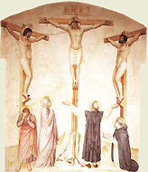
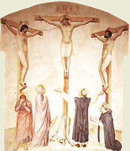

|  |
|---|
Textum Taurini 1952 editum
et automato translatum a Roberto Busa SJ in taenias magneticas
denuo recognovit Enrique Alarcón atque instruxit


|  |
|---|


[87505] Super Io., cap. 13 l. 1 Supra Evangelista posuit quasdam occasiones passionis et mortis Christi; in parte ista ostendit quomodo Christus discipulos suos praeparat ante suam passionem, et primo ostendit quomodo informavit eos exemplo; secundo quomodo confortavit verbo, et hoc infra XIV capit. non turbetur cor vestrum; tertio quomodo praemunivit eos orationum suffragio, infra XVII haec locutus est Iesus, et sublevatis oculis in caelum, dixit et cetera. Circa primum duo facit. Primo ponit exemplum quod Christus praebuit suis discipulis imitandum; secundo discipulorum defectum, qui nondum erant idonei ad sequendum, ibi cum haec dixisset Iesus, turbatus est. Circa primum tria facit. Primo ponit exemplum; secundo subdit exempli utilitatem, ibi venit ergo ad Simonem Petrum; tertio ad imitandum inducit, ibi postquam ergo lavit pedes eorum (...) dixit eis. Circa primum duo facit. Primo proponit Christi, exemplum dantis, affectum; secundo innuit factum in quo dedit exemplum, ibi et coena facta et cetera. Circa primum tria tanguntur. Primo quidem festum praesens; secundo mors Christi imminens; tertio Christi dilectio fervens. Festum praesens, Pascha erat; et hoc est quod dicit ante diem festum Paschae et cetera. Hic notandum est, quod hoc nomen Pascha quidam dicunt esse Graecum, ita quod dicatur a passione, quasi inde festum istud vocetur Pascha, quia tunc celebratur passio dominica; et quidem concordat cum Graeco, nam Pascha in Graeco idem est quod pati prima autem origo huius vocabuli ex Hebraeo habetur: Pascha enim dicitur quasi phase, idest transitus domini, ut dicitur Ex. c. XII, 11. Interpretatur autem hic isto modo Evangelista propter duplicem transitum. Unum qui praecessit, scilicet Angeli percutientis primogenita Aegypti, et salvantis primogenita Hebraeorum; alium, qui sequitur, filiorum Israel transeuntium mare rubrum. Et ideo bene factum est ut vocetur Pascha festum istud. Et sic possumus dicere, quod Pascha nostrum habet significationem utriusque linguae, Hebraeae scilicet, et Graecae, quia in ipsa passione domini fuit transitus Christi ex hoc mundo ad patrem; Act. X, v. 38: pertransivit benefaciendo et sanando. Item transitus omnium nostrum, sequendo Christum, vel per poenitentiam et martyrium, secundum illud Ps. LXV, 12: transivimus per ignem et aquam; et eduxisti nos in refrigerium, vel mentis desiderio ad caelestia anhelando, secundum illud Eccli. XXIV, v. 26: transite ad me, omnes qui concupiscitis me, et a generationibus meis implemini. Hoc autem quod dicit diem festum, antonomastice dicitur. Nam, ut legitur Ex. XXIII, 14 ss., tres dies anni solemnes erant, in quibus Iudaei convenire debebant in locum quem elegerat dominus: scilicet phase, quando immolabatur Pascha, et Pentecosten, et festum tabernaculorum, scilicet Scenopegiae. Sed dies Paschae inter alios celeberrimus erat. Sed dubium hic incidit de hoc quod dicit ante diem festum Paschae: nam dies festus Paschae dicitur ille dies in quo immolabatur agnus, quod erat luna quartadecima. Cum ergo dicat quod hoc fuit ante diem festum Paschae, videtur quod hoc fuerit factum luna tertiadecima, quae praecedebat quartamdecimam lunam. Quod quidem Graeci sequentes, dicunt quod dominus passus est luna quartadecima quando Iudaei suum Pascha celebrare debebant: et ideo dominus sciens sibi imminere passionem, praevenit celebrationem Paschae, et in praecedenti die celebravit Pascha suum, ante festum Paschae Iudaeorum. Sed quia Ex. XII, 18 praecipitur ut a decimaquarta die ad vesperam usque ad vigesimam primam diem mensis non inveniretur fermentum apud Hebraeos, dicunt ulterius, quod dominus confecit non in azymis, sed in fermentato: nam ante diem festum Paschae, idest tertiadecima luna, inveniebatur fermentatum apud Hebraeos. Huic autem sententiae tres alii Evangelistae contrariantur: nam ipsi dicunt, scilicet Matth. XXVI, 17, Mc. XIV, 12, Lc. XXII, 7, quod fuit prima die azymorum quando debebat immolari Pascha. Ex quo sequitur quod coena domini eo die facta fuit quo immolabatur Pascha Iudaeorum. Ad quod quidem Graeci respondent dicentes, alios Evangelistas non vere narrasse hoc factum, et ideo Ioannes, qui ultimum Evangelium scripsit, eos correxit. Sed haereticum est dicere, quod aliquid falsum, non solum in Evangeliis, sed etiam in quacumque canonica Scriptura inveniatur: et ideo necessarium est dicere, quod omnes Evangelistae dicunt idem, et in nullo discordant. Ad huius igitur evidentiam sciendum est, quod, sicut habetur Lev. XXIII, 5, solemnitates Iudaeorum incipiebant a vespera praecedentis diei. Cuius ratio est, quia numerabant dies secundum lunam, quae de sero primo apparet, unde et diem computabant de uno sero in alium. Et sic apud eos solemnitas Paschae incipiebat a vespera praecedentis diei, et terminabatur in vespere diei Paschae; sicut et apud nos festa celebrantur. Sic ergo aliquid factum apud nos in vigilia natalis domini, potest dici factum esse in festo natalis. Quem quidem modum servantes, alii Evangelistae dixerunt coenam esse factam primo die azymorum, quia facta fuit die praecedenti ad vesperam, quia iam pertinebat ad primum diem azymorum. Ioannes autem Evangelista hic diem festum Paschae accipit pro illo die qui totus celebris erat, non autem pro illo cuius vespere solum erat celebre, qui erat dies praecedens Pascha: et ideo dicit ante diem festum Paschae. Patet ergo quod coena domini facta est luna quartadecima ad vesperam. Mors autem Christi imminens, erat transitus eius ex hoc mundo per passionem; et quantum ad hoc dicit sciens Iesus quia venit hora eius: nam illa solemnitas Iudaeorum, figura erat passionis Christi, omnia enim in figura contingebant illis: I Cor. c. X, 11, et ideo statim ponit veritatem, scilicet passionem Christi. Et quasi exponens quod Pascha dicatur a phase, idest transitu, mentionem facit de transitu ut transeat, inquit, ex hoc mundo ad patrem. Ubi tria ponit circa passionem Christi. Primo, quod fuit praevisa; secundo, quod fuit congrua, tertio, quod fuit promotiva et exaltativa. Praevisa quidem fuit, non casualis, et quantum ad hoc dicit sciens Iesus; quasi dicat: non invitus, non inscius, sed sciens et voluntarius passus est etc.; infra XVIII, 4: sciens Jesus omnia quae ventura erant. E converso dicitur de nobis, Eccle. VIII, 6: multa hominis afflictio: quia nescit praeterita, et quae ventura sunt nullo modo scire potest. Congrua autem fuit quantum ad tempus, et quantum ad hoc dicit quia venit hora eius, idest ipse dies Paschae, quo transiret per crucem; Eccle. VIII, 6: omni negotio tempus est et opportunitas. Haec est hora illa de qua dicitur supra II, 4: nondum venit hora mea. Nec est intelligenda hora ista fatalis, quasi subiecta cursui et dispositioni stellarum, sed determinata dispositione et providentia divina. Ideo, inquam, determinata in Pascha Iudaeorum, quia congruebat solemnitati Iudaeorum ut veritas sequeretur figuram, dum quando agnus, qui figurabat Christum, immolaretur Christus, qui est vere agnus Dei; I Petr. I, 18: non corruptibilibus auro vel argento redempti estis de vana vestra conversatione paternae traditionis; sed pretioso sanguine agni immaculati Christi, et incontaminati. Congruebat etiam negotiis. Iam enim Christus clarificatus erat; infra eodem: nunc clarificatus est filius hominis, et Deus clarificatus est in eo. Iam patrem manifestaverat mundo; infra XVII, 6: pater, manifestavi nomen tuum hominibus, quos dedisti mihi de mundo. Restabat ergo ut consummaret opus passionis et humanae redemptionis, de quo dicitur infra XIX, 30: consummatum est, et sequitur: inclinato capite, emisit spiritum. Promotiva fuit passio Christi et exaltativa, et non oppressiva: quia ut transeat ex hoc mundo ad patrem, idest, faciendo humanam naturam participem paternae gloriae; infra XX, 17: ascendo ad patrem vestrum, Deum meum, et Deum vestrum. Non autem intelligendum est quod transeat de loco ad locum, cum Deus pater non comprehendatur loco; Ier. XXIII, 24: caelum et terram ego impleo. Sed, sicut Christus dicitur venisse a patre non eum deserendo sed assumendo naturam inferiorem similem nobis, ita et intantum dicitur ad eum rediisse inquantum etiam secundum humanitatem factus est consors paternae gloriae; Rom. VI, 10: quod autem vivit, vivit Deo; Phil. II, 11: omnis lingua confiteatur, quia dominus Iesus Christus in gloria est Dei patris. Consequenter cum dicit cum dilexisset suos, qui erant in mundo, in finem dilexit eos, commendatur fervens Christi dilectio, et hoc quantum ad quatuor. Primo quantum ad hoc quod fuit praeveniens, secundum illud I Io. IV, 10: non quasi nos dilexerimus Deum, sed quoniam ipse prior dilexit nos. Et quantum ad hoc dicit cum dilexisset suos, quasi antea: dilexit, inquam, antequam crearet; Sap. XI, 25: diligis omnia quae sunt, et nihil odisti eorum quae fecisti. Dilexit antequam vocaret; Ier. XXXI, 3: in caritate perpetua dilexi te, ideo attraxi te miserans. Dilexit antequam redimeret; infra XV, 13: maiorem caritatem nemo habet, ut animam suam ponat quis pro amicis suis. Secundo commendatur eius dilectio quantum ad hoc quod fuit congrua, quia dilexit suos. Ubi sciendum est quod secundum quod aliqui diversimode sunt sui, secundum hoc a Deo diversimode diliguntur. Sunt autem aliqui sui tripliciter. Primo creatione; et hos diligit conservando eis bona naturae; supra I, v. 11: in propria venit, et sui, per creationem, eum non receperunt. Aliqui vero sunt sui dedicatione, qui scilicet dati sunt a Deo patre per fidem; infra XVII, 6: tui erant, et mihi eos dedisti, et sermonem tuum servaverunt. Et hos diligit conservando in bonis gratiae. Aliqui vero sunt sui speciali devotione; I Paral. XI, 1: tui sumus, o David, et caro tua. Hos diligit specialiter consolando. Tertio commendatur dilectio Christi quantum ad hoc quod fuit necessaria, quia dilexit suos qui erant in mundo. Nam aliqui sunt sui, qui iam erant in gloria patris, quia etiam antiqui patres sui erant, inquantum speraverunt liberari per eum; Deut. XXXIII, 3: omnes sancti in manu illius sunt. Sed isti non tantum indigent huiusmodi dilectione quantum hi qui erant in mundo; et ideo dicit qui erant in mundo, corpore scilicet, sed non mente. Quarto commendatur quantum ad hoc quod fuit perfecta, unde dicit in finem dilexit eos. Finis autem dicitur dupliciter: quia finis intentionis, et finis executionis. Illud quidem est finis intentionis ad quod nostra ordinatur intentio; et huiusmodi finis debet esse vita aeterna, secundum illud Rom. VI, 22: habetis fructum vestrum in sanctificationem, finem vero vitam aeternam. Iterum finis huiusmodi Christus debet esse; Rom. X, 4: finis legis Christus ad iustitiam omni credenti. Et haec duo sunt unus finis: quia nihil est aliud vita aeterna quam fruitio Christi, secundum divinitatem; infra XVII, 3: haec est vita aeterna, ut cognoscant te solum Deum verum, et quem misisti, Iesum Christum. Secundum hoc ergo dicit in finem dilexit eos; ut perduceret in se finem, vel in vitam aeternam, quae nihil aliud est; Ier. c. XXXI, 3: in caritate dilexi te, propterea attraxi te, miserans. Illud autem est finis executionis quod est terminus rei; et sic mors potest dici finis, ut dicatur in finem dilexit eos, idest in mortem: quod potest habere triplicem sensum uno modo, secundum Augustinum, ut quodam humano modo dicatur Christus dilexit suos usque ad mortem tantum, et non ultra. Sed hic sensus est falsus: absit enim ut dilectionem morte finierit qui non est in morte finitus. Alio modo potest intelligi, ut ly in indicet causam; et sic est sensus: in finem dilexit eos, idest, usque ad mortem illum dilectio ipsorum perduxit; Gal. II, v. 20: dilexit nos, et tradidit semetipsum pro nobis. Tertio modo potest intelligi ut sit sensus: in finem, idest, cum multa signa dilectionis ostenderit eis ante, in finem, idest circa mortem, maioris eis signa dilectionis ostendit; infra XVI, 5: haec ab initio vobis non dixi, quia vobiscum eram, quasi diceret: non tunc necessarium fuit vobis, ut ostenderem quantum vos diligerem, nisi in recessu, ut sic amor et memoria mei in cordibus vestris profundius imprimeretur. Consequenter cum dicit et coena facta, innuit factum, in quo dabat exemplum, et primo describit horam facti; secundo subdit dignitatem facientis, ibi sciens itaque Iesus quod omnia dedit ei pater in manus etc.; tertio prosequitur de facti humilitate, ibi surgit a coena. Tempus autem describit ex duobus. Ex uno quod pertinebat ad eius caritatem, et ex alio quod exaggerabat Iudae iniquitatem, ibi cum Diabolus iam misisset in cor, ut traderet eum Iudas Simonis Iscariotes. Dicit ergo quantum ad primum et coena facta. Ubi sciendum est, quod aliter dicitur esse factum in permanentibus, et aliter in successivis. In permanentibus autem dicitur aliquid esse factum quando pervenit ad perfectionem propriae speciei et formae, sicut domus dicitur esse facta quando habet propriam formam. In successivis vero dicitur aliquid esse factum quando iam est consummatum; sicut mundus factus esse dicitur quando completus. Hoc etiam modo aliquid factum esse dicitur quando accipit propriam speciem. Cum ergo dicit et coena facta, non intelligendum est quod coena fuerit completa et peracta: quia postquam lavit pedes discipulorum, recubuit, et bucellam tradidit Iudae. Est ergo intelligendum coena facta, idest parata, et ad propriam speciem iam perducta: iam enim coenare inceperant, et postea surrexit. Unde inter coenandum lavit pedes discipulorum. De ista coena habetur Lc. XIV, 16: homo quidam fecit coenam magnam. Differt autem prandium a coena. Prandium enim dicitur quod fit in prima parte diei, coena vero quae fit in ultima. Sic ergo spiritualis refectio dicitur prandium, secundum quod congruit incipientibus; coena vero, secundum quod congruit perfectis. Consequenter cum dicit cum Diabolus iam misisset in cor, ut traderet eum Iudas Simonis Iscariotes, describit tempus, ex eo quod exaggerat iniquitatem proditoris: quod quidem describit Evangelista propter duo. Primo quidem ut ostendatur magis iniquitas Iudae, qui inter tot caritatis indicia, et tot humilitatis officia, tantam iniquitatem committere cogitabat; Ps. XL, 10: qui manducat panes meos, magnificavit super me supplantationem. Secundo vero ut reddatur magis admirabilis caritas Christi, qui licet hoc sciret, tamen ei caritatis et humilitatis praebens officium, eius pedes lavit; Ps. CXIX, 6: cum his qui oderunt pacem eram pacificus. Sed numquid Diabolus aliquid mittere potest in cor hominis? Videtur quod sic. In Ps. LXXVII, 49 enim dicitur: immissiones per Angelos malos. Sed ad hoc dicendum, quod id dicitur esse in corde hominis quod est in cogitatione et voluntate eius, unde quod dicitur cum iam misisset in cor etc. intelligendum est, idest, in voluntate eius. Sed sic mittere in cor, potest esse dupliciter. Directe; et sic solus ille potest aliquid mittere in cor hominis qui habet potestatem movendi interius voluntatem eius: et hoc potest solus Deus; et ideo solus ipse potest directe in voluntatem hominis imprimere; Prov. XX, 1: cor regum in manu, idest in potestate, domini; quocumque voluerit inclinabit illud. Quia vero voluntas movetur ab exteriori obiecto sicut a bono apprehenso, inde est quod qui suggerit aliquid esse bonum, dicitur illud mittere in cor hominis, indirecte faciendo ipsum apprehendere aliquid ut bonum, ex quo voluntas movetur. Sed hoc contingit dupliciter, quia, aut suggerendo exterius: et hoc modo etiam homo potest in cor aliquid mittere; aut suggerendo interius: et hoc modo immittit Diabolus. Nam vis imaginativa cum sit corporalis, quando Deus permittit, subiecta est potestati Daemonis. Unde, sive vigilando sive dormiendo, format in ea aliquas species, ex quibus apprehensis movetur voluntas hominis ad aliquid appetendum. Sic ergo immittit Diabolus in cor hominis, non directe per modum moventis, sed indirecte per modum suggerentis. Consequenter cum dicit sciens quia omnia dedit ei pater in manus, agit de dignitate facientis. Quia Eccli. III, 20, dicitur: quanto maior es, humilia te, ideo Evangelista dicturus de Christi humilitate, praemittit eius maximam dignitatem; et hoc quantum ad quatuor. Primo quantum ad scientiam; et quantum ad hoc dicit sciens quia omnia dedit ei pater in manus. Talia enim sunt spiritualia dona, quod data non ignorantur; I Cor. II, 12: nos spiritum non huius mundi accepimus, sed spiritum qui ex Deo est, ut sciamus quae a Deo donata sunt nobis. Et ideo Christus sciebat ea quae sibi data erant a Deo. Hoc autem ideo dicit ut humilitas magis sit commendabilis. Quandoque enim contingit quod aliquis magnae dignitatis est, et tamen, propter simplicitatem suam, dignitatem suam non recognoscit. Talis ergo si faceret aliquid humile, non reputaretur sibi ad magnam laudem, secundum illud Cant. I, 7: si ignoras te, pulcherrima inter mulieres. Sed si aliquis cognoscit suae dignitatis statum, et tamen affectus eius ad humilia inclinatur, eius humilitas est commendanda. Et ideo dicit Evangelista sciens quia omnia dedit ei pater in manus, tamen non omisit quae humilia sunt facere. Secundo quantum ad potestatem quia omnia dedit ei pater in manus, idest, in potestate eius. Dedit Deus Christo homini ex tempore, quae tamen fuerant in potestate filii ab aeterno; Matth. ult., 18: data est mihi omnis potestas in caelo et in terra. Dicit autem omnia dedit ei pater in manus, propter duo: ut ostendat quod Christus non invitus patiebatur. Nam si omnia erant in manu eius, idest in potestate, manifestum est quod eius adversarii inde nihil ei contra eius voluntatem facere poterant. Secundo, quia quando aliquis parvi momenti exaltatur, de facili superbit, nec aliquid humile facit, ne videatur derogare suae dignitati; sed qui in magno statu existens exaltatur, non negligit humilia: et ideo de dignitate Christi mentionem facit. Tertio quantum ad nobilitatem eius, et quantum ad hoc dicit quia a Deo exivit, et ad Deum vadit; Sap. VIII, 3: contubernium habens Dei. Quarto quantum ad sanctitatem, quia ad Deum vadit. In hoc est sanctitas hominis quod ad Deum vadat. Et hoc ideo ponit infra, quia ex quo ipse ad Deum vadit, proprium est sibi alios ad Deum reducere: quod quidem specialiter fit per humilitatem et caritatem; et ideo humilitatis et caritatis eis exemplum praebuit.
[87506] Super Io., cap. 13 l. 2 Postquam Evangelista commendavit Christi maiestatem hic commendat eius humilitatem, quam ostendit in pedum ablutione. Et primo praemittitur praeparatio Christi ad humilitatis obsequium; secundo describitur ipsum obsequium, ibi deinde misit aquam in pelvim et cetera. Circa primum sciendum est, quod Christus in humilitatis obsequio se ministrum exhibet, secundum illud Matth. XX, v. 28: filius hominis non venit ministrari, sed ministrare, et dare animam suam redemptionem pro multis. Ad bonum autem ministrum tria requiruntur. Primo quod sit circumspectus ad omnia videnda quae deesse possunt ministerio, et hoc maxime impediretur si sederet vel iaceret: unde ministrorum est stare; et ideo dixit surgit a coena. Luc. XXII, 27: quis maior est, qui recumbit, an qui ministrat? Secundo, quod sit expeditus ut possit omnia congrue peragere quae necessaria sunt ministerio: et ad hoc multum impedit vestium multitudo; et ideo dominus ponit vestimenta sua. Quod quidem significatum est Gen. XVII, 23, quod Abraham elegit expeditos vernaculos. Tertio, quod sit promptus ad serviendum, ut scilicet omnia habeat quae ad ministerium necessaria sunt. Lc. X, v. 40, dicitur de Martha, quod satagebat circa frequens ministerium. Et inde est quod dominus cum accepisset linteum praecinxit se, ut sic paratus esset non solum ad lavandum pedes, sed etiam ad tergendum: ex quo universum conculcat tumorem, dum is qui ad Deum vadit et a Deo exivit, pedes lavit. Mystice autem potest hoc factum ad duo referri: scilicet ad incarnationem Christi, et ad passionem eius. Si quidem referatur ad incarnationem, sic tria hic accipiuntur de Christo. Primo quidem voluntas subveniendi humano generi, in hoc quod surgit a coena. Nam Deus quamdiu patitur nos tribulari, residere videtur; sed cum nos a tribulatione eripit, videtur exurgere; Ps. XLIII, 26: exsurge, domine, adiuva nos. Secundo, exinanitio eius: non quidem quod suae dignitatis maiestatem deponeret, sed eam occultaret, parvitatem assumendo; Is. XLV, v. 15: vere tu es Deus absconditus. Et hoc signatur in hoc quod ponit vestimenta sua; Phil. II, 7: exinanivit semetipsum, formam servi accipiens. Tertio, assumptio nostrae mortalitatis in hoc quod praecinxit se linteo; Phil. II, 7: formam servi accipiens, in similitudinem hominum factus, et habitu inventus ut homo. Si vero referatur ad passionem Christi, tunc ad litteram vestimenta deposuit quando milites exuerunt eum, et super vestem suam miserunt sortem, infra XIX, 24. Tunc etiam linteo praecinctus est in sepulcro. In passione etiam deposuit vestimenta nostrae mortalitatis, et assumpsit linteum, idest candorem immortalitatis; Rom. VI, 9: Christus resurgens ex mortuis, iam non moritur: mors illi ultra non dominabitur. Consequenter cum dicit deinde misit aquam in pelvim etc., ponit Christi obsequium: in quo commendatur eius humilitas quantum ad tria. Primo quidem quantum ad obsequii genus; quod fuit valde humile, ut dominus maiestatis se ad lavandum pedes servorum inclinaret. Secundo quantum ad obsequii multitudinem, quia misit aquam in pelvim, lavit pedes, et tersit et cetera. Tertio quantum ad faciendi modum, quia non per alios, nec aliorum subsidio, sed per seipsum. Eccli. III, v. 20: quanto maior es, humilia te in omnibus. Mystice autem per haec, tria possunt intelligi. Nam primo per hoc quod aquam misit in pelvim, signatur effusio sanguinis eius in terram. Sanguis enim Iesu aqua dici potest, quia habet vim ablutivam; Apoc. I, 5: lavit nos a peccatis nostris in sanguine suo. Et inde est quod simul exivit aqua et sanguis de latere eius, ut daretur intelligi quod sanguis ille peccatorum ablutivus esset. Vel per aquam potest intelligi passio Christi: nam in Scriptura aqua tribulationes significat, Ps. LXVIII, 2: salvum me fac, Deus, quoniam intraverunt aquae usque ad animam meam, idest tribulationes. Misit ergo aquam in pelvim, idest, memoriam passionis fidelium animabus impressit per fidem et devotionem; Thren. III, 19: recordare paupertatis meae et transgressionis meae, absinthii et fellis. Secundo per hoc quod dixit et coepit lavare, insinuatur humana imperfectio: nam apostoli post Christum perfectiores erant, et tamen lotione indigebant aliquas habentes immunditias. Ut sic detur intelligi quod quantumcumque homo sit perfectus, nihilominus tamen magis perfici indiget, et aliquas immunditias contrahit, secundum illud Prov. XX, 9: quis potest dicere: mundum est cor meum, et purus sum a peccato? Sed tamen huiusmodi immunditias habent in pedibus tantum. Quidam autem non solum in pedibus, sed etiam totaliter sunt infecti. Illi enim totaliter terrenis immunditiis sordidantur qui supra eas iacent: unde qui totaliter et secundum affectum et secundum sensum amori terrenorum inhaerent, totaliter immundi sunt. Sed illi qui stant, idest mente et desiderio tendunt ad caelestia, immunditiam contrahunt solum in pedibus. Sicut enim hominem stantem oportet ad minus pedibus terram contingere, ita quamdiu vivimus in hac vita mortali, quae rebus terrenis ad sustentationem corporis indiget, ad minus ex parte sensualitatis aliquid contrahimus. Et ideo dominus praecepit discipulis, Lc. IX, 5 quod excuterent pulverem de pedibus eorum. Dixit autem coepit lavare, quia ablutio affectuum terrenorum hic incipit, et in futuro consummatur. Tunc enim implebitur quod dicitur Is. XXXV, 8: via sancta vocabitur. Sed attendendum, secundum Origenem, quod discipulorum pedes imminente passione coepit lavare, quia si diu ante lavisset eos, fuissent iterum sordidati. Unde tunc incepit quando post modicum abluturus erat eos aqua spiritus sancti, scilicet post passionem; Act. I, 5: vos autem baptizabimini spiritu sancto non post multos hos dies. Sic ergo apparet sanguinis eius effusio per hoc quod misit aquam in pelvim; et peccatorum nostrorum ablutio per hoc quod coepit lavare pedes discipulorum. Apparet, tertio, poenarum nostrarum in seipso susceptio: non enim solum maculas nostras lavit, sed poenas pro eis debitas in seipso assumpsit. Non enim poenae et poenitentiae nostrae sufficerent, nisi fundarentur in merito et virtute passionis Christi. Quod quidem apparet in hoc quod extersit pedes discipulorum linteo, scilicet corporis sui: I Petr. II, 21. Consequenter cum dicit venit ergo ad Simonem Petrum etc. ponit exempli utilitatem per quamdam concertationem discipuli et magistri: in qua quidem concertatione dominus ostendit de isto exemplo, primo quod sit mysticum et quod sit necessarium, ibi dixit ei Petrus: non lavabis mihi pedes; secundo quod sit congruum, ibi dixit ei Simon Petrus: domine, non tantum pedes meos, sed et manus et caput. Circa primum duo facit. Primo ponitur occasio verborum Christi: secundo ipsa verba Christi subduntur, ibi respondit Iesus, et dixit ei et cetera. Occasio quidem verborum Christi fuit recusatio Petri recusantis suscipere humilitatis exemplum: et hoc est quod dicit venit ergo ad Simonem Petrum et cetera. Quod quidem tripliciter exponitur. Primo quidem, secundum Origenem, quod dominus coepit lavare ab ultimis. Et hoc ideo, quia sicut medicus plurimorum aegrorum intentus curae, ab his qui magis indigent, propriam curam incipit; sic et Christus, qui pedes abluit discipulorum foedos, exorditur ab his qui erant magis foedi, et sic venit ad Petrum quasi minus aliis indigentem; Matth. XX, v. 8: incipiens a novissimis usque ad primos. Et hoc quidem sonare videntur verba Evangelii: coepit lavare pedes discipulorum, et postmodum sequitur venit ergo ad Simonem Petrum. Ex quo videtur quod prius lavit pedes aliorum. Si vero quaeratur quare Petrus hoc prae aliis recusavit, respondet Origenes, quia hoc fecit propter nimium fervorem amoris quem habebat ad Christum. Alii vero discipuli cum timore quodam reverebantur Christum, et ideo absque discussione omne factum sustinebant. Petrus vero eis ferventior secundum illud Ioan. ult., 15: Simon Iona, diligis me plus his? Dicit ei: etiam, domine, tu scis quia amo te ex amore fiduciam assumens, ferre recusat factum et causam inquirit; Eccli. VI, 11: amicus si permanserit fixus, erit tibi quasi coaequalis, et in domesticis tuis fiducialiter aget. Et ideo Petrus invenitur in Scriptura frequenter inquirere, et prompte proferre quae sibi meliora videntur. Secundo exponitur, secundum Chrysostomum, ut scilicet Christus inceperit prius lavare pedes a primis apostolorum. Sed quia proditor ille stultus erat et superbus, scilicet Iudas, prior ad pedum ablutionem recubuit ante Petrum. Nullus enim aliorum ausus fuisset Petrum praevenire. Unde de Iuda loquitur Evangelista, dicens coepit lavare pedes discipulorum, scilicet Iudae, qui quidem utpote superbus et stultus, in nullo renisus est, nec recusavit ferre quod dominus faciebat. Sed postquam venit ad Petrum, qui reverebatur et diligebat magistrum, cum timore recusat, et causam facti inquirit: et simile fecisset quilibet aliorum. Tertio vero exponitur, secundum Augustinum, quod ex verbis Evangelistae non debemus intelligere quod dominus laverit prius pedes aliis discipulis, et postmodum venerit ad Petrum; sed quod Evangelista, secundum consuetudinem suam, primo ponit factum, et postmodum narrat ordinem facti, sicut et supra VI, facit. Unde primo insinuat totum factum, scilicet quod lavit pedes discipulorum; et postmodum si quaeratur quomodo factum fuit, dicit quod primo venit ad Simonem Petrum. Et ideo primo ipse recusavit dicens domine tu mihi lavas pedes? Quae quidem verba magnum pondus habent. Domine, inquit, tu, qui es filius Dei vivi, mihi lavas pedes? Qui sum Simon Bariona, idest Simon Iona, Matth. XVI, 17. Item: domine, tu, qui es agnus incontaminatus, speculum sine macula, et candor lucis aeternae, mihi lavas pedes, qui homo peccator sum? Secundum illud Lc. V, 8: exi a me, quia homo peccator sum. Domine, tu, qui es creator, mihi lavas pedes, qui sum creatura, et modicae fidei? Haec dicebat Petrus territus ex consideratione maiestatis Christi, secundum illud Hab. III, 1: consideravi opera tua, et expavi. Consequenter cum dicit respondit Iesus etc. ponuntur verba Christi, ex quibus ostenditur factum illud esse mysticum. Unde dixit ei quod ego facio tu nescis modo, scies autem postea. Quod quidem factum, exemplum est et mysterium. Exemplum quidem humanitatis exhibendae; infra eodem exemplum enim dedi vobis, ut quemadmodum ego feci vobis, ita et vos faciatis. Mysterium autem interioris mundationis. Infra eodem: qui lotus est non indiget nisi ut pedes lavet et cetera. Dupliciter ergo potest intelligi hoc quod dicit quod ego facio. Uno modo, quod ego facio, idest, quomodo ego facio in exemplum, tu nescis modo, idest non intelligis, scies autem postea, tunc scilicet quando exposuit eis dicens: scitis quid ego fecerim vobis? Infra eodem. Alio modo, quod ego facio, tu nescis modo; idest, hoc mysterium est, et secretum est, et significat interiorem mundationem, quae non potest fieri nisi per me, quod non intelligis modo, scies autem postea, scilicet recipiens spiritum sanctum; infra XVI, 12: multa habeo vobis dicere; sed non potestis portare modo. Cum autem venerit ille spiritus veritatis, docebit vos omnem veritatem. Consequenter cum dicit dixit ei Petrus etc., ostendit factum illud esse mysticum, et primo ponit verba Petri praestantia occasionem verbis Christi; secundo subiungit Christi verba. Dicit ergo primo Petrus non lavabis mihi pedes in aeternum, idest numquam. Quasi diceret: absit a me ut hoc sustineam a magistro, domino et Deo meo. Et licet Petrus hoc ex zelo faceret, eius tamen zelus indiscretus et inordinatus erat; Rom. X, 2: zelum Dei habent, sed non secundum scientiam. Qui quidem zelus inordinatus erat propter tria: quia recusat quod utile erat et necessarium: nam, sicut dicitur Rom. III, 26, quid oremus, sicut oportet, nescimus; et ideo indiscrete recusamus recipere quod Deus nobis largitur, etiam si contrarium videatur. Sic etiam et Paulus petebat remotionem stimuli, II Cor. XII, 8, qui tamen ei utilis erat. Item, quia videtur quamdam irreverentiam ad Christum importare in hoc quod eius ordinationem infringere vult. Item, quia videtur vergere in derogationem sociorum, dum quod alii, secundum Origenem, a Christo absque contradictione susceperant, ipse accipere recusabat, dicens non lavabis mihi pedes in aeternum. Et ideo redarguit eum dominus dicens si non lavero te, non habebis partem mecum: quod quidem ad duo referri potest, videlicet ad factum quod Christus faciebat, et ad signatum eius. Sed si quidem referatur ad signatum, tunc planum est quod dicitur. Nullus enim aeternae haereditatis particeps fieri potest et Christi cohaeres, nisi spiritualiter sit mundatus: quia hoc dicitur Apoc. XXI, 27: nihil coinquinatum intrabit. In Ps. XIV, 1: domine, quis habitabit in tabernaculo tuo? Et respondens subdit: innocens manibus, et mundo corde. Quasi ergo dicat si non lavero te, non eris mundus, et, si non es mundus, non habebis partem mecum. Sed si referatur ad factum, tunc dubium est utrum haec ablutio sit de necessitate salutis. Ad quod dicendum est, quod sicut quaedam sunt prohibita quia mala, et quaedam mala quia prohibita, ita quaedam sunt praecepta quia necessaria, et quaedam necessaria quia praecepta. Hoc ergo ablutionis factum de quo dominus dicit si non lavero te, non habebis partem mecum, in se consideratum non est necessarium ad salutem, sed, supposito quod mandetur a Christo, iam factum est necessarium I Reg. XV, 22: melior est obedientia quam victima; et ita: quasi scelus idolatriae nolle acquiescere. Hic ostendit factum illud esse congruum. Et ponuntur primo verba Petri; secundo subditur responsio Christi. Sed in verbis Petri insinuatur ferventissimus amor eius ad Christum. Nam supra, quando dominus dixit ei: quod ego facio, tu nescis modo, dederat ei intelligere hoc factum utile fore; tamen, hac utilitate neglecta, induci non poterat ad pedum ablutionem recipiendam. Sed quando dominus comminatus est separationem suam ab ipso, dicens: non habebis partem mecum, non solum ad illa, sed ad ulteriora recipienda se obtulit, dicens domine, non tantum pedes meos, sed et manus et caput. In hac enim responsione territus totum se offert ad abluendum, amore turbatus et timore. Ut enim legitur in itinerario Clementis, Petrus adeo afficiebatur ad Christi corporalem praesentiam, quam ferventissime dilexerat, quod post Christi ascensionem cum dulcissimae praesentiae et sanctissimae conversationis memor erat, totus resolvebatur in lacrymas, ita ut genae eius viderentur adustae. Sciendum est autem, quod in homine tria sunt: caput, quod est summum; pedes, qui sunt infimi: manus, quae sunt mediae. Et similiter in interiori homine, scilicet in anima, est caput, ratio scilicet superior, qua anima inhaeret Deo, I Cor. XI, 3: caput mulieris vir, idest superior ratio; manus autem, idest inferior ratio, quae vacat operibus activae; pedes autem sunt sensualitas. Sed dominus sciebat discipulos suos mundos quantum ad caput, quia Deo coniuncti erant per fidem et caritatem; et quantum ad manus, quia eorum sancta opera: sed quantum ad pedes, aliquos affectus terrenorum ex sensualitate habebant. Petrus autem timens Christi comminationem, consentit non solum ad ablutionem pedum, sed etiam manus et capitis, dicens domine, non tantum pedes meos, sed et manus et caput. Quasi dicat: nescio an indigeam ablutione manus et capitis, nihil enim mihi conscius sum; sed non in hoc iustificatus sum: I Cor. V, 4, et ideo paratus sum lavare non tantum pedes, idest affectus inferiores, Cant. V, 3: lavi pedes meos, quomodo inquinabo illos, sed et manus, idest opera, Ps. XXV, 6: lavabo inter innocentes manus meas, et caput, idest rationem superiorem, Matth. VI, 17: faciem tuam lava. Consequenter cum dicit dixit eis Iesus, ponitur responsio domini, et primo dat quoddam generale documentum; secundo adaptat illud ad propositum, ibi et vos mundi estis, sed non omnes; tertio Evangelista exponit verba Christi, ibi sciebat enim quisnam esset qui traderet eum. Dicit ergo primo: qui lotus est, non indiget nisi ut pedes lavet; sed est mundus totus; supple, praeter pedes, quibus terram tangit. Per quod datur intelligi quod apostoli iam baptizati erant. Dicit enim qui lotus est etc., et postea subdit vos mundi estis etc., quia scilicet baptizati erant. Sed quidam dicunt, quod baptizati erant solum Baptismate Ioannis: quod non videtur verum, quia sic non erant loti, nam Baptisma Ioannis non mundabat interius a culpa. Et ideo dicendum, quod baptizati erant Baptismo Christi, secundum Augustinum. Et si obiicis, quod Christus non baptizabat, sed discipuli eius, ut dicitur supra IV, 2, dico quod non baptizabat turbas; sed discipulos suos sibi familiares et domesticos baptizavit. Sed cum Baptismus abstergat etiam sordes pedum, videtur quod qui lotus est, idest baptizatus, non indiget ut pedes lavet. Sed ad hoc dicendum, quod si statim post Baptismum transirent de mundo non utique indigerent hac ablutione, quia cum sint mundi toti, statim evolarent. Sed qui post Baptismum vivunt in hac vita mortali non possunt ad tantum culmen perfectionis ascendere quin etiam inordinati motus sensualitatis de affectibus terrenis insurgant: et ideo oportet quod pedes lavent vel per martyrium, quod est Baptismus sanguinis, vel per poenitentiam, quae est Baptismus flaminis, ut evolare possint. Consequenter cum dicit et vos mundi estis, sed non omnes, adaptat dominus ad propositum generale documentum. Sed si mundi erant, quare iterum dominus eos abluebat? Ad quod Augustinus dicit, quod mundi erant quantum ad manus et caput sed indigebant quantum ad pedes. Chrysostomus vero dicit, quod mundi erant non quidem simpliciter, quia nondum mundi erant ab immunditia originali: cum nondum Christus passus esset, nondum solutum esset pretium nostrae redemptionis; sed quantum ad aliquid, mundi erant, scilicet ab erroribus Iudaeorum. Origenes vero dicit, quod mundi erant, sed adhuc maiori mundatione opus erat, quia semper ratio aemulari debet charismata meliora, semper debet virtutum alta conscendere, iustitiae candore nitescere; Apoc. ult., 2: qui sanctus est, sanctificetur adhuc. Sed non omnes: quia unus eorum et caput et manus immundas habebat. Et ideo consequenter Evangelista ponit verba domini, dicens sciebat enim quisnam esset qui traderet eum, quasi dicat: ideo dixit non omnes, quia sciebat immunditiam Iudae proditoris. Duo enim hominem universaliter emundant: scilicet eleemosyna et misericordia in pauperes, Lc. XI, 41: date eleemosynam, et ecce omnia munda sunt vobis, et amor Dei: Lc. VII, 47: dimissa sunt ei peccata multa, quoniam dilexit multum; Prov. X, 12: universa delicta operit caritas. Haec enim duo deficiebant Iudae. Misericordia quidem, quia fur erat, et loculos habens, et defraudabat eleemosynas pauperum. Item amor ad Christum, quia iam Diabolus miserat in cor eius ut traderet eum principibus sacerdotum ad crucifigendum et cetera.
[87507] Super Io., cap. 13 l. 3 Postquam dominus ostendit humilitatis obsequium esse necessarium hic consequenter inducit ad imitationem, et primo praemittit circumstantias admonitionis; secundo ipsam admonitionem proponit, ibi scitis quid fecerim vobis? et cetera. Circa primum duo facit. Primo insinuat Evangelista admonitionis ordinem; secundo manifestat admonentis dispositionem, ibi accepit vestimenta sua et cetera. Ordo autem admonitionis est ut quod primo fecit opere, doceat sermone; et quantum ad hoc dicit postquam ergo lavit pedes eorum, accepit vestimenta sua et cetera. Act. I, 1: coepit Iesus facere et docere; Matth. V, 19: qui fecerit et docuerit, hic magnus vocabitur in regno caelorum. Dispositio autem admonentis insinuatur et quantum ad habitum, et quantum ad situm. Ad habitum quidem: quia diversus habitus diversis personis convenit, secundum propriorum actuum diversitatem; Eccli. XIX, 27: amictus hominis annuntiat de illo. Alius ergo habitus competit ministro, alius doctori. Ministro autem, quia debet esse expeditus ad obsequium, competit ut vestium impedimenta deponat; et ideo Christus cum ministrare voluit, surgit a coena, et ponit vestimenta sua. Doctori autem, qui debet esse gravis, et auctoritate praeeminens, competit vestium decens ornatus: et ideo dominus docere volens, accepit vestimenta sua. Quantum ad situm vero, quia ministrare volens, surrexit, unde dicit: surrexit a coena: nunc autem volens docere, recumbit, unde dicit et cum recubuisset iterum, dixit eis: et hoc ideo, quia doctrina debet esse in tranquillitate. Sedendo enim et quiescendo anima fit sapiens et prudens. Possunt haec tria habere mysterium. Cum enim Christus perfectam doctrinam discipulis praebuerit, quando spiritum sanctum eis misit; infra XIV, 26: Paraclitus autem spiritus sanctus, quem mittet pater in nomine meo, ipse vos docebit omnia, et suggeret vobis omnia quaecumque dixero vobis. Tria praecesserunt ipsam missionem. Scilicet peccatorum ablutio per passionem; Apoc. c. I, 5: lavit nos a peccatis nostris in sanguine suo. Et quantum ad hoc dicit postquam ergo lavit pedes eorum, idest, impleta purgatione per sanguinem. Item resurrectio. Christus enim ante passionem suam mortale corpus habuit, quae quidem mortalitas non competebat ei ex parte personae filii Dei sed ex parte humanae naturae assumptae, sed postquam resurrexit ex virtute divinitatis, accepit corporis immortalitatem: et quantum ad hoc dicit accepit vestimenta sua, idest, surgens factus est immortalis. Et dicit sua, quia sua virtute accepit; Rom. VI, v. 10: quod autem vivit, vivit Deo, idest virtute Dei. De istis vestimentis dicitur Apoc. c. III, 5: qui vicerit, vestietur vestimentis albis, et non delebo nomen eius de libro vitae. Item praecessit sessio, et hoc in ascensione; infra XVI, 7: si enim non abiero, Paraclitus non veniet ad vos et cetera. Et quantum ad hoc dicit cum recubuisset iterum, scilicet ad dexteram patris residens et sedens; Marc. ult., 19: et dominus quidem Iesus postquam locutus est, assumptus est in caelis, et sedet a dextris Dei. Et dicit iterum, non quod inquantum filius Dei unquam sedere desierit, quinimmo ab aeterno est in sinu patris, sed quia inquantum homo exaltatus est ad potiora bona patris; Phil. II, 9: propter quod et Deus exaltavit illum, et dedit illi nomen quod est super omne nomen. Sic ergo antequam spiritum sanctum perfecte docentem infunderet, lavit sanguine fuso; accepit vestimenta, resurgendo; recubuit, in gloria ascendendo. Consequenter cum dicit scitis quid fecerim vobis? Proponit ipsam admonitionem, et primo interrogat; secundo assumit; tertio concludit; quarto conclusionem confirmat. Interrogat quidem, cum dicit scitis quid fecerim vobis? Quasi dicat: facta quidem vidistis, sed tamen quare hoc fecerim, non intelligitis: et ideo sic quaerit ut ostendat facti magnitudinem, et ad considerandum inducat. Opera enim Dei consideranda sunt, quia profunda; Ps. XCI, 6: quam magnificata sunt opera tua, domine. Nimis profundae factae sunt cogitationes tuae. Vix enim sufficienter opera Dei scire possumus secundum illud Eccle. VIII, 17: intellexi quod rationem operum Dei nullam possit homo invenire. Sunt etiam delectabilia ad considerandum; Ps. XCI, 5: delectasti me, domine, in factura tua, et in operibus manuum tuarum exultabo. Sunt etiam utilia, quia ducunt in cognitionem auctoris; Sap. XIII: si operibus intendissent etc.; supra V, 36: opera enim quae dedit mihi pater ut faciam, ipsa sunt quae testimonium perhibent de me. Potest etiam, secundum Origenem, hoc quod dicitur scitis quid fecerim vobis accipi imperative; quasi dicat: sciatis quid fecerim vobis. Et tunc hoc dicit dominus, ut eorum erigat intellectum. Assumit eorum confessionem, dicens vos vocatis me magister et domine, et primo proponit eorum confessionem; secundo commendat eam, ibi et bene dicitis. Circa primum sciendum est, quod apostolus, I Cor. I, duo dicit de Christo; scilicet quod sit Dei virtus et Dei sapientia. Inquantum est virtus Dei, omnibus dominatur, ut enim dicit Ambrosius, dominus nomen est potestatis, inquantum est Dei sapientia, omnes instruit, et ideo discipuli vocabant eum dominum, supra VI, 69: domine, ad quem ibimus? Et magistrum; supra c. IV, 31: Rabbi, manduca. Et merito: ipse enim dominus est solus creans et recreans; Ps. XCIX, 3: scitote quoniam ipse est dominus, ipse solus est magister interius docens: Matth. XXIII, 10: magister vester unus est Christus, omnes autem vos fratres estis. Consequenter cum dicit et bene dicitis, commendat eorum confessionem. Circa quod sciendum est, quod aliquid redditur commendabile dupliciter. Uno modo si id quod dicitur conveniat rei de qua dicitur; quod fit per veritatem, quia si sit falsum, non convenit ei; unde bene dicitur Eph. IV, 25: deponentes mendacium, loquimini veritatem. Adeo enim vitanda sunt mendacia, ut etiam si cedere videantur ad laudem Dei, non sunt dicenda. Quantum ad hoc ergo dicit bene dicitis; et hoc ideo, quia verum est quod dicitis, quia competit mihi, sum etenim, scilicet magister et dominus. Magister, inquam, propter sapientiam quam doceo verbis; dominus propter potentiam quam ostendo miraculis. Alio modo redditur commendabile, si quod dicitur conveniat personae dicentis. Aliqui enim sunt qui vocant Christum magistrum et dominum, quibus non competit, cum non subiiciant se disciplinae et mandato Dei: et isti non bene dicunt. Unde Matth. XXV, 12, illis qui dicunt, domine, aperi nobis, respondetur: amen, amen dico vobis, nescio vos, quia hoc non corde dicunt, sed ore tantum. Istud apostoli bene dicebant, quia hoc eis competebat; unde dicit eis et bene dicitis, idest verum, sum etenim, scilicet vobis magister et dominus: nam me auditis ut magistrum, supra VI, 69: ad quem ibimus? Verba vitae aeternae habes, sequimini ut dominum; Matth. XIX, 27: ecce nos reliquimus omnia et secuti sumus te. Sed contra hoc est quod dicitur Prov. XXVII, 2: laudet te alienus, et non os tuum; extraneus, et non labia tua. Videtur ergo quod dominus non bene fecerit laudando se. Sed ad hoc respondet Augustinus dupliciter. Uno modo, quia vituperabile est quod quis se commendet propter periculum superbiendi: nam periculosum est sibi placere cui cavendum est superbire. Ubi ergo non imminet periculum superbiendi, non est vituperium propria commendatio. In Christo autem hoc periculum non timebatur, ille enim qui super omnia est, quantumcumque se laudet, non se extollit excelsius. Alio modo, quia aliquando laudabile est quod homo se commendet, quando scilicet cedit ad utilitatem fidelium: et sic apostolus commendat se, II Cor. XI. Sed valde nobis utile est, et per omnem modum necessarium, ut Deum cognoscamus, cum in hoc consistat tota perfectio nostra; unde expedit nobis ut revelet nobis magnitudinem suam, alioquin nullo modo eam scire possemus, si non indicet se ipse qui novit. Et ideo oportet quod ipse se nobis laudet, quia, ut dicit Augustinus, si non se laudando quasi arrogantiam vitare voluerit, nobis sapientiam denegabit; Eccli. XXIV, 1: sapientia laudabit animam suam. Concludit vero cum dicit si ergo ego lavi pedes vestros dominus et magister, et vos debetis alter alterius lavare pedes. Ubi arguit ab eo quod minus videtur ad id quod magis. Minus enim videtur quod maior debeat facere aliquod humile, quam minor; et secundum hoc concludit si ergo ego, qui sum maior, quia magister et dominus, lavi pedes vestros, et vos, multo magis, qui estis minores, qui estis discipuli et servi, debetis alter alterius lavare pedes; Matth. XX, 26: qui maior est vestrum, sit vester minister (...) nam filius hominis non venit ministrari, sed ministrare. Sed contra, videtur quod hoc quod dicitur vos debetis alter alterius lavare pedes, habeat rationem praecepti: sed qui negligit praeceptum peccat mortaliter; ergo et cetera. Responsio. Dicendum, secundum Augustinum, quod omnis homo debet lavare pedes alterius vel corporaliter vel spiritualiter; et multo melius est, et sine controversia verius, ut aliquis faciat opere, ne dedignetur quod fecit Christus, facere Christianus. Cum enim ad pedes fratris inclinatur corpus, etiam in corde ipso vel excitatur, vel si iam inerat, confirmatur humilitatis affectus. Quod si non fiat opere, saltem hoc corde facere debemus. In lotione enim pedum datur intelligi lotio macularum. Tunc ergo spiritualiter lavas pedes fratris tui, cum, quantum in te est, abluis maculas eius. Et hoc fit tripliciter: remittendo scilicet ei offensam, secundum illud Col. III, 13: donantes invicem vobismetipsis, si quis adversus aliquem habet querelam: sicut et dominus donavit vobis, ita et vos. Item orando pro peccatis eius, secundum illud Iacob. ult., 16: orate pro invicem ut salvemini. Et iste duplex lavandi modus communis est omnibus fidelibus. Tertius modus pertinet ad praelatos, qui lavare debent remittendo peccata auctoritate clavium, secundum illud infra XX, 22: accipite spiritum sanctum: quorum remiseritis peccata, remittuntur eis. Possumus etiam dicere, quod hoc in facto dominus ostendit omnia opera misericordiae. Nam qui dat panem esurienti, pedes eius lavat, similiter qui eum hospitio recipit, et qui operit nudum, et sic de aliis; Rom. XII, 13: necessitatibus sanctorum communicantes. Confirmat autem conclusionem cum dicit exemplum enim dedi vobis etc.: et hoc quidem ex quatuor. Primo quidem ex sua intentione; secundo vero ex auctoritate, ibi amen, amen dico vobis; tertio ex praemio quod ipsi operi debetur, ibi si haec scitis, beati eritis, si feceritis ea; quarto ex dignitate eorum quibus pedes lavat, ibi amen, amen dico vobis: qui accipit si quem misero, me accipit. Dixit ergo, quod hoc ideo feci ut darem vobis exemplum; et ideo debetis alter alterius lavare pedes, quia hoc in facto illo intendebam. Nam in actibus hominum plus movent exempla quam verba. Id enim homo agit et eligit quod videtur ei bonum: unde magis ostendit esse bonum quod ipsemet eligit, quam quod docet esse eligendum. Et inde est quod quando aliquis dicit aliquid, et tamen aliud facit, magis suadet aliis quod facit, quam illud quod docet: et ideo maxime necessarium est ex ipso facto exemplum dare. Sed exemplum quidem puri hominis humano generi non erat sufficiens ad imitandum, tum quia ratio humana ab omni consideratione deficit, tum quia in ipsa rerum consideratione decipitur: et ideo datur nobis exemplum filii Dei, quod est infallibile, et ad omnia sufficiens. Unde dicit Augustinus: quia superbia non sanatur, si humilitate divina non sanatur similiter quae avaritia, et sic de aliis. Sed attende, quod satis convenienter filius Dei est nobis in exemplum virtutum. Ipse enim est ars patris, ut sicut fuit exemplar creationis, esset etiam exemplar iustificationis; I Petr. II, 21: Christus passus est pro nobis, vobis relinquens exemplum, ut sequamini vestigia eius. Iob XXIII, 11: vestigia eius secutus est pes meus: viam eius custodivi, et non declinavi ex ea. Consequenter cum dicit amen, amen dico vobis: non est servus maior domino suo etc., confirmat conclusionem ex auctoritate: et primo tangit discipulorum conditionem; secundo ipsorum officium. Conditio autem discipulorum est quod sunt servi; Lc. XVII, 10: cum omnia bene feceritis, dicite quia servi inutiles sumus. Officium autem eorum est quod sint apostoli; Lc. VI, 13: elegit duodecim, quos apostolos nominavit. Sic ergo dicit: dico, quod debetis alter alterius lavare pedes, sicut et ego lavi, quia non est servus maior domino suo, quantum ad primum, neque apostolus, idest missus, maior eo qui misit illum. Licet autem ipse filius Dei, qui est apostolus confessionis nostrae, ut dicitur ad Hebr. III, v. 1, sit aequalis illi qui misit eum, scilicet patri, de omnibus tamen aliis verum est quod hic dicitur neque apostolus maior est eo qui misit illum. Sed contra: infra enim XV, 15, dominus dicit discipulis suis: iam non dicam vos servos, quia servus nescit quid faciat dominus eius. Respondeo. Dicendum quod duplex est servitus. Una, quae procedit ex timore filiali, quae facit bonum servum; secundum illud Matth. XXV, 23: euge serve bone et fidelis: et hoc modo dominus vocat eos servos. Alia est servitus quam facit timor servilis; de qua dicitur Matth. XVIII, 32: serve nequam, omne debitum dimisi tibi quoniam rogasti me. Et de hac dicit dominus: iam non dicam vos servos et cetera. Consequenter cum dicit si haec scitis, beati eritis, si feceritis ea, confirmat conclusionem ex praemio, et primo proponit praemium; secundo excipit aliquem ab eo, ibi non de omnibus vobis dico. Dicit ergo si haec scitis, quasi dicat: tu haec dicis nobis, quae quidem non ignoramus. Quare ergo dicis nobis? Ideo, inquam, quia et si haec scitis, quod quidem est omnium, tamen beati eritis, si feceritis ea, quod est paucorum. Et dicit si scitis et feceritis, scilicet quia, ut dicitur Lc. XI, 28, beati qui audiunt verbum Dei, et custodiunt illud. Et Ps. CX, 10: intellectus bonus omnibus facientibus eum. E contra dicitur Iacob. IV, 17: scienti bonum facere, et non facienti, peccatum est illi. Excipit autem quemdam, cum dicit non de omnibus vobis dico, et primo proponit exceptionem; secundo assignat exceptionis rationem, ibi sed ut impleatur Scriptura; tertio assignat rationem quare ponit exceptionem, ibi amodo dico vobis priusquam fiat. Circa primum duo facit. Primo ponit exceptionem; secundo respondet tacitae quaestioni. Exceptionem ponit cum dicit non de omnibus vobis dico etc., quasi dicat: beati eritis, tamen non omnes, quia non dico de omnibus vobis, quod ad beatitudinem perveniatis; I Cor. IX, 24: omnes quidem currunt, sed unus accipit bravium. Est enim aliquis inter vos, idest Iudas, qui non erit beatus; neque faciet ea. Sed, secundum Origenem, dominus non dicit beati eritis absolute, sed apposuit conditionem, dicens si feceritis ea: quod quidem verum est in omnibus, etiam in Iuda; si enim Iudas fecisset ea, beatus fuisset. Unde vult quod magis excipiat hoc quod dicit non est servus maior domino suo etc., quasi diceret: dico quod estis servi et apostoli; non tamen de omnibus hoc dico: Iudas enim dum esset servus peccati, non erat servus divini verbi, neque apostolus, Diabolo ingresso in cor eius. Sed quia posset aliquis dicere: ex quo non dicit de omnibus ut sint beati, vel eius apostoli, ergo ex improviso aliquis est de eius collegio periturus. Ideo dominus ad haec respondens, dicit ego scio quos elegerim, quasi diceret: electi non peribunt; sed non omnes sunt electi. Ille ergo peribit qui electus non est, scilicet Iudas; infra XV, v. 16: non vos me elegistis, sed ego elegi vos. Sed contra est quod dicitur supra VI, 71: nonne ego vos elegi duodecim? Cum ergo Iudas esset unus ex duodecim, videtur quod fuerit electus. Sed dicendum, quod duplex est electio. Una est ad praesentem iustitiam, et ad hanc electus fuit Iudas; alia electio est ad finalem gloriam, et secundum hanc Iudas non fuit electus. Ratio autem huius exceptionis est ut impleatur Scriptura: quae hic praedicit, non quod cogat, sed quia hoc quod futurum erat, non tacuit; Lc. ult. 44: oportet impleri omnia quae scripta sunt in lege Moysi et prophetis et Psalmis de me; Matth. c. V, 18: iota unum aut unus apex non praeteribit a lege donec omnia fiant. Quae quidem Scriptura dicit qui manducat panem mecum, levabit contra me calcaneum suum. Hoc est secundum aliam translationem, ubi nos habemus: etenim homo pacis meae, in quo speravi, qui edebat panes meos, magnificavit super me supplantationem. Ubi ostenditur Iudae ad Christum familiaritas, cum dicit qui manducat panem mecum. Iudas enim panem cum aliis discipulis cum Christo comedit, etiam consecratum. Item ostenditur eius malignus conatus contra Christum, cum dicit levabit contra me calcaneum suum; idest, conabitur ad meam conculcationem. Calcaneo enim comprimimus hostes; Gen. III, 15: ipsa conteret caput tuum, et tu insidiaberis calcaneo eius. Tunc ergo dicitur aliquis levare calcaneum suum contra aliquem, quando conatur eum opprimere. Sed hoc Iudas non poterit: quia unde ipse credit me opprimere, inde exaltabor; supra XII, 32: ego, si exaltatus fuero a terra, omnia traham ad meipsum. In quo habemus exemplum, ut si quando a famulis aut ab aliquibus vilioribus patiamur aliquod malum, non scandalizemur, respicientes Iudae exemplum, qui infinitis potitus bonis, in contrarium remuneravit benefactorem. Ideo autem dominus Iudam, quem futurum noverat esse malum, elegit, ut daret intelligere quod nulla societas hominum sine alicuius mali admixtione futura erat: Cant. II, 2: sicut lilium inter spinas, sic amica mea inter filias. Unde Augustinus dicit in quadam epistola: non audeo mihi arrogare quod domus mea sit melior coetu apostolorum. Item ut si contingat quod aliquis ab aliquo praelato in societatem Ecclesiae assumptus, malus efficiatur, non sit in condemnationem ipsius praelati. Ecce enim quod Iudas electus a Christo, proditor efficitur. Sic etiam Act. VIII, 13 Philippus assumpsit Simonem magum; Ier. c. XVIII, 20: numquid redditur pro bono malum, quia foderunt foveam animae meae? Matth. X, 36: inimici hominis, domestici eius. Consequenter cum dicit amodo dico vobis priusquam fiat, assignat causam quare exceptionem posuit; quasi dicat: diu tacui eius malitiam sed quia tempus est ut prodeat in publicum, ideo dico vobis, idest manifesto, antequam fiat, ut credatis quia ego sum qui futura praedico, et occulta cordis manifesto; quod est proprium Dei; Ier. c. XVII, 9: pravum est cor hominis et inscrutabile: quis cognoscet illud? Ego dominus scrutans cor, et probans renes; Is. LXI, v. 23: secutura quoque annuntiate nobis, et sciemus quia dii estis vos. Vel: ego sum qui sum, Ex. III, 14. Consequenter cum dicit amen, amen dico vobis etc., confirmat conclusionem inductam ex dignitate eorum quibus pedes lavit: quorum tanta est dignitas ut obsequia eis impensa quodammodo videantur redundare in Deum, sed tamen secundum quemdam gradum: quia quae fiunt fidelibus per Christum, redundant in Deum patrem. Ostendit ergo primo quomodo ea quae fiunt discipulis Christi, redundant in Christum. Et quantum ad hoc dicit amen, amen dico vobis; quasi diceret: vere, debetis lavare pedes, quia qui recipit si quem misero, me accipit, idest, obsequium quod exhibetur his quos ego mitto, mihi attribuo factum; Matth. X, 40: quis vos recipit, me recipit. Secundo ostendit quomodo obsequium Christo exhibitum redundat in patrem, dicens qui autem me accipit, accipit eum qui me misit; supra V, 23: ut omnes honorificent filium sicut honorificant patrem. Secundum autem Origenem, potest intelligi dupliciter. Uno modo connexim; et sic est sensus: qui accipit si quem misero, me accipit etc. idest, qui recipit missos a me, recipit et patrem. Qui ergo recipit si quem misero, recipit patrem. Alio modo distinctim; et sic est sensus: qui recipit si quem misero, me accipit: verum est corporaliter, sed qui recipit me, scilicet spiritualiter ad animas venientem, secundum illud Eph. III, 17: habitare Christum per fidem in cordibus vestris, accipit eum qui me misit, scilicet patrem. Non tantum ego in eo manebo, sed et pater; infra XIV, 23: ad eum veniemus, et mansionem apud eum faciemus. Sed ex hoc Arius errorem suum confirmare nititur hoc modo. Dominus dicit, quod qui recipit ipsum, recipit patrem: ergo eadem est comparatio patris mittentis ad filium, quae est filii mittentis ad discipulos; sed Christus mittens, est maior discipulis missis: ergo pater est maior filio. Sed ad hoc dicendum, secundum Augustinum, quod in Christo fuerunt duae naturae, humana scilicet, et divina: et secundum hoc loquitur ex una parte secundum humanam naturam, dicens qui accipit si quem misero, me, hominem, accipit, qui communico cum eis in una natura; et ex alia parte loquitur secundum divinitatem qui autem me, Deum, accipit, accipit eum qui me misit, qui cum eo sum unius naturae. Vel qui accipit eum quem ego mitto, accipit me, cuius auctoritas est in eis; et qui me accipit, accipit patrem, cuius auctoritas est in me; ut sic in verbis istis importetur quasi mediatio Christi inter Deum et hominem, secundum illud I Tim. II, 5: mediator Dei et hominum homo Christus Iesus.
[87508] Super Io., cap. 13 l. 4 Supra ostendit exemplum Evangelista quod Christus praebuit suis discipulis ad imitandum; hic ostendit defectum discipulorum, quem praenuntiat eis Iesus, qui nondum erant idonei ad sequendum, et primo ponit defectum discipuli qui eum tradidit; secundo defectum discipuli qui eum negavit, ibi dixit ei Simon Petrus: domine, quo vadis? Circa primum duo facit. Primo denuntiat discipuli proditionem; secundo eius separationem, ibi cum ergo exisset dixit Iesus et cetera. Circa primum duo facit. Primo ponitur praenuntiatio futurae proditionis; secundo ipsius proditionis executio, ad veritatem praenuntiantis comprobatam, ibi quod facis, fac citius. Circa primum duo facit. Primo praenuntiat scelus proditionis; secundo personam proditoris, ibi aspiciebant ergo discipuli ad invicem. Circa primum, primo praemittit praenuntiantis affectum, secundo ponit praenuntiatum effectum. Praenuntians ergo Christus est, qui afficitur ad turbationem: et quantum ad hoc dicit cum hoc dixisset Iesus, reinvitans eos ad caritatem, qua privatum videbat proditorem discipulum, turbatus est spiritu. Circa quod sciendum est, quod turbatio designat commotionem quamdam: et hoc apparet per hoc quod habetur supra V, 4: Angelus domini descendebat secundum tempus in piscinam, et movebatur aqua, et postea sequitur: domine, hominem non habeo, ut cum turbata fuerit aqua, mittat me in piscinam: quod pro eodem accipit aquam turbari, et moveri. Secundum hunc etiam modum dicimus mare turbatum, quando est commotum. Turbatio ergo animi, eius commotionem designat. Sed sunt quidam actus animae sine commotione corporis, idest actus intellectivae partis. Actus autem appetitus sensitivi sunt cum corporis commotione; unde affectiones appetitus sensitivi, passiones dicuntur. Inter omnes autem affectiones seu passiones appetitus sensitivi, tristitia magis vim commotionis habet. Delectatio enim, cum dicat quietem in bono praesenti, magis rationem quietis habet quam commotionis. Timor etiam, cum sit de malo futuro, minus movet quam tristitia, quae est de malo praesenti. Et inde est quod turbatio animi praecipue dicitur tristitia. Turbatus est ergo Iesus, idest tristatus. Sed attendendum, quod quidam philosophi fuerunt, scilicet Stoici, dicentes, quod huiusmodi turbatio et huiusmodi passiones in sapientem non cadunt; quamvis enim sapiens secundum eos timeat, gaudeat, et desideret, nullo modo tamen tristatur. Sed horum falsitas manifeste apparet ex hoc quod Iesus, qui est summa sapientia, turbatur. Sciendum tamen, quod duplex est turbatio. Quaedam procedit ex carne, quando scilicet quis turbatur praeter iudicium rationis ex apprehensione sensuali, quae quidem turbatio quandoque quidem consistit intra limites rationis, in nullo eam obnubilans. Quae non perfecta passio, sed propassio dicitur a Hieronymo; et haec in sapientem cadit. Quandoque autem rationis limitem excedit, et eam turbat, et est non solum passio, sed etiam turbatio; et haec in sapientem non cadit. Alia est turbatio quae procedit ex ratione, quando scilicet ex rationis iudicio et deliberatione turbatur quis in appetitu sensitivo. Et haec turbatio fuit in Christo: unde signanter dicit Evangelista, quod turbatus est spiritu, idest turbatio quae fuit in appetitu sensitivo, in Christo fuit ex iudicio rationis. Unde supra XI, 33, dicit quod turbavit semetipsum. In Christo enim omnia ex deliberatione rationis etiam in inferiori appetitu sensitivo proveniebant: unde nec subiti motus sensualitatis in Christo fuerunt. Voluit autem hic Iesus turbari propter duo. Primo quidem propter fidei nostrae instructionem. Nam imminebat ei passio, et mors, quam naturaliter refugit natura humana, et, cum eam sibi sentit imminere, tristatur tamquam de malo et nocivo sibi praesente. Ut ergo ostenderet se veram naturam humanam habere, voluit turbationis affectum ex iudicio rationis etiam quantum ad ipsam animam pati. Per quod excluditur error Apollinaris dicentis, in Christo non fuisse animam, sed verbum loco animae. Secundo, propter nostram aedificationem. Videbat enim, secundum Augustinum, quod proditor ille exiturus erat, ut Iudaeos qui eum caperent, adduceret: ex quo separabatur a collegio sanctorum, et sententiam mortis contra se accipiebat. Et ideo ex quodam pietatis affectu ad eum tristabatur, dans per hoc exemplum praelatis, quod si duram sententiam quandoque contra subditos proferre contingat, cum dolore cordis proferant, secundum illud Ps. CXL, 5: corripiet me iustus in misericordia. Nam ipse proditionem Iudae aliis manifestare volens, turbatus est spiritu, et protestatus est, ne scilicet quasi ignorans proderetur, et dixit: amen, amen dico vobis, quia unus ex vobis me tradet. Signanter autem dicit unus ex vobis electis scilicet ad sanctum collegium, ut det intelligere quod nullum futurum foret adeo sanctum collegium quin aliquis peccator et malus in ipso inveniatur; Iob I, 6: cum venissent filii Dei ut assisterent coram domino, affuit inter eos etiam Satan. Dicit autem unus, non duo vel plures, ne collegium detestari videatur, sed proditorem ex collegio. Nam propter unum malum ex collegio, collegium malum reputari non debet. Ideo autem si plures mali essent, collegium posset malum reputari. Unus, inquit, ex vobis, numero, non merito, et spiritus vinculo: I Io. II, 19: ex nobis prodierunt; sed non erant ex nobis: nam si fuissent ex nobis, permansissent utique nobiscum; me tradet. Ecce enuntiatio: me, inquam, magistrum, me dominum, me salvatorem. Consequenter cum dicit aspiciebant ergo ad invicem discipuli etc., occulte designat personam proditoris, et primo ponitur designationis occasio; secundo personae designatio, ibi respondit Iesus: ille est cui intinctum panem porrexero, tertio designationis effectus, ibi et post buccellam introivit in eum Satanas. Est autem designationis duplex occasio. Una discipulorum communis haesitatio; alia fuit praedicta interrogatio. Primo ergo ponit primam, secundo secundam, ibi erat ergo recumbens. Sciendum est circa primum, quod boni discipuli habebant ad Christum maximam caritatem, et maximam fidei firmitatem. Ex caritate quidem praesumebat quilibet ex se, quod nullus eum erat negaturus; sed ex fidei firmitate certissime tenebant quod verbum Christi falsum esse non poterat. Et ideo, licet nullius sibi ipsis conscii essent mali, tamen praenuntiationem Christi propriis cogitationibus veriorem et credibilem esse putabant. Unde se homines esse memores, et alterabilem esse affectum, etiam ad hoc provectorum, ita ut contrarium velit ei quod prius voluit, magis de se dubitabant quam de Christi veritate: et ideo aspiciebant ad invicem haesitantes de quo diceret, I Cor. X, 12: qui se existimat stare, videat ne cadat; Iob IX, 30: si lotus fuero quasi aquis nivis, et fulserint velut mundissimae manus meae: tamen sordibus intinges me. Consequenter cum dicit erat ergo recumbens unus ex discipulis eius in sinu Iesu, ponitur inquisitio discipuli, et primo describitur eius ad Christum familiaritas; secundo excitatio eius ad interrogandum ibi innuit huic ergo Simon Petrus; tertio subditur eius interrogatio, ibi itaque cum recubuisset ille supra pectus Iesu, dicit ei. Familiaritas autem discipuli ad Christum ostenditur in hoc quod super eum recumbit, unde dicit erat ergo recumbens unus ex discipulis eius in sinu Iesu. Discipulus iste Ioannes Evangelista fuit, qui hoc Evangelium scripsit, et de se in persona alterius loquitur, volens vitare iactantiam, secutus morem aliorum qui sacras Scripturas conscripserunt. Sic enim Moyses in libris suis de se sicut de quodam altero loquitur, dicens locutus est dominus ad Moysen dicens et cetera. Sic et Matthaeus: vidit hominem sedentem in telonio Matthaeum nomine et cetera. Et Paulus II Cor. XII, 2: scio hominem in Christo (...) raptum huiusmodi usque ad tertium caelum. Tria autem hic Ioannes de se tangit. Primo quidem amorem quo quiescebat in Christo, dicens, quod erat recumbens, idest quiescens; Iob XXII, 26: tunc super omnipotentem deliciis afflues, et elevabis ad Deum faciem tuam; Ps. XXII, 2: super aquas refectionis educavit me. Secundo secretorum notitiam, quae ei Christus revelabat, et specialiter in conscriptione huius Evangelii, unde dicit quod recubuit in sinu Iesu: per sinum enim secretum significatur; supra I, v. 18: unigenitus, qui est in sinu patris ipse enarravit. Tertio specialem dilectionem qua eum Christus diligebat, unde dicit quem diligebat Iesus: non quidem singulariter, sed quasi quodammodo excellentius prae aliis dilexit. Quomodo autem eum excellentius prae aliis dilexerit, magis in fine huius libri dicetur. Quantum ad praesens autem sciendum, quod Ioannes fuit magis dilectus a Christo propter tria. Primo quidem propter munditiam puritatis: quia virgo est electus a domino, et virgo in aevum permansit. Et Prov. c. XXII, 11: qui diligit cordis munditiam, propter gratiam labiorum suorum habebit amicum regem. Secundo propter sublimitatem suae sapientiae, quia ceteris altius arcana divinitatis intuitus est: unde et aquilae comparatur; Prov. XIV, 35: acceptus est regi minister intelligens. Tertio propter vehementem fervorem affectus sui ad Christum; Prov. c. VIII, 17: ego diligentes me diligo. Consequenter cum dicit innuit ergo huic Simon Petrus, ponitur excitatio ad interrogandum. Sed cum innuere sit absque verbo insinuare, ad quid est hoc quod dicit: innuit ergo (...) et dicit? Ad hoc dicendum, quod nos dicimur aliquid innuere quando aliquid interius cogitamus; secundum illud Ps. LII, 1: dixit insipiens in corde et cetera. Multo ergo magis dicimur aliquid dicere innuendo iam exterius quibuscumque vel qualibuscumque signis, quod fuerat corde conceptum. Et sic est sensus: innuit (...) et dicit; idest, innuendo dicit. Vel potest dici, quod primo innuit signo, et postea dicit verbo, hoc scilicet quod sequitur: quis est de quo dicit? Quod scilicet eum tradet. Sed cum Petrus ubique in Evangeliis semper audax, et primus ad respondendum propter amoris fervorem inveniatur, quid est quod hic tacet? Quid est quod alteri interrogationem committit? Cuius quidem ratio potest esse triplex, secundum Chrysostomum. Una, quia cum supra est reprehensus a domino de hoc quod lavari sibi pedes non patiebatur a domino, et audivisset si non lavero te, non habebis partem mecum: dubitabat nunc de hoc dominum molestare. Alia ratio est, quia Petrus nolebat quod dominus hoc publice, ita quod alii possent audire, manifestaret. Unde, quia ipse remotus erat a Christo, nec ipse tantum audivisset, Ioannem, qui proximus erat Christo, ad interrogandum excitat. Habet etiam rationem mysticam. Per Ioannem enim contemplativa, per Petrum activa vita signatur. Petrus vero mediante Ioanne instruitur a Christo: quia vita activa de divinis instruitur mediante contemplativa: Maria enim sedens secus pedes domini audiebat verba illius; sed Martha satagebat circa frequens ministerium: Lc. X, 39. Consequenter cum dicit itaque cum recubuisset ille supra pectus Iesus, dicit ei etc., ponitur interrogatio. Sed notandum, quod cum Petrus innuit ut interrogaret, recumbebat Ioannes in sinu Iesu; nunc vero eum interrogat Ioannes, qui supra pectus eius recumbit. Pectus enim vicinius est ori quam sinus. Ioannes ergo secretius audire volens responsum, et magis silenter, de sinu conscendit ad pectus. Mystice autem per hoc datur intelligi, quod quanto magis homo vult divinae sapientiae secreta capere, tanto magis conari debet ut propinquior fiat Iesu, secundum illud Ps. XXXIII, 6: accedite ad eum, et illuminamini. Nam divinae sapientiae secreta illis praecipue revelantur qui Deo iuncti sunt per amorem; Iob XXXVI, 33: annuntiat de ea amico suo, quod possessio eius sit; Prov. c. XVIII, 17: venit amicus eius, et investigavit eum. Consequenter cum dicit respondit Iesus etc. designat personam proditoris: et primo verbo, secundo facto. Verbo quidem, cum dicit ille est cui intinctum panem porrexero: quod potest duo significare, secundum quod potest dupliciter accipi. Quia si accipiatur hic in malum, significat Iudae simulationem. Nam sicut panis intinctus infectus est ex eo quod intingitur, et mutat colorem, ita et simulator, dum aliud gerit in corde et aliud praetendit ore: et sic erat Iudas, qui exterius praetendebat se magistrum diligere, in corde proditionem tractabat; Ps. XXVII, 3: loquuntur pacem cum proximo suo, mala autem in cordibus eorum. Si vero accipiatur in bonum, sic ponitur ad exaggerandam eius malignitatem. Panis enim intinctus magis sapidus est. Ut ergo ostendat quod licet multa bona a Christo receperit Iudas, eorum tamen immemor prodit eum, panem sibi intinctum porrigit; Ps. LIV, 14: tu vero homo unanimis, dux meus, et notus meus, qui dulces simul mecum capiebas cibos. Facto autem ostendit, cum dicit et cum intinxisset panem, dedit Iudae Simonis Iscariotae. Hinc aliqui dicunt, hunc panem fuisse corpus Christi consecratum. Sed hoc, secundum Augustinum, non est verum. Nam, sicut ex aliis Evangeliis habetur. Dominus cum coenaret, discipulis corpus suum dedit: et ideo patet quod Iudas cum aliis discipulis simul corpus Christi accepit in coena. Christus autem postquam aliquantulum in coena processerat, surrexit a coena, et lavit pedes discipulorum, quibus lotis resedit, et postmodum panem tinctum Iudae tradidit. Unde patet quod non erat corpus Christi. Sequitur designationis effectus, cum dicit et post buccellam introivit in eum Satanas. Sed quaeritur hic quomodo Satanas in hominem intrat? Ad quod dicendum, quod Satanam intrare in hominem, potest intelligi dupliciter. Quia intrare potest in corpus hominis, sicut patet in his qui corporaliter a Daemonio vexantur; et sic potest Diabolus essentialiter in hominem intrare. Vel potest intelligi intrare in mentem, ita quod menti Daemon essentialiter illabatur. Et sic nullus potest intrare in hominem nisi solus Deus. Anima enim rationalis non habet dimensiones quantitatis, ut aliquid in ea esse dicatur, quasi infra eius dimensionem contentum sit. Nihil potest in ea esse nisi quod ei dat esse, quod est ibi per virtutem suam. Ubi autem est virtus Dei, ibi est et essentia Dei: in Deo enim idem est essentia et virtus. Manifestum est ergo quod Deus essentialiter est in anima. Dicitur tamen Diabolus illabi menti humanae per effectum et affectum malitiae, inquantum scilicet homo ab eo seductus, sequitur eum ad perpetrandum malum. Sed cum supra dixerit: cum Diabolus iam misisset in cor ut traderet eum Iudas, hic autem dicit introivit in eum Satanas: videtur aliud esse mittere et intrare. Sed ad hoc dicendum, quod hoc non est dictum ad significandum differentiam, sed ad insinuandum augmentum malitiae. Tunc enim dicitur Diabolus immittere aliquod malum in cor hominis cum homo praebet ei assensum ad malum, tamen cum quadam trepidatione an hoc facere debeat; sed tunc intrat in cor quando homo totaliter dat se ad sequendum eius instinctum, et in nullo ei resistit. Intravit ergo in eum Satanas, ut plenius possideret, et ad perpetrandum malitiam duceret, in quem prius miserat ut deciperet. Quaeritur quare Lc. XXII, 3, dicatur, quod intravit Satanas in eum, quod quidem fuit antequam buccellam acciperet. Et hoc est contra illud quod Ioannes hic dicit, scilicet quod post buccellam introivit Satanas in eum. Responsio. Dicendum, quod tunc introivit ad proditionem faciendam, sed nunc introivit ad eam exequendam et complendam. Sed numquid buccellam dare Iudae, post quam introivit in eum Satanas, fuit malum? Responsio. Dicendum quod non. Sed ipse Iudas cum esset malus, bono usus est male. Sic cum quis indigne accipit Eucharistiam, quod bonum est et optimum, male accipit, et vertitur sibi in malum, quia iudicium sibi manducat et bibit: I Cor. XI, 29.
[87509] Super Io., cap. 13 l. 5 Posita praenuntiatione futurae proditionis hic ponitur consummatio ipsius rei praenuntiatae, scilicet perpetratio proditionis, et primo permittit Iudae adimplere quod dixerat; secundo ostendit quomodo adimpleretur, ibi cum ergo accepisset ille buccellam, exivit continuo. Circa primum tria facit. Primo ponit verba domini permittentis; secundo manifestat ipsorum verborum obscuritatem; tertio subdit quomodo illa verba fuerunt ab apostolis intellecta. Verba autem domini sunt ista quod facis, fac citius. Quae quidem verba non sunt praecipientis, seu consulentis, cum peccatum cadere non possit sub praecepto et consilio divino, quia dicitur in Ps. XVIII, 9: praeceptum domini lucidum illuminans oculos, sed sunt verba permittentis. Nam, ut dictum est, Diabolus miserat in cor Iudae ut traderet eum, scilicet Iesum, quod iam tractaverat cum principibus; sed implere non poterat nisi ipse Christus permitteret: quia supra X, 18: nemo tollet a me animam meam: sed ego pono eam a me ipso; Is. LIII, 7: oblatus est quia ipse voluit. Sunt etiam verba crimen proditionis exprobrantis, ut ostenderet quod dum ille conferret beneficia, iste intentaret mortem; Ps. c. XLIX, 21: arguam te et statuam contra faciem tuam. Sunt etiam verba ad opus nostrae redemptionis anhelantis, ut Augustinus dicit. Non tamen praecepit facinus, sed praedixit, non tam in perniciem perfidi saeviendo, quam ad salutem fidelium festinando; Lc. XII, 50: Baptismo habeo baptizari, et quomodo coarctor donec perficiatur? Verba autem domini obscura erant tantum ad discipulos; et ideo dicit hoc autem nemo scivit discumbentium ad quid dixerit. In quo datur intelligi quod verba Christi adeo profunda sunt et humanum intellectum excedentia, quod non plus inde capere possumus nisi quantum ipse revelat; Prov. XXV, 2: gloria domini est celare verbum. Sed hic oritur quaestio. Cum enim Ioanni dominus personam proditoris designasset, dicens: ille cui intinctum panem porrexero, et dedisset panem intinctum Iudae: nimium videntur rudes fuisse discipuli, quod verbum domini non intellexerunt. Ad quod dicendum est, quod dominus verba illa occulte dixerat Ioanni tantum, ut non fieret proditor manifestus. Cuius ratio est, quia Petrus ita fervidus erat in amore Christi quod si pro certo scivisset Iudam fuisse Christum traditurum, statim occidisset eum. Sed cum Ioannes unus esset ex discumbentibus, adhuc incidit alia quaestio, cur dixerit, quod nemo scivit discumbentium. Ad quod dicendum est, quod consuetudo boni animi et innocentis est ut etiam alios procul ab iniquitate esse credat, a qua seipsos noverunt immunes. Quia igitur Ioannes innocentissimus erat, et a proditionis iniquitate semotus, nequaquam suspicabatur quod discipulus in tantum iniquitatis prodiret. Quid autem discipuli veram causam verborum ignorantes de ipsis verbis aestimarent, subdit Evangelista, dicens quidam autem ex ipsis, scilicet discipulis, putabant, quia loculos habebat Iudas et cetera. Ubi sciendum est, quod dominus Deus caeli, qui dat escam omni carni, loculos habuit, non quod possideret aliquid terrenum, sed a fidelibus oblata conservans, suis necessitatibus et aliis indigentibus subveniret: quos quidem loculos Iudas conferebat. In quo datur exemplum, ut Augustinus dicit, quod Ecclesia potest habere pecuniam et reservare pro necessitatibus imminentibus. In quo etiam instruimur, quod ecclesiastica pecunia sit expendenda solum in duobus. Primo quidem in his quae pertinent ad cultum divinum; unde dicit eme ea quae opus sunt nobis ad diem festum, idest quibus Deum colere possumus in die festo; Malach. c. III, 10; inferte omnem decimam in horreum meum, et sit cibus in domo mea. Deinde vero in his quae pertinent ad pauperum sustentationem, ut subdit aut egenis aliquid daret. Sed si obiicias contra id quod dicit dominus, Matth. VI, 34: nolite cogitare in crastinum, ad hoc respondet Augustinus, et dicit, quod hoc non fuit praeceptum a domino ad hoc ut nihil pecuniae seu aliarum rerum unius diei a sanctis servetur in crastinum; sed ideo dominus dixit, nolite cogitare in crastinum, ne scilicet praedicaremus et alia Dei servitia faceremus ut provideatur nobis in posterum: vel ne desistamus ab his quae virtutis sunt, propter diei crastini sollicitudinem. Ex quo patet quod dominus dicens, nolite solliciti esse de crastino, duo prohibet. Unum, ut non faciamus bona propter crastinum; aliud, ut non retrahamur a bonis propter timorem crastinae inopiae et cetera. Chrysostomus autem planius exponit dicens: nolite cogitare de crastino; idest, curam quae incumbit diei crastino, nolite anticipare in diem hodiernum: sufficit enim diei malitia sua. Dubitatur etiam hic, quod dominus praecepit discipulis suis, Lc. X, 4: nolite portare in via sacculum, neque peram neque calceamenta. Quomodo ergo ipse loculos habebat? Sed, secundum Chrysostomum, dominus loculos ferebat ad inopum ministerium, ut hinc discas quod quantumcumque pauperem et mundo crucifixum, oportet de pauperibus curam habere: secundum illud Ps. CXI, 9: dispersit, dedit pauperibus et cetera. Vel dicendum, quod hoc quod dicit, nihil tuleritis in via etc., referendum est ad singulares praedicatores et apostolos, qui nihil portare debent quando ad praedicandum vadunt. Non autem referendum est ad totum collegium, quod oportet aliquid habere et pro seipsis et pro egenis. Consequenter cum dicit cum ergo accepisset ille buccellam, exivit continuo, ponitur adimpletio rei praenuntiatae, et primo ponitur executio; secundo temporis determinatio. Executio quidem festina: quia cum buccellam accepisset, exivit continuo. Ubi attende, secundum Origenem, quod non dicit Evangelista, cum comedisset buccellam, sed accepisset: quod potest dupliciter intelligi. Uno modo quod proditor in hoc tantum sollicitus obedire magistro, accepto pane non comederit eum; sed forte in mensa dimisso, nullam traxit moram, vadens ad proditionem perpetrandam. Cuius quidem ratio esse potest, quod Diabolus, qui iam intraverat in cor Iudae, timens ne si panem comederet, eum cedere oporteret, non valentem in eodem loco cum Iesu esse, non permisit Iudam panem comedere; II Cor. VI, 15: quae conventio Christi ad Belial? I Cor. X, v. 21: non potestis simul esse participes mensae domini et mensae Daemoniorum. Alio modo potest intelligi, quod panem acceptum comedit; et sic est sensus cum ergo accepisset ille buccellam, non solum in manu, sed etiam comedendo, sic exivit continuo, male utens bono. Sicut et qui indigne manducat panem domini, aut bibit eius calicem, in praeiudicium sibi manducat atque bibit et magis aggravatur peccatis; sic panis a Iesu datus Iudae, fuit in damnum, ut post panem intraret in eum Satanas. Tempus autem seu hora determinatur tenebrosa; unde dicit erat autem nox: quod quidem determinat propter duo. Primo ad eius malitiam aggravandam, quae intantum invaluerat in cor eius, ut nec propter temporis inopportunitatem usque mane perstitisset; Iob XXIV, 14: mane primo consurgit homicida (...) et de nocte efficitur fur. Secundo ad designandam mentis qualitatem erat enim nox: quia mens Iudae proditoris obscura erat a luce divina. Supra XI, 9: qui ambulat in die, non offendit, quia lucem huius mundi videt; qui autem ambulat in nocte, offendit, quia lux non est in eo.
[87510] Super Io., cap. 13 l. 6 Post egressum Iudae ad mortem domini procurandam, agit dominus de recessu suo ad gloriam, et primo annuntiat eis gloriam ad quam vadit, ut inde consolentur; secundo praenuntiat eis suum recessum, ibi filioli, adhuc modicum vobiscum sum et cetera. Gloria autem ad quam vadit est glorificatio et exaltatio Christi inquantum est filius hominis: et hoc est quod dicit cum ergo exisset, scilicet Iudas, dixit Iesus, discipulis suis, nunc clarificatus est filius hominis et cetera. Ubi sciendum est, quod clarificari idem est quod glorificari: gloria enim dicitur quasi claria. Unde secundum Ambrosium, gloria est clara cum laude notitia. Unde expositores ubi in Graeco est clarificare, transferunt glorificare, et e converso. Et sic idem est quod hic dicitur nunc clarificatus est filius hominis, quod glorificatus. Potest ergo exponi quadrupliciter, scilicet referendo ad quadruplicem gloriam Christi. Primo quidem ad gloriam crucis; secundo ad gloriam iudiciariae potestatis; tertio ad gloriam resurrectionis; quarto ad gloriam cognitionis Christi in fide populorum. Hanc enim quadruplicem gloriam Scriptura attribuit Christo. Primo ergo Christus clarificatus fuit in crucis exaltatione, unde etiam Paulus in ipsa cruce gloriam suam dicit esse, Gal. ult., 14: mihi absit gloriari, nisi in cruce domini nostri Iesu Christi. Et de hac gloria exponit Chrysostomus. Unde circa hoc dominus quatuor tangit de gloria crucis. Primo ipsam gloriam, secundo gloriae fructum, tertio gloriae auctorem, quarto gloriae tempus. Quantum ad primum dicit nunc clarificatus est filius hominis et cetera. Sciendum est enim, quod quando aliquid incipit fieri, videtur quasi esse factum. Iuda autem exeunte ad ducendum milites, videtur negotium passionis Christi, per quam glorificandus erat, inchoatum esse, et ideo dicit nunc clarificatus est filius hominis etc., idest incipit passio in qua glorificabitur. Clarificatus est enim Christus per passionem crucis, quia per eam de inimicis, scilicet morte et Diabolo, triumphavit; Hebr. II, 14: ut per mortem destrueret eum qui habebat mortis imperium. Item quia per eam coniunxit terrena caelestibus; Coloss. I, 20: pacificans per sanguinem crucis sive quae in terris, sive quae in caelis sunt. Item quia per eam omnia regna obtinuit. Ps. XCV, 9, secundum aliam litteram: dicite in gentibus, quia dominus regnavit a ligno. Item quia in ea multa miracula ostendit: nam velum templi scissum est, mota est terra, petrae sunt scissae, et sol obscuratus est, et multa corpora sanctorum surrexerunt, ut dicitur Matth. XXVII, 51 s. Propter hoc ergo imminente passione dicit nunc clarificatus est filius hominis: quasi, nunc incipit passio mea, quae est mea glorificatio. Fructus autem huius gloriae est quod inde Deus glorificetur; et ideo dicit et Deus clarificatus est in eo; idest, in filio hominis glorificato: quia gloria passionis ad hoc tendit, ut Deus inde glorificetur. Si enim Deus glorificatur de morte Petri, infra ult., 19, hoc dixit significans qua morte clarificaturus esset Deum, multo magis clarificatus est per mortem Christi. Auctor autem huius gloriae non est Angelus neque homo, sed ipsemet Deus: et ideo dicit si Deus glorificatus est in eo; idest, si tanta est gloria quod Deus inde glorificetur, non debuit per alium clarificari; sed ipse Deus clarificavit ipsum in semetipso, idest per semetipsum; infra XVII, 5: clarifica me, pater, claritate quam habui priusquam mundus esset, apud te. Tempus autem huius gloriae est festinum, quia continuo, idest statim, clarificabit eum; idest, dabit ei clarificationem crucis. Crux enim, licet gentibus et his qui pereunt sit stultitia, nobis tamen credentibus est maxima Dei sapientia, et Dei virtus: I Cor. I, 30. Secunda autem gloria Christi, est gloria iudiciariae potestatis; Mc. XIII, 26: tunc videbunt filium hominis venientem in nubibus, cum virtute multa et gloria. Et de hac gloria exponit Augustinus, ut in Glossa tangitur. Unde secundum hoc quatuor hic facit. Primo ponit gloriam iudiciariae potestatis; secundo ostendit meritum quo ad hanc pervenitur; tertio hoc exponit; quarto demonstrat huius gloriae principium. Dicit ergo quantum ad primum nunc clarificatus est filius hominis. Ubi sciendum est, quod in sacra Scriptura res significatae appellantur nomine rerum significantium, significatione non expressa, secundum illud I Cor. X, 4: petra autem erat Christus. Ubi non dicit, petra significat Christum. In hoc autem facto quod Iudas exivit ab apostolis repraesentatur figura futuri iudicii, ubi mali separabuntur a bonis, cum statuet oves a dextris, haedos autem a sinistris, ut habetur Matth. XXV, 33. In hoc ergo quod Iudas exivit, quia futurum iudicium figurabatur; ideo dominus post exitum Iudae agit de gloria iudiciariae potestatis, qua iudicaturus est, dicens nunc clarificatus est filius hominis, idest, per eius exitum repraesentata est gloria filii hominis quam habebit in iudicio, ubi malorum nullus erit ubi bonorum nullus perit. Non autem dicitur: nunc significata est glorificatio filii hominis; sed nunc clarificatus est filius hominis, more Scripturae sacrae praedicto. Meritum autem huius glorificationis est ut Deus glorificetur in eo. In illis enim clarificatur Deus qui quaerunt facere voluntatem eius, non suam; talis autem erat Christus; supra VI, 38: non veni facere voluntatem meam, sed eius qui misit me. Et ideo Deus clarificatus est in eo. Exponit autem hoc cum dicit si Deus clarificatus est in eo, idest, si voluntatem Dei faciens, Deum clarificat, merito Deus clarificabit eum in semetipso, ut scilicet natura humana quae a verbo aeterno suscepta est, etiam immortali aeternitate donetur; et ideo in semetipso, idest in gloria sua; Phil. II, 9: propter quod exaltavit illum, et donavit illi nomen quod est super omne nomen. Ipsa ergo glorificatio qua Deus glorificatus est in Christo, est meritum in quo Christus secundum quod homo glorificatus est in semetipso, idest in gloria Dei. Et hoc fuit quando humana natura, deposita infirmitate per mortem crucis, accepit gloriam immortalitatis in resurrectione. Inde ipsa resurrectio fuit principium quo inchoata est ista gloria. Ideo dicit et continuo clarificabit eum, in resurrectione, quae scilicet statim erit, secundum illum Ps. CVII, 3: exurgam diluculo. Et alibi, Ps. XV, 10: non dabis sanctum tuum videre corruptionem. Tertia Christi gloria, est gloria resurrectionis de qua dicitur Rom. VI, 4: quomodo surrexit Christus per gloriam patris; ita et nos in novitate vitae ambulemus. Et de hac gloria exponit hic Hilarius, et etiam partim Augustinus. Et secundum hoc primo praenuntiat Christus hanc suam gloriam, dicens nunc clarificatus est filius hominis. Et loquitur de futuro per modum praeteriti: quia quae statim fieri credimus, quasi facta habemus. Gloria autem resurrectionis in proximo imminebat; et ideo dicit nunc clarificatus est, quasi corpus naturae divinae consociatione, gloriam quodammodo divinitatis adeptum est. Secundo subiungit causam huius glorificationis, et valde subtiliter: nam, ut ipse dicit, humanitas Christi in resurrectione glorificata est ex coniunctione divinae naturae eam assumentis in persona verbi, quia hoc dicitur in Ps. XV, 10: non derelinques animam meam in Inferno, nec dabis sanctum tuum, qui est sanctus sanctorum, videre corruptionem. Debetur etiam Christo homini talis gloria inquantum est Deus. Nos etiam intantum gloriam resurrectionis habebimus, inquantum participes sumus divinitatis; Rom. VIII, 11: qui suscitavit Iesum Christum a mortuis, resuscitabit et mortalia corpora vestra propter inhabitantem spiritum eius in vobis. Et ideo dicit, quod filius hominis, scilicet Christus, secundum humanam naturam, clarificatus est, per resurrectionem. Et quis clarificabit eum? Deus, inquit, clarificabit eum in semetipso, ut scilicet Christus homo, qui regnat in gloria quae ex Dei gloria est, et ipse exinde in Dei gloriam transeat, scilicet mansurus totus in Deo; quasi deificatus ex ea qua homo est dispensatione. Sicut si dicerem: lampas clara est, quia ignis clarescit in ea. Illud ergo quod emittit radios claritatis ad humanitatem Christi, est Deus: et sic humanitas Christi clarificatur a gloria divinitatis eius, et humanitas Christi inducitur in gloriam divinitatis, non per transmutationem naturae, sed per participationem gloriae, inquantum ipse Christus homo adoratur tamquam Deus; Phil. II, 9: propter quod et Deus exaltavit illum, et dedit illi nomen quod est super omne nomen, ut in nomine Iesu omne genu flectatur. Et ideo dicit et Deus clarificatus est in eo; idest, si ita est quod gloria divinitatis ad gloriam humanitatis redundet, Deus clarificavit eum, idest, fecit eum participem suae gloriae, eum ad suam gloriam assumendo. Phil. II, 11: omnis lingua confiteatur quia dominus Iesus in gloria est Dei patris. Et sic duplex est gloria Christi. Una quae est in humanitate eius a divinitate derivata; alia est divinitatis, ad quam quodammodo assumitur humanitas, ut dictum est: sed aliter et aliter. Nam prima gloria habuit principium temporis, et ideo de ipsa loquitur in praeterito dicens et Deus clarificavit eum in semetipso, quod fuit in die resurrectionis. Secunda gloria est perpetua, quia ab aeterno verbum Dei est Deus, ad quam humanitas Christi assumpta in perpetuum glorificabitur; unde de ista loquitur in futuro dicens et continuo clarificabit eum; idest, semper faciet eum in illa gloria in perpetuum esse. Quarta gloria Christi est gloria cognitionis in fide populorum; et de hac exponit Origenes. Ubi notandum est, quod gloria, secundum eum, aliter accipitur in communi usu hominum, et aliter in Scriptura. Nam secundum communem usum, gloria nihil aliud est quam a pluribus collata praeconia, vel clara cum laude notitia, ut Ambrosius dicit; in sacra Scriptura gloria importat aliquod divinum indicium super homines. Unde Ex. XL, 32: gloria domini apparuit super tabernaculum, idest, aliquod divinum indicium requievit super ipsum. Et similiter illud quod dicitur de facie Moysi, quod glorificata esset. Et sicut gloria corporaliter dicit aliquod divinum indicium super homines, ita etiam et spiritualiter intellectus hominis dicitur glorificari quando ita deificatus, et transcendens omnia materialia, elevatur ad Dei cognitionem: per hoc enim efficitur particeps gloriae ipsius, II Cor. III, 18: nos autem revelata facie gloriam domini speculantes in eamdem imaginem transformamur. Si ergo quicumque cognoscit Deum, glorificatur, et particeps gloriae effectus est, manifestum est quod Christus, qui perfectissime Deum cognovit, utpote totius divinae gloriae splendor existens, Hebr. I, 3, et totius gloriae divinae fulgorem capere valens; si, inquam, ita est; Christus perfectissime est glorificatus, et etiam omnes qui Deum cognoscunt, hoc a Christo habent. Sed Christum sic glorificatum esse in perfectissima cognitione et participatione divinitatis nondum homines cognoscebant: et ideo, licet in se glorificatus esset, non tamen glorificatus erat in notitia hominum. Sed hanc gloriam incepit habere in resurrectione et in passione, in quibus homines cognoscere coeperunt suam virtutem et suam divinitatem. De hac ergo sua glorificatione dominus hic loquens, dicit nunc clarificatus est filius hominis, scilicet, secundum humanitatem, in sua passione, quae imminebat, clarus effectus est in notitia hominum; et Deus, scilicet pater, glorificatus est in eo. Filius enim non solum revelat se, sed etiam patrem; infra XVII, 6: pater, manifestavi nomen tuum: et ideo non solum clarificatus est filius, sed etiam pater; Matth. XI, 27: patrem nemo novit nisi filius, et cui voluerit filius revelare. Et dicit in eo, quia qui videt filium, videt et patrem: infra XIV, 9. Maioris autem est ut aliquid maius rependat, et ideo subdit et si Deus clarificatus est in eo, idest si ex claritate filii hominis quodammodo crescit gloria Deo patri, inquantum magis ab omnibus cognoscitur, et Deus clarificavit eum in semetipso, idest, notificavit, quod Christus Iesus est in sua gloria. Et hoc non differtur, quia continuo clarificabit eum, idest statim et cetera.
[87511] Super Io., cap. 13 l. 7 Supra posuit dominus claritatem quam adepturus erat per suum recessum; hic ipsum suum recessum praenuntiat eis, et primo praenuntiat eis suum recessum; secundo ostendit quod nondum discipuli idonei erant ad eum sequendum, ibi quaeretis me; tertio docet quomodo idonei fiant, ibi mandatum novum do vobis. Recessum autem futurum in brevi praenuntiat eis, dicens filioli, adhuc modicum vobiscum sum. Et utitur verbo filiationis ad maiorem inflammationem. Nam quando amici ab invicem discedunt, tunc maxime affectu amoris inardescunt. Supra eodem cum dilexisset suos qui erant in mundo, in finem dilexit eos. Sed dicit filioli mei, in diminutivo, ut ostendat eorum imperfectionem, nondum enim erant perfecte filii, quia nondum perfecte diligebant: nondum erant in caritate perfecti; Gal. IV, 19: filioli mei, quos iterum parturio, donec formetur Christus in vobis. Nihilominus tamen satis creverant in perfectione, quia ex servis facti sunt filioli, ut hic habetur, et fratres, infra XX, 17: vade ad fratres meos, et dic eis et cetera. Notandum tamen, quod hoc quod dicitur adhuc modicum, tripliciter exponi potest, secundum quod Christus est tripliciter cum suis discipulis. Christus enim cum suis discipulis erat corporaliter. Corpus autem eius potest considerari dupliciter. Primo secundum similitudinem conditionis naturae humanae, nam Christus secundum corpus mortalis erat, sicut et ceteri homines; et sic ly modicum accipitur pro tempore quod erat inter verba sermonis huiusmodi, et mortem suam. Ut sit sensus adhuc modicum vobiscum sum, idest, modicum temporis extat quod capiar et moriar, et tunc resurgam, deinceps immortalis, etiam secundum corpus, existens; Rom. VI, v. 9: Christus resurgens ex mortuis, iam non moritur, mors illi ultra non dominabitur. Et ideo dicitur Lc. ult., 44: haec dicebam vobis, dum adhuc essem vobiscum et cetera. Secundo fuit cum eis praesentia corporali, sed secundum quod corpus eius erat iam glorificatum; et sic ly modicum accipitur pro tempore quod erat usque ad ascensionem; infra XVI, 16: modicum, et iam non videbitis me; et iterum modicum, et videbitis me, quia vado ad patrem; Aggaei II, 7: adhuc modicum, et ego movebo caelum et terram et mare et aridam. Tertio exponitur secundum quod Christus fuit cum eis spiritualiter secundum suae divinitatis praesentiam, et in sacramentis; et sic ly modicum accipitur pro tempore quod existebat usque ad consummationem saeculi: quod quidem tempus dicitur esse modicum in comparatione ad aeternitatem; I Io. II, 18: filioli mei, novissima hora est. Et sic est sensus modicum vobiscum sum, idest, licet a vobis corporaliter discedam, tamen spiritualiter adhuc sum vobiscum modicum istud temporis quod extat usque ad consummationem saeculi; Matth. ult., 20: ecce ego vobiscum sum usque ad consummationem saeculi. Sed haec expositio non congruit secundum praesentiam divinitatis suae, quia non solum usque ad consummationem saeculi, sed etiam in perpetuum erit cum eis. Et ideo Origenes aliter exponit, dicens, quod Christus cum perfectis non peccantibus mortaliter, est semper, sed cum imperfectis non est, quia cum peccant, recedit ab eis. Discipuli vero post modicum tempus recessuri erant a Christo, et scandalum passuri, et eum relicturi; Matth. c. XXVI, 31: omnes vos scandalum patiemini in me in ista nocte. Et sic Christus spiritualiter recedebat ab eis; et quantum ad hoc dicit adhuc modicum vobiscum sum, idest, modicum temporis est quod vos fugietis, me relicto, et sic non ero vobiscum. Consequenter cum dicit quaeretis me etc., ostendit eorum insufficientiam ad sequendum: et primo ponit eorum conatum, dicens quaeretis me, quem spiritualiter dereliquistis, et fugientes et negantes. Quaeretis, inquam, per poenitentiam, sicut Petrus qui flevit amare; Is. LV, 6: quaerite dominum dum inveniri potest; Oseae VI, 1: in tribulatione sua mane consurgent ad me. Vel, quaeretis me, idest praesentiam corporalem per desiderium; Lc. XVII, 22: venient dies in quibus desiderabitis videre unum diem filii hominis, et non videbitis. Secundo eorum defectum ostendit dicens et sicut dixi Iudaeis: quo ego vado, vos non potestis venire. Sed aliter et aliter: quia cum inter Iudaeos essent aliqui qui numquam convertendi erant, de illis dictum est simpliciter, quod non poterant ire quo Christus ibat. Sed iam Iuda egresso, nullus erat inter discipulos a Christo separandus, et ideo non dixit simpliciter non potestis venire, sed addidit vobis dico modo. Quasi dicat: Iudaeis dixi, quod numquam, scilicet quantum ad obstinatos; sed vobis dico, quod modo non potestis me sequi, quia non estis perfecti in caritate, ut velitis mori pro me: ego enim per mortem discessurus sum. Item ego iturus sum ad gloriam patris, ad quam nullus venire potest, nisi sit caritate perfectus. Item ego sum glorificandus modo, quia, ut dictum est, nunc clarificatus est filius hominis, sed nondum est tempus quod corpora vestra glorificentur: et ideo quo ego vado, vos non potestis venire. Consequenter cum dicit mandatum novum do vobis, docet quomodo idonei efficiantur ad sequendum, et primo ponit conditionem mandati; secundo ostendit causam quare illud debeant implere, ibi in hoc cognoscent omnes quod mei discipuli estis. Circa primum tria facit. Primo ponit mandati qualitatem; secundo eius tenorem; et tertio tenoris exemplum. Sed qualitas mandati commendatur ex novitate, unde dicit mandatum novum. Sed numquid in veteri testamento vel lege datum non est mandatum de dilectione proximi? Datum quippe est, quia Matth. c. XXII, 37, Christus interrogatus a legisperito quod esset primum mandatum, respondit: diliges dominum Deum tuum, et subditur: et proximum tuum sicut teipsum. Quod habetur Lev. XIX, 18: diliges proximum tuum sicut teipsum. Specialiter autem mandatum istud dicitur novum propter tria. Primo propter effectum innovationis quem efficit; Col. III, 9: exuentes vos veterem hominem cum actibus suis, et induentes novum, eum qui renovatur in agnitionem, secundum imaginem eius qui creavit illum. Haec autem novitas est per caritatem, ad quam hortatur Christus. Secundo istud mandatum dicitur novum propter causam quae hoc efficit, quia est a novo spiritu. Est enim duplex spiritus, scilicet vetus et novus. Vetus quidem est spiritus servitutis; novus autem spiritus amoris; ille generat servos, hic filios adoptionis; Rom. VIII, v. 15: non accepistis spiritum servitutis iterum in timore, sed accepistis spiritum adoptionis filiorum; Ezech. XXXVI, 26: dabo vobis cor novum, et spiritum novum ponam in medio vestri. Et hic spiritus inflammat ad caritatem: quia caritas Dei diffusa est in cordibus nostris per spiritum sanctum; Rom. V, v. 5. Tertio per effectum quem constituit, scilicet novum testamentum. Nam brevis differentia novi et veteris testamenti est timor et amor; ut enim dicit Ier. XXXI, 31: feriam domui Israel foedus novum. Quod autem mandatum istud in veteri testamento ex timore et amore sancto erat, pertinebat ad novum testamentum: unde hoc mandatum erat in veteri lege, non tamquam proprium eius, sed ut praeparativum novae legis. Tenor autem mandati est mutua dilectio; unde dicit ut diligatis invicem et cetera. De ratione enim amicitiae est quod non sit latens, alias enim non esset amicitia, sed benevolentia quaedam. Et ideo oportet ad veram amicitiam et firmam, quod amici se mutuo diligant; quia tunc amicitia iusta est et firma, quasi duplicata. Dominus ergo volens inter suos fideles et discipulos perfectam amicitiam esse, dedit eis praeceptum de mutua dilectione; Eccli. VI, 17: qui timet Deum, habebit amicitiam bonam. Exemplum tenoris ponit cum dicit sicut dilexi vos. Tripliciter enim dilexit nos Christus: gratuite, efficaciter et recte. Gratuite, quia ipse incepit, nec expectavit quod nos inciperemus amare; I Io. IV, 10: non quasi dilexerimus Deum, sed quoniam ipse prior dilexit nos. Sic et nos debemus prius diligere proximos, nec expectare praeveniri, seu beneficari. Efficaciter autem dilexit, quod patet per opus: probatio enim dilectionis exhibitio est operis. Maius autem quod homo pro amico potest facere, est ut det seipsum pro eo, quod et Christus fecit; Eph. V, 2: dilexit nos, et tradidit semetipsum pro nobis; unde dicebat, infra XV, 13: maiorem hac dilectionem nemo habet, ut animam suam ponat quis pro amicis suis. Nos ergo huius exemplo efficaciter et fructuose invicem diligamus; I Io. III, 18: non diligamus verbo neque lingua, sed opere et veritate. Recte vero, quia cum omnis amicitia fundetur super aliquam communicationem (similitudo enim est causa amoris), illa est recta amicitia quae est propter similitudinem, seu communicationem in bono. Christus autem intantum dilexit nos, inquantum similes sumus ei per gratiam adoptionis, diligendo secundum hanc similitudinem, ut ad Deum traheret. Ier. XXXI, 3: in caritate perpetua dilexi te, ideo attraxi te miserans. Sic ergo et nos in amato non tantum quod beneficii est, seu delectationis, sed quod Dei est, debemus diligere. Et in tali dilectione proximi includitur etiam dilectio Dei. Consequenter cum dicit in hoc cognoscent omnes quia discipuli mei estis etc. ponitur rationem implendi hoc praeceptum. Sciendum est autem, quod quicumque connumeratur militiae alicuius regis, debet portare eius insignia. Insignia autem Christi sunt insignia caritatis. Quicumque ergo vult annumerari militiae Christi, debet caritatis charactere insigniri; et hoc est quod dicit in hoc cognoscent omnes quod mei estis discipuli, si dilectionem habueritis ad invicem: dilectionem, inquam, sanctam; Eccli. XXIV, 24. Ego mater pulchrae dilectionis, et timoris, et agnitionis, et sanctae spei. Attende autem, quod cum apostoli multa dona receperunt a Christo, sicut vita, et intellectus, et bona habitudo corporis: quaedam vero spiritualia, sicut opera miraculorum; Lc. XXI, 15: ego dabo vobis os et sapientiam etc.; omnia ista non sunt signa discipulatus Christi, cum possint esse communia bonis et malis. Sed speciale discipulatus Christi signum est caritas, et mutua dilectio; II Cor. I, 22: signavit nos et dedit spiritum.
[87512] Super Io., cap. 13 l. 8 Posito defectu discipuli, scilicet Iudae tradentis, hic ponit defectum discipuli, scilicet Petri negantis, et primo ponitur praenuntiandi occasio; secundo negationis praenuntiatio, ibi respondit Iesus: animam tuam pro me pones? Circa primum duo facit. Primo ponit Petri desiderium; secundo ponit eius fiduciam, ibi dicit ei Petrus: quare non possum te sequi modo? Circa primum duo facit. Primo ponit desiderii ostensionem; secundo dilationem, ibi respondit Iesus: quo ego vado, non potes me modo sequi. Ostenditur autem Petri desiderium in prompta interrogatione, cum dicit dicit ei Simon Petrus: domine, quo vadis? Audierat enim a domino quod adhuc modicum cum eis esset: ex quo sollicitus est de Christi recessu ab eis, et ideo quaerit dicens quo vadis? Ubi Chrysostomus dicit: magnus profecto est Petri amor, et ipso igne vehementior, cuius nulla prohibitio promptum impetum impedire potest. Et inde est quod etiam Christo dicente: quo ego vado, vos non potestis venire, ipsum Petrus sequi volebat; et ideo interrogabat quo iret, quasi una de adolescentulis quaerentibus in Cant. V, 17: quo abiit dilectus tuus, o pulcherrima mulierum, quo abiit? Et quaeremus eum tecum. Dilatio autem huius desiderii est, quia ad praesens impeditur a sequendo; et hoc est quod dicit quo ego vado non potes me modo sequi: sequeris autem postea; quasi dicat: adhuc imperfectus es, et ideo non potes me modo sequi; postea autem, quando perfectus eris, sequeris me. Simile est quod dicit infra ult., 18: amen dico tibi, cum esses iunior, quasi imperfectus, cingebas te (...) cum autem senueris, et perfectionis arcem conscenderis, extendes manus tuas, et alius te cinget. Consequenter cum dicit dicit ei Petrus etc., ponit Petri fiduciam. Intellexerat enim Petrus quod dominus verba praedicta dixerat, quasi de perfectione sui amoris diffidens. Perfectus autem amor est cum quis seipsum pro amicis exponit morti; infra XV, v. 13: maiorem hac dilectionem nemo habet, ut animam suam ponat quis pro amicis suis. Quia ergo Petrus paratus erat pro Christo mori, ostendebat se in amore perfectum, cum dicit animam meam ponam pro te, idest, paratus sum pro te mori. Hoc dicebat, quantum sibi videbatur, non ficto animo. Sed tamen nescit homo virtutem affectus sui, tunc potissime cum periculum imminet; I Cor. c. IV, 4: nihil mihi conscius sum; sed non in hoc iustificatus sum. Consequenter cum dicit respondit ei Iesus etc., negationem Petri praenuntiat, et primo redarguit praesumptionem; secundo praedicit negationem, ibi amen, amen dico tibi: non cantabit gallus, donec ter me neges. Circa primum sciendum est, quod Petrus de se praesumens, Christo sibi dicente non potes me modo sequi, dicebat se eum sequi posse, et mori pro ipso: et ideo dominus eum reprimens, dicit animam tuam pro me pones? Quasi diceret. Considera quid loquaris. Magis scio quid in te sit, quam tu scias; tu non scis ponderare amoris tui pondus. Noli ergo de te ultra modum praesumere; Rom. XI, 20: noli altum sapere, sed time. Et huiusmodi ratio assignatur Matth. XXVI, 41: spiritus quidem promptus est, caro autem infirma. Permisit autem dominus Petrum tentari et cadere, ut exaltatus ad principatum Ecclesiae, discat de se humilia sentire, et peccantibus subditis compati; Hebr. IV, 15: non habemus pontificem qui non possit compati infirmitatibus nostris, tentatum per omnia pro similitudine, absque peccato. Sed in Petro invaluit tentatio usque ad culpam; in Christo autem fuit intentatio usque ad similitudinem poenae: quia peccatum non fecit. Negationem praedicit, dicens amen, amen dico tibi: non cantabit gallus, donec ter me neges. Hic primo dubitatur de hoc quod dicit non cantabit gallus, donec ter me neges. Videtur enim esse falsum: quia statim, post primam negationem Petri, gallus cantavit, ut habetur Mc. XIV, 68. Sed ad hoc Augustinus respondet dupliciter. Uno modo, ut dominus magis affectionem Petri, quam actus expresserit: nam animam Petri tantus timor invaserat quod paratus erat ad primum cantum galli, non solum semel, sed ter negare; et sic est sensus: antequam gallus cantet, paratus eris ter me negare. Alio modo, ut referatur ad negationis initium: quia aliquid dicitur fieri ante aliud, etiam si incipiat tantum fieri. Dominus autem praedixit trinam negationem, quae incepit ante primum galli cantum, licet non ante perfecta fuerit; et tunc est sensus non cantabit gallus, donec ter me neges, idest, trinam negationem incipies antequam gallus cantet. Item quaeritur de loco ubi haec verba fuerunt; nam et Matthaeus et Marcus dicunt, quod dominus dixit haec verba Petro postquam exiverat de loco ubi cum discipulis coenaverat; Lucas autem et Ioannes dicunt quod haec verba dixit in loco ubi coenaverat. Nam post sermonem istum dominus dixit infra XIV, 31: surgite, eamus hinc. Ad hoc autem dicendum, quod verum est dominum haec verba dixisse in loco in quo coenaverat; Matthaeus autem et Marcus sequuntur ordinem memoriae, non historiae. Potest autem dici, secundum Augustinum, quod dominus haec verba ter dixit. Nam si quis diligenter consideret verba domini, ex quibus processum est ad praenuntiationem negationis Petri, inveniet tripliciter esse dicta: nam in Matthaeo et Marco habetur, quod dixit dominus: omnes vos scandalum patiemini in me in nocte ista. Et Petrus respondet: et si omnes scandalizati fuerint in te, ego numquam scandalizabor. Et ait illi Iesus: quia hodie in hac nocte antequam gallus cantet, ter me negabis. In Luca autem, habetur: dixit eis Iesus: ecce Satanas expetivit vos, ut cribraret sicut triticum. Ego autem rogavi pro te, ut non deficiat fides tua. Et tunc Petrus dixit ei: domine, tecum paratus sum et in carcerem et in mortem ire. Et dominus illi: dico tibi, Petre: non cantabit hodie gallus donec ter abneges nosse me. Hic autem cum Petrus quaereret a domino quo vadis? etc., dixit ei dominus amen, amen dico tibi: non cantabit gallus, donec ter me neges. Unde colligitur quod pluries dominus negationem Petri praedixerat.
[87513] Super Io., cap. 14 l. 1 Supra dominus informavit discipulos suos exemplis, hic confortat eos verbis, et primo ponitur multiplex verborum exhortatio; secundo ipsorum quae dicta sunt explicatio, cap. XVI haec locutus sum vobis, ut non scandalizemini. Circa primum sciendum est, quod duo imminebant discipulis, de quibus conturbari poterant. Unum de praesenti, scilicet recessus Christi imminens; aliud de futuro, scilicet tribulationes quas passuri erant. Primo ergo confortat eos contra primum, scilicet contra eius recessum; secundo contra tribulationes quas passuri erant, XV, cap., ego sum vitis vera et cetera. Circa primum duo facit. Primo confortat eos ex parte ipsorum remanentium; secundo ex parte sui recedentis, ibi non turbetur cor vestrum, neque formidet. Circa primum tria facit. Primo praemittit suum accessum ad patrem; secundo promittit eis donum spiritus sancti, ibi si diligitis me, mandata mea servate; tertio suam praesentiam, ibi non relinquam vos orphanos. Circa primum duo facit. Primo praemittit suum accessum ad patrem; secundo agit de via per quam accessurus erat, ibi et quo ego vado scitis, et viam scitis. Circa primum tria facit. Primo excludit turbationem; secundo innuit sui potestatem, ibi creditis in Deum, et in me credite; tertio subiungit promissionem, ibi in domo patris mei mansiones multae sunt. Circa primum sciendum est, quod discipuli perturbari poterant ex verbis domini supradictis de proditione Iudae, et negatione Petri, et recessu suo. Et vere omnia turbationem et dolorem ingerebant; Ps. LIX, 4: commovisti terram, scilicet cordium discipulorum, et conturbasti eam. Et ideo dominus sanare volens eorum contritionem, dicit non turbetur cor vestrum. Sed contra; Act. I, 1: coepit Iesus facere et docere. Sed supra XIII, 21, dicitur: turbatus est Iesus spiritu et cetera. Quomodo ergo docet non turbari qui primo turbatus est? Responsio. Dicendum quod non docuit contrarium eius quod fecit. De eo autem dicitur quod turbatus est spiritu, non quod spiritus eius sit turbatus. Hic autem non prohibet quin turbentur spiritu, sed prohibet quod eorum cor, idest spiritus, non turbetur. Est enim quaedam turbatio ex spiritu, ex ratione procedens, quae laudabilis est, nec prohibetur. II Cor. VII, 10: quae enim secundum Deum tristitia est, poenitentiam in salutem stabilem operatur. Alia est tristitia seu turbatio ipsius rationis; quae non est laudabilis, quia abducit a propria rectitudine; et prohibetur Ps. XXXVI, v. 24: iustus non conturbabitur, quia dominus supponit manum suam. Non enim turbari potest qui Deum semper habet. Et ideo dominus suae divinitatis potestatem subiungit, dicens creditis in Deum, et in me credite: ubi unum supponit, et aliud praecipit. Supponit quidem eorum fidem in Deum, dicens creditis in Deum: in hoc enim iam instructi erant ab ipso; Hebr. XI, 6: accedentem ad Deum oportet credere. Praecipit autem ut credant in ipsum, dicens et in me credite. Si enim in Deum creditis, ego autem sum Deus: consequens est quod in me credatis. Et tenet haec consequentia, sive ly Deus teneatur essentialiter, cum ipse filius sit Deus, sive ly Deus supponat pro persona patris. Nullus enim potest in patrem credere nisi credat in filium; supra V, 23: qui non honorificat filium, non honorificat patrem. In hoc autem quod dicit et in me credite, contestatur se verum esse Deum; nam etsi homini vel creaturae credere liceat, in nullum tamen nisi in Deum credere debemus. Est ergo in Christum credendum sicut in Deum. I Io. ult., 20: ut sitis in vero filio eius Christo. Hic est verus Deus et vita aeterna; supra VI, 29: hoc est opus Dei, ut credatis in eum quem misit ille. Consequenter cum dicit in domo patris mei mansiones multae sunt, subiungit promissionem quae est ut per Christum accedant, et introducantur ad patrem. Promissio autem de accessu aliorum ad aliquem locum duo includit: unum est praecedens, scilicet loci praeparatio; aliud sequens, scilicet in locum introductio. Et ideo dominus duas hic promissiones facit: unam quae pertinet ad loci praeparationem, aliam ad loci introductionem. Prima autem non est necessaria, cum iam locus sit praeparatus; sed secunda: et ideo circa hoc duo facit. Primo excludit necessitatem primae promissionis; secundo ponit secundam promissionem, ibi et si abiero, et praeparavero vobis locum, iterum veniam, et accipiam vos ad meipsum. Circa primum duo facit. Primo excludit necessitatem praeparationis; secundo ostendit facultatem suam ad praeparandum, si necesse esset, ibi si quo minus, dixissem vobis, quia vado parare vobis locum. Dicit ergo in domo patris mei mansiones multae sunt. Ubi sciendum est, quod cum uniuscuiusque domus sit in qua habitat, illa dicitur domus Dei in qua habitat Deus; Deus autem habitat in sanctis; Ier. XIV, 9: tu in nobis es, domine et cetera. Sed in quibusdam quidem per fidem; II Cor. VI, 16: inhabitabo in illis, et inambulabo inter eos. In quibusdam vero per fruitionem perfectam, I Cor. XV, 28: ut sit Deus omnia in omnibus. Duplex est ergo domus Dei. Una est militans Ecclesia, scilicet congregatio fidelium; I Tim. III, 15: ut scias quomodo oporteat te in domo Dei conversari, inhabitat Deus per fidem; Apoc. XXI, 3: quae est Ecclesia Dei vivi. Et hanc ecce tabernaculum Dei cum hominibus, et habitabo in illis. Alia est triumphans, scilicet sanctorum collectio in gloria patris; Ps. c. LXIV, 5: replebimur in bonis domus tuae. Sanctum est templum tuum, mirabile in aequitate. Sed domus patris dicitur non solum illa quam ipse inhabitat, sed etiam ipsemet, quia ipse in seipso est. Et in hac domo nos colligit. Quod autem ipse Deus sit domus, habetur II Cor. V, 1: domum habemus a Deo, non manufactam, aeternam in caelis. Et haec domus est gloriae, quae est ipse Deus; Ier. c. XVII, 12: solium altitudinis gloriae tuae a principio, locus sanctificationis nostrae. Manet autem homo in hoc loco, scilicet Deo, quantum ad voluntatem et affectum per fruitionem caritatis I Io. IV, 16: qui manet in caritate, in Deo manet, et Deus in eo: et quantum ad intellectum per notitiam veritatis; infra XVII, 17: sanctifica eos in veritate. In hac ergo domo, idest in gloria, quae Deus est, mansiones multae sunt, idest diversae participationes beatitudinis ipsius; quia qui plus cognoscit, maiorem locum habebit. Diversae ergo participationes divinae cognitionis et fruitionis, sunt diversae mansiones. Sed hic est quaestio utrum unus possit esse beatior alio. Videtur quod non. Beatitudo enim est finis; et perfectum non recipit maius et minus: ergo non potest magis et minus haberi. Responsio. Dicendum quod aliquid dicitur perfectum dupliciter: absolute, et secundum quid. Perfectio quidem beatitudinis absoluta est solius Dei: quia solus ipse tantum cognoscit se et amat quantum cognoscibilis est et amabilis (infinite enim cognoscit, et amat infinitam veritatem et bonitatem suam). Et quantum ad hoc, ipsum summum bonum, quod est beatitudinis obiectum, et causa, non potest esse maius et minus: non enim est nisi unum summum bonum, quod est Deus. Secundum quid autem, idest secundum aliquas conditiones temporis, naturae et gratiae; et sic unus potest esse beatior alio secundum adeptionem huius boni, et capacitatem uniuscuiusque hominis. Quia quanto homo magis est eius capax, tanto magis participat ipsam, inquantum scilicet est melius dispositus et ordinatus ad eius fruitionem: ad quod disponitur dupliciter. Consistit enim beatitudo in duobus: scilicet in divina visione, et ad hanc disponitur per munditiam: et ideo quanto quis habet cor magis elevatum a terrenis, tanto magis et perfectius Deum videbit. Item in fruitionis delectatione, et ad hanc disponitur per amorem: et ideo qui habet cor magis fervens amore Dei, magis delectabitur in divina fruitione. De prima dicitur Matth. V, 8: beati mundo corde, quoniam ipsi Deum videbunt. Item quaeritur de hoc quod dicitur Matth. XX, quod unus denarius datur omnibus laborantibus. Hic autem denarius nihil aliud est quam mansio in domo patris. Non ergo sunt multae mansiones. Responsio. Dicendum quod merces vitae aeternae et una est, et multae. Multae quidem secundum diversam capacitatem participantium, secundum quam sunt diversae mansiones in domo patris; una vero tripliciter. Primo quidem propter unitatem obiecti: idem enim est quod omnes beati vident, et quo omnes fruuntur; et ideo unus denarius, sed diversimode videbitur et amabitur; Iob c. XXII, 26: tunc super omnipotentem deliciis afflues; Is. XXVIII, 5: in illo die erit dominus exercituum sceptrum exultationis residuo populi sui, et corona gloriae. Et simile est ac si aliquis praeberet alicui fontem, ut ad libitum omnes biberent; de quo qui maius vas haberet, plus acciperet, et qui minus, minus. Unus ergo fons ex parte sua est, sed non eadem mensura recipientium. Et haec est sententia beati Gregorii, XXII Moral. Secundo propter eamdem aeternitatis mensuram, secundum Augustinum: quia omnes habebunt aeternam beatitudinem, quia ibunt iusti in vitam aeternam, sed diversae sunt propter capacitatem. Tertio propter caritatem, quae omnia unit, gaudia singulorum faciens omnium, et e converso; Rom. XII, 15: gaudere cum gaudentibus et cetera. Sed notandum, quod ex hoc verbo Pelagiani acceperunt occasionem errandi. Dicunt enim, quod pueri non baptizati decedentes, erunt in domo Dei salvati, sed non in regno; quia supra III, 5, dicitur: nisi quis renatus fuerit ex aqua et spiritu sancto, non intrabit in regnum Dei. Sed contra hoc dicit Augustinus quod dominus dicit quod mansiones huiusmodi sunt in domo Dei. Nihil autem magis est in regno quam domus: nam regnum constituitur ex civitatibus, civitates autem ex vicis, vici autem ex domibus. Si ergo mansiones sunt in domo, manifestum est quod sunt in regno. Consequenter cum dicit si quo minus, dixissem vobis, quia vado parare vobis locum, ostendit facultatem suam ad praeparandum eis locum, si necesse esset. Posset enim aliquis dicere: verum est quod in domo patris sui mansiones multae paratae sunt: quod si non esset, non posset eas parare. Et ideo dominus hoc excludens dicit, quod si minus, idest mansiones non essent paratae, dixissem vobis, quia vado parare vobis locum. Ubi videndum est quid est hoc quod dixit parare vobis locum. Paratur autem locus dupliciter. Uno modo cum in se disponitur, puta cum purgatur vel ampliatur locus; Is. LIV, 2: dilata locum tentorii tui. Alio modo cum datur alicui facultas intrandi; unde Ps. LXX, 3, petebat: esto mihi in Deum protectorem, et in locum munitum; quasi diceret: semper sit mihi facultas intrandi. Et secundum hoc potest dupliciter intelligi. Si enim locus iste esset tale aliquid quod defectum haberet, aut quodcumque creatum, subiaceret meae potestati ut perficerem illum: nam omnis creatura potestati verbi subiecta est; supra, I, 3: omnia per ipsum facta sunt. Si ergo ita esset, quod haberet defectum, dixissem vobis, quia vado parare vobis locum. Sed locus in se paratus est. Locus enim iste est ipse Deus, ut dictum est, in quo est omnium perfectionum excellentia. Sed forte non est vobis facultas intrandi, et ideo si quo minus, idest si non haberetis facultatem intrandi, et non essetis praedestinati ad locum illum, dixissem vobis, quia vado parare vobis locum. Nam in potestate mea est ut praedestinarem vos ad locum illum. Nam ipse cum patre et spiritu sancto praedestinavit eos ad vitam aeternam; Eph. I, 4: elegit nos in ipso. Sed quia supra dixerat: quo ego vado, vos non potestis me modo sequi: ne crederent se finaliter ab eo abscissos esse, ideo subiungit et si abiero, et praeparavero vobis locum, iterum veniam, et accipiam vos ad meipsum: ubi ponit secundam promissionem, scilicet inductionem in regnum. Ubi videtur esse verborum contrarietas. Dixit enim: si quo minus, dixissem quia vado parare vobis locum: ubi innuit quod non vadit ad parandum locum. Hic autem dicitur si abiero, et praeparavero vobis locum: ubi innuit, quod vadit ad parandum locum. Sed dicendum quod uno modo posset legi coniunctim ut sit sensus: si quo minus, idest si necesse esset, dixissem vobis, quia vado parare vobis locum. Et iterum: si quo minus, idest si abiero et praeparavero vobis locum. Secundum Augustinum autem legitur distinctim, ut scilicet haec sit alia clausula ab illa. Dominus praeparavit ab aeterno praedestinando, praeparavit exequendo. Praeparavit autem per recessum suum. Unde illud quod primo dixit, quod mansiones paratae erant, hoc intelligitur quantum ad primam praeparationem ab aeterno: quod autem hic dicit si abiero et praeparavero intelligitur quantum ad executionem aeternae praedestinationis. Praeparavit autem dominus per recessum suum nobis locum quinque modis. Primo quidem dando locum fidei. Fides enim cum sit eorum quae non videntur, non erat de Christo apud discipulos, quando eum personaliter videbant. Subtraxit ergo se eis, ut quem habebant praesentia corporali, et videbant oculis corporis, haberent praesentia spirituali, et cernerent oculo mentis: quod est habere per fidem. Secundo demonstrando eis viam ad locum eundi; Mich. I, v. 13: ascendit pandens iter ante eos. Tertio pro eis orando; Hebr. VII, 25: accedens per semetipsum ad Deum salvare potest; Deut. XXXIII, 26: ascensor caeli auxiliator tuus. Quarto sursum attrahendo; Cant. I, v. 3: trahe me post te; Coloss. III, 1: si consurrexistis cum Christo, quae sursum sunt quaerite. Quinto spiritum sanctum eis mittendo; supra VII, 39: nondum erat spiritus datus, quia nondum erat Iesus glorificatus. Complementum autem glorificationis Christi fuit in eius ascensione: et ideo statim cum ascendit, spiritum sanctum misit discipulis suis. Sic ergo praedixit eis corporalem recessum, dicens si abiero et praeparavero vobis locum; deinde promittit eis spiritualem reditum, dicens iterum veniam et recipiam. Veniam in fine mundi, Act. I, 11: quemadmodum vidistis eum ascendentem in caelum, sic veniet. Et accipiam vos ad meipsum, glorificatos in anima et corpore; I Thess. IV, 16: similiter rapiemur cum illis in nubibus obviam Christo in aera. Sed numquid spiritus apostolorum non accipiuntur a Christo usque in finem mundi? Ad quod dicendum est, quod Graecorum opinio est, quod sancti non vadunt ad Paradisum usque ad diem iudicii. Sed si hoc esset, tunc apostolus frustra haberet desiderium esse cum Christo, Phil. c. I, 23. Et ideo dicendum, quod statim dissoluta huius habitationis domo, quantum ad animam sumus cum Christo. Et sic hoc quod dicit iterum veniam, et accipiam vos ad meipsum, potest exponi de adventu spirituali, quo Christus semper visitat Ecclesiam fidelium, et quemlibet sanctorum vivificat in morte. Ut sit sensus: iterum veniam, ad Ecclesiam spiritualiter continue, et accipiam vos ad meipsum: idest firmabo in fide et dilectione mea; Cant. VI, 1: dilectus meus ascendit ad areolam aromatum, idest ad congregationem sanctorum, ut pascatur, idest delectetur in virtutibus, et lilia colligat, idest, animas puras ad se trahat, cum vivificat sanctos in morte. Deinde subdit fructum, dicens ut ubi ego sum et vos sitis, idest, ubi est caput, sint membra; ubi magister, sint discipuli; Matth. XXIV, 28: ubi fuerit corpus, illic congregabuntur et aquilae; supra XII, 26: ubi ego sum, illic et minister meus erit.
[87514] Super Io., cap. 14 l. 2 Supra dominus confortavit discipulos de suo recessu, promittens eis quod accessum haberent ad patrem, hic consequenter agit de via per quam ad patrem accedunt. Via autem non cognoscitur sine termino; et ideo etiam agit de termino, et primo proponit viam et terminum, ut eis nota; secundo quae proposuit manifestat, ibi dicit ei Thomas domine, nescimus quo vadis. Circa primum sciendum, quod dominus dixerat: si abiero et praeparavero vobis locum, iterum veniam ad vos. Quia forte discipuli quaererent ab eo quo iret, sicut supra XIII, 36, quaesivit Petrus: domine, quo vadis? Ideo dominus haec sciens, dixit eis et quo ego vado scitis, et viam scitis. Vado enim ad patrem, quem scitis per me vobis manifestum; infra XVII, 6: manifestavi nomen tuum hominibus quos dedisti mihi. Via autem per quam vado, sum ego, quem scitis; supra I, 14: vidimus gloriam eius. Recte ergo dixit quo ego vado scitis, et viam scitis: quia patrem sciebant per Christum, et Christum per suam conversationem et praesentiam noverant. Consequenter cum dicit dicit ei Thomas etc., manifestat dominus quae proposuit, et primo praemittitur manifestationis occasio; secundo subditur propositorum manifestatio, ibi dicit eis Iesus: ego sum via, veritas et vita. Occasio autem manifestationis fuit dubitatio Thomae interrogantis. Unde dicit ei Thomas: domine, nescimus quo vadis, et cetera. Ubi attende, quod Thomas utrumque negat, quod dominus affirmavit: nam dominus dixit, eos et viam et terminum viae scire; Thomas autem negat se scire viam et terminum: tamen utrumque verum est. Verum est enim quod sciebant, tamen nesciebant se scire. Multa enim sciebant de patre et filio, quae a Christo didicerant; sed ignorabant patrem esse ad quem Christus iret, et filium esse viam qua iret. Difficile enim est quod eatur ad patrem. Nec mirum, si ignorabant: quia licet Christum perfecte secundum hominem scirent, eius tamen divinitatem imperfecte cognoscebant; Iob XXVIII, v. 7: semitam eius ignoravit avis. Et subdit quomodo possumus viam scire? Cognitio enim viae dependet ex cognitione termini: quia ergo terminus ignotus est nobis, I Tim. VI, 16: lucem habitat inaccessibilem, quem nullus hominum vidit, sed nec videre potest, ideo via eius est nobis investigabilis, secundum illud Rom. XI, 33: investigabiles viae eius. Consequenter cum dicit dicit eis Iesus: ego sum via, veritas et vita, ponitur quaesitorum manifestatio. Duo autem dominus manifestanda proposuerat eis. Primo quidem viam et terminum eius; secundo quod utrumque scirent. Primo ergo manifestat primum; secundo secundum, ibi si cognovissetis me, et patrem meum utique cognovissetis. Circa primum duo facit. Primo manifestat quid sit via; secundo quid sit terminus, ibi nemo venit ad patrem nisi per me. Via autem, ut dictum est, est ipse Christus: et ideo dicit ego sum via et cetera. Quod quidem satis habet rationem: nam per ipsum accessum habemus ad patrem, ut dicitur Rom. V, 2. Competit etiam proposito quo intendit declarare dubitationem discipuli dubitantis. Sed quia ista via non est distans a termino, sed coniuncta, addit veritas et vita; et sic ipse simul est via, et terminus. Via quidem secundum humanitatem, terminus secundum divinitatem. Sic ergo secundum quod homo, dicit ego sum via; secundum quod Deus, addit veritas et vita. Per quae duo terminus huius viae convenienter designatur. Nam terminus huius viae finis est desiderii humani, homo autem duo praecipue desiderat: primo quidem veritatis cognitionem, quae est sibi propria; secundo sui esse continuationem, quod est commune omnibus rebus. Christus autem est via perveniendi ad veritatis cognitionem, cum tamen ipse sit veritas; Ps. LXXXV, 11: deduc me, domine, in veritate, et ingrediar in via tua. Christus etiam est via perveniendi ad vitam cum tamen ipse sit vita; Ps. XV, 11: notas fecisti vias vitae. Et ideo huius viae terminum per veritatem et vitam designavit: quae duo supra I de Christo dicta sunt. Primo quidem quod ipse sit vita: unde in ipso vita erat, deinde quod sit veritas, quia erat lux hominum; lux autem veritas est. Sed notandum, quod haec duo proprie et per se Christo conveniunt. Veritas enim convenit ei per se quia ipse est verbum. Nihil enim aliud est veritas quam adaequatio rei ad intellectum, quod fit quando intellectus concipit rem prout est. Veritas ergo intellectus nostri pertinet ad verbum nostrum, quod est conceptio eius. Sed tamen licet verbum nostrum sit verum, non tamen est ipsa veritas, cum non sit a seipso, sed ex hoc quod rei conceptae adaequatur. Veritas ergo intellectus divini pertinet ad verbum Dei. Sed quia verbum Dei est verum a seipso, cum non mensuretur a rebus, sed res intantum sint verae inquantum ad similitudinem eius accedunt: inde est quod verbum Dei est ipsa veritas. Et quia nullus potest veritatem cognoscere nisi adhaereat veritati, oportet omnem qui veritatem cognoscere desiderat, huic verbo adhaerere. Vita autem proprie convenit sibi: quia omne quod aliquam operationem ex se habet, dicitur vivens; non viventia autem dicuntur quae ex seipsis motum non habent. Inter operationes vitae praecipuae sunt operationes intellectuales: unde et ipse intellectus dicitur vivens, et actio eius est vita quaedam. In Deo autem idem est intelligere et intellectus: unde manifestum est quod filius, qui est verbum intellectus patris, est vita sua. Sic ergo Christus seipsum designavit viam, et coniunctam termino: quia ipse est terminus habens in se quidquid desiderari potest, scilicet existens veritas et vita. Si ergo quaeras, qua transeas, accipe Christum, quia ipse est via; Is. XXX, v. 21: haec est via, ambulate in ea. Et Augustinus dicit: ambula per hominem, et pervenies ad Deum. Melius est enim in via claudicare, quam praeter viam fortiter ambulare. Nam qui in via claudicat, etiam si parum proficiscatur, appropinquat ad terminum; qui vero extra viam ambulat, quanto fortius currit, tanto magis a termino elongatur. Si vero quaeras quo vadis, adhaere Christo, quia ipse est veritas, ad quam desideramus pervenire; Prov. VIII, 7: veritatem meditabitur guttur meum et cetera. Si quaeris quo permaneas, adhaere Christo, quia ipse est vita. Prov. VIII, 35: qui me inveniet, inveniet vitam, et hauriet salutem a domino. Adhaere ergo Christo, si vis esse securus: non enim poteris deviare, quia ipse est via. Unde qui ei adhaerent, non ambulant in invio, sed per viam rectam; Prov. IV, v. 11: viam sapientiae monstrabo tibi. E contra dicitur de quibusdam: viam veritatis habitaculi non invenerunt. Item non potest decipi, quia ipse est veritas, et docet omnem veritatem; infra XVIII, 37: in hoc natus sum, et ad hoc veni, ut testimonium perhibeam veritati. Item non potest perturbari, quia ipse est vita et vitam dans; supra X, 10: ego veni ut vitam habeant, et abundantius habeant. Nam, ut Augustinus dicit, dominus dicit ego sum via, veritas et vita, tamquam diceret qua vis ire? Ego sum via. Quo vis ire? Ego sum veritas. Ubi vis permanere? Ego sum vita. Non enim, ut Hilarius dicit, in erratica ducit ille qui est via, nec illudit per falsa qui veritas est, neque in mortis relinquit errore qui vita est. Vel aliter. Tria sunt in homine quae ad sanctitatem pertinent, scilicet actio et contemplatio et intentio: et ista perficiuntur a Christo. Nam activam exercentibus Christus est via; in contemplativa vero perseverantibus Christus est veritas: sed activorum et contemplantium intentionem dirigit ad vitam, scilicet aeternam. Docet enim ire, et praedicare pro futuro saeculo. Sic ergo dominus est nobis via qua imus ad ipsum, et per ipsum ad patrem. Sed cum ipsemet qui via est, vadit ad patrem, numquid ipse est sibi via? Sed, ut Augustinus dicit, ipse est via, et qui vadit per viam, et quo vadit: unde ipse per seipsum ad seipsum vadit. Nam ipse inquantum est homo, via est: unde per carnem venit, manens ubi erat; et per carnem vadit, non relinquens quo venerat; per carnem etiam ad se redit veritatem et vitam: nam Deus venerat per carnem ad homines, veritas ad mendaces, vita ad mortales. Est enim Deus verax, omnis autem homo mendax: Rom. III, 4. Cum autem se ab hominibus abstulit, atque illuc ubi nemo mentitur, carnem suam levavit, idem ipse qui verbum caro factum est, per carnem suam ad veritatem, quae est ipse, remeavit. Et simile est si dicerem: et mens mea, dum loquor aliquibus, ad eos exit, nec tamen me relinquit: cum autem tacuero, quodammodo ad me redeo, et cum illis quibus loquor, maneo. Sic ergo Christus, qui nobis est via, etiam sibi ipsi, idest carni, factus est via, ut ad veritatem et vitam iret. Consequenter cum dicit nemo venit ad patrem nisi per me, manifestat quod quaesitum fuerat quantum ad terminum viae. Via autem, quae est Christus, ut dictum est, ducit ad patrem. Sed quia pater et filius sunt unum, ideo haec via ducit etiam ad seipsum. Et ideo dicit Christus se esse terminum viae. Nemo, inquit, venit ad patrem nisi per me. Sed sciendum quod, sicut apostolus dicit, nemo novit quae sunt hominis, nisi spiritus eius qui in ipso est, quod intelligendum est nisi inquantum homo vult se manifestare. Secretum autem suum manifestat quis per verbum suum: et ideo nullus potest venire ad secretum hominis nisi per verbum hominis. Quia ergo et quae Dei sunt nemo novit nisi spiritus Dei, nullus potest venire ad notitiam patris nisi per verbum suum, quod est filius eius; Matth. XI, 27: neque patrem quis novit nisi filius. Et sicut homo volens revelare se verbo cordis, quod profert ore, induit quodammodo ipsum verbum litteris vel voce, ita Deus, volens se manifestare hominibus, verbum suum conceptum ab aeterno, carne induit in tempore. Et sic nullus ad notitiam patris pervenire potest nisi per filium. Unde supra X, 9, dicit: ego sum ostium. Per me si quis introierit salvabitur. Sed notandum, secundum Chrysostomum, quod supra VI, 44, dominus dicit: nemo potest venire ad me, nisi pater meus traxerit eum, hic autem dicit nemo venit ad patrem nisi per me. In quo ostenditur aequalitas filii ad patrem. Patet ergo quae sit via, quia Christus; quis terminus, quia pater. Consequenter cum dicit si cognovissetis me, et patrem meum utique cognovissetis, ostendit quod discipuli utrumque cognoscunt, scilicet quo vadit, et viam, et primo proponit manifestationem; secundo excludit emergentem dubitationem, ibi dicit ei Philippus: domine, ostende nobis patrem. Circa primum duo facit. Primo ostendit concomitantiam notitiae habitae de filio ad notitiam habitam de patre; secundo manifestat quomodo discipuli se habeant ad notitiam patris, ibi et amodo cognoscetis eum. Dicit ergo primo: dixi quod sum via, et quod scitis viam, scilicet me: ergo et quo vado scitis, quia notitia de me non potest haberi sine notitia patris. Et hoc est quod dicit si cognovissetis me, et patrem meum utique cognovissetis. Supra VIII, 19, Iudaeis dicit: si me sciretis, et patrem meum forsitan sciretis. Quid est ergo quod dicit si cognovissetis me, et patrem meum utique cognovissetis: ibi autem dicit forsitan? Videtur quod ibi dubitaverit de eo quod hic asserit. Sed dicendum, quod ibi loquebatur Iudaeis quos increpabat; et ideo addit forsitan, non dubitans, sed increpans eos. Hic autem loquitur discipulis quos instruit; et ideo veritatem eis cum assertione proponit, dicens si cognovissetis me, et patrem meum utique cognovissetis; quasi dicat: si sciretis meam gratiam et dignitatem, et eam utique quae patris est sciretis. Per nihil enim aliud res melius scitur quam per verbum et imaginem suam; filius autem est verbum patris; supra I, 1: in principio erat verbum, et verbum erat apud Deum; ibid. 14: verbum caro factum est, et habitavit in nobis; et vidimus gloriam eius, gloriam quasi unigeniti a patre. Filius etiam est imago patris; Col. I, 15: qui est imago invisibilis Dei; Hebr. I, 3: qui cum sit splendor gloriae et figura substantiae eius. In filio ergo cognoscitur pater, ut in verbo et imagine propria. Sed notandum, quod inquantum aliquid accedit ad similitudinem paterni verbi, intantum in ipso cognoscitur pater, et similiter inquantum habet de imagine patris. Cum autem omne verbum creatum sit aliqua similitudo illius verbi, et in qualibet re inveniatur similitudo divinitatis, vel imaginis vel vestigii, sed imperfecta: inde est quod per nullam creaturam et a nulla intelligentia et conceptione intellectus creati potest cognosci perfecte idipsum quod Deus est; sed solum verbum unigenitum quod est perfectum et perfecta imago patris, ipsum quod quid est patris cognoscit et comprehendit. Unde, secundum Hilarium, possunt haec verba aliter continuari. Nam cum dominus dicit nemo venit ad patrem nisi per me, interrogatus Arius, quomodo itur ad patrem per filium, respondet, quod per doctrinae admonitionem, inquantum scilicet filius sua doctrina instruit homines de patre, secundum illud infra XVII, 6: pater, manifestavi nomen tuum hominibus. Sed dominus hoc excludens dicit si cognovissetis me, et patrem meum utique cognovissetis; quasi dicat: Arius vel alius quicumque homo annuntiare quidem potest de patre, sed nullus est tantus quod eo cognito, cognoscatur pater, nisi solus filius, qui est eiusdem naturae cum ipso. Consequenter cum dicit et amodo cognoscetis eum, ostendit quomodo discipuli se habeant ad cognitionem patris. Dixerat autem dominus supra discipulis, quod patrem cognoscunt, quo, inquiens, vado scitis. Et hoc Thomas negavit, dicens: domine, nescimus quo vadis. Et ideo hic dominus ostendit quod aliquo modo cognoscunt patrem, ut ostendat verbum suum verum esse, et aliquo modo non cognoscunt, ut verbum Thomae sit verum. Et ponit ad hoc duplicem patris cognitionem: unam quae erit in futuro; aliam quae fuit in praeterito. Dicit ergo, quod amodo cognoscetis eum. Dicit autem amodo, quia duplex cognitio habetur de patre. Una perfecta, quae est per immediatam eius visionem, quae erit in patria; I Io. III, 2: cum apparuerit, similes ei erimus; alia est imperfecta, quae est per speculum et in aenigmate, quam habemus per fidem; I Cor. XIII, 12: videmus nunc per speculum et in aenigmate. Potest ergo hic intelligi de utraque; ut sit sensus: amodo cognoscetis eum, cognitione perfecta in patria, infra XVI, 25: palam de patre meo annuntiabo vobis, quasi dicat: verum est, quod non cognoscitis eum perfecta cognitione, sed amodo cognoscetis eum, peracto mysterio passionis meae. Vel amodo, idest post resurrectionem meam et ascensionem et missionem spiritus sancti, cognoscetis eum, cognitione fidei perfecta, quia, cum venerit spiritus Paraclitus, ille vos docebit omnia, et suggeret vobis omnia quaecumque dixero vobis: infra XIV, 26. Sic ergo verum dicis, quod nescis eum cognitione perfecta; sed ego verum dico, quia vidistis eum; Baruch III, v. 38: post haec in terris visus est, et cum hominibus conversatus est. Viderunt enim Christum, secundum carnem assumptam, in qua erat verbum, et in verbo pater: unde in ipso viderunt patrem; supra VIII, 29: qui me misit, mecum est. Sed attende, quod pater non erat in carne per unitatem personae, sed erat in verbo incarnato per unitatem naturae, et in Christo incarnato videbatur pater; supra I, v. 14: vidimus gloriam eius, gloriam quasi unigeniti a patre.
[87515] Super Io., cap. 14 l. 3 Hic dominus solvit emergentem dubitationem discipuli, et primo ponitur ipsius dubitantis positio; secundo dubitationis remotio, ibi dicit ei Iesus et cetera. Circa primum sciendum, quod dominus supra discipulis promisit quoddam futurum, scilicet perfectam Dei cognitionem, cum dixit: amodo cognoscetis eum: aliud praeteritum, scilicet quod viderunt eum. Quod audiens Philippus, credebat se vidisse patrem; sed petit eius cognitionem, dicens domine, ostende nobis patrem: ut petitio huius ostensionis non referatur ad visionem, sed ad cognitionem, et sufficit nobis. Nec mirum, quia visio patris est finis omnium desideriorum et actionum nostrarum, ita ut nil amplius requiratur; Ps. XV, 11: adimplebis visione vultus tui; Ps. CII, 5: qui replet in me laetitia cum vultu tuo, idest, in bonis desiderium tuum. Hic removetur dubitatio, et primo ponitur dubitationis remotio; secundo subditur dictorum manifestatio, ibi verba quae ego loquor vobis, a meipso non loquor. In prima primo arguit tarditatem; secundo instruit veritatem, ibi Philippe, qui videt me, videt et patrem; tertio reprobat petitionem, ibi quomodo tu dicis: ostende nobis patrem? Dicit ergo primo tanto tempore vobiscum sum, et non cognovistis me? Quasi dicat: ex diuturna conversatione qua tanto tempore vobiscum conversatus sum, debuissetis me cognoscere. Et si cognovissetis me, cognosceretis utique et patrem. Ex hoc ergo quod tu non cognoscis patrem, das intelligere quod tu non cognoscis me: in quo arguendus es tarditatis; Matth. XV, 16: adhuc et vos sine intellectu estis? Hebr. V, 12: cum deberetis magistri esse propter tempus, rursum indigetis ut vos doceamini. Sed hic incidit dubitatio: quia supra dominus dixit discipulis, quod eum sciebant, cum dixit, viam scitis etc., hic autem videtur dicere contrarium, dicens si cognovissetis me, et patrem meum utique cognovissetis. Sed dicendum, secundum Augustinum, quod inter discipulos aliqui erant qui Christum secundum quod erat verbum Dei, cognoscebant: quorum unus erat Petrus, ubi dixit: tu es Christus filius Dei vivi. Alii erant qui vere eum non cognoscebant, intra quos erat Philippus. Quantum ergo ad primos dicit dominus: quo ego vado scitis; sed quantum ad secundos dicit si cognovissetis me, et patrem meum utique cognovissetis. Vel aliter. Christus dupliciter cognosci poterat: scilicet secundum humanam naturam, et sic omnes sciebant; et quantum ad hoc dicit: et quo ego vado, scitis, et viam scitis. Et secundum divinam, et sic eum nondum perfecte cognoverant; et quantum ad hoc dicit si cognovissetis me, et patrem meum utique cognovissetis. Et hoc patet per hoc quod subdit Philippe, qui videt me, videt et patrem; quasi diceret: si cognosceretis me, cognosceretis patrem; et sic non diceres ostende nobis patrem, quia iam vidisses eum, me viso; supra VIII, 19: si me sciretis, forsitan et patrem meum sciretis. Sed ex hoc Sabellius erroris sui fulcimentum sumit, dicens: quid est hoc quod dixit qui videt me, videt et patrem, nisi quia idem ipse sit pater et filius? Ad hoc dicit Hilarius: si hoc ita esset, dominus dixisset qui videt me, videt patrem, nulla coniunctione apposita; sed quia coniunctionem addidit, dicens videt et patrem, distinctionem ostendit. Et est similis modus loquendi, secundum Augustinum, sicut quis de duobus similibus loquens dicit: si vidisti istum, vidisti et illum. In filio autem est perfectissima similitudo patris; et ideo dicit qui videt me, videt et patrem. Sed adhuc in filio est maior similitudo quam in hominibus, quia in eis numquam potest esse similitudo secundum eamdem formam vel qualitatem numero, sed solum secundum speciem: in filio autem est eadem natura numero, quae est in patre; et ideo magis in visione filii videtur pater, quam in visione alicuius hominis, quantumcumque simillimi videantur. Sed notandum, quod ex verbis quae hic dicuntur, excluditur error Arii quantum ad duo. Primo quantum ad hoc quod negabat consubstantialitatem. Impossibile est enim quod in visione substantiae creatae possit videri substantia increata, sicut per cognitionem substantiae unius generis non potest haberi cognitio substantiae alterius generis. Manifestum est ergo quod filius non est substantia creata, sed est consubstantialis patri: alias qui videt filium, non videret patrem. Secundo quantum ad hoc quod dicunt super illud I Tim. I, 17: regi saeculorum immortali, invisibili, soli Deo, scilicet quod solus pater est invisibilis, filius vero in sua natura multoties sit visus: quod si esset, sequeretur etiam quod pater visus esset frequenter, quia qui videt filium, videt et patrem. Cum ergo pater invisibilis sit secundum suam naturam, impossibile est quod filius secundum suam naturam sit visus. Sed obiicit aliquis, cur dominus reprehenderit Philippum, qui videns filium, quaerebat videre patrem, cum non sit reprehendendus quispiam qui videns imaginem, videre velit rem imaginatam? Ad quod Chrysostomus respondet dicens, quod Philippus audiens de visione patris et cognitione eius, volebat ipsum patrem corporeis oculis videre, sicut et ipsum filium aestimabat vidisse: et ideo hoc dominus improbavit, ostendens ei quod neque ipsum filium in sui natura vidit oculo corporali. Augustinus autem dicit, quod dominus non improbavit petitionem, sed petentis animam. Nam Philippus dicit ostende nobis patrem, et sufficit nobis, quasi dicat: nos cognoscimus te, sed hoc non sufficit. Et sic credebat quod in cognitione filii non esset perfecta sufficientia, sed in cognitione patris. Ex quo videbatur sentire filium esse minorem patre. Et hoc dominus increpavit, ostendens quod in cognitione filii sit eadem sufficientia quae est in cognitione patris, dicens qui videt me, videt et patrem. Et ideo consequenter cum dicit quomodo tu dicis: ostende nobis patrem? Improbat primo eius petitionem; secundo radicem petitionis. Petitionem improbat quidem dicens quomodo tu dicis: ostende nobis patrem? Ex quo scilicet pater in filio videtur. Poterat quidem Philippus dicere, quod habetur Iob c. XXXIX, 34: qui leviter locutus sum, respondere quid possum? Manum meam ponam super os meum. Radicem petitionis improbat cum dicit non credis quia ego in patre, et pater in me est? Quasi dicat: tu vis habere patrem, credens in eo habere sufficientiam; sed si ita credis, non credis quia ego in patre et pater in me est. Nam si hoc crederes, sperares quod in me haberes omnem sufficientiam quam in patre. Hoc autem quod dicit ego in patre et pater in me est, dicitur propter essentiae unitatem, de qua dicitur supra X, 30: ego et pater unum sumus. Sciendum est enim, quod essentia aliter se habet in divinis ad personam et aliter in hominibus. Nam in hominibus essentia Socratis non est Socrates, quia Socrates est quid compositum; sed in divinis essentia est idem personae secundum rem, et sic essentia patris est pater, et essentia filii, filius. Ubicumque ergo est essentia patris, est ipse pater; et ubicumque est essentia filii, est ipse filius. Essentia autem patris est in filio, et essentia filii est in patre. Ergo filius est in patre, et pater in filio. Et sic exponit Hilarius. Hic dominus manifestat suam responsionem, et primo per opera quae facit per seipsum; secundo per opera quae facturus erat per discipulos, ibi amen, amen dico vobis: qui credit in me, opera quae ego facio, et ipse faciet. In prima ergo praemittit opera quae ipse facit; secundo concludit fidei conclusionem, ibi non creditis quia ego in patre et patre in me est? Fides autem de Christo quod esset Deus, poterat ex duobus manifestari: scilicet ex eius doctrina, et ex miraculis. Et haec duo, infra, dominus dicit: si opera non fecissem in eis quae nemo alius fecit, peccatum non haberent: quantum ad primum. Et si non venissem et locutus eis non fuissem, peccatum non haberent, et, supra VII, 46, numquam sic locutus est homo: quantum ad secundum. Supra IX, 32, dixit de eo caecus: a saeculo non est auditum, quod quis aperuit oculos caeci nati. Ex his duobus dominus divinitatem suam ostendit. Quantum ad primum dicit verba quae ego loquor vobis, scilicet organo humanitatis, a meipso non loquor, sed ab eo qui est in me, scilicet a patre; supra VIII, 26: ego quae audivi a patre meo haec loquor in mundo. Pater ergo qui in me loquitur est in me. Sed quia quidquid homo loquitur, necesse est quod a primo verbo hoc habeat: primum autem verbum, scilicet verbum Dei, est a patre; ergo necesse est quod omnia verba quae loquimur sint a Deo. Cum ergo quis loquitur verba quae habet a patre, pater est in eo. Quantum ad secundum dicit pater in me manens ipse facit opera, quia nullus opera quae ego facio posset facere; supra V, 19: non potest filius a se facere quidquam. Sed quaerit Chrysostomus quomodo Christus a verbis incipiens venit ad opera. Dixit enim: verba quae ego loquor vobis, a meipso non loquor, et postea dicit: ipse facit opera. Sed hoc solvitur dupliciter. Uno modo secundum Chrysostomum, qui dicit, secundum coniunctionis modum praedictum, quod primo loquitur de doctrina, et postea loquitur de miraculis. Secundum Augustinum, dicendum, quod verba quae dominus loquebatur, vocat opera: supra VI, 29: hoc est opus Dei, ut credatis in eum quem misit ille. Ideo cum dicit ipse facit opera, dat intelligere quod verba ipsius sunt quaedam opera. Sed nota, quod ex his duobus distinctim duae haereses fulcimentum suum sumunt: quia quod dicit: ego in patre, sumit pro se Sabellius dicens, eumdem esse patrem et filium; quod autem dicit: a me ipso non loquor, assumit Arius, concludens ex hoc filium esse minorem patre. Sed per ipsa eadem dictae haereses excluduntur. Nam si idem esset pater et filius, ut Sabellius fingit, non diceret filius verba quae ego loquor vobis, a meipso non loquor. Si vero filius esset minor patre, ut blasphemat Arius, non diceret pater in me manens, ipse facit opera. Quia ergo ex duobus praedictis manifestatur fides Trinitatis, ideo contra concludit fidem ipsam, dicens non creditis quia ego in patre, et pater in me est? Hoc quidem quomodo intelligendum sit, expositum est supra. In Graeco habetur credite, scilicet mihi, quia ego in patre, et pater in me est. Vel mirum, quia non creditis, quia ego in patre, et pater in me est. Sed attende, quod antea locutus est solum Philippo; sed ab eo loco ubi dicit, verba quae ego loquor etc., loquitur omnibus apostolis simul. Quod si non sufficiunt ad ostendendum consubstantialitatem verba quae ego dico, saltem propter opera ipsa credite. Supra V, v. 36: opera quae dedit mihi pater ut faciam ea, ipsa testimonium perhibent de me; et X, 38: si mihi non creditis, operibus credite. Postquam dominus manifestavit ea quae dixerat, per opera quae faciebat per seipsum, hic manifestat ea per opera quae facturus erat per discipulos, et primo proponit opera discipulorum; secundo insinuat modum operandi, ibi quodcumque petieritis. In prima primo proponit opera discipulorum; secundo assignat rationem dicti, ibi quia ad patrem vado. Dicit ergo primo amen, amen dico vobis, quasi dicat: opera quae ego facio, adeo magna sunt quod praebent sufficienter argumentum divinitatis meae; sed si haec vobis non sufficiant, respiciatis ad opera quae per alios facturus sum. Potissimum enim signum magnae virtutis est ut homo non solum per se, sed etiam per alios eximia operetur; et ideo dicit amen, amen, dico vobis: qui credit in me, opera quae ego facio, et ipse faciet: quae verba non solum monstrant virtutem divinitatis in Christo, sed etiam virtutem fidei, et coniunctionem Christi cum fidelibus. Sicut enim filius operatur propter patrem in se manentem per unitatem naturae, ita et fideles operantur propter Christum in se manentem per fidem; Eph. III, 17: habitare Christum per fidem in cordibus vestris. Opera autem quae Christus fecit et discipuli faciunt virtute Christi sunt opera miraculorum; Mc. ult., 17: signa autem eos qui crediderint, haec sequentur: in nomine meo Daemonia eiicient, linguis loquentur novis, serpentes tollent et cetera. Sed mirabile est quod subdit et maiora horum faciet. Uno modo ut dicamus quod dominus per apostolos plura et maiora facit quam per seipsum. Maximum enim inter miracula Christi fuit quod ad tactum fimbriae eius sanabantur infirmi, ut habetur Matth. IX, 20. Sed de Petro legitur Act. V, 15 quod ad eius umbram sanabantur infirmi. Magis autem est quod sanet umbra quam fimbria. Alio modo, ut dicamus, quod Christus plura fecit per verba discipulorum, quam per sua. Loquitur enim hic dominus de operibus quae facta erant per verba, ut Augustinus dicit, quae opera tunc dicebat ubi verba quae loquebatur, et eorumdem verborum fructus erat fides illorum. Legitur enim de Christo Matth. XIX, 22, quod adolescens non fuit inductus ad vendendum quae habebat, et eum sequendum. Nam cum diceret adolescenti: vade, et vende omnia quae habes, et da pauperibus, subditur: abiit tristis. Sed de Petro et aliis apostolis legitur Act. IV, quod eis praedicantibus vendebant possessiones et omnia quae habebant, et afferebant pretium earum ad pedes apostolorum. Sed obviat aliquis, quod dominus non dicit quod apostoli maiora facient, sed qui credit in me. Numquid ergo qui non fecit maiora quam Christus, non est computandus inter credentes in Christum? Absit. Durum enim esset hoc. Ideo dicendum est aliter, quod Christus duplex opus facit. Unum sine nobis, videlicet creare caelum et terram, suscitare mortuos, et huiusmodi; aliud operatur in nobis, sed non sine nobis: quod est opus fidei, per quod vivificatur impius. De istis ergo loquitur hic dominus, quae sunt communia credenti. Et hoc est opus quod facit Christus in nobis, sed non sine nobis; quia eadem facit quicumque credit: quia quod fit in me per Deum, fit in me etiam per meipsum, scilicet per liberum arbitrium. Unde dicit apostolus: non autem ego, supple, solus, sed gratia Dei mecum. Et de istis dicit opera quae ego facio, et ipse faciet, et maiora horum faciet: quia maius est iustificare impium quam creare caelum et terram. Nam iustificatio impii, quantum est de se, perseverat in aeternum; Sap. I, 15: iustitia perpetua est et immortalis. Caelum autem et terra transibunt, ut dicitur Lc. XXI, 33. Item, quia opus corporale ordinatur ad spirituale: caelum autem et terra opus corporale est, iustificatio vero impii opus spirituale. Sed hic incidit dubium. Nam in creatione caeli et terrae includitur creatio etiam sanctorum Angelorum. Numquid ergo maiora facit qui cooperatur Christo ad suam iustificationem quam creare Angelum? Quod Augustinus non determinat sed dicit: iudicet qui potest utrum maius sit iustos creare Angelos quam impios homines iustificare: certe si aequalis est utrumque potentiae, haec maioris est misericordiae. Si autem diligenter attendamus de quibus operibus dominus hic loquatur non praeferimus creationem Angelorum iustificationi impii. Non enim per hoc quod dicit et maiora horum faciet, oportet nos intelligere omnia opera Christi; sed illa tantum fortassis quae tunc faciebat. Tunc autem verbo fidei faciebat: et utique minus est verba iustitiae praedicare, quod fecit praeter nos, quam impios iustificare, quod ita facit in nobis ut faciamus et nos. Consequenter assignat rationem dicti, ideo maiora faciet, dicens quia ad patrem vado. Quod potest tripliciter adaptari. Uno modo secundum Chrysostomum. Ego operor quamdiu sum in mundo, sed, me recedente, vos eritis loco mei: et ideo quae ego facio, vos facietis, et etiam maiora quia ego vado ad patrem, et ultra per meipsum nihil operor, scilicet praedicando. Alio modo, ut sit sensus; Iudaei credunt quod me occiso fides mea extinguatur; et hoc non est verum, immo magis approbabitur, et vos maiora facietis quia vado ad patrem; idest, non pereo, sed in propria maneo dignitate, et in caelis ero; supra XIII, 31: nunc clarificatus est filius hominis, et Deus clarificatus est in eo. Tertio modo: maiora facietis, et hoc, quia vado ad patrem; quasi diceret: dum ero magis glorificatus, decet me maiora facere, et etiam dare vobis virtutes maiora faciendi. Unde, antequam Iesus esset glorificatus, spiritus non fuit datus discipulis in ea plenitudine in qua datus est postmodum; supra VII, v. 39: nondum erat spiritus datus, quia Iesus nondum erat glorificatus. Hic insinuat modum operandi, et primo ponit intentum; secundo rationem assignat, ibi ut glorificetur pater in filio et cetera. Circa primum sciendum est, quod cum dominus dixerit et maiora horum faciet, ut ex magnitudine operum cognoscatur magnitudo facientis, posset aliquis credere quod qui credit in filium Dei, esset maior ipso futurus: et ideo hoc dominus excludit ex modo faciendi, quia filius facit ipsa opera auctoritate propria, sed qui credit in eum, facit ipsa cum interpellatione: et ideo dicit et quodcumque petieritis patrem in nomine meo, hoc faciam. Ubi excluditur aequalitas credentium ad filium tripliciter. Primo quidem quia ipsi, ut dictum est, faciunt interpellando: unde dicit quodcumque petieritis; Matth. VII, 8: omnis qui petit, accipit. Secundo, quia faciunt in virtute filii: unde dicit in nomine meo, idest in virtute nominis mei; Act. IV, 12: non est aliud nomen datum sub caelo hominibus, in quo oporteat nos salvos fieri. Hoc enim nomen est super omne nomen; Ps. CXIII, 9: non nobis, domine, non nobis: sed nomini tuo da gloriam tertio quia ipse filius in eis et per eos omnia opera facit: unde dicit hoc faciam. Et attende, quod pater petitur, et filius facit: quia indivisibilia sunt opera patris et filii; supra V, 19: quaecumque pater facit, haec similiter et filius facit. Omnia enim pater facit per filium; supra c. I, 3: omnia per ipsum facta sunt. Sed quid est quod dicit quodcumque petieritis hoc faciam, cum videamus eius fideles petere et non accipere? Sed, secundum Augustinum, considerandum est hic primo, quod dicit in nomine meo, deinde quod subdit hoc faciam. Nomen enim Christi est nomen salutis; Matth. I, 21: vocabis nomen eius Iesum: ipse enim salvum faciet populum suum a peccatis eorum. Qui ergo petit aliquid pertinens ad salutem, petit in nomine Christi. Contingit autem quod aliquis petit non pertinens ad salutem ex duobus. Scilicet ex prava affectione; puta cum petit aliquid ad quod afficitur, quod tamen si haberet, salutem suam impediret. Et ideo qui sic petit, non exauditur, quia male petit; Iac. IV, 3: petitis et non accipitis, eo quod male petatis. Cum enim quis ex pravo affectu male usurus est eo quod vult accipere, domino potius miserante non accipit, quia non exaudivit ad votum, sed ad utilitatem magis. Nam bonus dominus saepe negat quod petimus, ut tribuat quod mallemus. Secundo ex ignorantia, dum quis aliquando petit quod credit sibi expedire, et tamen non expedit. Sed istis potius consulendo. Deus quae petunt non facit. Nam Paulus qui plus omnibus laboravit, ter dominum rogavit ut discederet ab eo stimulus carnis, nec tamen quod rogavit obtinuit, quia non erat sibi expediens. II Cor. XII, 8, et Rom. VIII, 26: nam quid oremus sicut oportet, nescimus, sed ipse spiritus postulat pro nobis gemitibus inenarrabilibus; Matth. XX, 22: nescitis quid petatis. Patet ergo quod cum petimus in nomine eius, scilicet in nomine Iesu Christi, ipse hoc faciet. Dicit autem hoc faciam, in futuro, non autem, hoc facio, in praesenti, quia quandoque differt facere quod petimus, ad augendum desiderium nostrum, et ut tempore congruo fiat; Levit. XXVI, 3: dabo vobis pluviam temporibus suis; Is. XLIX, 8: in die salutis exaudivi te. Contingit etiam aliquando quod petimus pro aliquo, pro quo fortassis non exaudimur, tunc scilicet quando eius merita obstant; Ier. VII, 16: tu ergo noli orare pro populo isto, quia non exaudiam te; et XV, 1: si steterint Moyses et Samuel coram me, non est anima mea ad populum istum. Consequenter cum dicit ut glorificetur pater in filio, ponit rationem. Et hoc sic legitur ab Augustino: quodcumque petieritis patrem in nomine meo, hoc faciam; ut hic sit punctus. Et resumit ut glorificetur pater in filio, si quid petieritis me in nomine meo, hoc faciam; quasi diceret: ideo, faciam quod petieritis in nomine meo, ut glorificetur pater in filio etc., et omnia quae facit filius, ordinantur ad gloriam patris; supra VIII, 50: non quaero gloriam meam. Sic etiam et nos omnia opera nostra ad gloriam Dei ordinare debemus; I Cor. X, 31: omnia in gloriam Dei facite.
[87516] Super Io., cap. 14 l. 4 Supra consolatus est dominus discipulos de suo recessu promittens eis accessum eorum ad patrem sed quia posset videri eis longum quod ad patrem accederent, et interim sine magistro esse dolerent, ideo consolatur eos, promittens eis spiritum sanctum. Et ponitur primo ad receptionem spiritus sancti praeparatio; secundo promittitur spiritus sancti donatio, ibi et alium Paraclitum dabit vobis; tertio exponitur spiritus sancti promissio, ibi ut maneat vobiscum in aeternum. Praeparatio autem ad receptionem spiritus sancti una quidem erat necessaria ex parte discipulorum, alia ex parte Christi. Ex parte quidem discipulorum necessaria erat duplex praeparatio, scilicet amor cordis, et obedientia operis. Quorum unum dominus supponit eos habere. Et quantum ad hoc dicit si diligitis me; et hoc apparet, quia tristamini de meo recessu; infra XV, 27: vos me amastis, quia ab initio mecum estis. Aliud vero imperat futurum: et quantum ad hoc dicit mandata mea servate, quasi dicat: non ostendatis amorem quem habetis ad me in fletu, sed in obedientia mandatorum meorum: hoc enim est manifestum dilectionis signum; infra XIV, 23: si quis diligit me, sermonem meum servabit. Haec ergo duo praeparant ad receptionem spiritus sancti. Cum enim spiritus sanctus sit amor, non datur nisi amantibus; Prov. VIII, v. 17: ego diligentes me diligo. Item datur obedientibus; Actor. III, 15: nos huius rei testes sumus et cetera. Is. LXVI, 2: super quem requiescit spiritus meus et cetera. Sed numquid obedientia discipulorum et amor eorum ad Christum praeparant ad spiritum sanctum? Videtur quod non: quia dilectio qua diligimus Deum, est per spiritum sanctum; Rom. V, 5: caritas Dei diffusa est in cordibus nostris per spiritum sanctum, qui datus est nobis. Obedientia autem est nobis a spiritu sancto; Rom. c. VIII, 14: qui spiritu Dei aguntur hi filii Dei sunt; et in Ps. CXVIII, 32: viam mandatorum tuorum cucurri, cum dilatasti cor meum. Sed posset aliquis dicere, quod per dilectionem filii promeremur spiritum sanctum; quo habito, amamus patrem. Sed huic repugnat, quia idem est amor patris et filii. Et ideo aliter dicendum est, quod hoc est in donis Dei, ut qui bene utitur dono sibi concesso, amplioris gratiae et doni acceptionem mereatur; et qui male utitur, hoc ipsum quod accepit, auferatur ab eo. Nam, ut legitur Matth. XXV, 24 ss., servo pigro ablatum est talentum quod acceperat a domino suo, quia non bene usus eo fuit, et datum est ei qui acceperat quinque, cum quibus lucratus fuerat alia quinque. Sic ergo est et de dono spiritus sancti. Nullus enim potest Deum diligere nisi habeat spiritum sanctum; non enim nos praevenimus gratiam Dei, sed ipsa praevenit nos. Ipse enim prior dilexit nos, ut dicitur I Io. IV, 10. Et ideo dicendum, quod apostoli primo quidem receperunt spiritum sanctum, ut diligerent Deum, et obedirent mandatis eius; sed necesse erat ad hoc ut ampliori plenitudine spiritum sanctum reciperent, quod bene uterentur, diligendo et obediendo, dono spiritus sancti prius accepto. Et secundum hoc est sensus si diligitis me, per spiritum sanctum, quem habetis, et obeditis mandatis meis, recipietis spiritum sanctum, quem habebitis in ampliori plenitudine. Alia praeparatio necessaria erat ex parte Christi; et quantum ad hoc dicit ego rogabo patrem et cetera. Ubi sciendum est, quod dominus noster Iesus Christus, inquantum homo, mediator est Dei et hominum, ut dicitur I Tim. II, 5. Unde inquantum est homo, accedens ad Deum, impetrat nobis dona caelestia, et veniens ad nos elevat nos, et reducit ad Deum. Quia ergo iam ad nos venerat, et dando nobis mandata Dei reduxit credentes ad ipsum, restabat ut rediret ad patrem, et impetraret dona spiritualia; Hebr. VII, 25: accedens per semetipsum ad Deum salvare in perpetuum potest. Et hoc facit rogando patrem. Et hoc est quod dicit ego rogabo patrem etc.; Eph. IV, v. 8: ascendens in altum, captivam duxit captivitatem; dedit dona hominibus. Sed attende, quod idem est qui rogat ut detur, et qui dat Paraclitum. Rogat inquantum homo, dat inquantum Deus. Dicit autem et rogabo, ut eorum repellat tristitiam de suo recessu, quoniam ipse recessus est ratio ut acciperent spiritum sanctum. Hic ponitur spiritus sancti promissio. Sed attende, quod hoc nomen Paraclitus est Graecum, et significat consolatorem; et ideo dixit alium Paraclitum dabit vobis, scilicet pater, non tamen sine filio, idest spiritum sanctum, qui est consolator, cum sit spiritus amoris; amor autem facit spiritualem consolationem et gaudium; Gal. V, v. 22: fructus spiritus est caritas, gaudium et cetera. Ipse est interpellator etc., Rom. VIII, 26: nam quid oremus sicut oportet, nescimus; sed ipse spiritus postulat pro nobis gemitibus inenarrabilibus. Hoc autem quod dixit alium, designat distinctionem personalem in divinis contra Sabellium. Sed obiicitur: quia hoc quod dicitur Paraclitus, importat actionem spiritus sancti: ergo in hoc quod dixit alium Paraclitum, videtur designare alietatem naturae: nam alietas operationis designat alietatem naturae: est ergo spiritus sanctus alterius naturae a filio. Responsio. Dicendum quod spiritus sanctus est consolator et advocatus, et filius similiter. Quod enim filius sit advocatus, dicitur I Io. II, 1: advocatum habemus apud patrem Iesum Christum. Quod consolator, Is. LXI, 1: spiritus domini (...) misit me ut ponerem consolationem lugentibus Sion. Tamen alia et alia ratione est consolator et advocatus, filius et spiritus sanctus, si accipiamus per appropriationem personarum: nam Christus dicitur advocatus inquantum secundum quod homo interpellat pro nobis ad patrem; spiritus autem sanctus inquantum nos postulare facit. Item spiritus sanctus dicitur consolator inquantum est amor formaliter; filius vero inquantum est verbum. Et hoc dupliciter: quia per doctrinam, et inquantum ipse filius dat spiritum sanctum, et incendit amorem in cordibus nostris. Sic ergo ly alium non designat alietatem naturae in filio et spiritu sancto; sed designat alium modum, quo uterque est consolator et advocatus. Hic ponitur promissio, et primo quantum ad ipsam dationem; secundo quantum ad ipsum donum; tertio quantum ad recipientes donum. Sed donatio est vera, quia perpetua; unde dicit ut maneat vobiscum in aeternum spiritum veritatis. Alicui enim datur aliquid ad tempus tantum, et haec non est vera donatio; sed tunc est vera quando datur ad semper habendum; et ideo spiritus sanctus vere datur, quia ut maneat cum eis in aeternum: hic quidem illustrans et docens et suggerens, post ad videndam speciem introducens; I Reg. XVI, 13: directus est spiritus domini in David a die illa et deinceps. Iudas autem licet acceperit eum, non tamen semper cum ipso mansit: quia non accepit ut maneret cum ipso in aeternum, sed tantum secundum praesentem iustitiam. Secundum Chrysostomum autem dici potest, quod dominus haec dicit ad excludendum carnalem quamdam suspicionem discipulorum. Possent enim suspicari quod ille Paraclitus eis datus, postmodum per passionem ab eis recederet, sicut ipse; et hoc excludit dicens ut maneat vobiscum in aeternum; quasi dicat: non patietur mortem ut ego, nec a vobis recedet. Sed contra. Supra I, 33, hoc dictum est Ioanni Baptistae: super quem videris spiritum descendere et manere, hic est qui baptizat. Ex quo videtur proprium Christi ut spiritus sanctus semper maneat cum ipso; quod non est verum, si cum discipulis manet in aeternum. Responsio. Secundum Chrysostomum dicendum, quod spiritus sanctus dicitur in nobis manere per dona sua. Donorum autem spiritus sancti quaedam sunt necessaria ad salutem: et haec sunt communia omnibus sanctis, et semper in nobis manent, ut est caritas, quae numquam excidit, ut dicitur I Cor. XIII, 8, quia etiam in futuro erit. Quaedam autem non sunt de necessitate salutis, sed dantur fidelibus ad manifestationem spiritus; I Cor. XII, 7: unicuique datur manifestatio spiritus ad utilitatem. Sic ergo quantum ad prima dona. Spiritus sanctus manet cum discipulis et sanctis in aeternum; sed quantum ad secunda dona, sic est proprium Christo ut maneat cum eo semper: quia semper in plenitudine potestatis suae habet ut possit miracula facere et prophetare, et alia huiusmodi. Sed non sic est de aliis; quia, ut dicit Gregorius, spiritus prophetarum non sunt prophetis subiecti. Donum autem est excellentissimum, quia spiritus veritatis. Spiritum quidem dixit, ut ostendat naturae subtilitatem. Spiritus enim dicitur aliquid occultum et invisibile, unde quod invisibile est, spiritus dici consuevit. Sic et spiritus sanctus occultus est et invisibilis: supra III, 8: spiritus ubi vult spirat, et vocem eius audis, sed nescis unde veniat aut quo vadat. Item ut ostendat eius virtutem, quia movet nos ad bene agendum et operandum. Spiritus enim impulsionem quamdam insinuat, unde et ventum spiritum appellamus; Rom. VIII, 14: qui spiritu Dei aguntur, hi filii Dei sunt; Ps. CXLII, 10: spiritus tuus bonus deducet me in terram rectam. Addit autem veritatis, quia a veritate procedit, et veritatem dicit. Spiritus enim sanctus nihil aliud est quam amor. Quando ergo quis impellitur ad amandum terrena et mundum, tunc impellitur a spiritu mundi; I Cor. II, 12: nos autem non spiritum huius mundi accepimus, sed spiritum qui ex Deo est. Quando vero impellitur ad opera carnis, tunc non impellitur a spiritu sancto; Ez. XIII, 3: vae prophetis insipientibus, qui sequuntur spiritum suum. Sed iste spiritus ducit ad cognitionem veritatis, quia procedit a veritate, quae dicit supra eodem: ego sum via, et veritas, et vita. Nam, sicut in nobis ex veritate concepta et considerata sequitur amor ipsius veritatis, ita in Deo concepta veritate, quae est filius, procedit amor. Et sicut ab ipsa procedit, ita in eius cognitionem ducit; infra c. XVI, 14: ille me clarificabit, quia de meo accipiet et cetera. Et ideo dicit Ambrosius, quod omne verum a quocumque dicatur a spiritu sancto est. I Cor. XII, 3: nemo potest dicere, dominus Iesus, nisi in spiritu sancto; infra XV, 26: cum venerit Paraclitus, quem ego mittam vobis spiritum veritatis. Manifestare autem veritatem convenit proprietati spiritus sancti. Est enim amor qui facit secretorum revelationem; infra XV, 15: vos autem dixi amicos, quia omnia quaecumque audivi a patre meo, nota feci vobis: Iob c. XXXVI, 33: annuntiat de ea (scilicet veritate) amico suo. Recipiunt autem spiritum sanctum credentes, et quantum ad hoc dicit quem mundus non potest accipere, et primo ostendit qui sunt quibus non datur; secundo ostendit quibus datur, ibi vos autem cognoscetis et cetera. Primo autem ostendit quod non datur mundo; secundo autem assignat causam quare non detur. Quantum ad primum dicit quem mundus non potest accipere. Mundum hic mundi dilectores vocat dominus. Hi quidem quamdiu mundum diligunt, spiritum sanctum non possunt accipere, est enim amor Dei: non potest autem quis finali dilectione Deum et mundum diligere: I Io. II, 15: si quis diligit mundum, non est caritas patris in eo. Nam Gregorius dicit, V Moral. 20: spiritus sanctus omne quod repleverit ad desiderandum invisibilia accendit. Et quoniam mundana corda sola visibilia diligunt, hunc mundus non accipit, quia ad diligenda invisibilia non assurgit. Saeculares etenim mentes quanto se foras per desideria dilatant, tanto ad receptionem illius sinum cordis angustant. Sap. I, 5: spiritus sanctus disciplinae effugiet fictum. Quantum ad secundum dicit quia non videt eum, nec scit eum. Nam dona spiritualia non accipiuntur nisi desiderata, Sap. VI, 14. Praeoccupat, scilicet divina sapientia, eos qui se concupiscunt, nec desiderantur nisi aliqualiter cognita. Quod autem non cognoscantur, ex duobus contingit. Primo quidem ex hoc quod homo non ponit intentionem suam ad eorum cognitionem; secundo vero quia quis non potest esse capax illius cognitionis. Hoc autem mundani non habent. Nam primo non intendunt ad ea desideranda, et quantum ad hoc dicit quia non videt eum; idest, non ponit intentionem suam ad eum cognoscendum; Ps. XVI, 11: oculos suos statuerunt declinare in terram. Item non possunt ea cognoscere, unde dicit nescit eum: nam, ut Augustinus dicit, non habet invisibiles oculos mundana dilectio: per quos videri spiritus sanctus nisi invisibiliter non potest. I Cor. c. II, 14: animalis homo non percipit ea quae sunt spiritus Dei. Sicut lingua infecta non sentit bonum saporem propter corruptionem humoris, sic anima infecta a corruptione mundi, caelestium dulcedinem non gustat. Vel, secundum Chrysostomum, dico, quod alium Paraclitum dabit vobis, spiritum veritatis; sed hoc non assumet carnem, quia mundus non videt eum, nec scit eum, idest, non accipiet eum, sed solum vos. Hic ostendit primo quibus datur spiritus sanctus; secundo rationem assignat. Datur autem fidelibus: unde dicit vos autem, qui movemini a spiritu sancto, cognoscetis eum: I Cor. II, 12: nos autem non spiritum huius mundi accepimus, sed spiritum qui ex Deo est. Et hoc ideo, quia mundum contemnitis; II Cor. IV, 18: non contemplantibus nobis quae videntur, sed quae non videntur. Ratio autem huius est, quia apud vos manebit. Ubi primo nota spiritus sancti ad apostolos familiaritatem quia apud vos manebit, idest ad utilitatem vestram; Ps. CXLII, v. 10: spiritus tuus bonus deducet me in viam rectam; Sap. XII, 1: o quam bonus spiritus tuus, domine, est in omnibus. Secundo quamdam eius intimam inhabitationem, quia in nobis erit, idest in intimo cordis nostri; Ez. XI, 19: et spiritum novum tribuam in visceribus eorum.
[87517] Super Io., cap. 14 l. 5 Supra dominus promisit spiritum sanctum consolatorem. Sed quia apostoli non multum ad notitiam spiritus sancti conscenderant, et ad Christi praesentiam valde detinebantur, huiusmodi consolatio eis parva videbatur: et ideo in parte ista promittit eis primo reditum suum; secundo dona sua, ibi haec locutus sum vobis apud vos manens et cetera. Circa primum primo promittit eis iteratam visitationem; secundo assignat rationem, ibi qui habet mandata mea et servat ea, ille est qui diligit me; tertio excludit discipuli dubitationem, ibi dicit ei Iudas et cetera. Circa primum primo manifestat eis suum reditum; secundo manifestat redeundi modum, ibi adhuc modicum, et mundus me iam non videt; tertio praedicit reditus fructum, ibi in illa die vos cognoscetis et cetera. Circa primum primo ostendit necessitatem redeundi; secundo promittit reditum. Necessitas autem redeundi est ut discipuli orphani non remaneant; et hoc est quod dicit non vos relinquam orphanos. Orphani enim in Graeco, pupilli sunt in Latino; et dicuntur hi parvuli patre carentes, secundum illud Thren. ult., 3: pupilli facti sumus absque patre, matres nostrae quasi viduae. Considerandum est autem, quod homo potest habere triplicem patrem. Scilicet patrem originis, Heb. XII, 9: patres quidem habuimus carnis nostrae et cetera. Item pravae imitationis; supra VIII, 44: vos ex patre Diabolo estis. Item gratuitae adoptionis; Rom. VIII, v. 15: accepistis spiritum adoptionis filiorum. Sed eos qui imitantur patrem Diabolum, Deus non adoptat in filios: quia non est conventio lucis ad tenebras, ut dicitur II Cor. VI, v. 15. Similiter nec illos qui nimium afficiuntur carnaliter ad parentes: quia hoc dicitur Matth. X, 37: qui amat patrem suum aut matrem suam plusquam me, non est me dignus. Qui ergo fuerit orphanus, idest destitutus affectu peccati, et deserens affectum carnalem ad parentes, illum Deus sibi adoptat in filium; Ps. XXVI, 10: quoniam pater meus et mater mea dereliquerunt me; dominus autem assumpsit me. Multo autem magis qui relinquit eos; Ps. XLIV, 11: obliviscere populum tuum et domum patris tui; et concupiscet rex decorem tuum. Sed notandum, quod Christus exhibet se discipulis suis ut patrem: quamvis enim hoc nomen pater personaliter acceptum, sit proprium personae patris, essentialiter tamen acceptum competit toti Trinitati. Unde supra c. XIII, 33, dixit eis: filioli mei, adhuc modicum vobiscum sum. Adventum suum promittit eis dicens veniam ad vos. Venerat iam Christus ad eos, carnem assumendo, I Tim. I, 15: Christus Iesus in hunc mundum venit. Restabat ergo triplex adventus eius, quorum duo sunt corporales: unus scilicet post resurrectionem et ante ascensionem, quando scilicet recedens ab eis per mortem, post resurrectionem venit Iesus, et stetit in medio discipulorum, ut dicitur infra XX. Alius erit in fine mundi, de quo dicitur Act. I, 11: quemadmodum vidistis eum euntem in caelum, ita veniet; Lc. XXI, 27: videbunt filium hominis venientem in nube cum potestate magna et maiestate. Sed tertius est spiritualis et invisibilis; quando scilicet venit ad fideles suos per gratiam in vita vel in morte; Iob IX, 11: si venerit ad me, non videbo eum. Dicit ergo veniam ad vos, post resurrectionem quantum ad primum adventum; infra XVI, 22: iterum autem videbo vos. Item in fine mundi; Is. III, 14: dominus ad iudicium veniet. Item in morte ad suscipiendum vos ad me; supra eodem veniam ad vos, et tollam vos ad meipsum. Item, veniam ad vos spiritualiter visitando. Infra eodem ad eum veniemus, et mansionem apud eum faciemus. Hic exponit visitationis modum ostendens hanc visitationem apostolis singulariter exhibendam. Et quia possent credere quod adhuc ad eos rediret mortalis existens, ideo consequenter excludit hoc, dicens adhuc modicum, et mundus me iam non videt. Ut primo exponamus de reditu post resurrectionem; tunc est sensus: adhuc modicum, idest modicum tempus vobiscum sum in hac carne mortali, et tunc crucifigar, sed post mundus iam me non videt. Et hoc quia post resurrectionem non omnibus manifestavit se, sed testibus praeordinatis a Deo, scilicet discipulis suis, Act. I, 8, et ideo dicit vos autem videbitis me, scilicet in corpore glorificato et immortali. Rationem horum assignat dicens quia ego vivo, et vos vivetis. Ubi removet dubitationem. Possent enim discipuli dicere: quomodo videbimus te, qui morieris, et nos etiam moriemur tecum? Et ideo dicit quod hoc non erit ita, quia ego vivo; idest, vivam post resurrectionem, Apoc. I, 18: fui mortuus, et ecce sum vivens in saecula saeculorum. Et vos vivetis, quia non occidemini modo mecum; infra XVIII, 8: si me quaeritis, sinite hos abire. Vel ego vivo, per resurrectionem, et vos vivetis, idest gaudebitis inde, quia, infra XX, 20: gavisi sunt discipuli viso domino. Hoc modo accipitur vivere Gen. XLV, 27: cum audisset Iacob quod Ioseph regnaret in terra Aegypti, revixit spiritus eius, scilicet propter gaudium. Sed contra hanc expositionem obiicit Augustinus: quia ex hoc quod dominus dicit adhuc modicum, et mundus me iam non videt, sequitur quod homines mundi numquam sint eum visuri: quod est falsum, quia in iudicio videbunt eum, secundum illud Apoc. I, 7: videbit eum omnis oculus. Ad quod posset dici, quod verum est quod homines mundi: (...) adhuc modicum mundus non videbit eum in ista carne mortali; et propter hoc Augustinus exponit hoc adhuc modicum, referens ad secundum adventum, in quo veniet ad iudicandum. Et dicitur istud tempus modicum usque ad iudicium, in respectu ad aeternitatem. Nam mille anni ante oculos tuos quasi dies hesterna quae praeteriit: Ps. LXXXIX, 4. Et hoc modo apostolus Hebr. XII, 26 s. vocat istud tempus modicum, exponens illud Aggaei II, v. 7: adhuc modicum, et ego movebo caelum et terram et cetera. Et mundus me iam non videt; quia ulterius post iudicium homines mundi amatores et pravi eum non videbunt, euntes in ignem aeternum. Unde Is. c. XXVI, 10, secundum aliam litteram, dicitur: tollatur impius, ne videat gloriam Dei. Vos autem, qui secuti estis me, et permansistis mecum in tentationibus meis, videbitis me in aeternitate perpetua; Is. XXXIII, v. 17: videbunt regem in decore suo; I Thess. c. IV, 16: semper cum domino erimus. Et hoc ideo, quia vivo, et vos vivetis; quasi diceret: sicut ego habeo vitam gloriosam in anima et in corpore, ita et vos; Phil. III, 21: reformabit corpus humilitatis nostrae, configuratum corpori claritatis suae. Et hoc ideo dicit, quia vita nostra gloriosa creatur ex vita gloriosa Christi; I Cor. XV, 22: sicut in Adam omnes moriuntur, ita et in Christo omnes vivificabuntur. Sed de se dicit in praesenti, vivo, quia sua resurrectio differenda non erat post mortem eius, sed statim secutura; secundum illud Ps. CVII, 3: exurgam diluculo, quia, ut dicitur in Ps. XV, 10: non dabis sanctum tuum videre corruptionem. Sed de discipulis dicit vivetis, in futuro, quia resurrectio corporum eorum differenda erat usque in finem mundi, secundum illud Is. XXVI, 19: vivent mortui tui, interfecti mei resurgent. Hic ponitur visitationis fructus, qui est cognitio eorum quae apostoli ignorabant. Ut enim supra dictum est, Petrus ignorabat quo Christus iret; unde dicebat: domine, quo vadis? Etiam Thomas hoc ignorabat, et viam per quam iret; unde dicebat: nescimus quo vadis, et quomodo possumus viam scire? Philippus autem patrem ignorabat; unde petebat dicens: domine, ostende nobis patrem, et sufficit nobis. Quae quidem causabantur ex ignorantia unius rei: ex hoc scilicet quod ignorabant quomodo pater in filio, et filius in patre; unde et Philippo dixit: non credis quia ego in patre, et pater in me est? Huius ergo notitiam promittit eis dominus, dicens hic in illa die vos cognoscetis quia ego in patre meo sum et cetera. Ex quo omnis dubietas a cordibus discipulorum excluditur. Potest autem exponi de adventu tempore resurrectionis, et de adventu ad iudicium. Sed distinguenda est duplex cognitio mysteriorum divinitatis. Una est imperfecta, quae habetur per fidem; alia perfecta, quae habetur per speciem; de quibus dicitur I Cor. c. XIII, 12: videmus nunc per speculum in aenigmate, quantum ad primum, tunc autem facie ad faciem, quantum ad secundum. Dicit ergo in illa die, post resurrectionem meam, cognoscetis quia ego sum in patre: et hoc cognitione fidei, quia tunc videntes eum resurrexisse, et esse cum eis, certissimam fidem de eo habuerunt, praecipue qui acceperunt spiritum sanctum, qui omnia eos docebat. Vel in illa die, ultimae resurrectionis in iudicio, cognoscetis, scilicet manifeste per speciem; I Cor. XIII, 12: tunc cognoscam sicut et cognitus sum. Sed quid cognoscent? Duo quae dicit supra: unum scilicet quod pater in me manens ipse facit opera; et quantum ad hoc dicit quia ego sum in patre meo, scilicet per consubstantialitatem naturae. Aliud quod dicit se facturum opera per discipulos, dicens: qui credit in me, opera quae ego facio, et ipse faciet: et quantum ad hoc dicit et vos in me, et ego in vobis. Ubi attendendum est, quod quia hic dominus videtur similem habitudinem ponere sui ad patrem et discipulorum ad ipsum, volebant Ariani, quod sicut discipuli sunt minores Christo, et non consubstantiales ei, ita esset filius minor patre, et alterius substantiae ab ipso. Et ideo dicendum est, quod hoc quod dicit ego sum in patre meo, dicitur per consubstantialitatem naturae; supra X, 30: ego et pater unum sumus; et supra I, 1: verbum erat apud Deum. Hoc autem quod dicit et vos in me etc., intelligitur, uno modo, quod discipuli sunt in Christo. Nam illud quod protegitur ab aliquo, dicitur esse in eo, sicut contentum in continente: et hoc modo dicitur quod in rege sunt ea quae sunt in regno. Et secundum hoc dicitur Act. XVII, 28: in ipso vivimus, movemur et sumus. Et ego sum in vobis, manendo interius, et operando, et inhabitando interius per gratiam; Eph. III, 17: habitare Christum per fidem in cordibus vestris; et II Cor. XIII, 3: an experimentum eius quaeritis qui in me loquitur Christus? Alio modo secundum Hilarium. Vos in me, supple: in me eritis per naturam vestram, quam assumpsi: assumendo enim naturam nostram, assumpsit nos omnes; Hebr. c. II, 16: nusquam enim Angelos apprehendit, sed semen Abrahae apprehendit. Et ego sum in vobis, per mei sacramenti sumptionem: quia qui sumit corpus Christi, Christus est in eo; supra cap. VI, 57: qui manducat carnem meam, et bibit meum sanguinem, in me manet, et ego in illo. Alio modo vos in me, et ego in vobis, supple: sumus, per mutuam dilectionem: quia hoc dicitur I Io. IV, 16: Deus caritas est: et qui manet in caritate, in Deo manet, et Deus in eo. Et haec vobis ignota erant, sed tamen in illa die ea cognoscetis. Hic assignatur visitationis ratio. Et ponit dominus duplicem rationem quare a fidelibus dominus videatur, et non a mundo. Prima est vera eorum dilectio ad Deum; secunda vero dilectio Dei ad eos, ibi qui autem diligit me, diligetur a patre meo. Quantum ad primum dicit qui habet mandata mea, et servat ea, ille est qui diligit me. Ubi notandum est, quod illa est vera dilectio quae se prodit et probat in opere; nam per exhibitionem operis dilectio manifestatur. Cum enim diligere aliquem sit velle ei bonum et desiderare quae ipse vult, non videtur vere diligere qui non facit voluntatem amati, nec exequitur quae scit eum velle. Qui ergo non facit voluntatem Dei, non videtur eum vere diligere; et ideo dicit qui habet mandata mea et servat ea, ille est qui diligit me, idest qui habet veram dilectionem ad me. Sed nota, quod aliquis habet mandata Dei primo quidem in corde per memoriam et iugem meditationem; Ps. CXVIII, v. 11: in corde meo abscondi eloquia tua, ut non peccem tibi. Sed hoc non sufficit, nisi servet in opere; Ps. CX, 10: intellectus bonus omnibus facientibus eum. Quidam vero habent in ore, dicendo et exhortando; Ps. CXVIII, v. 103: quam dulcia faucibus meis eloquia tua. Et hi etiam debent ea servare in opere: quia qui fecerit et docuerit, hic magnus vocabitur in regno caelorum: Matth. V, 19. Unde vituperantur a Deo illi qui dicunt et non faciunt, Matth. XXIII. Quidam autem habent in aure, ea libenter et diligenter audiendo; supra VIII, 47: qui est ex Deo, verba Dei audit. Nec hoc sufficit, nisi servent: quia non auditores legis, sed factores iustificabuntur: Rom. II, 13; supra VI, 27: operamini non cibum qui perit; sed qui permanet in vitam aeternam. Ergo qui sic habet mandata Dei, aliqualiter servat ea, sed adhuc imponitur ei ut servet perseverando. Unde dicit Augustinus: qui habet in memoria et servat in vita, qui habet in sermonibus et servat in moribus, qui habet audiendo et servat faciendo, qui habet faciendo et servat perseverando, ipse est qui diligit me. Quantum ad secundum dicit qui autem diligit me, diligetur a patre meo. Sed hoc in primo aspectu videtur absurdum. Numquid enim Deus diligit nos, quia diligimus eum? Absit. Dicitur enim I Io. IV, v. 10: non quasi dilexerimus Deum sed quoniam ipse prior dilexit nos. Et ideo dicendum quod intellectum huius habemus ex his quae dicta sunt supra, scilicet, qui habet mandata mea, et servat ea, ille est qui diliget me. Non enim ibi dicitur quod ideo diligit quia servat mandata; sed quia diligit, ideo mandata implet. Et hoc modo dicendum est hic, quod ideo quis diligit Christum quia diligitur a patre, et non ideo diligitur quia diligit. Diligimus ergo filium, quia pater diligit nos. Habet enim hoc verus amor ut amatos ad amantis dilectionem trahat; Ier. c. XXXI, 3: in caritate perpetua dilexi te, ideo, attraxi te, miserans. Sed quia amor patris non est sine amore filii, cum idem sit amor utriusque, quaecumque enim pater facit, haec et filius similiter facit: supra V, 19, ideo subdit et ego diligam eum. Sed cum pater et filius omnia diligant ab aeterno; quare dicit diligam, in futuro? Dicendum est ergo, quod dilectio considerata prout est in divina voluntate, sic est aeterna; sed considerata secundum quod manifestatur in executione operis et effectus, est temporalis. Et ideo est sensus et ego diligam eum, idest effectum dilectionis ostendam, quia scilicet manifestabo ei meipsum: quia ad hoc diligam ut manifestem. Sciendum est autem, quod dilectio alicuius ad aliquem aliquando est secundum quid, aliquando simpliciter. Secundum quid quidem, quando vult ei aliquod bonum particulare; simpliciter autem, quando vult ei omne bonum. Deus autem omnia causata diligit secundum quid, quia omni creaturae vult aliquod bonum, etiam ipsis Daemonibus, ut scilicet vivant et intelligant et sint; quae sunt quaedam bona. Simpliciter autem diligit illos quibus vult omne bonum, scilicet ut habeant ipsum Deum, quem habere est habere veritatem, quia Deus veritas est. Sed veritas tunc habetur quando cognoscitur. Illos ergo vere et simpliciter diligit quibus manifestat seipsum, qui est veritas. Et hoc est quod dicit manifestabo ei meipsum, scilicet in futuro per gloriam, quod est ultimus futurae beatitudinis effectus; Iob XXXVI, v. 33: annuntiat de ea amico suo, quod possessio eius sit. Sap. VI, 14: praeoccupat eos qui se concupiscunt. Sed posset quis dicere: numquid pater non manifestabit se? Immo et pater et filius: nam filius et patrem simul et se manifestat, cum sit verbum eius; Matth. XI, v. 27: neque patrem quis novit nisi filius et cetera. Et tamen si interim filius manifestat se alicui aliquo modo, hoc est signum divinae dilectionis. Unde et haec potest esse ratio quare mundus eum non videbit, quia scilicet non manifestabit ei seipsum; et hoc quia non diligit eum.
[87518] Super Io., cap. 14 l. 6 Supra promisit dominus discipulis suam visitationem hic removet discipuli dubitationem, et primo ponitur discipuli dubitatio; secundo Christi responsio, ibi respondit Iesus et cetera. Sciendum est circa primum, quod sanctorum et humilium consuetudo est ut cum magna de se audiunt, stupeant et admirentur. Audierant autem discipuli dominum dicentem adhuc modicum et mundus me iam non videt; vos autem videbitis me etc., ex quo videbatur apostolos toti mundo praeferre: et ideo Iudas frater Iacobi, cuius epistola inter canonicas legitur, in admirationem et stuporem positus, dicit domine, quid factum est, quia manifestaturus es nobis te ipsum? Quasi diceret: quae causa erit? Numquid nos supra totum mundum sumus? Simile dixit David II Reg. VII, v. 18: quis ego sum, aut quae est domus mea? Matth. XXV, 37, dicunt iusti: domine, quando te vidimus esurientem, et pavimus te? Consequenter cum dicit respondit Iesus etc., ponitur Christi responsio, ubi primo assignat causam suae manifestationis discipulis, et non mundo; secundo manifestat quoddam quod dixit, ibi et sermonem quem audistis non est meus. In primo ostendit quare manifestaturus est se discipulis; secundo ostendit quare non manifestaturus est se mundo, ibi qui non diligit me, sermones meos non servat. Et in prima primo ponitur idoneitas discipulorum ad Christi manifestationem habendam; secundo insinuatur processus manifestationis et ordo, ibi et pater meus diliget eum. Circa primum duo ponit, quae reddunt hominem idoneum ad Dei manifestationem. Primum est caritas; secundum est obedientia. Quantum ad primum dicit si quis diligit me. Tria enim necessaria sunt homini volenti Deum videre. Primo ut Deo appropinquet; Deut. XXXIII, 3: qui appropinquant pedibus eius, accipient de doctrina illius. Secundo ut ad eum videndum oculos elevet; Is. XL, 26: levate in excelsum oculos vestros, et videte quis creavit haec. Tertio ut visioni vacet: nam spiritualia videri non possunt, nisi quis vacet a terrenis; Ps. XXXIII, 9: vacate, et videte, quoniam suavis est dominus. Et haec tria facit caritas. Nam ipsa animam hominis Deo coniungit; I Io. IV: qui manet in caritate, in Deo manet, et Deus in eo. Ipsa ipsum intuitum ad Deum erigit; Matth. VI, 21: ubi est thesaurus tuus, ibi est cor tuum. Unde dicitur: ubi est amor tuus, ibi oculus. Ipsa enim a mundanis vacare facit; I Io. II, 15: qui diligit saeculum, non est perfecta caritas Dei in illo. Ergo, e contrario, qui perfecte Deum diligit, non est in illo amor saeculi. Ex caritate autem sequitur obedientia; unde dicit sermonem meum servabit. Ut dicit Gregorius: probatio dilectionis, exhibitio est operis. Numquam est Dei amor otiosus; operatur enim magna si est, si autem operari renuit, amor non est. Voluntas enim, et maxime quae est de fine, movet alias potentias ad actus suos: non enim quiescit homo nisi faciat ea per quae ad finem intentum perveniat, praecipue si est intensa ad ipsum. Quando ergo voluntas hominis intensa est ad Deum, qui est finis eius, movet omnes vires ad faciendum ea quae ad ipsum ducunt. Intenditur autem in Deum per caritatem; et ideo caritas est quae nos servare mandata facit; II Cor. V, 14: caritas Christi urget nos; Cant. VIII, 7: lampades eius, lampades ignis. Et per obedientiam homo efficitur idoneus ad videndum Deum; Ps. CXVIII, 104: a mandatis tuis, scilicet a me servatis, intellexi. Et iterum: super senes intellexi. Consequenter cum dicit et pater meus diliget eum, ponitur processus et ordo manifestationis. Tria autem sunt per quae fit homini divina manifestatio. Primum est divina dilectio; et quantum ad hoc dicit pater meus diliget eum. Supra est dictum quare dicit diliget in futuro, quantum videlicet ad effectum dilectionis, qui tamen ab aeterno dilexit quantum ad voluntatem benefaciendi; Mal. I, 2: Iacob dilexi, Esau autem odio habui. Non autem dicit, ego diligam eum, quia hoc iam eis patuit supra. Prov. VIII, 17: ego diligentes me diligo. Restabat ergo ut insinuaret eis quia pater diligeret eos; Deut. IV, 37: dilexit populos: omnes sancti in manu eius sunt. Secundum est divina visitatio; et quantum ad hoc dicit et ad eum veniemus. Sed contra. Venire mutationem localem significat; sed Deus non mutatur; ergo et cetera. Responsio. Deus dicitur venire ad nos non quod ipse moveatur ad nos, sed quia nos movemur ad ipsum. Dicitur enim aliquid venire in locum in quem prius non fuit: hoc autem Deo non convenit, cum sit ubique; Ier. XXIII, 24: caelum et terram ego impleo. Dicitur etiam venire in aliquem, inquantum est ibi novo modo, secundum quem prius non fuerat ibi, scilicet per effectum gratiae: et per hunc effectum gratiae facit nos ad se accedere. Sed attendendum, secundum Augustinum, quod tribus modis Deus venit ad nos, et iisdem nos imus ad eum. Primo quidem venit ad nos implendo suis effectibus, et nos imus ad eum capiendo ipsos; Eccli. c. XXIV, 26: transite ad me omnes qui concupiscitis me, et a generationibus meis implemini. Secundo illuminando, et nos imus ad eum considerando; Ps. XXXIII, 6: accedite ad eum, et illuminamini. Tertio vero adiuvando, et nos ad eum obediendo: quia nec obedire possumus nisi adiuti a Christo; Is. II, v. 3: venite, ascendamus ad montem domini. Sed quare non fecit mentionem de spiritu sancto? Augustinus dicit, quod non dicitur hoc, quod ipse sit excludendus adveniente patre et filio, quia supra dicitur: ut maneat vobiscum in aeternum. Sed cum in Trinitate sint duo: scilicet personarum distinctio, et essentiae unitas: aliquando quidem fit mentio de tribus personis, ad insinuandum distinctionem personarum: aliquando vero facit mentionem de duabus sine tertia, ad insinuandum essentiae unitatem. Vel dicendum, quod cum spiritus sanctus nihil sit aliud quam amor patris et filii, posito patre et filio intelligitur spiritus sanctus. Tertio ad Dei manifestationem necessaria est perseverantia utriusque, scilicet in dilectione Dei, et in eius visitatione; et quantum ad hoc dicit et mansionem apud eum faciemus. In quo duo tangit. Primo quidem firmitatem adhaesionis ad Deum cum dicit mansionem. Nam Deus venit ad quosdam per fidem, sed, non manet, quia ad tempus credunt, et in tempore tentationis recedunt: Matth. VIII, 13. Ad quosdam venit per peccati compunctionem, non tamen manet cum eis, quia revertuntur ad peccata; Prov. c. XXVI, 11: sicut canis qui revertitur ad vomitum suum, sic imprudens qui iterat stultitiam suam. Sed in suis praedestinatis permanet semper; Matth. ult., 20: ecce ego vobiscum sum omnibus diebus usque ad consummationem saeculi. Secundo ostendit familiaritatem Christi ad homines: quia apud eum, scilicet diligentem ad obediendum, inquantum scilicet delectatur nobiscum, et facit nos delectari in ipso. Prov. c. VIII, 31: deliciae meae esse cum filiis hominum; Is. VI, 5: gaudebit super te dominus Deus tuus. Chrysostomus autem referens hoc ad aliam intentionem, dicit, quod Iudas audiens non relinquam vos orphanos etc., vos autem videbitis me etc., existimavit, quod Christus post mortem venturus esset ad eos, sicut mortui veniunt ad nos in somno; unde quaerit: quid est factum quia nobis manifestaturus es teipsum, et non mundo? Quasi diceret: vae nobis, quoniam morieris et ut mortuus debes nobis assistere. Ut ergo hoc excludat, dicit: ego et pater ad eum veniemus, idest, sicut pater manifestat seipsum, ita et ego, et mansionem apud eum faciemus: quod somniorum non est, in quibus nulla mora contrahitur. Hic ponit causam quare non est manifestaturus se mundo: quae quidem causa est remotio eorum per quae dicit se hominibus manifestaturum. Remota enim causa removetur effectus; sed ipsi non habent causam ut divina eis manifestatio fiat: ergo mundo et mundanis Deus non est manifestaturus seipsum. Quod non habeant causam, apparet, quia mundus non diligit me; et quantum ad hoc dicit qui non diligit me. Iterum non obedit mihi: unde dicit sermones meos non servat. Ut enim Gregorius dicit: de dilectione conditoris lingua et mens et vita requiritur. Patet ergo causa quare suis manifestaturus est se, et non alienis; quia hi quidem diligunt: dilectio namque sanctos discernit a mundo; Iob XXXVI, 32: immanibus, scilicet superbis, abscondit lucem; et ita annuntiat de ea amico suo, quod possessio eius sit; ibid. c. XXVIII, 14: abyssus dicit: non est in me; mare, idest turbulentus: non est mecum. Consequenter cum dicit et sermonem quem audistis, non est meus, manifestat hoc quod supra dixit si quis diligit me, sermonem meum servabit. Et pater meus diliget eum et cetera. Posset enim aliquis dicere, quod hoc dictum nullam rationem habet, quin potius rationabilius dixisset: ego diligam eum, et ad eum veniam. Et ideo hoc excludit dicens et sermonem quem audistis, non est meus; idest non est mihi a meipso, sed est mihi ab alio, scilicet a patre, qui me misit. Quasi diceret: non me solum, sed nec patrem amat qui hunc non audit sermonem. Et ideo qui eum diligit et patrem, utriusque manifestationem meretur. Dicit ergo et sermonem, sive sermo, quem audistis, a me homine prolatum, est quidem meus, inquantum ipsum pronuntio, et non est meus, inquantum est mihi ab alio; supra VII, 16: mea doctrina non est mea; supra eodem: verba quae ego loquor vobis, a meipso non loquor. Sed attende, secundum Augustinum, quod cum loquitur dominus de sermonibus suis, pluraliter dicit, sermones meos; ubi autem loquitur de sermone patris, loquitur in singulari, dicens et sermonem quem audistis, non est meus; quia per verbum patris seipsum intelligi voluit, qui est unicum verbum eius. Unde nec suum se esse dicit, sed patris, quia nec sua imago est, nec suus filius, sed patris. Sermones autem omnes in cordibus nostris sunt ab unico verbo patris. Hic dominus promittit discipulis suis dona. Promiserat eis spiritum sanctum et seipsum, et ideo hic primo ostendit quid consequentur ex adventu spiritus sancti; secundo quid consequentur ex ipso, ibi pacem relinquo vobis. Ex adventu spiritus sancti magna consequentur, scilicet intellectum omnium verborum Christi. Et ideo circa hoc primo commorat eis sua documenta; secundo promittit eis intellectum eorum, ibi Paraclitus autem spiritus sanctus (...) vos docebit omnia. Dicit ergo quantum ad primum haec, scilicet quae dixi, locutus sum vobis, organo humanitatis, manens apud vos, praesentia corporali. Et hoc quidem maximum beneficium est ut ipse filius nobis loquatur, et nos doceat; Hebr. I, 1: multifarie multisque modis olim Deus loquens patribus in prophetis, novissime locutus est nobis in filio; Deut. V, 26: quae est omnis caro ut audiat dominum suum? Intellectum autem ipsorum documentorum promittit eis per spiritum sanctum se daturum; unde dicit Paraclitus autem (...) vos docebit omnia. Ubi tria facit circa spiritum sanctum. Primo describit ipsum; secundo eius missionem; tertio eius effectum. Ipsum quidem describit multipliciter: quia Paraclitum, spiritum et sanctum. Paraclitus quidem est, quia consolatur nos et quantum ad tristitias de turbationibus huius mundi, de quibus nos consolatur, II Cor. c. VII, 5: foris pugnae, intus timores; II Cor. c. I, 4: qui consolatur nos in omni tribulatione nostra. Et hoc facit inquantum est amor, faciens nos amare Deum, et eum pro magno habere: propter quod cum gaudio contumelias patimur, secundum illud Act. c. VIII, 39: ibant apostoli gaudentes a conspectu Concilii, quoniam digni habiti sunt pro nomine Iesu contumeliam pati; Matth. V, v. 12: gaudete et exultate, quia merces vestra copiosa est in caelis. Item consolatur nos contra tristitias de peccatis praeteritis: de quibus dicitur Matth. V, 5: beati qui lugent. Et hoc facit inquantum dat nobis spem veniae; infra XX, 23: accipite spiritum sanctum; quorum remiseritis peccata, remittuntur eis; Is. LXI, 3: ut ponerem consolationem lugentibus in Sion. Spiritus quidem est, quia movet corda ad obediendum Deo. Is. LIX, 19: cum venerit quasi fluvius violentus, quem spiritus domini cogit; Rom. VIII, 14: qui spiritu Dei aguntur, hi sunt filii Dei. Sanctus autem est, quia consecrat nos Deo; omnia autem consecrata dicuntur sancta; I Cor. VI, 19: nescitis quoniam corpora nostra templum sunt spiritus sancti? Ps. XLV, v. 5: fluminis impetus laetificat civitatem Dei et cetera. Consequenter cum dicit quem mittet pater in nomine meo, agit de eius missione. Non est autem intelligendum quod per motum localem ad nos veniat, sed quia quodam novo modo in eis esse debeat, quo prius non fuerat; Ps. CIII, 30: emitte spiritum tuum, et creabuntur, scilicet in esse spirituali. Sed attende, quod spiritus sanctus a patre et filio mittitur: et ideo ad hoc ostendendum, quandoque dicit quod pater mittit eum, sicut hic; quandoque quod ipse, infra c. XVI, 7: quem ego mittam vobis et cetera. Sed numquam dicit eum a patre mitti, quin faciat commemorationem de seipso; unde dicit quem mittet pater in nomine meo. Nec dicit eum mitti a se filio, quin commemoret patrem; unde dicit quem ego mittam vobis a patre. Sed quid est hoc quod dicit in nomine meo? Numquid spiritus sanctus nominabitur filius? Posset dici, quod hoc dicitur pro tanto, quia spiritus sanctus dabatur fidelibus ad invocationem nominis Christi. Sed melius est ut dicamus, quod sicut filius venit in nomine patris, supra V, 44: ego veni in nomine patris mei, ita et spiritus sanctus venit in nomine filii. Filius autem in nomine patris venit, non quod esset pater, sed quod esset filius patris: similiter spiritus sanctus venit in nomine filii, non quod diceretur filius, sed quod esset spiritus filii; Rom. VIII, 9: si quis spiritum Christi non habet, hic non est eius; Gal. IV, 6: misit Deus spiritum filii sui in corda vestra: non quod diceretur filius, sed quod esset spiritus filii; Rom. c. VIII, 29: praedestinavit conformes fieri imaginis filii sui: et hoc quidem propter consubstantialitatem filii ad patrem, et spiritus sancti ad filium. Item sicut filius veniens in nomine patris, fideles suos patri subiecit: Apoc. V, 10: fecisti nos Deo nostro regnum etc.: ita spiritus sanctus configuravit nos filio, inquantum adoptat nos in filios Dei; Rom. VIII, 15: accepistis spiritum adoptionis filiorum, in quo clamamus, abba, pater. Consequenter agit de effectu spiritus sancti: dicens ille vos docebit omnia. Nam, sicut effectus missionis filii fuit ducere ad patrem, ita effectus missionis spiritus sancti est ducere fideles ad filium. Filius autem, cum sit ipsa sapientia genita, est ipsa veritas; supra XIV, 6: ego sum via, veritas et vita. Et ideo effectus missionis huiusmodi est ut faciat homines participes divinae sapientiae, et cognitores veritatis. Filius ergo tradit nobis doctrinam, cum sit verbum; sed spiritus sanctus doctrinae eius nos capaces facit. Dicit ergo ille vos docebit omnia, quia quaecumque homo doceat extra, nisi spiritus sanctus interius det intelligentiam, frustra laborat: quia nisi spiritus adsit cordi audientis, otiosus erit sermo doctoris, Iob XXXII, 8: inspiratio omnipotentis dat intelligentiam; et intantum, quod etiam ipse filius organo humanitatis loquens, non valet, nisi ipsemet interius operetur per spiritum sanctum. Sed attende, quod supra VI, 43, dicit: omnis qui audivit a patre, et didicit, venit ad me. Hic expendit quid sit, quia non discit non docente spiritu sancto, quasi: ille qui recipit spiritum sanctum a patre et filio, ille patrem cognoscit, et filium, et ad eos venit. Facit autem nos scire omnia interius inspirando, dirigendo, et ad spiritualia elevando. Sicut enim qui habet gustum infectum non habet veram cognitionem de saporibus, ita et qui infectus est amore mundi, non potest gustare divina: secundum illud I Cor. II, 14: animalis autem homo non percipit ea quae sunt spiritus Dei. Sed cum suggerere sit minorum, puta officialium in divinis, numquid spiritus sanctus, qui suggerit nobis, est nobis minor? Ideo dicendum, secundum Gregorium, quod spiritus sanctus suggerere dicitur, non quod nobis scientiam ab imo inferat; sed ab occulto subministrat vires ad cognoscendum. Vel docet, inquantum nos facit participare sapientiam filii. Suggerit, inquantum nos impellit prout est amor. Vel suggeret vobis omnia; idest ad memoriam reducet; Ps. XXI, v. 28: reminiscentur et convertentur ad dominum universi fines terrae. Sciendum est enim, quod eorum quae Christus dixit discipulis, quaedam non intellexerunt, quorumdam autem memoriam non habebant. Dicit ergo dominus ille vos docebit omnia, quae intelligere nunc non potestis, et suggeret vobis omnia, quae non potestis memoriae commendare. Quomodo enim Evangelista Ioannes post quadraginta annos potuisset omnium verborum Christi, quae in Evangelio scripsit, habere memoriam, nisi ei spiritus sanctus suggessisset?
[87519] Super Io., cap. 14 l. 7 Supra promisit dominus discipulis suis quid consecuturi erant ex praesentia spiritus sancti, hic promittit donum quod consecuturi erant ex adventu et praesentia sua. Sciendum tamen, quod si consideretur proprietas personarum, scilicet filii et spiritus sancti, videtur dominus alternare dona. Cum enim filius sit verbum, ad eum appropriate pertinere videtur sapientiae et cognitionis donum. Spiritui vero sancto, cum sit amor, qui est causa pacis, pax appropriatur. Verumtamen quia spiritus sanctus est filii, et hoc quod dat spiritus sanctus, habet a filio; ideo spiritui sancto attribuit hoc donum cognitionis, ubi dicit ille vos docebit omnia etc., quod tamen appropriatur filio. Quia vero spiritus sanctus a filio procedit, ideo quod spiritus sanctus appropriate facit, attribuitur filio. Et secundum hunc modum Christus attribuit sibi pacem, dicens pacem relinquo vobis: ubi primo promittit donum pacis, quam relinquit; secundo distinguit pacem istam a pace mundi, ibi non quomodo mundus dat, ego do vobis. Dicit ergo pacem relinquo. Sciendum est, quod pax nihil aliud est quam tranquillitas ordinis: tunc enim aliqua dicuntur pacem habere quando eorum ordo inturbatus manet. In homine autem est triplex ordo: scilicet hominis ad seipsum, hominis ad Deum, et hominis ad proximum: et sic est triplex pax in homine. Quaedam intrinseca secundum quam pacificatur sibi ipsi, absque perturbatione virium; Ps. CXVIII, v. 165: pax multa diligentibus legem tuam. Alia est per quam homo pacificatur Deo, totaliter eius ordinationi subiectus; Rom. V, 1: iustificati igitur ex fide, pacem habeamus ad Deum. Tertia pax est ad proximum; Hebr. c. XII, 14: pacem sequimini cum omnibus sanctis et sanctimoniam. Sed notandum, quod in nobis tria ordinari debent: scilicet intellectus, voluntas et appetitus sensitivus: ut videlicet voluntas dirigatur secundum mentem, seu rationem; appetitus vero sensitivus secundum intellectum et voluntatem. Et ideo Augustinus in Lib. de verbis domini, pacem sanctorum definiens dicit: pax est serenitas mentis, tranquillitas animae, simplicitas cordis, amoris vinculum, consortium caritatis: ut serenitas mentis referatur ad rationem, quae debet esse libera, non ligata, nec absorpta aliqua inordinata affectione; tranquillitas animi referatur ad sensitivam, quae debet a molestatione passionum quiescere; simplicitas cordis referatur ad voluntatem, quae debet in Deum obiectum suum totaliter ferri; amoris vinculum referatur ad proximum; consortium caritatis ad Deum. Hanc autem pacem hic sancti habent et habebunt in futuro; sed hic quidem imperfecte, quia nec ad nos nec ad Deum nec ad proximum pacem sine perturbatione aliqua possumus habere; sed in futuro habebimus eam perfecte, quando sine hoste regnabimus: ubi numquam poterimus dissentire. Et utramque hic dominus nobis promittit. Primam cum dicit pacem relinquo vobis, in hoc scilicet saeculo, ut hostem vincatis, et ut invicem diligatis; quod est quasi testamentum servandum nobis statutum a Christo; Eccli. XLV, 30: statuit illi testamentum pacis, et principem fecit eum. Sicut Augustinus dicit, non poterit ad haereditatem domini pervenire, qui testamentum eius noluerit observare: nec potest concordiam habere cum Christo qui discors esse voluerit cum Christiano. Secundam vero, cum dicit pacem meam do vobis, scilicet in futuro; Is. ult., v. 12: declinabo super eam, scilicet Ierusalem caelestem, quasi flumen pacis. Sed cum sive in mundo, sive in patria, tota pax sanctorum perveniat eis per Christum; infra XVI, 33: in me pacem habebitis, quare dominus loquens de pace sanctorum in via, non dicit, pacem meam do vobis: sed tantum cum loquitur de pace sanctorum in patria? Ad quod dicendum, quod utraque pax, scilicet praesens et futura, est Christi; sed praesens ut auctoris tantum; futura autem est eius ut auctoris et possessoris: nam ipsam semper habuit, quia semper fuit absque contradictione. Pax autem praesens, ut dictum est, est cum contradictione aliqua: et ideo licet eam faciat, non tamen eam possidet. Et, secundum praedicta, expositio procedit de pace temporis et pace aeternitatis. Sed, secundum Augustinum, potest utrumque exponi de pace temporis: et dicit pacem relinquo vobis, exemplo, sed do pacem meam, potestate et virtute. Consequenter cum dicit non quomodo mundus dat, ego do vobis, ipsam pacem a pace mundi distinguit. Distinguitur autem pax sanctorum a pace mundi quantum ad tria. Primo quantum ad intentionem: nam pax mundi ordinatur ad quietam et pacificam fruitionem temporalium, quo fit ut quandoque cooperetur hominibus ad peccandum; Sap. XIV, 22: in magno viventes inscientiae bello tot et tam magna mala pacem appellant. Sed pax sanctorum ordinatur ad bona aeterna. Est ergo sensus: non quomodo mundus dat, ego do; idest non ad eumdem finem: quia mundus dat quantum ad exteriora quiete possidenda, ego vero do quantum ad aeterna adipiscenda. Secundo vero quantum ad simulationem et veritatem: quia pax mundi est simulata, quia tantum exterius: Ps. XXVII, 3: loquuntur pacem cum proximo suo, mala autem in cordibus eorum; pax vero Christi est vera, quia est interius et exterius. Et sic est sensus: non quomodo mundus dat, idest non simulatam pacem do; sicut mundus, sed veram. Tertio quantum ad perfectionem: quia pax mundi est imperfecta, cum sit tantum quantum ad quietem exterioris hominis et non interioris; Is. LVII, 21: non est pax impiis, dicit dominus: sed pax Christi quietat interius et exterius; Ps. CXVIII, 165: pax multa diligentibus legem tuam. Et est sensus: non quomodo mundus dat idest, non ita imperfectam.
[87520] Super Io., cap. 14 l. 8 Supra dominus consolatus est discipulos suos rationibus acceptis ex parte ipsorum discipulorum, promittendo eis accessum ad patrem, adventum spiritus sancti, et suum reditum; hic vero consolatur eos rationibus acceptis ex parte sui ipsius, ex quo poterat eis esse duplex causa consolationis. Una, ex utilitate fructus, qui sequebatur ex recessu Christi; alia ex causa mortis. Et ideo primo ponit primam; secundo secundam, ibi iam non multa loquar vobiscum. Fructus autem qui sequebatur ex recessu Christi, erat exaltatio sua etc., unde discipuli poterant consolari. Mos enim amicorum est ut cum amicus ad suam exaltationem vadit, de eius recessu minus desolentur: et ideo dominus hanc causam ponit ad eorum consolationem. Et primo excludit cordis dubitationem; secundo commemorat quoddam quod eos in parte consolabatur, et in parte turbabat; tertio subdit causam totaliter consolantem; quarto respondet cuidam tacitae quaestioni. Turbationem quidem cordis excludit dicens non turbetur cor vestrum et cetera. Turbatio ad tristitiam refertur; formido ad timorem. Tristitia autem et timor in aliquo quidem conveniunt, in hoc scilicet quod utrumque est de malo; sed differunt, quia tristitia est de malo praesenti, formido autem de malo futuro. Dicit autem dominus non turbetur cor vestrum, de malo praesenti, Ps. CXI, 6: iustus non commovebitur: neque formidet, scilicet de futuro; Is. LI, 12: quis tu ut timeas ab homine mortali? Quod intelligendum est de timore humano: nam timorem divinum non excludit. Consequenter cum dicit audistis quia ego dixi vobis: vado, et venio ad vos; turbantur enim ex recessu Christi sed in parte consolabantur, quod subdit et venio ad vos; supra: vado, et venio ad vos. Non tamen ex hoc consolabantur totaliter, timentes ne forsitan gregem lupus hoc intervallo invaderet in pastoris absentia: secundum illud Zach. XIII, 7: percute pastorem, et dispergentur oves. Dicit ergo non turbetur, quia vado, sed nec formidet, quia venio ad vos. Vadit quidem sua potestate moriendo, et venit resurgendo; Matth. XX, 18: filius hominis tradetur principibus sacerdotum et Scribis, et condemnabunt eum morte (...) et tertia die resurget. Ivit ascendendo; Is. LXIII, 1: iste formosus in stola sua, gradiens in multitudine fortitudinis suae. Veniet ad iudicandum; Lc. XXI, 27: videbunt filium hominis venientem in nube cum potestate magna et maiestate. Totaliter autem consolatur eos cum dicit si diligeretis me, gauderetis utique; quasi dicat: si diligitis me, non debetis contristari, sed potius debetis gaudere de recessu meo, quia vado ad exaltationem meam, quia scilicet, vado ad patrem, qui maior me est. Sed ex hoc Arius insultat dicens patrem maiorem esse filio. Cuius error ex ipsis verbis domini excluditur. Nam ex intellectu eius, quomodo intelligitur vado ad patrem, ex eodem intelligitur pater maior me est. Filius autem non vadit ad patrem nec venit ad nos inquantum est filius Dei, secundum quod cum patre fuit ab aeterno; supra I: in principio erat verbum, et verbum erat apud Deum. Sed dicitur ire ad patrem, secundum humanam naturam. Sic ergo hoc quod dicit maior me est, non dicit inquantum filius Dei, sed inquantum filius hominis, secundum quod non solum est minor patre et spiritu sancto, sed etiam ipsis Angelis; Hebr. II, 9: eum autem qui modico quam Angeli minoratus est, videmus Iesum propter passionem mortis, gloria et honore coronatum. Item quibusdam hominibus, scilicet parentibus, subditus erat quantum ad aliquid, ut legitur Lc. II, 51. Sic ergo minor est patre secundum humanitatem, aequalis secundum divinitatem; Phil. II, 6: non rapinam arbitratus est esse se aequalem Deo: sed semetipsum exinanivit, formam servi accipiens. Potest etiam dici, secundum Hilarium, quod pater etiam secundum divinitatem maior est filio, sed tamen filius non est minor, sed aequalis. Est enim pater maior filio non potestate, aeternitate et magnitudine: sed donantis seu principii auctoritate. Nam pater nihil ab alio accipit, filius autem naturam, ut ita dicam, a patre accipit per aeternam generationem. Est ergo pater maior, quia dat; sed filius non est minor, sed aequalis, quia totum quod pater habet, accipit; Phil. II, 9: dedit ei nomen quod est super omne nomen. Minor enim iam non est donante, cui unum esse donatur. Chrysostomus autem ita exponit dicens, quod dominus loquitur secundum suspicionem apostolorum, qui nondum noverant quid sit resurrectio, nec eum aequalem patri existimabant. Et ideo dicit eis: et si non creditis mihi quod non possum mihi assistere, nec confiditis quod post crucem rursus vos videbo; tamen credatis mihi, quia vado ad patrem, qui maior me est. Respondet autem tacitae quaestioni, dicens et nunc dixi vobis priusquam fiat, ut cum factum fuerit credatis. Possent enim quaerere quare ista diceret et ideo praeveniens dicit nunc dixi vobis et cetera. Sed quaerit Augustinus: cum fides sit de his quae non videntur, non debet homo credere postquam factum est, sed ante. Sed dicendum, quod aliud videbant, et aliud credebant. Viderunt ante mortem Christi et eius resurrectionem, quo viso, crediderunt quod ipse esset Christus filius Dei. Unde cum factum fuit, non crediderunt fide nova, sed aucta; aut certe cum mortuus esset, defecta; cum surrexisset, refecta, ut Augustinus dicit. Consequenter cum dicit iam non multa loquar vobiscum, ponit aliam causam consolationis ex parte recessus sui, quae sumitur ex causa mortis. Sciendum est autem, quod causa mortis quaedam est inducens dolorem, cum quis pro culpa occiditur; quaedam est inducens consolationem, cum quis scilicet moritur pro bono virtutis; I Petr. IV, 15: nemo vestrum patiatur ut fur aut homicida (...). Si autem ut Christianus, non erubescat. Circa hoc ergo primo ostendit dominus quod peccatum non fuit causa suae mortis; secundo quod eius causa fuit virtus obedientiae et caritatis, ibi sed ut cognoscat mundus quia diligo patrem. Dicit ergo iam non multa loquar vobiscum, propter temporis brevitatem; supra XIII, 33: filioli, adhuc modicum vobiscum, sum. Vel quia nondum capaces estis; infra XVI, 12: adhuc multa habeo vobis loqui, sed non potestis portare modo. Vel ideo non multa loquar vobiscum, quia in uno brevi sermone explicabo vobis quod non moriar ex culpa mea. Et hoc facit consequenter cum dicit venit enim princeps mundi huius, et in me non habet quidquam, scilicet Diabolus, qui dicitur princeps, non ratione creationis, neque per naturalem potestatem, ut Manichaei blasphemant, sed ratione culpae huius, idest amatorum mundi: unde dicitur princeps mundi et peccati. Eph. ult., v. 12: non est nobis colluctatio adversus carnem et sanguinem; sed adversus rectores et principes tenebrarum harum. Non ergo est princeps creaturarum, sed peccatorum et tenebrarum; Iob XLI, 25: ille est rex super omnes filios superbiae. Hic ergo princeps venit ad persequendum: intravit enim in cor Iudae ut proderet, Iudaeorum vero ut occiderent; sed in me non habet quidquam: nam in nobis non habet potestatem nisi propter peccatum; supra VIII, v. 34: qui facit peccatum, servus est peccati. In Christo autem nullum peccatum erat, neque secundum animam: I Petr. II, 22: qui peccatum non fecit etc. neque secundum carnem, quia ex virgine absque originali peccato de spiritu sancto conceptus; Lc. I, 35: quod enim ex te nascetur sanctum, vocabitur filius Dei. Quia ergo Diabolus Christum, in quo nullum ius habuit, etiam invasit, perdere meruit quod iuste possidebat; Mc. V, 7: quid nobis et tibi, Iesu fili Dei altissimi? Sic ergo patet quod causa mortis suae non fuit culpa; sed nec erat cur moreretur, si non habet peccatum. Consequenter veram causam adiungit, quae est bonum virtutis; et ideo dicit sed ut cognoscat mundus quia diligo patrem: quod, secundum Augustinum sic punctatur: sed ut cognoscat mundus quia diligo patrem, et sicut mandatum dedit mihi pater, sic facio, suspensive, surgite, eamus hinc. Ubi sciendum est, quod duo moverunt Christum ad mortem sustinendam, scilicet amor Dei et dilectio proximi; Eph. V, 2: ambulate in dilectione. Et hoc probat per indicium, quia mandata sua implet; supra: si diligitis me, mandata mea servate. Et quantum ad hoc dicit sed ut cognoscat mundus quia diligo patrem etc.; et hoc efficaciter, quia scilicet morior; unde subdit et sicut mandatum dedit mihi pater, sic facio: quod est secundum quod pater movit eum ad mortem suscipiendam, scilicet obedientia, quae ex amore causatur. Mandatum autem hoc dedit pater non filio Dei, qui cum sit verbum, est etiam mandatum patris; sed dedit filio hominis, inquantum animae eius inspiravit necessarium esse saluti humanae ut Christus in humana natura moreretur. Ut ergo hoc mundus cognoscat, surgite, de loco ubi coenaverant, et eamus, ad locum ubi ego sum tradendus, ut videatis quod non ex necessitate, sed ex caritate et obedientia morior; Iob XXXIX, 21: audacter in occursum pergit armatis. Secundum Chrysostomum autem aliter legitur: ut in hoc scilicet quod dicit sic facio, sit finis sententiae; et in hoc quod resumit: surgite, eamus hinc, sit principium alterius: ut sit sensus: non morior, quasi princeps mundi huius habeat in me quidquam, sed quia diligo patrem, ideo hoc facio. Vos autem surgite et eamus hinc. Videbat enim eos formidare et propter tempus, quia nox profunda erat, et propter locum, quia in villa manifeste sistebant, ita ut semper circumvolverent ad ostium oculos, quasi expectando hostes eos invadentes, et propter hoc non attendentes his quae dicebantur. Et ideo ut melius verba quae dicturus erat intelligerent, ducit eos in locum alium secretum, ut aestimantes se securos esse, attentius audiant quae diceret eis; Oseae II, 14: ducam eam in solitudinem, et loquar ad cor eius.
[87521] Super Io., cap. 15 l. 1 Dominus in hoc sermone specialiter intendebat animos discipulorum confortare contra duo: scilicet contra unum quod imminebat in praesenti, quod erat passio eius; et aliud quod timebatur futurum, scilicet tribulatio eis superventura. Unde contra ista duo dixerat eis non turbetur cor vestrum, quantum ad primum, neque formidet, quantum ad secundum. Postquam ergo confortavit eos de recessu suo, hic confortat eos contra tribulationes eis superventuras, et primo proponit eis quamdam similitudinem; secundo ex illa procedit ad propositum, ibi iam vos mundi estis. Similitudo autem est de vite et agricola. Unde primo proponit vitem; secundo introducit agricolam; tertio studium agricolae circa palmites commendat. Sed vitis est ipse; unde dicit per quamdam similitudinem, ego sum vitis, quia sicut vitis, licet despecta videatur, omnia tamen ligna excedit in dulcedine fructus, ita Christus etsi mundo despectus videretur, quia pauper erat et ignobilis videbatur et ignominiam sustinens, tamen dulcissimos fructus protulit; secundum illud Cant. II, 3: fructus eius dulcis gutturi meo. Et ideo Christus est vitis afferens vinum interius inebrians, quod est vinum compunctionis; Ps. LIX, 5: potasti nos vino compunctionis. Iterum vinum confortans, scilicet nostrae refectionis; supra VI, 56: sanguis meus vere est potus. Sic enim supra comparavit se grano frumenti, quia caro eius vere est cibus. Haec est vitis illa de qua dicitur Gen. XL, v. 9: videbam coram me vitem habentem propagines tres, idest Christum, in quo sunt tres substantiae, scilicet corpus et anima et divinitas. Haec est etiam vitis de qua Iacob dicit Gen. penult., 11: ligabis ad vitem, fili mi, asinam tuam, idest Ecclesiam. Sed haec vitis est vera. Ubi sciendum, quod verum aliquando dividitur contra similitudinarium, sicut homo verus ab homine picto; aliquando a corrupto, sicut acetum a vino, quia est vinum corruptum. Hoc ergo quod dicitur ego sum vitis vera, accipitur secundo modo, ut discernat se a vite corrupta, scilicet a populo Iudaeorum, de quo dicitur Ier. II, 21: quomodo conversa es in amaritudinem vitis aliena? Et hoc ideo, quia non faciebat uvas sed labruscas; Is. V, 4: expectavi ut faceret uvas, et fecit labruscas. Sed notandum, quod in Christo est duplex natura, divina scilicet et humana: et secundum humanam convenit nobiscum, et minor est patre; secundum divinam convenit cum Deo, et est supra nos. Est ergo vitis vera secundum hoc quod est caput Ecclesiae, homo Christus Iesus. Et hoc insinuat introducens agricolam, qui est pater, unde dicit et pater meus agricola est. Si enim est vitis secundum divinam naturam, pater vitis esset sicut et filius: quia ergo secundum humanam naturam vitis est, ideo pater se habet ad ipsum sicut agricola ad vitem. Ipse etiam secundum quod Deus agricola est. Dicitur autem agricola a cultura: unde et vinitor inquantum colit agricola est. Sed cum colere sit studium impendere, dupliciter aliquid colimus. Vel ut id quod colimus melioretur: et hoc modo colimus agrum, vel aliquid tale. Alio modo ut nos melioremur per ipsum; et hoc modo homo colit sapientiam. Deus ergo colit nos, ut nos ex eius opere melioremur, inquantum extirpat mala semina de cordibus nostris. Aperit cor nostrum aratro sermonis; plantat semina praeceptorum; colligit fructum pietatis, ut dicit Augustinus. Nos autem colimus eum ut nos per ipsum melioremur, sed hoc adorando, non arando; supra IX, 31: si quis Dei cultor est (...) hunc exaudit. Est ergo pater agricola huius vitis ad bonum alterius. Ipse enim plantat; Ier. II, 21: ego te plantavi vineam electam, omne semen verum. Ipse augmentat; I Cor. III, 6: ego plantavi, Apollo rigavit, Deus autem incrementum dedit, quia solus Deus interius augmentat et fructificare facit: quantumcumque homo cooperetur exterius, ipse custodit et conservat; Matth. XXI, 33 et Is. V, 2 dicitur, quod aedificavit in vinea turrim et sepem circumdedit. Studium autem agricolae est circa duo: circa vitem et circa palmites. Sed vitis de qua hic agitur, perfecta erat, non indigens agricolae studio; unde totum studium agricolae erat circa palmites impendendum, et ideo dicit omnem palmitem in me non ferentem fructum, tollet eum. Palmites autem sunt de natura vitis: unde adhaerentes Christo sunt palmites huius vitis; Ez. XVII, 6: facta est vitis in palmites. Circa hoc ergo duo facit. Primo ponit studium huius agricolae circa palmites malos; secundo circa palmites bonos. Studium autem eius circa malos est ut scindantur a vite; unde dicit omnem palmitem, idest omnem fidelem, non ferentem fructum, scilicet in vite, in me, sine quo nihil fructificare potest, tollet eum, scilicet a vite. Ex quo apparet quod non solum a Christo rescinduntur aliqui quia mala faciunt, sed etiam quia bona facere negligunt; II Cor. VI, 1: hortamur vos ne in vacuum gratiam Dei recipiatis. Unde de se dicebat apostolus, I Cor. XV, 10: gratia Dei sum id quod sum, et gratia eius in me vacua non fuit. Et Matth. XXV, 28 dicitur, quod ablatum est talentum ei qui ex eo non fructificavit, sed abscondit illud; Lc. XIII, 7, dominus ficum sterilem praecepit abscindi. Studium autem eius circa bonos palmites est ut foveantur ad magis fructificandum; unde dicit et omnem qui fert fructum, purgabit eum, ut fructum plus afferat. Ad litteram enim in vite naturali contingit quod palmes multos surculos habens, minus fructificat propter humoris diffusionem ad omnes, et ideo cultores, ut magis fructificet, purgant eum a superfluis surculis. Ita est in homine. Nam homo bene dispositus et Deo coniunctus, si suum affectum ad diversa inclinet, virtus eius minoratur, et magis inefficax fit ad bene operandum. Et inde est quod Deus, ut bene fructificet, frequenter praescindit huiusmodi impedimenta et purgat, immittens tribulationes et tentationes, quibus fortior fiat ad operandum. Et ideo dicit purgabit eum, etiamsi purus existat: quia nullus est adeo purus in hac vita ut non sit magis magisque purgandus; I Io. I, 8: si dixerimus quia peccatum non habemus, ipsi nos seducimus et veritas in nobis non est. Et hoc ut plus fructum afferat, idest crescat in virtute, ut tanto sint fructuosiores quanto sunt mundiores; Apoc. ult., 11: qui iustus est, iustificetur adhuc, et sanctus sanctificetur adhuc; Coloss. I, 6: verbum Evangelii fructificat et crescit; Ps. LXXXIII, 8: ibunt de virtute in virtutem. Hic ex similitudine prosequitur intentum. Duo autem in praedicta similitudine tangebantur in comparatione palmitum ad vitem. Unum est palmitum ad vitem inhaesio; secundum est palmitum purgatio. Primo ergo agit de inhaesione; secundo de purgatione, ibi si mundus vos odit, scitote quia me priorem vobis odio habuit. Circa primum primo monet discipulos ut viti inhaereant; secundo rationes inhaesionis adducit, ibi sicut palmes non potest ferre fructum a semetipso etc.; tertio modum inhaesionis assignat, ibi sicut dilexit me pater, et ego dilexi vos. Circa primum duo facit. Primo commemorat eis susceptum beneficium; secundo monet ut in eo permaneant, ibi manete in me, et ego in vobis. Beneficia susceperunt mundationis, unde dicit iam vos mundi estis; quasi dicat: talia dixi de palmitibus; sed vos estis palmites praeparati purgari ad fructum ferendum, et hoc propter sermonem quem locutus sum vobis. Verbum enim Christi mundat primo quidem ab erroribus, instruendo; ad Tit. I, 9: amplectentem eum, qui secundum doctrinam est, fidelem sermonem, ut potens sit exhortari in doctrina sana, et eos qui contradicunt arguere. Et hoc ideo quia in verbis Dei nulla falsitas invenitur; Prov. VIII, 9: recti sunt sermones mei. Dicit ergo mundi estis, ab erroribus Iudaicis. Secundo mundat corda a terrenis affectibus, ad caelestia inflammando. Verbum enim Dei cor hominis ad terrena depressum concutit sua virtute, ex quo inflammatur; Ier. XXIII, 29: numquid non verba mea sunt quasi ignis? Tertio mundat sermo Dei a peccatis, invocatus in Baptismo. Nam homines in Baptismo purgantur, quia in aqua verbum mundat; quia, ut dicit Augustinus: detrahe verbum, quid est aqua, nisi aqua? Accedit verbum ad elementum, et fit sacramentum. Verbum ergo facit ut aqua corpus tangat, et cor abluat. Verbum, inquam, non quia dicitur, sed quia creditur. Hoc enim verbum fidei tantum valet in Ecclesia ut etiam ipsos parvos infantes mundet, quamvis credere non valentes ex fide credentium, offerentium, benedicentium, et tangentium prolatum; Matth. ultimo, 19: baptizantes eos in nomine patris, et filii, et spiritus sancti. Quarto mundat per virtutem fidei; Act. XV, 9: fide purificans corda eorum. Dicit ergo eis vos, iam instructi, iam commoti, iam baptizati, iam in fide firmati, mundi estis propter sermonem quem locutus sum vobis. Supra eodem: vos mundi estis, sed non omnes. Sed cum supra dixerit officium agricolae esse purgare, manifeste ostendit se esse agricolam, dicens sermonem suum purgativum. Et vere ipse, inquantum Deus, mundator est palmitum, et agricola. Hic inducit eos ad perseverantiam; quasi diceret: quia mundi estis, et tantum beneficium recepistis, debetis in eo perseverare. Unde dicit manete in me, per caritatem, I Io. IV, 16: qui manet in caritate, in Deo manet, et per sacramentorum participationem, supra VI, 57: qui manducat carnem meam, et bibit sanguinem meum, in me manet. Dicit ergo manete in me, gratiam suscipiendo, et ego in vobis, vos adiuvando. Consequenter cum dicit sicut palmes non potest ferre fructum a semetipso nisi manserit in vite, sic nec vos nisi in me manseritis, inducit rationes inhaesionis, quae sunt quatuor. Prima sumitur ex haerentium sanctificatione; secunda ex non haerentium punitione, ibi si quis in me non manserit mittetur foras; tertia ex voluntatis inhaerentium assecutione, ibi si manseritis in me (...) quodcumque volueritis petetis, et fiet vobis; quarta ex Dei glorificatione, ibi in hoc clarificatus est pater et cetera. Circa primum duo facit. Primo ostendit quod inhaesio ad Christum est necessaria ad fructificandum; secundo quod est efficax, ibi qui manet in me et ego in eo, hic fert fructum multum. Circa primum duo facit. Primo proponit similitudinem; secundo ostendit eam esse convenientem. Dicit ergo quantum ad primum: dico, quod debetis in me manere ad hoc quod fructificetis, quia sicut palmes, ad litteram, palmes materialis, non potest ferre fructum a semetipso, nisi manserit in vite, ex cuius radice humor ad vegetationem palmitum ascendit, ita et vos, supple: non potestis ferre fructum, nisi in me manseritis. Mansio ergo in Christo est ratio fructificationis. Unde de his qui in Christo non manent, dicitur Rom. c. VI, 21: quem ergo fructum habuistis in his in quibus nunc erubescitis? Iob XV, 34: congregatio hypocritarum sterilis. Haec autem similitudo conveniens est: quia ego sum vitis, et vos palmites, quasi diceret: talis est comparatio vestrum ad me, qualis palmitum ad vitem. De istis palmitibus dicitur in Ps. LXXIX, 12: extendit palmites suos usque ad mare. Hic ostendit quod mansio in Christo sit efficax, et primo ostendit eius efficaciam; secundo subdit efficaciae causam. Dicit ergo primo: dico, quod non solum necessaria est hominis mansio in me ut fructificet, sed etiam est efficax; quia qui manet in me, credendo, obediendo, perseverando, et ego in eo, illuminando, subveniendo, perseverantiam dando, hic, et non alius, fert fructum multum. Fert, inquam, triplicem fructum in vita ista. Primus est abstinere a peccatis; Is. XXVII, v. 4: hic est omnis fructus, ut tollatur peccatum. Secundus est vacare operibus sanctitatis; Rom. VI, 22: habetis fructum vestrum in sanctificatione et cetera. Tertius fructus est vacare aedificationi aliorum; Ps. CIII, 13: de fructu operum tuorum satiabitur terra. Fert etiam quartum fructum in vita aeterna; supra IV, 36: fructum congregat in vitam aeternam. Hic est ultimus et perfectus fructus laborum nostrorum; Sap. III, 15: bonorum laborum gloriosus est fructus. Ratio autem huius efficaciae est, quia sine me nihil potestis facere. In quo et corda instruit humilium, et ora obstruit superborum, et praecipue Pelagianorum, qui dicunt bona opera virtutum et legis sine Dei adiutorio ex seipsis facere posse: in quo dum liberum arbitrium asserere volunt, eum magis praecipitant. Ecce enim dominus hic dicit, quod sine ipso non solum magna, sed nec minima, immo nihil facere possumus. Nec mirum quia nec Deus sine ipso aliquid facit; supra, I, 3: sine ipso factum est nihil. Opera enim nostra aut sunt virtute naturae, aut ex gratia divina. Si virtute naturae, cum omnes motus naturae sint ab ipso verbo Dei, nulla natura ad aliquid faciendum moveri potest sine ipso. Si vero virtute gratiae: cum ipse sit auctor gratiae, quia gratia et veritas per Iesum Christum facta est, ut dicitur supra I, v. 17: manifestum est quod nullum opus meritorium sine ipso fieri potest; II Cor. III, v. 5: non quod sufficientes simus aliquid cogitare ex nobis quasi ex nobis; sed sufficientia nostra ex Deo est. Si ergo nec etiam cogitare possumus nisi ex Deo, multo minus nec alia. Hic ponitur secunda ratio inhaesionis, quae sumitur ex comminatione poenae; quia nisi manserimus in ipso, non evademus poenam. Et ponit quinque quae poenam illam exaggerant: quorum quaedam pertinet ad poenam damni, scilicet expulsio a gloria; unde dicit mittetur foras. Sed aliquando videmus, quod in vite materiali aliquis palmes manet per exteriorem coniunctionem, non autem per humoris participationem: sic et aliqui manent in Christo solum per fidem, non tamen participant humorem vitis, quia non sunt in caritate. Unde tales mittentur foras, idest, separabuntur a societate bonorum; Ezech. c. XXXIV: stabo, et separabo et cetera. Secunda poena damni est arefactio; unde dicit et arescet. Unde si quid habebat a radice, amittet denudatus eius auxilio et vita. Nam mali Christiani viriditatem aliquam habere videntur; sed quando a sanctis et a Christo separabuntur, eorum ariditas apparebit; Ps. XXI, 16: aruit tamquam testa virtus mea. Tertia poena est eorum cum malis associatio; unde dicit et colligent eum, scilicet Angeli messores, ad malos; quae quidem poena maxima est. Si enim ad horam esse cum malis, magna poena est, quanto magis esse perpetuo cum pessimis hominibus et Daemonibus? Is. XXIV, 22: congregabuntur congregatione unius fascis in lacum; Matth. c. XIII, 30: colligite primum zizania, et alligate ea in fasciculos ad comburendum. Quarta poena est sensus: unde dicit et in ignem mittent, scilicet aeternum; Ez. XV, 2: quid fiet de ligno vitis? (...). Ecce igni datum est in escam. Ligna enim si in vite non permaneant, contemptibiliora sunt ceteris lignis; si vero maneant in vite, gloriosiora sunt. Unde dicit Augustinus: unum ex duobus palmiti congruit, aut vitis aut ignis: si in vite non est, erit in igne. Matth. XXV, 41: ite, maledicti, in ignem aeternum. Quinta poena est perpetuum ignis experimentum; unde subdit et ardet, in perpetuum; Matth. XXV, 46: ibunt hi in supplicium aeternum. Hic ponitur tertia inhaesionis causa, quae sumitur ex efficacia impetrationis, quasi diceret si manseritis in me, hunc fructum consequemini, scilicet quodcumque volueritis, petetis, et fiet vobis. Sed notandum, quod supra in admonitione inhaesionis duo posuit, quae hic resumit. Primum, scilicet in me manete, quod hic resumit dicens si manseritis in me. Secundum, et ego in vobis; et loco huius dicit et verba mea in vobis manserint. Quia Christus est verbum patris, omnia verba sapientiae sunt ab ipso; Eccli. I, 5: fons sapientiae verbum Dei in excelsis. Manifestum est ergo quod Christus est in nobis, quando verba sapientiae eius sunt in nobis; supra V, 38: verbum Dei non habetis in vobis manens. Ideo dicit et verba mea in vobis manserint, scilicet quadrupliciter, amando, credendo, meditando et implendo; Prov. IV, 20: fili, ausculta sermones meos, scilicet credendo, et ad eloquia mea inclina aurem tuam, scilicet obediendo, seu implendo, ne recedant ab oculis tuis, meditando, et custodi ea in medio cordis tui, amando; Ier. XV, 16: inventi sunt sermones tui, et comedi eos. Tunc ergo in nobis sunt verba Christi quando facimus quae praecepit, et diligimus quod promisit. Et ex hoc sequitur quod informamur quid petere debeamus; Rom. VIII, 26: quid oremus sicut oportet, nescimus, sed ipse spiritus postulat pro nobis gemitibus inenarrabilibus. Unde et verbis suis nos orare docuit, Matth. VI, 9 et Lc. XI, 2. Sic ergo verba Dei credita et meditata informant nos ad petendum quae sunt nobis necessaria ad salutem. Sed verba Dei amata et impleta iuvant nos ad merendum; et ideo subdit quodcumque volueritis, petetis, discrete, perseveranter, et fiet vobis; infra XVI, v. 23: si quid petieritis patrem in nomine meo, dabit vobis. Hic ponitur quarta ratio inhaesionis, quae sumitur ex gloria patris. Omnia opera nostra ad Dei gloriam referre debemus; Ps. CXIII, 1: non nobis, domine, non nobis, sed nomini tuo da gloriam; I Cor. X, v. 31: si manducatis aut bibitis, sive aliquid facitis; omnia in gloriam Dei facite. Ostendit ergo dominus quod sumus in Christo, quia ex hoc fructificamus, et ex fructificatione nostra pater glorificatur; unde dicit in hoc glorificatus est pater meus, idest ad gloriam patris redundat, ut plurimum fructum afferatis. Ponit hic tria, ordine praepostero, quae se invicem consequuntur. Unum pertinet ad inhaesionem, scilicet efficiamini mei discipuli, quod idem est quod manete in me. Et ex hoc sequitur secundum, scilicet ut fructum plurimum afferatis. Et ex hoc glorificatur pater meus: quasi diceret: ad gloriam patris est quod fructum plurimum afferatis, et fructum plurimum affertis ex hoc quod estis mei discipuli. Primo quidem bene vivendo; Matth. V, 16: videant opera vestra bona, et glorificent patrem vestrum; et bene docendo, ex quo similiter Deus glorificatur, Is. XXIV, 15: in doctrinis glorificate Deum, et XLIII, 7: omnem qui invocat nomen meum, in laudem et gloriam meam, creavi eum. Ergo apostoli sunt terra illa quae fructum multum attulit, ut dicitur infra, 8: et efficiamini mei discipuli, per inhaesionem et caritatis fervorem. Haec enim sunt signa discipulatus Christi, scilicet inhaesio ad Christum; supra VIII, 31: si manseritis in sermone meo, vere discipuli mei eritis. Et ex hoc efficiuntur idonei ut ferant fructum doctrinae. Secundo caritatis observatio; supra XIII, 35: in hoc cognoscent omnes quia mei discipuli estis, si dilectionem habueritis ad invicem et cetera. Et ex hoc efficiuntur idonei ut afferant fructum bonorum operum; I Cor. XIII, 2: si habuero prophetiam, et noverim mysteria omnia, et omnem scientiam etc. quia ibi ponuntur sine caritate nihil valere.
[87522] Super Io., cap. 15 l. 2 Supra monuit dominus discipulos suos ut in eo manerent, hic ostendit quid sit in eo manere; et hoc tripliciter. Primo quidem quod manere in eo est manere in eius dilectione; secundo ostendit quod praecepta eius servare, est manere in eius dilectione, ibi si praecepta mea servaveritis, manebitis in dilectione mea; tertio ostendit quod observatio caritatis sit eius praeceptum, ibi hoc est praeceptum meum et cetera. Circa primum duo facit. Primo commemorat collatum discipulis beneficium; secundo hortatur eos ad perseverandum, ibi manete in dilectione mea. Dicit ergo primo, quod hoc quod in Christo manemus, est ex eius gratia; quae quidem gratia est effectus dilectionis ipsius, Ier. XXXI, 3: in caritate perpetua dilexi te. Ex quo patet quod omnia opera nostra bona sunt nobis ex beneficio divinae dilectionis. Non enim essent nobis, nisi quia fides per dilectionem operatur; nec diligeremus, nisi prius diligeremur. Et ideo hoc beneficium commemorans dixit sicut dilexit me pater, et ego dilexi vos. Sed notandum, quod ly sicut quandoque denotat aequalitatem naturae, quandoque autem similitudinem actionis. Ariani autem errantes volebant, quod ly sicut importaret aequalitatem, et per hoc, quod superius saepius expressum est, concludebant, quod esset minor patre. Sed hoc est falsum; et ideo, secundum Augustinum, dicendum, quod ly sicut dicit similitudinem gratiae et dilectionis: nam dilectio qua filius diligit discipulos, est quaedam similitudo eius dilectionis qua pater diligit filium. Cum enim diligere aliquem sit velle ei bonum, pater diligit filium secundum divinam naturam, inquantum vult illi infinitum suum bonum, quod ipse habet, communicando ei eamdem naturam numero quam ipse habet; supra V, v. 20: pater diligit filium, et omnia demonstrat ei quae ipse facit. Diligit etiam eum secundum humanam naturam; Oseae XI, v. 1: puer Israel, et dilexi eum, et ex Aegypto vocavi filium meum. Et ad hoc scilicet ut simul esset Deus et homo. Et ad nihil horum filius dilexit discipulos, nam neque ad hoc dilexit eos ut essent Deus per naturam, neque essent uniti Deo in persona; sed ad quamdam horum similitudinem eos dilexit, ut scilicet essent dii per participationem gratiae; Ps. LXXXI, 6: ego dixi: dii estis; II Petr. I, 4: per quem magna nobis et pretiosa promissa donavit, ut divinae per hoc efficiamur consortes naturae. Item ut assumerentur in unitatem affectus: quia qui adhaeret Deo, unus spiritus est; I Cor. VI, 17. Rom. VIII, 29: quos praescivit, conformes fieri imaginis filii sui, ut sit ipse primogenitus in multis fratribus. Sic ergo maius bonum Deus pater posuit filio secundum utramque naturam, quam filius discipulis, sed tamen simile, ut dictum est. Manete in dilectione mea, quasi diceret: ex quo tantum beneficium recepistis ex dilectione mea, manete in ea, ut scilicet me diligatis: vel manete in dilectione mea, quia ego diligo vos, scilicet in gratia mea, ut non excidatis a bonis quae praeparavi vobis. Et haec expositio magis congruit, ut sit sensus: perseveretis in hoc statu, ut scilicet diligamini a me per effectum gratiae; I Cor. VII, 20: unusquisque in ea vocatione qua vocatus est, in illa permaneat; I Io. IV, v. 16: qui manet in caritate, in Deo manet, et Deus in eo. Hic ostendit quid sit manere in eius dilectione, et primo ostendit quod hoc est servare eius mandatum; secundo manifestat per exemplum, ibi sicut et ego patris mei praecepta servavi; tertio excludit dubium, ibi haec locutus sum vobis ut gaudium meum in vobis sit. Dicit ergo manete in dilectione mea, et hoc facietis, si praecepta mea servaveritis: sic enim manebitis in dilectione mea. Observatio enim mandatorum est effectus divinae dilectionis, non solum eius qua nos diligimus, sed eius qua ipse diligit nos. Ex hoc enim quod ipse diligit nos, movet nos et adiuvat ad implendum mandata eius, quae impleri non possunt nisi per gratiam, I Io. c. IV, 10: in hoc est caritas, non quasi nos dilexerimus Deum, sed quoniam ipse prior dilexit nos. Exemplum autem ad hoc subdit, dicens sicut et ego patris mei praecepta servavi. Sicut enim dilectio, qua pater diligit eum, est exemplum dilectionis qua ipse diligit nos; ita voluit quod obedientia sua sit exemplum obedientiae nostrae. Christus enim per hoc ostendit quod mansit in dilectione patris, quia, per omnia, mandata eius servavit. Nam et mortem sustinuit, Phil. II, 8: factus est obediens patri usque ad mortem, mortem autem crucis. Ab omni peccato abstinuit; I Petr. II, 22: qui peccatum non fecit, nec dolus inventus est in ore eius. Quae intelligenda sunt de Christo secundum quod homo; supra VIII, 29: non reliquit me solum, quia quae placita sunt ei, facio semper. Et ideo dicit: maneo in eius dilectione quia nihil in me, secundum quod homo, est dilectioni eius contrarium. Ne credant quod moneat eos ad mandata eius servanda propter utilitatem propriam, et non discipulorum, dicit haec locutus sum vobis, scilicet ut mandata mea servetis propter bonum vestrum, scilicet ut gaudium meum in vobis sit. Amor enim est causa gaudii: unusquisque enim gaudet de re amata. Deus autem se amat et creaturam, praecipue rationalem, cui infinitum bonum communicat. Christus ergo de duobus ab aeterno gaudet: scilicet de bono suo et patris; Prov. VIII, 30: delectabar coram eo ludens in orbe terrarum. Item de bono creaturae rationalis; ibid. VIII, 31: deliciae meae sunt esse cum filiis hominum, idest, in hoc quod communicor filiis hominum: et de his gaudet ab aeterno; Is. LXII, 5: gaudebit super te Deus tuus. Vult ergo dominus ut per observantiam mandatorum suorum efficiamur participes gaudii sui; unde dicit ut gaudium meum, quo scilicet ego gaudeo de divinitate mea et patris, sit in vobis: quod nihil est aliud quam vita aeterna, quae est gaudium de veritate, ut Augustinus dicit; quasi diceret: ut habeatis vitam aeternam; Iob XXII, 26: tunc super omnipotente deliciis afflues. Et gaudium vestrum, quo ego gaudeo de humanitate mea, repleatur. Nam bona de quibus nos gaudemus, aut sunt imperfecta, aut imperfecte habentur; et ideo gaudium in hac vita plenum esse non potest. Tunc autem plenum erit quando perfecta bona perfecte consequemur; Matth. XXV, 21: intra in gaudium domini tui. Hic ostendit dominus quae sint praecepta eius, et primo proponit quid sit praeceptum suum; secundo inducit exemplum, ibi sicut dilexi vos; tertio commemorat beneficium, ibi vos amici mei estis. Praeceptum autem quod ponit, est praeceptum caritatis, quod servari vult. Hoc est, inquit, praeceptum meum ut diligatis invicem. Sed cum multa sint alia praecepta domini in sacro eloquio, quaeritur quare solum observationem caritatis dicit esse praeceptum suum. Ad quod, secundum Gregorium, dicendum est, quod caritas est radix et finis omnium virtutum. Radix quidem, quia ex caritate confirmata in corde hominis movetur homo ad implenda omnia alia praecepta; Rom. XIII, v. 8: qui diligit proximum, legem implevit. Ergo omnia praecepta quasi ad hoc ordinantur ut homo benefaciat proximo, et non molestet eum; quod quidem potissime ex caritate fit. Finis autem est, quia omnia praecepta ad ipsam ordinantur, et in sola caritate solidantur; I Tim. I, 5: finis praecepti est caritas. Dicit ergo hoc est praeceptum meum, ut diligatis invicem, quasi scilicet, a caritate omnia procedunt sicut a principio, et in caritate omnia ordinantur sicut in finem. Nam, sicut dicit Gregorius, ut multi arboris rami ex una radice prodeunt, sic multae virtutes ex una radice generantur: nec habet aliquid viriditatis ramus boni operis, si non manet in radice caritatis. Sed cum Matth. XXII, 40, dicatur, quod non solum in dilectione Dei, sed etiam proximi pendeat lex et prophetae, quare solum hic de dilectione proximi mentionem facit? Sed dicendum, quod unum includitur in alio: qui enim diligit Deum, necesse est ut proximum et ea quae sunt Dei diligat; et qui diligit proximum propter Deum, necesse est ut diligat Deum: licet enim obiecta sint diversa, tamen ipsi actus secundum consequentiam sunt unum. Est autem duplex ratio quare magis de dilectione proximi quam Dei mentionem facit. Una scilicet, quia in hoc intendit eos instruere, et inducere quomodo proximos aedificent, et quomodo fortes fierent ad tribulationes persecutorum perferendas; et ad utrumque caritas proximi necessaria est. Hic manifestat per exemplum quomodo proximum debeamus diligere, ita scilicet, quomodo Christus dilexit nos. Christus autem dilexit nos ordinate et efficaciter. Ordinate quidem, quia nil in nobis dilexit nisi Deum, et in ordine ad ipsum; Eccli. XXIV, 24: ego mater pulchrae dilectionis et cetera. Efficaciter autem, quia intantum dilexit ut semetipsum pro nobis traderet; Eph. c. V, 2: dilexit nos, et tradidit semetipsum pro nobis oblationem et hostiam Deo in odorem suavitatis. Nos ergo debemus proximos diligere, scilicet sancte ad bonum, et efficaciter scilicet ut dilectionem opere ostendamus; I Io. III, 18: non diligamus verbo neque lingua, sed opere et veritate. Maiorem hac dilectionem nemo habet quam ut animam suam ponat quis pro amicis suis. Hic ostendit efficaciam dilectionis, quae est ut quis mortem sustineat pro amicis, quod est signum maximae dilectionis. Sed contra hoc obiicitur, quod maioris dilectionis signum dicitur quando aliquis animam suam ponit pro inimicis suis, ut Christus fecit; Rom. V, 8: commendat Deus caritatem suam in nobis: quoniam cum adhuc peccatores essemus, secundum tempus Christus pro nobis, mortuus est. Ad quod dicendum, quod Christus non posuit animam suam pro nobis inimicis, ut scilicet inimici remaneremus, sed ut amicos efficeret: vel licet non essent amici quasi amantes, erant tamen amici ut amati. Est autem manifestum quod maximae dilectionis est signum, propter amicos animam ponere, quia, in ordine diligibilium quatuor ordinata sunt, scilicet Deus, anima nostra, proximus, et corpus nostrum. Et Deum debemus diligere super nos ipsos et supra proximos, ita ut pro Deo nos ipsos, scilicet animam et corpus et proximum dare debeamus. Pro anima autem nostra corpus est ponere, non tamen eam dare. Pro proximo autem vitam corporalem et corpus debemus exponere pro salute proximi: et ideo, cum vita corporalis sit potissimum quod nos post animam habeamus, ideo potissimum est ipsam exponere propter proximum, et maioris dilectionis signum; I Io. c. IV, 9: in hoc apparuit caritas Dei in nobis, quoniam filium suum unigenitum misit Deus in mundum, ut vivamus per eum.
[87523] Super Io., cap. 15 l. 3 Supra dominus monuit nos ad dilectionem fraternam, et hoc exemplo sui, hic ostendit discipulis beneficium praestitum, per quod obligati erant ad Christi imitationem: scilicet quod Christus eos ad amorem suum assumpsit. Et primo ponit amicitiae signum; secundo subiungit causam, ibi non vos me elegistis et cetera. Ponit autem duplex amicitiae signum: unum ex parte discipulorum; aliud ex parte sui ibi iam non dicam vos servos. Signum autem ex parte discipulorum, quod sunt amici Christi, est observatio mandatorum eius; unde dicit vos amici mei estis, si feceritis quae ego praecipio vobis; quasi diceret: usque modo monui vos ut diligeretis invicem, sed modo moneo et dico de amicitia vestra ad meipsum. Potest autem hoc quod dicit vos amici mei estis, dupliciter intelligi, secundum quod amicus dupliciter dicitur, scilicet qui amat et qui amatur; et secundum utrumque, verum est quod subdit si feceritis quae ego praecipio vobis. Et qui Deum amant, mandata illius servant; quia cum amicus dicatur quasi animae custos, ut Gregorius dicit, non immerito qui voluntatem Dei in praeceptis eius custodit, amicus eius vocatur. Item, quos Deus amat, mandata Dei servant, inquantum conferendo eis gratiam suam, adiuvat ad servandum: Deus enim nos amando, facit suos dilectores; Prov. VIII, 17: ego diligentes me diligo: non quasi prius fuerint diligentes, sed quia ipse eos diligentes facit diligendo. Sed sciendum, quod mandatorum observatio non est divinae amicitiae causa, sed signum: scilicet et quod Deus diligat nos, et quod nos diligamus eum; Sap. VI, v. 19: dilectio illius custodia legum est; I Io. c. II, 4: qui dicit se amare Deum, et mandata eius non custodit, mendax est. Ex parte autem Christi ponitur amicitiae signum, cum dicit iam non dicam vos servos, et primo excludit quod videtur amicitiae contrarium; secundo ponit verae amicitiae signum, ibi vos autem dixi amicos et cetera. Amicitiae autem contrariatur servitus, et ideo primo excludit servitutem, dicens iam non dicam vos servos; quasi dicat: etsi olim fueritis quasi servi sub lege, nunc estis quasi liberi sub gratia; Rom. VIII, 15: non accepistis spiritum servitutis iterum in timore; sed accepistis spiritum adoptionis filiorum. Secundo subdit rationem, dicens quia servus nescit quid faciat dominus eius: servus enim est quasi extraneus a domino; supra c. VIII, 35: servus non manet in domo in aeternum. Extraneis autem secreta committenda non sunt; Prov. XXV, 9: secreta extraneo ne reveles, unde nunc servis secreta committenda non sunt. Potest autem hoc ad praecedentia sic continuari. Possent discipuli dicere, quod si servamus praecepta tua, sumus amici tui; sed servare praecepta est magis servitutis quam amicitiae: et ideo hoc excludens dominus dicit iam non dicam vos servos. Sed dubitatur hic. Cum ipsi apostoli dicant se servos Christi; sicut: Paulus apostolus servus Christi Iesu, et David: servus tuus ego sum, et etiam ipsi qui introducendi sunt in vitam aeternam: Matth. XXV, 23: euge serve bone et fidelis (...) intra in gaudium domini tui: quid est hoc quod dominus dicit iam non dicam vos servos? Dubitatur etiam de hoc: quia cum frequenter domini servis suis secreta revelent, et etiam Deus, Amos III, 7: non faciet Deus verbum, nisi revelaverit secretum suum ad servos suos prophetas: non videtur verum quod hic dicit servus nescit quid faciat dominus eius. Respondeo. Dicendum, secundum Augustinum, quod servitus proprie ex timore creatur. Est autem duplex timor: scilicet servilis, quem expellit caritas, I Io. IV, 18: timor non est in caritate; alius est timor filialis, qui ex caritate generatur, quia timet perdere quis quod amat; et hic est timor bonus et castus, de quo dicitur in Ps. XVIII, v. 10: timor domini sanctus permanet in saeculum saeculi. Et secundum hoc sunt duae servitutes. Una quae procedit ex timore filiali; et secundum hanc servi sunt iusti omnes, et filii Dei, ut obiiciebatur. Alia servitus, est quae procedit ex timore poenae, et contrariatur dilectioni; et de hac dicit iam non dicam vos servos. Sciendum est etiam, quod servus proprie est qui non est causa sui: liber vero qui est sui causa. Est ergo differentia inter operationes servi et liberi: quia servus operatur causa alterius; liber autem causa sui operatur, et quantum ad causam finalem operis, et quantum ad causam moventem. Nam liber propter se operatur, sicut propter finem, et a se operatur, quia propria voluntate movetur ad opus; sed servus nec propter se operatur sed propter dominum, nec a se sed a domini voluntate, et quasi quadam coactione. Sed contingit aliquando quod aliquis servus operatur causa alterius, sicut causa finali; operatur tamen a se, inquantum se movet ad opus: et haec est bona servitus, quia ex caritate movetur ad bona opera facienda; sed non operatur propter se: quia caritas non quaerit quae sua sunt, sed quae sunt Iesu Christi et salutis proximorum. Qui autem omnino causa alterius operantur, sunt mali servi. Patet ergo quod discipuli servi erant, sed bona servitute, quae ex amore procedit. Ad secundam quaestionem dicendum, quod ille servus qui movetur solum ab alio, et non a se, habet se ad moventem sicut instrumentum ad artificem. Instrumentum autem communicat cum artifice in opere, sed non in operis ratione. Sic ergo tales servi participant solum in opere; sed quando servus operatur ex propria voluntate, necesse est quod rationem operis sciat, et quod revelentur ei occulta, per quae ea scire possit quae agit, Eccli. XXXIII, 31: servus si est tibi fidelis, sit tibi quasi anima tua. Apostoli autem, ut dictum est, a se movebantur ad bona opera facienda, scilicet ex propria voluntate per amorem inclinata; et ideo dominus secreta sua revelat eis. Sed de malis servis verum est quod nesciunt quid faciat dominus eorum. Sed quae sunt illa quae nesciunt? Illa proprie quae in nobis Deus facit. Omnia enim bona quae facimus, Deus in nobis operatur Is. XXVI, 12 et Phil. II, 13: operatur in nobis et velle et perficere. Servus ergo malus ex superbia cordis sui obtenebratus, dum quod facit, sibi attribuit, nescit quid faciat dominus eius. Hic ponit verum signum amicitiae ex parte sua, quod est quia quaecumque audivi a patre meo, nota feci vobis. Verum enim amicitiae signum est quod amicus amico suo cordis secreta revelet. Cum enim amicorum sit cor unum et anima una, non videtur amicus extra cor suum ponere quod amico revelat; Prov. XXV, 9: causam tuam tracta cum amico tuo. Deus autem faciendo nos participes suae sapientiae, sua secreta nobis revelat; Sap. VII, 27: per nationes in animas sanctas se transfert, amicos Dei et prophetas constituit. Sed dubitatur hic primo, quae et qualiter filius a patre audit. Quod quidem pluries iam manifestatum est. Cum enim audire sit scientiam ab alio accipere, audire filium a patre nihil aliud est quam scientiam ab eo accipere; scientia autem filii est eius essentia: filium ergo audire a patre, est accipere essentiam eius ab eo. Dubitatur etiam de hoc quod dicit omnia quaecumque audivi a patre meo, nota feci vobis. Si ergo omnia eis nota fecit, sequitur quod tot sciebant discipuli quot et filius. Responsio. Dicendum, secundum Chrysostomum omnia quaecumque audivi, quae scilicet vos audire oportebat, nota feci vobis; non autem omnia simpliciter; infra XVI, v. 12: multa habeo vobis dicere, quae non potestis portare modo. Vel dicendum, secundum Augustinum, quod dominus propter certitudinem dicendorum utitur praeterito pro futuro; ut sit sensus omnia quaecumque audivi a patre meo, nota feci vobis, idest, faciam in plenitudine, de qua dicit apostolus I Cor. XIII, v. 12: tunc cognoscam sicut et cognitus sum; infra XVI, 25: in illo die palam de patre meo annuntiabo vobis, quando scilicet introducet nos ad visionem patris. Omnia enim quae scit filius, scit pater. Quando ergo revelabit nobis patrem, revelabit omnia quae scit, et id quod scimus. Vel dicendum, secundum Gregorium, et melius. Eiusdem rei potest haberi cognitio perfecta et imperfecta: sicut in scientiis apparet quod qui scit principia omnia unius scientiae dicitur scire scientiam illam, sed imperfecte eam scit. Unde qui docet aliqua principia alicuius scientiae, potest dicere se docuisse scientiam illam, quia omnia quae sunt scientiae illius, sunt in principiis eius virtute; sed illam eamdem scientiam perfectius scit quando conclusiones singulas, quae virtute erant in principiis, novit. Sic ergo et de divinis potest haberi duplex cognitio. Una imperfecta: et haec habetur per fidem, quae est praelibatio illius futurae beatitudinis et cognitionis quam habebimus in patria; Hebr. c. XI, 1: est autem fides sperandarum substantia rerum, argumentum non apparentium. Unde de hac cognitione dicit omnia nota feci vobis, scilicet in fide, secundum quamdam praelibationem, sicut conclusiones virtute sunt in principiis. Unde dicit Gregorius: omnia quae nota facit servis suis, sunt gaudia internae caritatis et festa supernae patriae, quae quotidie mentibus per aspirationem sui amoris imprimit, dum enim audita superna caelestia amamus, amata iam novimus: quia ipse amor notitia est. Hic ponit amicitiae causam. Consuetum est autem apud homines ut unusquisque sibi attribuat causam amicitiae; Eccli. XXXVII, 1: omnis amicus dicit: et ego amicitiam copulavi. Et sic multi attribuunt sibi divinae amicitiae causam, dum sibi principium bonorum operum attribuunt et non Deo. Et dominus hoc excludens dicit non vos me elegistis; quasi dicat: quisquis ad hanc dignitatem amicitiae vocatus est, non sibi causam amicitiae attribuat, sed mihi eum ad hoc eligenti. Et primo ponit gratuitam Dei electionem; secundo exponit ad quid eliguntur, ibi et posui vos, ut eatis et fructum afferatis. Dicit ergo non vos me elegistis, ut scilicet ego essem amicus vester, sed ego elegi vos, ut facerem amicos meos; I Io. IV, 10: non quasi nos dilexerimus Deum, sed quoniam ipse prior dilexit nos. Est autem duplex Dei dilectio. Una aeterna qua praedestinamur; Eph. I, 4: elegit nos in ipso ante mundi constitutionem. Alia temporalis, qua ab ipso vocamur, quae nihil est aliud quam executio aeternae praedestinationis: quia quos elegit praedestinando, hos etiam elegit vocando; Rom. VIII, 30: quos praedestinavit, hos et vocavit etc.; Lc. VI, v. 13: elegit duodecim, quos et apostolos nominavit. Sunt autem aliqui dicentes, electionem Dei temporalem ex meritis electorum causari. Sed hoc est contra illud quod hic dicitur. Nam si ideo elegit te quia bonus eras, non autem poteras bonus esse nisi bonum eligeres; hoc autem bonum potissime est Deus; ergo primo elegisti bonum, quod est Deus, quam eligereris. Sed dominus dicit contrarium non vos me elegistis, sed ego elegi vos. Non ergo dicendum, quod aliquod bonum ex parte nostra totaliter praecedat electionem Dei. Dico autem totaliter, quia aliquod bonum particulare in nobis existens, potest esse causa alterius boni nobis dandi, et hoc alterius, cum sit quidam ordo in divinis donis; sed universaliter nihil potest esse causa et praecedere divinam electionem: quia omnia bona sunt nobis a Deo. Sed de aeterna electione adhuc magis erroneum esset dicere, quod ab electione nostra praecederetur. Fuerunt tamen aliqui qui dicerent, quod merita nostra praecedentia sunt causa illius electionis: et hic fuit error Origenis, qui dixit animas hominum simul fuisse creatas aequales, et quibusdam stantibus, quaedam minus et quaedam magis peccaverunt; et ideo quaedam meruerunt habere gratiam, quaedam non. Sed contra hoc est, quod dominus dicit: non vos me elegistis. Alii autem dicunt quod verum est quod merita in actu existentia non sunt causa praedestinationis, sed praeexistentia in praescientia Dei; dicentes quod quia Deus scivit aliquos bonos futuros et bene usuros gratia, ideo proposuit eis gratiam se daturum. Sed si hoc esset, sequeretur quod ideo elegit nos, quia praescivit nos ipsum electuros. Et sic electio nostra praevia esset electioni divinae, quod est contra sententiam domini. Sed forsitan diceret aliquis: quae electio poterat esse, qui nihil eramus et nulla inter nos erat praeeminentia? Sed eum qui dicit huiusmodi, decipit modus electionis humanae secundum quem credit esse electionem divinam. Sed aliter et aliter se habent: quia electio nostra causatur ex bono iam praeexistente; sed electio divina est causa influentiae maioris boni in uno quam in alio. Cum enim electio sit actus voluntatis: secundum quod diversimode voluntas Dei et hominis se habent ad bona, sic diversus est electionis eorum modus. Voluntas autem Dei se habet ad bonum creatum ut causa eius; Sap. XI, 26: quomodo potuissent illa esse, nisi tu voluisses? Et sic bonum derivatur ad res creatas ex voluntate Dei. Unde Deus aliquem alteri praeeligit, inquantum plus ei de bono influit quam alteri. Voluntas autem hominis movetur ad aliquid ex bono praeexistente apprehenso: et ideo oportet in electione nostra unum bonum praeexistere alteri. Ideo autem Deus uni magis quam alteri bonum influit, ut reluceat ordo in rebus: sicut apparet in rebus materialibus, quod materia prima quantum est de se, est uniformiter disposita ad omnes formas. Ipsae etiam res antequam sint, non sunt dispositae ad hoc vel illud esse; sed ut servetur ordo in eis, diversas formas et diversum esse sortiuntur a Deo. Et similiter in creatura rationali quidam eliguntur ad gloriam, quidam reprobantur ad poenam; II Tim. II, 19: novit dominus qui sunt eius (...). In magna enim domo non solum sunt vasa aurea et argentea, sed et lignea et fictilia: et quaedam quidem in honorem, quaedam autem in contumeliam. Et sic apparet diversus ordo: dum in quibusdam rebus relucet Dei misericordia, quos absque ullis meritis praecedentibus ad gratiam praeparat; in quibusdam autem Dei iustitia, dum eos ex propriis culpis, citra condignum tamen, deputat poenae. Sic ergo elegi vos ab aeterno praedestinando et vocando ad fidem ex tempore. Ad quod autem eos elegit, subdit consequenter cum dicit et posui vos ut eatis et fructum afferatis, et primo ponit ad quid elegerit; secundo rationem dictorum assignat, ibi haec mando vobis, ut diligatis invicem. Circa primum duo facit. Primo ostendit quod elegit ad aliquid agendum; secundo quod elegit ad aliquid recipiendum, ibi ut quodcumque petieritis patrem in nomine meo, det vobis. Dicit ergo posui vos, idest, dedi vobis ordinem in Ecclesia mea; I Cor. XII, v. 28: posuit Deus in Ecclesia primum quidem apostolos et cetera. Item posui vos, idest, firmiter vos disposui; Gen. I, 16: fecit Deus luminaria magna, et posuit ea in firmamento caeli; Iud. V, 20: stellae manentes in ordine et cursu suo adversus Sisaram pugnaverunt. Positio enim ordinem et firmitatem importat. Posui, inquam, ad tria. Primo quidem ad eundum: unde dicit ut eatis, per mundum discurrendo, ut totum convertatis ad fidem; Mc. ult., 15: euntes in mundum universum, praedicate Evangelium omni creaturae. Vel ut eatis, idest proficiatis de virtute in virtutem; Ps. LXXXIII, 8: ibunt de virtute in virtutem: videbitur Deus deorum in Sion; Oseae, ult., 6: ibunt rami eius ut Libani. Secundo ad fructum afferendum, unde dicit et fructum afferatis scilicet conversionis fidelium, quantum ad primum iter; Rom. I, v. 13: ut aliquem fructum habeam in vobis, sicut et in ceteris gentibus. Vel fructum spiritualem interiorem, quantum ad secundum iter; Gal. V, 22: fructus autem spiritus est caritas, gaudium, pax et cetera. Eccli. XXIV, 23: flores mei fructus honoris et honestatis. Tertio ut fructum afferant qui non perdatur per mortem seu peccatum; unde dicit et fructus vester maneat, scilicet congregatio fidelium in vitam aeternam perducatur, et fructus spiritualis magis proficiat; supra, IV, v. 36: et fructum congregat in vitam aeternam. Ut quodcumque petieritis. Hic ostendit quod elegerit ad aliquid recipiendum, scilicet omnia quae petierint. Quasi diceret: posui vos ad hoc ut essetis digni recipere a patre in nomine meo; I Io. III, 21: si cor nostrum non reprehenderit nos, fiduciam habemus ad Deum, et quidquid petierimus, accipiemus ab eo. Haec mando vobis. Hic assignat rationem rerum quae dixit. Posset enim quis dicere, quare haec omnia Christus diceret eis. Unde dominus respondens dicit haec mando vobis, ut diligatis invicem; quasi, omnia quae dico, sunt inducentia vos ad dilectionem proximorum: I Tim. I, 5: finis praecepti est caritas. Vel dicendum, secundum Chrysostomum, quod possent discipuli dicere: domine, cur nobis tot de dilectione tua commemoras? Numquid ut improperes? Sed dominus dicit: non, immo ut incitem vos ad dilectionem proximi; I Io. IV, 21: hoc mandatum habemus a Deo, ut qui diligit Deum, diligat et fratrem suum.
[87524] Super Io., cap. 15 l. 4 Posita similitudine vitis et palmitum, et explanata quantum ad inhaesionem palmitum ad vitem, hic consequenter explanat eam quantum ad ipsorum purgationem, quae futura erit per tribulationes. Consolatur eos ergo dominus contra tribulationes quas passuri erant, et primo rationes ex quibus eos consolatur proponit; secundo ipsas rationes exponit, ibi mementote sermonis mei etc.; tertio excusationes persequentium excludit, ibi si non venissem, et eis locutus non fuissem, peccatum non haberent. Ponit autem duas rationes ad eorum consolationem, quarum una sumitur ex exemplo; secunda ex causa, ibi si de mundo fuissetis et cetera. Consolatur ergo eos dominus exemplo sui, qui et passus est persecutiones tyrannorum; unde dicit si mundus vos odit, scitote quia me priorem vobis odio habuit. Sciendum est enim, quod sicut omnium beneficiorum principium est amor, ita et persecutionum omnium principium est odium: et ideo dominus praenuntiat eis odium futurum; Matth. XXIV, 9: odio eritis omnibus hominibus; Lc. VI, 22: beati eritis cum vos oderint homines et cetera. Dicit ergo: si mundus vos odit idest futurum est quod mundus vos odio habeat, et manifestabit odium suum persequendo vos; scitote quia me priorem odio habuit, supra c. VII, 7: non potest mundus odisse vos; me autem odit. Sed haec est grandis consolatio iustis ad fortiter sustinendum persecutiones; Hebr. XII, 3: recogitate eum qui talem sustinuit a peccatoribus adversus semetipsum contradictionem, ut ne fatigemini, animis vestris deficientes; I Petr. II, 21: Christus passus est pro nobis, vobis relinquens exemplum, ut sequamini vestigia eius. Et ideo, secundum Augustinum, non debent se membra supra verticem extollere, nec recusare se in corpore esse, nolendo mundi odium sustinere cum capite. Mundus autem dupliciter accipitur. Quandoque quidem in bonum, pro his qui bene vivunt in mundo; II Cor. V, 19: Deus erat in Christo, mundum reconcilians sibi. Quandoque autem in malum, scilicet pro amatoribus mundi; I Io. V, 19: mundus totus in maligno positus est. Sic ergo totus mundus totum odit mundum: quia amatores mundi, qui sunt per totum mundum diffusi, odiunt mundum totum, idest Ecclesiam bonorum per totum mundum roboratam. Si de mundo fuissetis, hic ponitur secunda ratio sumpta ex causa odii. Quando enim quis odium alicuius sustinet propter culpam suam, dolendum est et tristandum; sed quando propter virtutem, gaudendum. Primo ergo ostendit quae sit causa quare aliqui diliguntur a mundo; secundo ostendit quare apostoli a mundo odio habentur, ibi quia vero de mundo non estis (...) propterea odit vos mundus. Causa autem quare aliqui diliguntur, est similitudo eorum ad mundum; unde dicit si de mundo fuissetis, mundus quod suum erat diligeret. Omne simile sibi simile diligit; Eccli. XIII, 20: omnis caro ad simile sibi coniungetur. Et ideo mundus, idest amatores mundi diligunt mundi amatores; unde dicit si de mundo fuissetis, idest sequentes mundum, mundus quod suum erat diligeret, sicut suos, et sibi similes; supra VII, 7: non potest mundus odisse vos; me autem odit; I Io. IV, 5: de mundo sunt: ideo de mundo loquuntur, et mundus eos audit. Sed contra. Per mundum intelligit hic dominus principes mundi, qui persecuturi erant apostolos; sed ipsi iidem principes persequuntur aliquod mundanos inventos, puta homicidas et latrones: ergo mundus non diligit quod suum est, sicut nec apostolos. Respondeo. Dicendum est quod est reperire aliquid pure bonum, sed pure malum nihil invenitur, cum subiectum mali sit bonum. Malum ergo culpae fundatur in bono naturae. Unde non potest aliquis homo esse peccator et malus, quin habeat aliquid boni. Sic ergo secundum malum quod habent, scilicet infidelitatem, pertinent ad mundum, et odiunt apostolos et eos qui de mundo non sunt; sed secundum bonum quod habent, non sunt de mundo, et odio habent eos qui de mundo sunt, scilicet fures et latrones, et cetera huiusmodi. Erant tamen aliqui in mundo bene viventes: qui apostolos diligebant, eorum facta approbando. Sed adhuc magis videtur dubium esse: quia ad mundum pertinet omne peccatum, et sic secundum quodlibet peccatum aliquis est de mundo. Sed videmus quod aliqui homines convenientes in aliquo peccato, se invicem odio habent, sicut superbi; Prov. XIII, 10: inter superbos semper iurgia sunt: et avarus odit avarum. Unde, secundum philosophum, figuli conrixantur adinvicem. Mundus ergo odit mundum. Non ergo videtur verum esse quod dominus dicit mundus quod suum erat diligeret. Responsio. Dicendum, quod duplex est amor: amicitiae scilicet et concupiscentiae, sed differunt: quia in amore concupiscentiae, quae sunt nobis extrinseca, ad nos ipsos trahimus, cum ipso amore diligamus alia, inquantum sunt nobis utilia vel delectabilia; sed in amore amicitiae est e converso, quia nosmetipsos trahimus ad ea quae sunt extra nos; quia ad eos quos isto amore diligimus, habemus nos sicut ad nosmetipsos, communicantes eis quodammodo nosmetipsos. Unde in amore amicitiae similitudo est causa amoris, non enim sic diligimus aliquem nisi inquantum sumus unum cum eo: similitudo autem est unitas quaedam. Sed in amore concupiscentiae, sive sit utilis, sive delectabilis, similitudo est causa separationis et odii. Cum enim isto amore aliquem diligam inquantum est mihi utilis vel delectabilis, quidquid est impeditivum utilitatis seu delectationis, habeo odio contrarium. Et inde est quod superbi iurgantur adinvicem, inquantum unus usurpat sibi gloriam quam alius amat, et in qua delectatur; figuli etiam, inquantum unus trahit ad se lucrum, quod alius pro se volebat. Sed sciendum, quod amor concupiscentiae non est rei concupitae, sed concupiscentis: propter hoc enim quis hoc amore aliquem diligit, inquantum est sibi utilis, ut dictum est. Et ideo magis diligit in hoc se quam illum: sicut qui diligit vinum quia est sibi delectabile, se potius quam vinum diligit. Sed amor amicitiae est potius rei amatae quam amantis, quia diligit aliquem propter ipsum dilectum, non propter ipsum diligentem. Sic ergo, quia in amore amicitiae similitudo causa est amoris, dissimilitudo causa odii, inde est quod mundus odio habet quod suum non est et sibi dissimile, et diligit, idest dilectione amicitiae, quod suum est. Sed de dilectione concupiscentiae est e converso. Et ideo dicit si de mundo fuissetis, mundus quod suum erat diligeret, scilicet amore amicitiae. Hic ponit causam quare apostoli habentur odio a mundo, quae est dissimilitudo. Dicit ergo quia vero de mundo non estis, mentis scilicet elevatione, quamvis sitis per originem; supra VIII, 23: vos de deorsum estis: ego autem de supernis sum. Et hoc quidem, quia elevati estis a mundo, non ex vobis, sed ex gratia mea, quia scilicet, ego elegi vos de mundo; supra eodem: ego elegi vos; propterea, quia scilicet de mundo non estis, odit vos mundus, idest mundi amatores, ut eis dissimiles: Prov. c. XXIX, 27: abominantur iusti impios, et abominantur impii eos qui in recta sunt via. Et ibid. 10: viri sanguinum oderunt et cetera. Potest autem triplex ratio assignari quare mundus odit sanctos. Prima est diversitas conditionis: quia scilicet mundus in morte est, sed sancti sunt in statu vitae; I Io. III, 13: nolite mirari, fratres, si odit vos mundus. Nos scimus quoniam translati sumus de morte ad vitam, quoniam diligimus fratres. Et ideo dicit Sap. II, 15: gravis est nobis etiam ad videndum. Secunda ratio est displicentia correctionis. Nam sancti viri et verbis et factis mundi facta reprehendunt; et ideo mundus odit eos; Amos V, v. 10: odio habuerunt corripientem in porta; supra VII, 7: me autem odit, scilicet mundus, quia testimonium perhibeo de illo, quod opera eius mala sunt. Tertia ratio est iniquitas aemulationis, qua mali invident viris iustis, cum eos vident crescere et multiplicari in bonitate et sanctitate; sicut Aegyptii videntes crescere filios Israel, habebant eos odio, et persequebantur, Ex. I, 9 ss., et Gen. XXXVII, 4, dicitur, quod videntes fratres Ioseph quod a cunctis plus amaretur, oderant eum. Hic explicat rationes supradictas, et primo primam, quae pertinet ad exemplum; secundo secundam, quae pertinet ad causam odii, ibi sed haec omnia facient vobis propter nomen meum. Circa primum duo facit. Primo commemorat diversitatem gradus sui ad discipulos; secundo ostendit similitudinem factorum, ibi si me persecuti sunt, et vos persequentur. Diversitas gradus Christi ad discipulos erat, quia ipse dominus erat, illi autem servi; unde supra XIII, 16, dicit: non est servus maior domino suo. Hanc ergo diversitatem commemorat, dicens mementote sermonis mei, quem ego dixi vobis, supra c. XIII, 16, scilicet quod non est servus maior domino suo. Ergo non debet esse vobis indignum, si patiamini ea quae passus est dominus vester; immo debetis vobis reputare hoc ad magnam gloriam. Unde Matth. c. XX, 22, discipulis petentibus sedere unus ad dexteram et alius ad sinistram, dixit: potestis bibere calicem quem ego bibiturus sum? Eccli. XXIII, 38: gloria magna est sequi dominum; Matth. X, 25: sufficit discipulo ut sit sicut magister eius. Sed contra. Supra eodem, dixit: iam non dicam vos servos, hic autem: non est servus maior domino suo. Respondeo dicendum, quod duplex est servitus. Una procedens ex timore servili, scilicet poenae: et secundum hanc apostoli non erant servi; alia ex timore casto, et talis servitus erat in apostolis; Lc. XII, 37: beati servi illi quos cum venerit dominus invenerit vigilantes. Si ergo estis servi, et ego dominus, debetis esse contenti quod ea fiant vobis quae facta fuerunt mihi. Me autem quidam contempserunt, et quidam receperunt; supra I, 11: in propria venit, et sui eum non receperunt: quotquot autem receperunt eum, dedit eis potestatem filios Dei fieri: et vos similiter si aliqui contemnent, aliqui tamen honorabunt. Unde dicit si me persecuti sunt, et vos persequentur: ubi ponitur similitudo sanctorum, quia eadem est ratio persecutionis quam exercebant in discipulos et in Christum, quia in discipulis Christum persequebantur; Act. IX, 4, in persecutione discipulorum Christus dicebat se persequi: Saule, Saule, quid me persequeris? Et ideo propter identitatem causae sequitur consequentia si me persecuti sunt, et vos persequentur; Matth. X, 25: si patrem familias Beelzebub vocaverunt, quanto magis domesticos eius? De ista persecutione dicitur Matth. XXIII, v. 34: ecce mitto ad vos sapientes et Scribas, et ex illis occidetis et crucifigetis, et ex eis flagellabitis in synagogis vestris, et persequemini de civitate in civitatem. Et similiter eadem ratio est honorationis; et ideo dicit si sermonem meum servaverunt, et vestrum servabunt: quia verba vestra sunt mea verba; II Cor. ult., 3: an experimentum quaeritis eius qui in me loquitur Christus? Matth. X, 20: non enim vos estis qui loquimini, sed spiritus patris vestri qui loquitur in vobis; et ideo Lc. X, v. 16, dicit: qui vos audit, me audit. Quod autem recepti sint ab aliquibus apostoli, et honorati, patet I Thess. II, 13: et vos cum accepissetis a nobis verbum auditus Dei, accepistis illud non ut verbum hominum, sed sicut est vere, verbum Dei. Hic explicat rationem consolationis, quae sumitur ex causa odii. Apostoli enim electi erant et elevati supra mundum, inquantum erant effecti participes divinitatis, et coniuncti Deo et ideo mundus eos odio habebat: ex quo sequitur quod potius Deum in eis quam ipsos mundus odiret. Et huius odii causa erat, quia non habebant veram Dei notitiam, scilicet per veram fidem et devotum amorem: alias si cognovissent eos Dei amicos, eos non fuissent persecuti. Et ideo dicit haec omnia, quod odiunt et persequuntur vos, facient vobis propter nomen meum, et ideo debet vobis esse gloriosum; I Petr. IV, 15: nemo nostrum patiatur quasi fur aut homicida aut maledicus aut alienorum appetitor: si autem ut Christianus, non erubescat; glorificet autem Deum in isto nomine. Non autem propter nomen meum, quasi ipsum ament, sed quia ipsum odio habent. Sicut e contrario vos patiemini propter nomen meum, quia ipsum amatis. Et haec facient, quia nesciunt eum qui me misit; supra VIII, 19: si me sciretis, et patrem meum utique sciretis. Nesciebant enim Deo esse acceptum, quod Christo adhaererent. Sed attendendum, quod hic loquitur de cognitione perfecta, quae consistit in fide perficiente intellectum, et coniungente Deo affectum: de qua cognitione dicitur Ier. IX, v. 24: in hoc glorietur qui gloriatur, scire et nosse me; Sap. XV, 3: nosse te, sensus est consummatus et cetera.
[87525] Super Io., cap. 15 l. 5 Supra dominus tractans de persecutione quae discipulis a Iudaeis superventura erat, rationem assignavit: quia nesciunt eum qui misit eum. Sed quia ignorantia excusare solet, ideo hic eos ostendit esse inexcusabiles; et hoc dupliciter. Primo per ea quae ipse personaliter circa eos fecit et docuit; secundo per ea quae in eius absentia futura erant, ibi cum autem venerit Paraclitus et cetera. Circa primum duo facit. Primo ostendit eos inexcusabiles esse propter veritatis doctrinam; secundo propter signorum evidentiam, ibi si opera non fecissem. Circa primum tria facit. Primo ostendit quid eis possit ad excusationem suffragari; secundo ostendit eos hoc suffragio carere, ibi nunc autem excusationem non habent de peccato suo; tertio ostendit ex qua radice procedit eorum persecutio, ibi qui me odit, et patrem meum odit. Dicit ergo quod haec omnia facient vobis propter nomen meum: et quidem de his excusari possent, si non venissem, et locutus eis non fuissem; idest, si non ostendissem me personaliter, et eos personaliter non docuissem, peccatum non haberent. Sed contra; Rom. III, 23: omnes peccaverunt, et egent gratia Dei. Sed dicendum, quod non loquitur hic dominus de quocumque peccato, sed de peccato infidelitatis, quod non credunt in Christum: quod antonomastice peccatum dicitur, quia isto peccato existente, nullum aliud peccatum remitti potest, cum nullum peccatum remittatur nisi per fidem Iesu Christi, per quem est iustitia, ut dicitur Rom. V, 1. Et ideo idem est quod dicit peccatum non haberent, ac si diceret: non imputaretur eis quod in me non credunt. Et hoc primo, quia fides est ex auditu: Rom. X, 17. Unde si non venisset, et locutus eis non fuisset, non potuissent credere. Nulli autem imputatur ad peccatum, si non facit quod nullo modo facere potest. Et si dicatur, quod tenebantur, et credere poterant, etiam si Christus non venisset, cum fuerit eis annuntiatum per prophetas, Rom. I, 2: quod ante promiserat per prophetas suos in Scripturis sanctis de filio suo etc., respondendum est, quod nec ipsa verba prophetarum Iudaei per se credere et intelligere poterant nisi eis divino auxilio ostenderentur; Dan. XII, 9: clausi sunt signatique sermones usque ad tempus. Unde Act. c. VIII, 31, dicebat eunuchus: quomodo intelligere possum nisi aliquis ostenderit mihi? Sic ergo si Christus non venisset, hoc peccatum, scilicet, infidelitatis, non haberent, quamvis alia peccata actualia habuissent propter quae fuissent puniti. Et similis ratio est de omnibus illis ad quos praedicatio verbi Dei pervenire non potuit. Unde non imputatur eis ad condemnationem infidelitatis peccatum; sed privati beneficio Dei propter alia eorum peccata actualia et originalia, damnabuntur. Sciendum autem quod multis Christi adventus et doctrina cessit in bonum, illis scilicet qui eum receperunt, et sermonem suum servaverunt; et multis ad malum, illis scilicet qui nec eum audire nec ei credere voluerunt; Is. VIII, 14: erit vobis in lapidem offensionis et in petram scandali duabus domibus Israel; in laqueum et ruinam habitantibus Ierusalem; Lc. II, 34: positus est hic in ruinam et in resurrectionem multorum. Sic ergo posuit per quid ab infidelitate excusari possent. Sed hoc excusationis suffragio carent, quia et eis personaliter se exhibuit Christus, et eos docuit. Unde dicit nunc autem, scilicet ex quo veni, et locutus fui, excusationem non habent scilicet per ignorantiam, de peccato suo; Rom. c. I, 20: ita ut sint inexcusabiles: quia cum cognovissent Deum, non sicut Deum glorificaverunt. Quod autem ipsi cognoverint Christum, patet Matth. XII, 7: hic est heres: venite, occidamus eum. Sed cognoverunt eum esse Christum promissum in lege, non autem esse Deum: quia si hoc cognovissent, numquam dominum gloriae crucifixissent. Non ergo est eis ignorantia ad excusationem: quia non ex ignorantia hoc fecerunt, sed ex alia radice, scilicet ex odio et certa malitia. Unde subdit qui me odit, et patrem meum odit, quasi dicat: non ignorantia, sed odium quod habuerunt ad me, est eis ad peccatum, et hoc, quia redundat in odium patris. Cum enim filius et pater unum sint in essentia, veritate et bonitate, et omnis cognitio alicuius sit per veritatem quae in ipso est, quicumque diligit filium, diligit et patrem; et quicumque cognoscit unum, cognoscit et alium; et qui odit filium odit et patrem. Sed hic est duplex quaestio. Prima, utrum aliquis possit Deum odio habere. Ad quod dicendum, quod Deum, inquantum Deus est, nullus potest odio habere. Cum Deus sit pura essentia bonitatis, quae cum sit secundum se diligibilis, impossibile est quod secundum se ab aliquo odiatur. Unde haec est ratio quare impossibile est quod malus Deum videat. Impossibile est enim Deum videri ab aliquo, quin diligatur: qui autem Deum diligit, bonus est; unde haec sunt incompossibilia, scilicet quod aliquis Deum videat et sit malus. Potest tamen aliquis Deum odio habere secundum aliquid aliud, puta, qui amat voluptatem, odit Deum ut prohibentem voluptatum fruitiones, et qui quaerit impunitatem, odit Dei iustitiam punientem. Secunda quaestio est quia nullus potest habere odio quod ignorat: Iudaei autem ignorabant patrem, supra eodem: nesciunt eum qui me misit: non ergo verum videtur quod dicit et patrem meum odit. Sed dicendum, secundum Augustinum, quod aliquis potest aliquid diligere vel odire quod numquam vidit, neque secundum veritatem cognoscit, sed fama de eo bene seu male sermocinante. Sed hoc potest contingere dupliciter. Uno modo quod habeatur odio seu diligatur secundum ipsam eius personam, vel secundum id quod de eo narratur; sicut si audiam aliquem esse furem, odio eum, non quia ipsam eius personam cognoscam vel odiam, sed quia communiter odio omnem furem: unde si esset fur, et ego eum furem esse nescirem, haberem eum odio, nec tamen scirem me eum odire. Iudaei autem habebant odio Christum, et veritatem quam praedicabat. Unde cum ipsa veritas, quam Christus praedicabat, esset in voluntate Dei patris, et opera quae Christus faciebat; similiter sicut Christum, odio habebant patrem, licet ipsi nescirent illa esse in voluntate patris. Hic ostendit eos inexcusabiles esse per signorum evidentiam. Possent enim dicere, quod ex verbis quae contra eos dicit, non convincuntur; et ideo verba mirabilibus factis confirmat, dicens si opera non fecissem in eis quae nemo alius fecit, peccatum non haberent. Primo ostendit quod possent aliquatenus excusabiles esse; secundo radicem peccati eorum ostendit; tertio inducit auctoritatem. Secundum facit ibi nunc autem viderunt et oderunt et me et patrem meum; tertio, ibi ut impleatur sermo qui in lege eorum scriptus est. Circa primum ponitur duplex quaestio. Una quae est de veritate antecedentis, scilicet si opera non fecissem quae nemo alius fecit etc.: et quaeritur utrum Christus fecerit aliqua bona opera in eis quae nullus alius fecerat. Et videtur quod non: quia si dicatur quod Christus suscitavit mortuos, hoc et Elias et Eliseus fecerunt. Si Christus ambulavit supra mare, Moyses mare divisit. Sed Iosue, quod maius est, fecit, scilicet solem stare. Inconvenienter ergo videtur Christus eos arguere, nec videtur consequentia habere veritatem. Respondeo. Dicendum, secundum Augustinum, quod dominus non loquitur hic de quibuscumque miraculis factis in eis, idest in conspectu eorum, sed de factis in eis, idest in personis eorum. Nam in curatione infirmorum nullus tantum in eis fecit quantum Christus: quamvis etiam in aliis similiter, quia nullus homo alius factus est Deus, et nullus natus de virgine nisi Christus. Fecit ergo in eis opera quae nullus alius fecit in curatione infirmorum; et hoc in tribus. Primo quidem in magnitudine: quia mortuum quatriduanum suscitavit, caecum natum illuminavit, quod a saeculo non est auditum, ut dicitur supra IX, 32. Secundo in multitudine: quia omnes quotquot male habebant, curabat, ut dicitur Matth. XIV, 35 s. quod nullus alius fecit. Tertio in modo: quia alii faciebant invocando, ostendentes se non propria virtute facere; sed Christus faciebat imperando, quia propria virtute; Mc. I, 27: quae est haec doctrina nova? Quia in virtute et potestate etiam spiritibus immundis imperat et obediunt ei. Sic ergo licet alii mortuos suscitarent, et alia miraculosa facerent, quae Christus fecit, non tamen eo modo, nec propria virtute, ut Christus. Similiter quod dicitur de statione solis minus est eo quod Christus moriens lunam retrocedere fecit, et totum cursum firmamenti mutavit, ut Dionysius dicit. Secunda quaestio est de veritate conditionalis utrum scilicet, si Christus non fecisset in eis opera quae nemo alius fecit, immunes essent a peccato infidelitatis. Responsio. Dicendum: si nos loquamur de quibuscumque miraculis, haberent excusationem, si in eis facta non fuissent per Christum. Nullus enim potest ad Christum venire per fidem nisi tractus; supra VI, 44: nemo potest venire ad me, nisi pater, qui misit me, traxerit eum. Et ideo Cant. I, 3, dicit sponsa: trahe me post te: curremus in odorem unguentorum tuorum. Unde si nullus esset qui eos traxisset ad fidem, excusabiles essent de infidelitate. Sed est attendendum, quod Christus attraxit verbo, signis visibilibus et invisibilibus, scilicet movendo et instigando interius corda; Prov. XXI, 1: cor regum in manu Dei. Est ergo opus Dei instinctus interior ad bene agendum, et qui ei resistunt, peccant: alias frustra dixisset Stephanus Act. VII, 5: vos semper spiritui sancto restitistis. Et Is. l, 5: dominus aperuit mihi aurem, scilicet cordis, ego autem non contradico. Est ergo hoc quod dominus dicit si opera non fecissem in eis quae nemo alius fecit, intelligendum non solum de visibilibus, sed etiam de interiori instinctu, et attractu doctrinae: quae quidem si in eis non fecisset, peccatum non haberent. Sic ergo patet quomodo excusari possent, per hoc scilicet, si in eis non fecisset opera miraculosa. Hic ostendit ex qua radice peccatum infidelitatis incurrerent: scilicet ex odio, propter quod operibus visis non credebant. Unde dicit nunc autem viderunt, scilicet opera quae in eis fecit, et oderunt me et patrem meum; Prov. I, 29: eo quod exosam habuerunt disciplinam, et timorem domini non susceperunt. Et, sicut Gregorius dicit, sunt nonnulli in Ecclesia qui non solum bona non faciunt, sed etiam persequuntur, et quae ipsi facere negligunt, etiam in aliis detestantur: unde horum peccatum non ex infirmitate aut ignorantia, sed ex solo studio perpetratur. Quia possent dicere: si ita est quod Iudaei oderunt te et patrem tuum, quare in eis miracula facis? Ideo respondens dicit quod hoc facit ut impleatur sermo qui in lege eorum scriptus est. Sed hic dubitatur de hoc, quod cum scriptum sit in Psalmis, dicit quod in lege eorum scriptum est. Ad quod dicendum est, quod lex in Scriptura accipitur tripliciter. Quandoque enim communiter pro toto veteri testamento; et sic accipitur hic quia tota doctrina veteris testamenti ordinatur ad observantiam legis; Lc. XXIII, 42: memento mei et cetera. Quandoque sumitur secundum quod dividitur contra Agiographa et prophetas; Lc. ult., 44: oportet impleri omnia quae scripta sunt in prophetis, et lege, scilicet Moysi, et Psalmis; quibus etiam annumerantur Agiographa. Quandoque autem sumitur lex prout dividitur solum contra prophetas; et tunc Agiographa numerantur cum prophetis. Dicit ergo ut impleatur sermo qui in lege eorum (idest in Ps. XXXIV, 19) scriptus est, quia odio habuerunt me gratis; idest, non propter commodum consequendum, vel incommodum vitandum, propter hoc enim homo aliqua odit quae non fuerunt in Christo; immo dabat eis occasionem amoris, sanans et docens eos; Act. X, 38: pertransiens benefaciebat; Ier. XVIII, 20: numquid redditur pro bono malum, quia foderunt foveam animae meae? Ibid. II, 5: quid iniquitatis invenerunt in me patres vestri, quia elongaverunt a me? Hic ostendit quod non sunt excusabiles propter ea quae post eum superventura erant, quia habituri erant alia testimonia, scilicet spiritus sancti, et etiam apostolorum, et primo ponit id quod superventurum erat ex parte spiritus sancti; secundo id quod futurum erat ex parte apostolorum, ibi et vos testimonium perhibebitis et cetera. Quantum ad spiritum sanctum quatuor tangit. Primo quidem libertatem; secundo suavitatem; tertio processionem; quarto operationem. Libertatem quidem, seu potestatem, cum dicit cum venerit Paraclitus et cetera. Ille enim proprie venire dicitur qui sponte et propria auctoritate vadit; et hoc convenit spiritui sancto, qui ubi vult spirat: supra III, 8. Sap. VII, 7: invocavi, et venit in me spiritus sapientiae. Hoc ergo quod dicit mittam, non coactionem designat, sed originem. Suavitatem tangit cum dicit Paraclitus, idest consolator. Nam cum sit amor Dei, facit nos terrena contemnere, et Deo adhaerere; unde dolorem et tristitiam de nobis excludit, et gaudium de divinis ministrat; Gal. c. V, 22: fructus spiritus est caritas, gaudium, pax etc.; Act. IX, 31: Ecclesia replebatur consolatione spiritus sancti et cetera. Tertio ponit processionem spiritus sancti duplicem. Primo quidem temporalem, cum dicit quem ego mittam vobis a patre et cetera. Ubi sciendum est, quod spiritus sanctus mitti dicitur, non quasi locum mutans, cum ipse impleat orbem terrarum, ut dicitur Sap. c. I, 7, sed quia novo modo per gratiam incipit habitare in eis quos templum Dei facit; I Cor. III, 15: templum Dei estis, et spiritus Dei habitabit in vobis. Nec est contrarium quod spiritus sanctus dicitur mitti et venire: nam in hoc quod venire dicitur, manifeste apparet maiestas divinitatis ipsius, qui operatur prout vult, I Cor. XII, 6. Dicitur autem mitti ut ostendatur processio ipsius ab alio: quod enim creaturam rationalem inhabitando sanctificet, ab alio habet, a quo habet ut sit, sicut filius ab alio habet quidquid operatur. Est etiam attendendum quod missio spiritus sancti communiter est a patre et filio: quod signatur Apoc. ult., 1: ostendit mihi fluvium aquae vitae, idest spiritum sanctum, procedentem a sede Dei et agni, idest Christi. Ideo circa missionem spiritus sancti facit mentionem de patre et filio, a quibus aequali et eadem virtute mittitur. Et ideo quandoque introducit patrem mittentem, non tamen absque filio; sicut supra XIV, 26: Paraclitus autem spiritus sanctus quem mittet pater in nomine meo. Quandoque autem introducit seipsum mittentem non sine patre, sicut hic cum dicit quem ego mittam vobis a patre, quia, scilicet, filius quidquid operatur, habet a patre; supra V, 19: non potest filius a se facere quidquam. Secundo ponit processionem aeternam, ubi similiter spiritum sanctum ostendit pertinere ad filium, cum dicit spiritum veritatis; ipse enim est veritas; supra c. XIV, 6: ego sum via, veritas et vita: et ad patrem, cum dicit qui a patre procedit. Sic ergo quod dicit spiritum veritatis, idem est ac si diceret spiritum filii; Gal. IV, 6: misit Deus spiritum filii sui in corda vestra. Et quia hoc nomen spiritus quamdam impulsionem importat, omnis autem motus habet effectum convenientem suo principio, sicut calefactio facit calidum: consequens est ut spiritus sanctus eos, in quos mittitur, similes faciat ei cuius est spiritus: et ideo, cum sit spiritus veritatis, docet omnem veritatem, ut infra XVI, 13, dicitur; et Iob XXXII, v. 8: inspiratio omnipotentis dat intelligentiam. Et similiter quia est spiritus filii, facit filios; Rom. VIII, 15: accepistis spiritum adoptionis filiorum. Dicit autem spiritus veritatis, ad differentiam spiritus mendacii; Is. XIX, 14: dominus miscuit in medio Aegypti spiritum erroris; III Reg. ult., 22: egrediar, et ero spiritus mendax in ore omnium prophetarum eius. Sed quia dicit qui a patre procedit et non addit a patre et filio, dicunt Graeci, quod spiritus sanctus non procedat a filio, sed solum a patre; quod omnino esse non potest. Non enim posset spiritus sanctus distingui a filio nisi vel ipse procedat a filio, vel e converso filius ab eo; quod nullus dicit. Non enim potest dici, quod in divinis personis, quae sunt omnino immateriales et simplices, sit materialis distinctio, quae est secundum divisionem quantitatis, cui substat materia. Unde oportet quod distinctio personarum divinarum sit ad modum distinctionis formalis, quam oportet esse secundum aliquam oppositionem. Nam quaecumque formae non oppositae se compatiuntur ad invicem in eodem, non diversificant suppositum, sicut album et magnum. Unde in divinis personis, quia innascibilitas et paternitas non opponuntur, pertinent ad unam personam. Si igitur filius et spiritus sanctus sunt personae distinctae procedentes a patre, oportet quod aliquibus proprietatibus oppositis distinguantur: non autem oppositis secundum affirmationem et negationem aut secundum privationem et habitum, quia sic filius et spiritus sanctus se haberent ad invicem sicut ens et non ens, et sicut perfectum et privatum, quod repugnat aequalitati ipsorum; nec etiam secundum oppositionem contrariorum, quorum unum est perfectius altero. Unde relinquitur quod per solam oppositionem relativam distinguatur spiritus sanctus a filio. Haec autem oppositio non potest nisi ex hoc esse quod unus eorum refertur ad alterum. Nam diversae relationes duorum ad aliquod tertium, non directe sibi opponuntur, nisi forte ex consequenti per accidens. Unde relinquitur quod ad hoc quod distinguatur spiritus sanctus a filio, oportet attribui eis oppositas relationes, quibus ad invicem opponantur. Nec possunt aliae inveniri nisi relationes originis, secundum quod unus est ab alio. Ergo impossibile est, supposita Trinitate personarum, quin spiritus sanctus sit a filio. Dicunt autem quidam, quod spiritus sanctus et filius distinguuntur secundum differentiam processionum, inquantum filius est a patre nascendo, et spiritus sanctus procedendo. Sed adhuc redit eadem quaestio quae oritur ex opinione praemissa, quomodo differant hae duae processiones. Non enim potest dici, quod distinguantur per diversa per generationem accepta: sicut generatio hominis et equi differunt secundum diversas naturas communicatas. Eamdem enim divinam naturam accipit filius a patre nascendo, et spiritus sanctus procedendo. Unde relinquitur quod solum secundum ordinem originis distinguantur, inquantum scilicet nativitas filii est principium processionis spiritus sancti. Unde si spiritus sanctus non esset a filio, nec distingueretur a filio, nec processio a nativitate. Unde etiam Graeci aliquem ordinem confitentur filii et spiritus sancti. Dicunt enim spiritum sanctum esse filii, et filium operari per spiritum sanctum; sed non e converso. Et aliqui etiam concedunt, quod spiritus sanctus est a filio, nolunt tamen concedere quod spiritus sanctus procedat a filio. Sed in hoc manifeste proterviunt. Utimur enim verbo processionis in omnibus quae quocumque modo sunt ab alio. Et ideo hoc verbum ratione communitatis est accomodatum ad signandum existentiam spiritus sancti a filio, quae non habet exemplum in creaturis ex quo possit assumi aliquod proprium nomen eius, sicut accipitur nomen generationis filii. Non enim in creaturis invenitur aliqua persona procedens per modum voluntatis, ut amor, sicut invenitur aliqua persona procedens per modum naturae ut filius. Et ideo quocumque modo habeat ordinem spiritus sanctus ad filium, potest concludi quod ab eo procedat. Dicunt tamen aliqui Graecorum, quod non est dicendum spiritum sanctum procedere a filio, quia haec praepositio a vel ab apud eos designat principium non de principio, quod convenit soli patri. Sed hoc non cogit: quia filius cum patre est unum principium spiritus sancti, sicut etiam creaturarum. Quamvis autem filius habeat a patre quod sit principium creaturarum, tamen dicuntur creaturae esse a filio; unde eadem ratione potest dici quod spiritus sanctus procedat a filio. Nec obstat quod hic dicitur qui a patre procedit, non autem a patre et filio: quia similiter dicitur quem ego mittam, et tamen intelligitur pater mittere, per hoc quod additur a patre: ita et per hoc quod additur spiritum veritatis, idest filii, intelligitur quod a filio procedit. Semper enim, ut dictum est, coniungitur filius patri, et e converso, circa processionem spiritus sancti; et sic diverso modo loquendi ad designandum distinctionem personarum. Quarto ponit operationes spiritus sancti cum dicit ille testimonium perhibebit: et hoc tripliciter. Primo quidem instruendo discipulos, et fiduciam eis praebendo ad testificandum; Matth. X, 20: non enim vos estis qui loquimini, sed spiritus patris vestri qui loquitur in vobis. Secundo suam doctrinam communicando credentibus in Christum; Hebr. II, 4: contestante Deo signis et prodigiis, et variis spiritus sancti distributionibus. Tertio emolliendo audientium corda; Ps. CIII, 30: emitte spiritum tuum, et creabuntur. Ultimo ponit quod futurum erat ex parte discipulorum, cum dicit et vos testimonium perhibebitis, spiritu sancto inspirati; Act. I, 8: eritis mihi testes in Ierusalem, et in omni Iudaea et Samaria, et usque ad ultimum terrae. Et de hoc duplici testimonio dicitur Act. V, 32: nos huius rei testes sumus, et spiritus sanctus, quem dedit dominus omnibus obedientibus sibi. Et addit testimonii idoneitatem, cum dicit quia ab initio mecum estis, scilicet praedicationis et operationis miraculorum, ut possent testari de visu et auditu, secundum illud I Io. I, 1: quod vidimus et audivimus annuntiamus vobis. Ex quo etiam potest accipi quod Christus non fecit miracula in pueritia, ut in quibusdam apocryphis habetur; sed solum ex tunc ex quo discipulos congregavit.
[87526] Super Io., cap. 16 l. 1 Supra consolatus est dominus discipulos quibusdam rationibus de suo recessu, et de persecutionibus et tribulationibus eis superventuris; hic easdem rationes manifestius explicat, et primo ponitur rationum explicatio supra positarum; secundo insinuatur effectus explicationis in discipulis, ibi dicunt ei discipuli: ecce nunc palam loqueris et cetera. Dominus autem, si bene considerentur ea quae in superioribus duobus capitulis dicta sunt, discipulos consolari intendebat de duobus: de recessu suo, et tribulationibus eis superventuris et rationes ad haec duo hic explicat, ordine retrogrado. Cuius ratio est, quia cum recessus suus statim immineret, nec adhuc eis tribulationes superventuras praenuntiaverat, ideo primo consolatus est eos de recessu. Sed quia iam ex praenuntiatis eis tribulationibus videbantur magis affici ad tribulationes, quam ad recessum Christi, ideo hic primum consolatur eos de his tribulationibus superventuris; secundo de recessu suo, ibi et nunc vado ad eum qui misit me. Circa primum tria facit. Primo manifestat suam intentionem; secundo praenuntiat discipulis tribulationum persecutionem, ibi absque synagogis facient vos etc.; tertio subdit persecutionis rationem, ibi et haec facient vobis. Dicit ergo: dixi quod Iudaei oderunt me et vos, quia non cognoverunt eum qui me misit. Et sunt inexcusabiles, et spiritus sanctus et vos testificabimini contra illos. Sed haec omnia ideo locutus sum vobis, ut non scandalizemini; idest ut cum venerint tribulationes quas praenuntio vobis, sitis absque scandalo. Et merito post promissionem spiritus sancti scandalum prohibet, quia spiritus sanctus est amor, amor autem Dei diffusus est in cordibus nostris per spiritum sanctum, qui datus est nobis: Rom. V, 5, et omnem propellit scandalum, Ps. CXVIII, 165: pax multa diligentibus legem tuam, et non est illis scandalum. Amicorum autem est negligere damnum propter amicum, ut dicitur Prov. XII, 26. Amicis ergo Dei non est scandalum, poenas et damna pati pro Christo. Quia vero ante mortem Christi discipuli spiritum sanctum non acceperunt, ideo in passione Christi scandalizati sunt; Matth. XXVI, 31: omnes vos scandalum patiemini in me in nocte ista. Sed post adventum spiritus sancti omnino absque scandalo fuerunt. Sed possent dicere discipuli: numquid est nobis materia scandali? Immo, quia tribulationes multae supervenient nobis, et primo quidem, exclusionis; secundo interfectionis. Exclusionis quidem a consortio Iudaeorum, unde dicit absque synagogis facient vos; supra IX, 22: iam conspiraverant Iudaei ut si quis confiteretur ipsum esse Christum, extra synagogam fieret. Et hoc intantum invaluit quod aliqui ex principibus in Christum credentes timebant propter hoc publice confiteri, ut habetur supra XII, 42. Hanc exclusionem praenuntiat Lc. VI, 22: beati eritis cum vos oderint homines, et eiecerint nomen vestrum tamquam malum propter filium hominis. Sed numquid malum erat apostolis extra synagogam Iudaeorum fieri, cum ipsi essent ab eo recessuri? Ad quod dicendum, secundum Augustinum, quod in hoc erat eis tribulatio, quia per hoc dabat dominus intelligere quod Iudaei non erant recepturi Christum. Nam si Christum recepissent, eadem fuisset synagoga Iudaeorum et Ecclesia Christi; et qui converterentur ad Ecclesiam Christi, conversi ad synagogam Iudaeorum fuissent. Interfectionis autem: sed venit hora ut omnis qui interficit vos, arbitretur obsequium se praestare Deo. Haec quidem verba possunt accipi quasi in consolationem discipulorum dicta, ut ly sed accipiatur adversative, ut sit sensus: quasi consolari debetis ex hoc quod vobis facient, sed venit hora ut omnis qui interficit vos, arbitretur obsequium se praestare Deo. Sed qualis consolatio poterat eis esse, haec scilicet, ut omnis qui interficeret eos arbitraretur se obsequium praestare Deo? Ad quod dicendum, secundum Augustinum, quod per hoc quod dixerat absque synagogis facient vos, dabatur intelligi quod illi qui converterentur ad Christum, statim a Iudaeis occidendi erant: et ideo ad eorum consolationem dicit eis dominus, quod tam multos Christo acquisituri erant, expulsi de Iudaeorum congregationibus, ut eos extirpare non possent; et propter hoc mortem eis intentare studerent, ne omnes ad nomen Christi sua praedicatione converterent. Vel dicendum, quod in hoc praedixit eis tribulationem interfectionis. Dicit autem arbitretur obsequium se praestare Deo, non diis, ut det intelligere hoc dici solum de persecutione Iudaeorum; Matth. XXIII, 34: ecce ego mitto ad vos sapientes et Scribas; et ex illis occidetis et crucifigetis. Nam martyres Christi occisi sunt a gentilibus, non tamen illi arbitrati sunt Deo sed diis suis solum obsequium se praestare. Ideo autem Iudaei, Christi praedicatores occidentes, putabant Deo se praestare obsequium, quia zelum Dei habebant, sed non secundum scientiam: credebant enim quod desereret Deum Israel quicumque converteretur ad Christum. De ista interfectione dicitur in Ps. XLIII, 22: propter te mortificamur tota die; aestimati sumus sicut oves occisionis. Rationem dictorum assignat, dicens et hoc facient vobis, quia non noverunt patrem neque me et primo rationem futurae persecutionis; secundo rationem praenuntiationis, ibi sed haec locutus sum vobis. Dicit ergo: persequentur vos, et haec facient vobis, non propter zelum veritatis, sed quia non noverunt patrem, inquantum scilicet est pater, neque me, filium suum; supra VIII, 19: si me sciretis, et patrem meum forsitan sciretis; I Tim. I, 13: qui prius fui blasphemus et persecutor, (...) misericordiam Dei consecutus sum, quia ignorans feci in incredulitate. Sed posset dici: si per ignorantiam fidei Iudaei vos sunt persecuturi, quare ergo praedixit vobis? Et ideo cum dicit sed haec locutus sum vobis, ut cum venerit hora eorum, reminiscamini quia ego dixi vobis, primo ponit causam praenuntiationis; secundo causam dilationis ad praenuntiandum, ibi haec autem ab initio non dixi. Dicit ergo. Ideo autem haec locutus sum vobis, ut cum venerit hora eorum, reminiscamini quia ego dixi vobis. Hora aliquorum venire dicitur quando possunt implere quod desiderant, et facere quod volunt; Sap. II, 7: non praetereat nos flos temporis, scilicet apti ad voluptates exercendas. Hora ergo Iudaeorum tunc veniet quando poterunt exercere persecutiones in vobis. Sed haec est hora nocturna. Lucae c. XXII, 53: haec est hora vestra et potestas tenebrarum et cetera. Reminiscamini quia ego dixi vobis. Quod quidem ad duo valet. Quia scilicet quando recordati sunt in tribulationibus existentes, quod eas Christus praedixerat eis, cognoverunt eius divinitatem, et magis confisi sunt de eius adiutorio. Item per hoc quod aliquis praevidit tribulationes sibi imminentes, minus affligitur, quia praevisa iacula minus feriunt. Et rationem huius assignat Tullius in Lib. de Tusculanis quaest. Bona enim et mala temporalia quanto magis cognoscuntur, tanto minora reputantur. Divitiae enim maiores reputantur a non habentibus eas, quam ab eisdemmet postquam habentur. Similiter etiam tribulationes antequam habeantur magis timentur et contristativae creduntur antequam superveniant, quam postquam supervenerunt et praesentes sunt. Malum autem quando praemeditatur, efficitur quasi praesens, et ex ipsa praesentia minus reputatur. Unde dicit quod sapiens ex praemeditatione potest accipere consolationem de tristitia superventura, quam aliqui recipiunt assiduitate tristitiae imminentis. Sic ergo duplici de causa eis tribulationes praenuntiat: ad spem eorum sublevandam de eius adiutorio, et ad tristitiam minuendam. Hic assignat causam quare non ante eis praedixit haec, scilicet, quia vobiscum eram. Quod potest referri ad duo praedicta. Primo ad sublevandam spem: nam cum vobiscum eram, de meo adiutorio confisi non dubitabatis; modo autem quando videbitis me mori, dubitare poteritis de mea potestate: et ideo necessarium est ut praenuntiem futura, per quae cognoscatis meam divinitatem et potestatem. Vel potest referri ad secundum, ut sit sensus: vobiscum eram protegens vos et totum pondus super me suscipiens; infra XVII, 12: pater, cum essem cum eis, ego servabam eos quos dedisti mihi. Sed quia recessurus sum a vobis, totum pondus tribulationis remanebit vobis: et ideo oportet ut non sint vobis improvisae. Sed videtur quod dominus ante hanc horam praedixerit, quia alii tres Evangelistae narrant dominum ante hoc tempus praedixisse discipulis quod tradendi essent ante reges et praesides, et in synagogis Iudaeorum flagellandi. Sed dicendum, quod hoc non contrariatur huic quod dominus dicit haec vobis ab initio non dixi, quia illi dicunt dominum hoc dixisse in monte oliveti, quod fuit imminente passione tribus diebus antequam ventum esset ad coenam. Unde hoc quod dicit ab initio, non refertur ad tempus passionis, sed ad tempus quo primo fuit cum discipulis, ut Augustinus dicit. Sed contra hoc est, quod Matth. c. X, 16, dicitur, quod dominus praenuntiavit discipulis tribulationes superventuras, non solum imminente passione, sed ab initio electionis eorum. Ecce, inquit, mitto vos sicut oves in medio luporum. Et ideo dicendum, quod hoc quod dicit ab initio, non est intelligendum solum de tribulationibus superventuris, sed de adventu spiritus sancti, quem non praenuntiavit eis ab initio, ut Augustinus dicit. Vel dicendum, secundum Chrysostomum, quod intelligendum est de tribulationibus. Et tunc quod dicit ab initio, dicit propter duo quae hic eis de novo praedixit: unum scilicet, quod essent passuri tribulationes a Iudaeis, quod eis ante non dixerat, sed solum a gentibus, ut patet Matth. X, 22; aliud, quod supra praedixit eis, quod flagella passuri essent, hic autem addit unum quod maxime poterat eos attonitos facere, scilicet quod mors eorum reputaretur a Iudaeis obsequium.
[87527] Super Io., cap. 16 l. 2 Supra explicavit dominus rationes consolatorias contra tribulationes discipulis superventuras, hic explicat rationes consolatorias de recessu suo. Consolatus est autem eos dominus de recessu suo triplici ratione. Primo ratione accessus eorum ad patrem quem promittebat; unde dicebat: non turbetur cor vestrum (...) in domo patris mei mansiones multae sunt. Secundo ratione Paracliti quem missurus erat; unde dicebat: et ego rogabo patrem, et alium Paraclitum dabit vobis. Tertio ratione iteratae suae visionis, quam asserebat: non relinquam, inquam, vos orphanos: veniam ad vos. Has autem tres rationes explicat hic, sed ordine retrogrado, et primo promissionem spiritus Paracliti; secundo iteratam sui visionem, ibi modicum, et iam non videbitis, me; et iterum modicum, et videbitis me; tertio introductionem ad patrem, ibi et in illo die me non interrogabitis. Circa primum duo facit. Primo praemittit necessitatem consolationis; secundo ponit eam, ibi sed ego veritatem dico vobis et cetera. Circa primum duo facit. Primo praenuntiat suum recessum; secundo ostendit huius praenuntiationis effectum, ibi sed quia haec locutus sum vobis, tristitia implevit cor vestrum. Recedit ergo ad patrem vadens; et ideo dicit: vobiscum eram, usque modo, sed nunc vado ad eum qui me misit, idest patrem: quod quidem perfectionis est. Tunc enim unaquaeque res perficitur cum ad suum principium redit; Tob. XII, 20: tempus est ut revertar ad eum qui me misit. Eccle. I, 7: ad locum unde exeunt flumina, revertuntur. Ibat quidem secundum humanitatem ad eum apud quem ab aeterno erat secundum divinitatem. Et hoc diffusius expositum est in praecedentibus. Sed addit nemo ex vobis interrogat me, quo vadis? Sed quid est hoc quod dicit? Nonne Petrus interrogavit, supra XIII, 36: domine, quo vadis? Et Thomas, supra XIV, 5: nescimus quo vadis? Et ideo huic quaestioni respondent Chrysostomus et Augustinus; sed aliter et aliter. Chrysostomus enim dicit, quod discipuli audientes quod deberent interfici et absque synagogis fieri, ita tristati et attoniti facti sunt, ut quasi obliti de recessu Christi et locutionem amittentes, eum de suo recessu non interrogarent. Unde subdit sed quia haec locutus sum vobis, tristitia implevit cor vestrum. Et sic dominus dicens et nunc vado ad eum qui misit me, eos potius increpat, secundum Chrysostomum. Et hoc non interrogabant; Deut. XXXII, 7: interroga patrem tuum, et annuntiabit tibi; Eccli. VI, 28: investiga illam, et manifestabitur tibi. Augustinus autem vult quod hoc quod dicit nunc vado ad eum qui misit me, non sit pro illo instanti quo loquebatur, sed pro tempore quo ascensurus erat in coelum; quasi diceret: superius interrogastis me quo irem, sed nunc ita vado quod non est necesse ut aliquis vestrum interroget me, quo vadis? Quia, ut dicitur Act. I, 9, videntibus illis elevatus est. Hic ponitur tristitia, quae est effectus praenuntiationis, secundum Chrysostomum; sed, secundum Augustinum tristantur de recessu: gaudebant enim de praesentia Christi quodam modo carnali affecti ad humanam eius speciem, sicut homo delectatur de praesentia amici: et ideo de recessu eius tristabantur; Ps. XXIX, 6: ad vesperam, scilicet passionis, demorabitur fletus, in apostolis, et ad matutinum, resurrectionis, laetitia. Sed quia humanum est quod tristitia cor tangat, vitiosum autem quod cor impleat, quia per hoc ratio turbatur, ideo, quasi arguens, dicit tristitia implevit cor vestrum; Eccli. XXX, 22: non des tristitiam animae tuae; supra XIV, 27: non turbetur cor vestrum. Hic ponitur ratio consolationis quae est promissio spiritus sancti, et primo promittit spiritum sanctum; secundo praenuntiat eius effectum, ibi et cum venerit ille et cetera. Circa primum duo facit. Primo ostendit recessus sui necessitatem; secundo recessus utilitatem. Dicit ergo tristitia implevit cor vestrum, scilicet de recessu meo; sed est magis vobis gaudendum, quia expedit vobis ut ego vadam, idest valde vobis est necessarium, quia, si non abiero, Paraclitus non veniet ad vos. Item est vobis fructuosum et utile: quia si abiero, mittam eum ad vos, scilicet spiritum sanctum. Sed numquid non potuisset Christus dare spiritum vivens in carne? Dicendum quod sic: quia etiam super eum baptizatum spiritus sanctus in specie columbae descendit et numquam ab eo recessit, quem ab instanti suae conceptionis recepit non ad mensuram. Sed noluit eum dare discipulis existens cum eis, quadruplici ratione. Primo propter eorum indispositionem: nam spiritui sancto, cum sit amor spiritualis, contrariatur amor carnalis. Discipuli autem quodam carnali amore afficiebantur ad Christi humanitatem, necdum elevati erant spirituali amore ad eius divinitatem, et ideo nondum capaces erant spiritus sancti; II Cor. V, v. 16: ex hoc iam neminem secundum carnem noscimus, idest secundum carnis affectum, et si cognovimus secundum carnem, Christum scilicet ante passionem, sed nunc iam non novimus. Secundo propter divini auxilii conditionem, quod maxime adest in necessitatibus; Ps. IX, v. 10: adiutor in opportunitatibus, et iterum Ps. XXVI, 10: quoniam pater meus et mater mea dereliquerunt me, dominus autem assumpsit me. Quamdiu autem Christus erat cum eis, sufficiens adiutorium erat cum eis, sed eo recedente multis tribulationibus exponebantur: et ideo datus est eis statim alius consolator et adiutor. Unde signanter dicit: et alium Paraclitum dabit vobis; Is. XXVIII, 9: quem docebit scientiam (...). Ablactatos a lacte, avulsos ab uberibus. Tertio ex dignitatis Christi consideratione: nam, ut Augustinus dicit in libro de Trinitate, Christus inquantum homo, non habet quod det spiritum sanctum, sed inquantum Deus. Quando autem cum discipulis erat, videbatur esse quasi homo unus ex eis. Ne ergo videretur quod homo esset qui daret spiritum sanctum, ideo ipsum ante ascensionem suam non dedit; supra VII, 39: nondum erat spiritus datus, quia nondum Iesus erat glorificatus; Sap. IX, 10: emitte illam a sede magnitudinis tuae. Quarto propter unitatem Ecclesiae conservandam: nam, ut supra X, 41, habetur, Ioannes signum fecit nullum: quod ideo fuit ne populus divideretur a Christo, et ut evidentior appareret eminentia ad Ioannem. Discipuli autem ipso spiritu replendi erant, ut etiam opera maiora facerent quam Christus fecit, supra XIV, 12: et maiora horum facient, et ideo si ante passionem fuisset eis datus, potuisset verti in dubium apud populum quis esset Christus, et sic fuisset in eo divisio; Ps. LXVII, 19: ascendens in altum, dedit dona hominibus. Sed, secundum Chrysostomum, potest hic sumi argumentum contra Macedonianos dicentes, spiritum sanctum esse creaturam et ministrum patris et filii. Si enim sic esset, non esset sufficiens consolatio de recessu Christi adventus spiritus sancti: sicut non esset sufficiens consolatio de recessu regis, si daretur unus de ministris suis loco eius. Quia ergo spiritus sanctus aequalis est filio, ideo dominus eos per promissionem spiritus sancti consolatur. Sed si aequales sunt filius et spiritus sanctus, quare expedit quod filius recedat, ut veniat spiritus sanctus? Ideo scilicet quia recedebat corporaliter, ac simul cum spiritu sancto veniebat invisibiliter. Si enim filius habitasset invisibiliter, et diceret: expedit ut recedam, quia veniet spiritus sanctus utique maior eo spiritus sanctus reputaretur.
[87528] Super Io., cap. 16 l. 3 Supra consolatus est dominus apostolos per promissionem spiritus sancti; hic ostendit utilitatem quam spiritus sanctus adveniens afferet eis. Et ponit triplicem utilitatem: unam ex parte mundi, aliam ex parte discipulorum, et tertiam ex parte Christi. Ex parte quidem mundi, quia spiritus sanctus adveniens mundum arguet; ex parte discipulorum, quia eos instruet, ibi adhuc multa habeo vobis dicere etc.; ex parte Christi, quia ipsum clarificabit, ibi ille me clarificabit et cetera. Circa primum duo facit. Primo ponit utilitatem adventus spiritus sancti quantum ad mundum; secundo exponit eam, ibi de peccato quidem, quia non crediderunt in me. Dicit ergo: expedit vobis ut ego vadam, quia mittam spiritum sanctum ad vos, et, cum venerit ille, arguet mundum de peccato et de iustitia et de iudicio. Quod dupliciter legitur. Uno modo secundum Augustinum, alio modo secundum Chrysostomum. Secundum Augustinum quidem hoc modo: cum venerit, scilicet spiritus sanctus, ille arguet, idest reprehendet, mundum; Prov. IX, 8: argue sapientem, et diliget te. Sed numquid non etiam Christus arguit mundum? Arguit quidem, supra VIII, 41: ex patre Diabolo estis, et Matth. XXIII, multa contra Pharisaeos et Scribas dicens. Quare ergo dicit ille arguet, quasi ipse non arguerit? Sed forte diceret aliquis quod Christus solos Iudaeos arguit, spiritus autem sanctus in discipulis et per discipulos arguit totum mundum. Sed huic contrariatur quod Christus loquitur in apostolis et per apostolos sicut spiritus sanctus; II Cor. ult., 3: experimentum quaeritis eius qui in me loquitur Christus. Et ideo dicendum, quod dixit ille arguet mundum, qui invisibiliter penetrans corda vestra, diffundet in eis caritatem, qua timore depulso, arguendi habebitis potestatem. Quamdiu enim discipuli carnaliter ad Christum afficiebantur, spiritus sanctus non erat in eis, ut dictum est, eo modo quo postea fuit: et ideo non erant ita audaces sicut post eius adventum fuerunt; Ps. XXXII, 6: spiritu oris eius omnis virtus eorum, scilicet apostolorum; II Paral. XXIV, 20: spiritus domini induit Zachariam. Ille etiam arguet mundum, quia corda quae ante mundana fuerant, replens fecit quod ea se reprehenderent; Iob XIII, 15: arguam vias meas coram illo et cetera. Et hoc facit spiritus sanctus; Ps. l, 12: spiritum rectum innova in visceribus meis. Sed de quo arguet? De tribus. De peccato quod commiserunt; Is. LVIII, 1: annuntia populo meo scelera eorum et cetera. Et hoc apostoli fecerunt; Ps. XVIII, 5: in omnem terram exivit sonus eorum. Item de iustitia quam neglexerunt; Is. XXIX: iustitiam non fecerunt et cetera. Et hoc apostoli fecerunt: Rom. III, 10: non est iustus quisquam. Item de iudicio, quod contempserunt: ut enim dicitur Prov. XVIII, 3, impius cum in profundum peccatorum venerit, contemnet; Ez. V, 6: contempsit iudicia mea et cetera. Hic exponit. Et primo, quod dicit de peccato, et hoc quia non crediderunt in me. Solum de peccato infidelitatis arguit: quia per fidem omnia alia peccata dimittuntur, Matth. XXV, 35 ss. Dominus damnatis solum defectum misericordiae imputat, quia per misericordiam omnia peccata purgantur; Prov. XV, 27: per misericordiam et fidem purgantur peccata. Sic ergo et hic, quia infidelitate manente, peccata cetera detinentur, et ea discedente cetera dimittuntur. Dicit autem quia non crediderunt in me; et non dicit mihi, vel me, quia Daemones credunt Christum esse, et contremiscunt; Iac. II, 19. Sed in me, per fidem formatam sperando et diligendo. Secundo de iustitia, et hoc quia ad patrem vado et cetera. Quod quidem potest dupliciter exponi: quia vel de iustitia Christi, vel de iustitia apostolorum. De iustitia quidem apostolorum sic: de iustitia nostra, quod non sunt imitati. Iustitia dico non ex lege, sed ex fide; Rom. III, 22: iustitia autem Dei per fidem Iesu Christi. Fides autem de invisibilibus est: Hebr. XI, 1. Discipuli autem aliquid videbant, scilicet eius humanitatem, et aliquid non videbant, scilicet eius divinitatem: sed hoc promittit eis in praemium; supra XIV, 21: manifestabo eis meipsum. Habebant ergo discipuli fidem de Christo quantum ad divinitatem tantum; sed quando subtracta fuit eis humanitas Christi, tunc eorum fides erat de utroque: et ideo, secundum Augustinum super Ioan., dicit quia vado ad patrem, et iam non videbitis me; quasi dicat: vos creditis in me secundum divinitatem, et, quia vado ad patrem, credetis in me etiam quantum ad humanitatem: quam quidem fidei iustitiam mundus non imitatur. Sed dicit et iam non videbitis me: non quod numquam sint eum visuri, sed quia non visuri sunt eum in ista carne mortali. Viderunt eum in resurrectione, sed immortalem existentem; et videbunt eum in iudicio, sed in maiestate venientem. De iustitia quidem Christi exponit de verbis domini. Iudaei enim noluerunt recognoscere quod Christus iustus esset; supra IX, 24: nos scimus quia hic homo peccator est. Arguet eos de hac iustitia, dicens quia ad patrem vado: quia hoc ipsum quod ad patrem vado, iustitiae meae est. Quod enim Christus descendit, misericordiae fuit; sed quod ascendit, eius iustitiae debitum; Phil. II, 9: propter quod et Deus exaltavit illum et cetera. Tertio arguit mundum de iudicio; et hoc quia princeps huius mundi, idest Diabolus, qui est princeps mundi, idest mundanorum, non creatione, sed suggestione et imitatione; Sap. II, 25: imitantur eum qui sunt ex parte illius; Iob XLI, 25: ipse est rex super omnes filios superbiae. Hic ergo princeps iam iudicatus est, idest expulsus foras; supra XII, 31: nunc iudicium est mundi, idest, pro mundo, nunc princeps huius mundi eiicietur foras. Et hoc dicit ut tollat excusationem hominum, qui se de peccatis excusant propter tentationem Diaboli; quasi dicat: excusari non possunt, quia expulsus est Diabolus per gratiam et fidem Christi et spiritum sanctum a cordibus fidelium, ita ut iam non tentet interius sicut ante, sed solum exterius per exercitationem permissus; et ideo resistere possunt ei qui volunt adhaerere Christo. Et inde est quod debiles feminae Diabolum vicerunt, a quo tamen fortissimi viri superati sunt. De hoc ergo iudicio mundus arguitur, quia a Diabolo vincitur resistere nolens, et a se expulsum, per consensum peccati reducens; Rom. VI, 12: non regnat peccatum in vestro mortali corpore. Vel aliter, secundum eumdem in libro de verbis domini, ut quod dicit iam iudicatus est, intelligatur de iudicio condemnationis; idest, iam condemnatus est ipse et per consequens omnes qui adhaerent ei; Matth. XXV, v. 41: ite, maledicti, in ignem aeternum, qui paratus est Diabolo et Angelis eius. Arguitur etiam mundus de iudicio: quia sciens mundi huius principem condemnatum esse, non evadit etiam ipse hoc iudicium; sed cum suo principe iudicatur, quoniam superbum atque impium imitatur. Secundum Chrysostomum, aliter a capite exponitur cum venerit, scilicet spiritus sanctus, ille arguet, idest convincet, mundum de peccato; quasi diceret: ipse spiritus sanctus erit argumentum quoddam contra mundum; Hebr. II, 4: contestante Deo signis et prodigiis et cetera. Et de hoc peccato ostendet eos graviter peccasse, quia non crediderunt in me, cum videbunt quod spiritus sanctus in nomine meo dabitur fidelibus; Act. V, 32: nos testes huius rei sumus, et spiritus sanctus, quem dedit Deus omnibus obedientibus sibi. De iustitia, quam scilicet ego habeo, quam tamen mundus non reputavit me habere: et hoc, quia vado ad patrem, et mittam vobis spiritum, scilicet qui ostendet me iustum, et irreprehensibilem duxisse vitam; supra XV, v. 26: quem ego mittam vobis a patre spiritum veritatis. Quia hoc dicitur in Ps. LXVII, v. 19 postquam ascendit Christus in altum, dedit dona hominibus. De iudicio: quia princeps huius mundi iam iudicatus est; idest, ex hoc ipso quod per spiritum sanctum iudicatur, idest expellitur, a cordibus fidelium; Zach. XIII, 2: spiritum immundum eiiciam; I Cor. II, 12: nos spiritum huius mundi non accepimus; sed spiritum qui ex Deo est. Et de hoc iudicio arguet, quia ipsi male iudicaverunt quod Daemonium haberet, et quod in Beelzebub eiiceret Daemonia: de quo convincentur, quia spiritus sanctus quem ego mittam, ipsum Daemonem condemnabit et eiiciet. Hic ponit utilitatem adventus spiritus sancti ex parte discipulorum, quae est ipsorum instructio, et primo ponit instructionis necessitatem; secundo promittit instructionem, ibi cum autem venerit ille spiritus veritatis, docebit vos omnem veritatem; tertio excludit dubitationem, ibi non enim loquetur a semetipso. Dicit ergo: utilis erit adventus spiritus sancti mundo, quia arguet eum. Sed et vobis utilis erit ad instruendum; qua quidem instructione indigetis, quia multa habeo vobis dicere, sed non potestis portare modo: quasi dicat: ego vos instruxi, sed non adimplemini; Iob XXVI, 14: ecce haec ex parte dicta sunt verborum eius: et cum vix parvam stillam sermonis eius audierimus, quis poterit tonitruum magnitudinis illius intueri? Quaerere autem quae sunt ista multa quae portare non poterant, est stultum, ut dicit Augustinus. Nam si ipsi portare non poterant, multo magis et nos non possumus. Hoc tamen quod dicit non potestis portare modo, diversi haeretici assumunt ad sui erroris velamentum, dum his qui eis adhaerent quaedam in occulto dicunt turpissima, quae non auderent dicere in manifesto: quasi haec ipsa sint quae tunc discipuli portare non poterant, et ea docuerit spiritus sanctus quae palam docere atque praedicare spiritus hominis erubescit. Non est ergo intelligendum quod aliqua secreta doctrinae taceantur fidelibus parvulis, seorsum docenda maioribus, sed omnibus fidelibus proponuntur ea quae fidei sunt; Matth. c. X, 27: quod in aure audistis, praedicate supra tecta. Sed aliter proponenda sunt rudibus, aliter peritis; sicut quae subtilia sunt de mysterio incarnationis, et aliis huiusmodi, non sunt rudibus proponenda, quia cum intelligere non possent, scandalizarentur. Omnia ergo quae fidei erant, dominus proposuit eis, sed non eo modo quo postea revelavit, et praecipue in vita aeterna. Sic ergo quae portare non poterant, sunt plena cognitio divinorum, quam non habebant tunc, puta aequalitatem filii ad patrem, et huiusmodi. Unde Paulus, II Cor. XII, 4: audivi arcana verba, quae non licet homini loqui, quae non erant de alia veritate quam fidei, sed altiori modo. Item spiritualis intellectus omnium Scripturarum, quem tunc non habebant, sed quando aperuit eis sensum ut intelligerent Scripturas: Lc. ult., 45. Item passiones et pericula quae passuri erant quae tunc non poterant, quia animi eorum imbecilles erant; Eccli. VI, 26: subiice humerum tuum, et porta illam. Sic ergo necessaria erat eis instructio. Hic promittit eis instructionem quam consequentur in adventu spiritus sancti qui docebit eos omnem veritatem. Cum enim sit a veritate, eius est docere veritatem, et facere similes suo principio. Et dicit omnem veritatem, scilicet fidei, quam docebit per quamdam elevatam intelligentiam in vita ista, et eamdem plenarie in vita aeterna, ubi cognoscemus sicut et cogniti sumus: I Cor. XIII, 12, et I Io. II, 27: unctio docebit vos et cetera. Vel omnem veritatem, figurarum legis, quam adepti sunt discipuli per spiritum sanctum. Unde Dan. I, 17, dicitur quod dedit dominus pueris illis sapientiam et intelligentiam. Hic excludit dubitationem, quae poterat esse, si spiritus sanctus docebit eos, videtur scilicet quod esset maior Christo: quod non est, quia docebit eos virtute patris et filii, quia non loquetur a semetipso, sed a me, quia a me erit. Sicut enim filius non operatur a semetipso sed a patre, ita spiritus sanctus, quia est ab alio, scilicet a patre et filio, non loquetur a semetipso, sed quaecumque audiet, accipiendo scientiam sicut et essentiam ab aeterno, haec loquetur, non corporaliter, sed intrinsecus in mente illuminando; Oseae II, 14: ducam eam ad solitudinem, et loquar ad cor eius; Ps. LXXXIV, v. 9: audiam quid loquatur in me dominus Deus. Sed cum audierit ab aeterno, quid est hoc quod dicit audiet, in futuro? Sed dicendum, quod aeternitas includit omne tempus; et ideo potest spiritus sanctus, qui ab aeterno audit, dici audire in praesenti, in praeterito et futuro. Sed tamen aliquando dicitur audire in futuro propter hoc quia illa quorum notitiam habet sunt futura. Loquetur ergo quaecumque audiet, quia non solum docebit aeterna, sed futura; et ideo subdit: et quae ventura sunt annuntiabit vobis, quod est proprium divinitatis; Sap. VIII, 8: signa et monstra scit antequam fiant; Is. XLI, 23: quae ventura sunt annuntiate nobis; et sciemus quia dii estis vos. Hoc enim est proprium spiritus sancti; Ioel. c. II, 28: effundam de spiritu meo super omnem carnem, et prophetabunt filii vestri et filiae vestrae. Apostoli autem habuerunt spiritum prophetiae. Vel docebit omnem veritatem, scilicet figurarum. Sed ne dubitarent quomodo scirent de futuris tribulationibus quas eis praenuntiaverat, ideo subdit et quae ventura sunt, scilicet super vos, annuntiabit vobis.
[87529] Super Io., cap. 16 l. 4 Supra positus est duplex fructus adventus spiritus sancti, scilicet mundi arguitio et discipulorum instructio, hic ponitur tertius fructus, scilicet Christi clarificatio, et primo proponit fructum clarificationis; secundo manifestat rationem ipsius, ibi quia de meo accipiet; tertio subditur manifestatio rationis, ibi omnia quae habet pater, mea sunt. Dicit ergo: docebit omnem veritatem, quia ille me clarificabit, in quo est omnis veritas; supra XIV, 6: ego sum via, veritas et vita; Col. II, 3: in quo, scilicet Christo, sunt omnes thesauri sapientiae et scientiae. Clarificabit me: idest, meam notitiam claram faciet. Primo quidem discipulos illuminando: quia adhuc carnales erant, et ad Christum afficiebantur secundum carnem, idest secundum infirmitatem carnis, non cognoscentes divinitatis eius maiestatem, cuius postmodum per spiritum sanctum sunt capaces effecti; I Cor. II, 10: nobis autem revelavit Deus per spiritum suum. Secundo fiduciam clare annuntiandi praebendo. Nam discipuli ante timidi erant, ita ut non auderent Christum publice confiteri, sed spiritu sancto repleti, timore depulso, annuntiaverunt hominibus Christum, ab ipso spiritu quodammodo impulsi; Is. LIX, 19: cum venerit quasi fluvius violentus quem spiritus domini cogit. Unde et apostolus dicebat: caritas Christi urget nos. Tertio opera mirifica in apostolis, et per apostolos faciendo; I Cor. XII, 11: haec omnia operatur unus atque idem spiritus. Hic ponitur ratio clarificationis, quae est, quia filius est principium spiritus sancti. Omne enim quod est ab alio, manifestat id a quo est: filius enim manifestat patrem, quia est ab ipso. Quia ergo spiritus sanctus est a filio, proprium est ut clarificet eum. Dicit ergo: ideo me clarificabit quia de meo accipiet. Accipere autem hoc non est intelligendum eo modo quo in creaturis. Tria enim sunt in acceptione creaturarum, quorum duo non sunt in divinis. Scilicet, quia in creaturis aliud est quod accipit, et aliud quod accipitur: quod non est in divinis, cum personae divinae simplices sint, nec in eis sit aliud et aliud: immo a quocumque accipit spiritus sanctus, accipit totam substantiam suam, similiter et filius. Aliud est, quod in creaturis accipiens aliquando fuit non habens id quod accipit, sicut si materia accipiat formam, vel subiectum accidens: aliquando enim materia fuit sine tali forma, et subiectum sine tali accidente. Et hoc quidem non est in divinis: quia filius ab aeterno est habens quod accipit a patre, et spiritus sanctus quod a patre et filio accipit. Ergo spiritus sanctus a filio, sicut filius accipit a patre; supra X, 29: pater quod dedit mihi, maius omnibus est. Sic ergo accipere in divinis dicit ordinem originis. Sed nota, quod cum dicit de meo accipiet, ly de non importat participationem, sed consubstantialitatem, quia totum accipit quod filius habet. Sicut enim filius dicitur de substantia patris, quia accipit totam substantiam patris, ita et spiritus sanctus de substantia filii, quia accipit totam substantiam eius. Quia ergo de meo accipiet, et ego sum verbum Dei, ideo annuntiabit vobis. Spiritus enim animalis nullo modo potest esse nisi secundum quod procedit a verbo interius concepto. Hic ponitur rationis manifestatio, ubi Christus probat quod spiritus sanctus accipiebat de suo propter unitatem et consubstantialitatem patris et filii ubi primo ponit consubstantialitatem patris et filii; secundo infert conclusionem intentam, ibi propterea dixi quia de meo accipiet. Dicit ergo de meo accipiet, quia omnia quae habet pater, mea sunt, quasi dicat: licet a patre procedat spiritus veritatis, tamen quia omnia quae habet pater, mea sunt, et ipse patris spiritus est, et de meo accipiet. Sed notandum, quod habere dicimur aliquid dupliciter. Uno modo sicut possessionem; alio modo sicut quod in nobis est, puta vel sicut forma, vel sicut pars. Pater ergo habet sicut possessionem et rem sibi subiectam totam creaturam: Ps. XXIII, 1: domini est terra et plenitudo eius; habet etiam aliquid quod in ipso est, immo quod est ipse, quia ipse est quidquid in ipso Christo est, cum ipse sit sua essentia, sua bonitas, sua veritas et aeternitas. De hoc ergo modo habendi loquitur. Et sic quidquid habet pater est filii: quia eamdem sapientiam, eamdem bonitatem habet filius quam habet et pater; supra V, 26: sicut pater habet vitam in semetipso, sic dedit et filio habere vitam in semetipso; Matth. XI, 27: omnia mihi tradita sunt a patre meo. Sed, sicut Didymus dicit, obiiciunt aliqui: si omnia quaecumque habet pater, et filius, ergo cum pater habeat paternitatem, sequitur quod et filius. Ad quod respondet, quod haec quidem ratio haberet apparentiam, si dominus diceret: omnia quae habet Deus, mea sunt. Sed dicens omnia quae habet pater, salvat distinctionem patris et filii dans intelligere quod omnia quaecumque habet pater, sua sunt, praeter id in quo distinguitur pater a filio. Nam patris nomine se filium declaravit, paternitatem qui filius erat non sibi usurpavit. Sed notandum, quod simpliciter concedimus hanc, scilicet quidquid habet pater, habet filius, non tamen quod eo ordine habet filius quo pater habet. Nam filius habet sicut ab alio accipiens; pater vero sicut alii dans. Non ergo est distinctio in eo quod habetur, sed in ordine habendi. Huiusmodi autem relationes, scilicet paternitas et filiatio, huius ordinis distinctionem important: paternitas enim importat hoc quod est dare alii, filiatio vero accipere ab alio. Sed quaeritur utrum relatio in divinis sit aliquid realiter. Videtur quod sic: alias, cum personae divinae relationibus distinguantur, eorum distinctio non esset realis. Dicendum ergo, quod relatio in divinis dupliciter consideratur. Uno modo per comparationem ad essentiam seu personam patris; et sic relatio patris non est alia res quam essentia seu persona patris. Alio modo potest considerari per comparationem ad oppositam relationem, puta ad filiationem; et sic paternitas est relatio realis, quia secundum hoc importat ordinem naturae, quem pater dat filio per aeternam generationem: qui quidem ordo est in Deo secundum rei veritatem. Sic ergo, si paternitas comparetur ad essentiam patris, omnia quaecumque habet pater, habet filius, quia paternitas non est alia res ab essentia patris; sed non eo ordine habet, ut dictum est. Hic infert intentam conclusionem, quod spiritus sanctus accipiat a filio. Ex necessitate enim oportet quod si omnia quae habet pater sint filii, et filius sit consubstantialis patri, quod spiritus sanctus procedat a filio sicut procedit a patre, ut Hilarius et Didymus arguunt. Ad quod sciendum est, quod in qualibet processione seu origine rei creatae dicimus, quod idem sit quo agens agit, seu dat quod habet, et quod recipiens recipit; sicut ignis generatus recipit formam ignis, quam ignis generans dat per formam suam. Sed hoc in origine divinarum personarum est quodammodo simile, scilicet quod idem est quo pater dat naturam suam filio, non voluntate, sed natura, idest per naturam suam. Sed in hoc est dissimile: quia in creaturis non est idem numero, quod communicatur et quo communicatur, sed specie solum; sed in divinis est eadem natura numero quam pater dat filio, et qua eam dat seu communicat. Sed attende quod dicimus quod filius accipit de substantia patris, idest substantiam patris; et spiritus sanctus de substantia patris et filii; et quod pater virtute naturae suae dat filio substantiam suam et pater et filius spiritui sancto. Sed tamen non dicimus quod pater de substantia sit filii, vel pater et filius de substantia spiritus sancti: quia ly de importat consubstantialitatem cum ordine originis. Sic ergo spiritui sancto communicatur quod commune est patri et filio. Oportet autem quod illud idem sit principium communicationis in divinis et quod communicatur. Si ergo essentia communicatur spiritui sancto, oportet quod communicans sit essentia. Essentia autem est communis patri et filio: oportet ergo quod si pater dat essentiam spiritui sancto, quod et filius similiter det: et ideo dicit, quia omnia quaecumque habet pater, mea sunt. Et si spiritus sanctus accepit a patre, accipiet etiam a filio; et ideo dicit propterea dixi vobis, quia de meo accipiet, et annuntiabit vobis, quia secundum quod a me accipit, ita annuntiabit vobis.
[87530] Super Io., cap. 16 l. 5 Supra explicavit dominus unam rationem consolationis ex promissione spiritus sancti; hic explicat secundam, scilicet de iterata visione sua, et primo ponitur visionis iterata promissio; secundo inducitur discipulorum dubitatio ibi dixerunt ergo etc.; tertio subditur dubitationis satisfactio, ibi cognovit autem Iesus et cetera. Iteratam autem visionem promittit eis dominus cum praenuntiatione recessus sui: quod ideo eis frequenter inculcat, ut dum saepe ipsum futurum praemeditantur, ipsum absentem tolerabilius ferant. Tria autem ponit consolatoria. Brevem absentiam, iteratam sui praesentiam, et honorabilem discessum. Absentia quidem brevis est, quia modicum, et iam non videbitis me: ut ly modicum referatur ad non videbitis; quasi dicat: futurum est ut tollar a vobis per mortem, et iam non videbitis me, sed non debetis contristari, quia tempus hoc quo me non videbitis, modicum erit, quia exurgam diluculo, tertia scilicet die; Is. XXVI, 20: abscondere modicum ad momentum donec pertranseat indignatio. Sed iterata praesentia mei erit, quia iterum modicum, idest modico temporis post resurrectionem spatio, scilicet quadraginta dierum, Act. I, 3: per dies quadraginta apparens eis, et videbitis me; infra XX, 20: gavisi sunt discipuli viso domino. Et hoc, quia honorabiliter recedo, quia vado ad patrem; Act. I, 9: videntibus illis elevatus est. Vel aliter, ut ly modicum referatur ad tempus ante eius mortem, et sit sensus modicum, scilicet tempus existet quo subtrahar a vobis, quia scilicet in crastino; supra XIII, 33: filioli, adhuc modicum vobiscum sum. Et non videbitis me, scilicet mortalem, quia, supra XIV, 19, adhuc modicum, et mundus me iam non videt, scilicet mortalem, quia videbit eum in iudicio in maiestate venientem; discipuli vero post resurrectionem immortalem existentem: quia, ut dicitur Act. X, 40, dedit eum manifestum fieri non omni populo, sed testibus praeordinatis. Et ideo subdit modicum, scilicet durabit, et videbitis, quia scilicet modicum tempus fuit quo manserit in morte; Is. LIV, 8: in momento indignationis abscondi faciem meam parumper a te. Vel ly modicum potest referri ad tempus totius vitae nostrae usque ad iudicium; et tunc videbimus eum in iudicio et in gloria. Dicitur autem modicum in comparatione ad aeternitatem; Ps. LXXXIX, 4: mille anni ante oculos tuos tamquam dies hesterna quae praeteriit. Quia vado ad patrem, per resurrectionem et ascensionem; supra XIII, 1: sciens Iesus quia venit hora eius ut transeat ex hoc mundo ad patrem. Hic ponitur discipulorum dubitatio: et primo ponitur eorum ad invicem collatio; secundo exprimitur dubitationis occasio; tertio describitur dubitantium animus et affectio. Conferebant quidem ad invicem discipuli ex verbis domini, dicentes quid est hoc quod dicit nobis modicum? In quo commendanda est eorum reverentia ad Christum, quae tanta erat ut non praesumerent eum interrogare. Simile faciunt Angeli; Is. LXIII, v. 1: quis est iste qui venit de Edom, tinctis vestibus de Bosra? Quibus tamen respondet, dicens: ego qui loquor iustitiam, et propugnator sum ad salvandum. Sed in hoc datur nobis intelligi quia nondum perfectum sensum habuerunt de verbis Christi, aut propter tristitiam absorbentem, aut propter verborum obscuritatem; Matth. XV, 16: adhuc et vos sine intellectu estis? Occasio autem erat ipse verborum contextus, quae videbantur contrarietatem quamdam implicare. Satis enim intelligebant quod dicit non videbitis me, et quia vado ad patrem: sed hoc dubium inferebat quod eumdem existentem et morientem post modicum visuri erant. Nondum enim nota eis erat resurrectio, quia hoc dicitur in Ps. c. LXXXVIII, 49: quis est homo qui non videbit mortem, eruet animam suam de manu Inferi? Sap. II, 1: non est agnitus qui sit reversus ab Inferis. Et ideo dicunt quid est hoc quod dicit nobis modicum? Supple: quod videbitis me. Sed ad hanc dubitationem modeste dispositi erant. Nescimus, inquiunt, quid loquitur. Nam, ut dicit Augustinus, aliqui non intelligentes verba Scripturae blasphemant, sensum proprium auctoritati Scripturae praeponentes; sed alii modesti, dum non intelligunt, suam ignorantiam confitentur; Sap. IX, v. 5: infirmus homo, et exigui temporis, et minor ad intellectum iudicii et legum: quod et hic discipuli faciunt. Non enim aiunt, male dicit, vel nihil; sed eorum ignorantiae ascribunt quod non intelligunt. Hic ponitur manifestatio dubitationis, et primo ponitur dubitationis cognitio; secundo manifestatio eius de quo dubitatur, ibi amen, amen dico vobis etc.; tertio inducitur similitudo, ibi mulier cum parit, tristitiam habet. Circa primum duo facit. Primo ostendit quomodo dubitatio discipulorum a Christo cognoscitur, cum dicit cognovit autem Iesus, virtute divinitatis suae, quia volebant eum interrogare, scilicet de eo quod dubitabant; supra II, 25: ipse enim sciebat quid esset in homine; I Reg. XVI, 7: homines vident quae patent, Deus autem intuetur cor. Secundo quomodo verbo manifestatur; unde dixit eis de hoc quaeritis inter vos etc.; Is. XLVIII, 3: audita feci ex tunc, repente operatus sum, et venerunt. Hic exponit dictum suum, removens dubitationem, non expresse ponens verba quae dixerat, discipulis magis satisfaciens quam sibi: ubi tria facit. Primo ostendit alternationem gaudii et tristitiae; secundo interiorem tristitiam; tertio consequentem laetitiam. Dicit ergo quantum ad primum amen, amen dico vobis, quia in hoc modico in quo non videbitis me, plorabitis, exterius emittendo vocem dolorosam, et flebitis, lacrymando; Thren. I, 2: plorans ploravit in nocte, quantum ad primum, et lacrymae eius in maxillis eius, quantum ad secundum; Hier. c. XXXI, 16: quiescat vox tua a ploratu. Interior autem eorum tristitia erit per contrarietatem ad laetitiam mundi; unde dicit mundus autem gaudebit: quod potest intelligi particulariter quantum ad tempus passionis Christi, et sic mundus, idest Scribae et Pharisaei, gaudebit, de occisione Christi; Thren. II, 16: haec dies quam expectabamus: invenimus, vidimus. Vel mundus, idest mali qui sunt in Ecclesia, gaudebit, in persecutione sanctorum; Apoc. XVII, 8: inhabitantes super terram gaudebunt. Vel universaliter mundus, idest homines carnaliter viventes, gaudebit, in rebus mundanis; Is. XXII, v. 13: ecce gaudium et laetitia occidere vitulos et iugulare arietes, comedere carnes et bibere vinum. Subsequitur tristitia discipulorum: unde dicit vos autem contristabimini, scilicet de passionibus quas in mundo sustinebitis, vel potius de occisione mea. Sic et sancti tristantur de passionibus sibi illatis a mundo, et de peccatis; II Cor. VII, 10: quae secundum Deum est tristitia, poenitentiam in salutem stabilem operatur. Sed tristitiam consequetur laetitia: quia tristitia vestra, quam scilicet habebitis in passione, vertetur in gaudium, in resurrectione; infra XX, 20: gavisi sunt discipuli viso domino. Sed universaliter omnium sanctorum tristitia vertetur in gaudium futurae vitae; Matth. V, 5: beati qui lugent, quoniam ipsi consolabuntur; Ps. CXXV, 6: euntes ibant et flebant mittentes semina sua; venientes autem venient cum exultatione portantes manipulos suos. Flent enim sancti tempore meriti, seminando; sed gaudebunt tempore praemii, colligendo. Hic dominus primo proponit similitudinem; secundo adaptat eam, ibi vos igitur nunc quidem tristitiam habetis. Similitudinem autem proponit de muliere parturiente, unde primo proponit eius tristitiam de partu; secundo eius laetitiam de prole, ibi cum autem pepererit puerum, iam non meminit pressurae propter gaudium. Dicit ergo quantum ad primum: mulier cum parit, tristitiam habet, sensibilem, scilicet maximam, quia venit hora eius, scilicet doloris; Ps. XLVII, 7: ibi dolores ut parturientis. Per hunc dolorem datur intelligi dolor passionis Christi, qui maximus fuit; Thren. I, 12: o vos omnes qui transitis per viam, attendite, et videte si est dolor sicut dolor meus. Item sanctorum poenitentium de peccatis; Is. XXVI, 17: sicut quae concepit, dolens, clamat in doloribus suis, cum appropinquavit ad partum; sic facti sumus a facie tua, domine. Hic proponit gaudium de evasione. Ad partum enim sequitur duplex gaudium: unum de evasione doloris; aliud, et maius, de ortu prolis: quod quidem maximum est, si proles sit masculini sexus; cum masculus sit quid perfectum, femina vero quid imperfectum et occasionatum; Ier. XX, v. 15: maledictus vir qui annuntiavit patri meo: natus est tibi puer masculus. Gen. XXI, v. 6, quando Sara concepit, dixit: risum fecit mihi dominus, et quicumque audierit, corridebit mihi. Et ideo dicit cum autem peperit, iam non meminit pressurae, gaudens de evasione doloris, sed magis propter gaudium, quia natus est homo in mundum. Haec autem similitudo convenit quidem quantum ad Christum, quia patiendo solvit mortis pressuras, et novum hominem regenerans esse fecit, idest, reddidit ad vitae gloriae novitatem, quae nondum hominibus nota erat; unde non dicit: natus est puer sed natus est homo in mundum: quia ipse Christus existens homo, ex mortuis novus resurgebat, ut puer. Item convenit Ecclesiae militanti quae in novitate vitae ambulat. Item Ecclesiae triumphanti, quae ambulat in novitate gloriae. Et non dicit non erit pressura sed quoniam non meminit pressurae quia etsi sancti recordentur miseriarum quas passi sunt, cum in illa beatitudine gloriae erunt, non tamen aliquid miseriarum ex hoc in affectu experientur. Hic adaptat similitudinem: et primo quantum ad praesentem tristitiam, quam apostoli tunc habebant, dicens et vos igitur quidem nunc, idest ex tempore passionis, tristitiam habetis, de morte mea; Lc. ult., 17: qui sunt hi sermones quos confertis ad invicem, et estis tristes? Vel nunc, idest in tota vita praesenti, tristitiam habetis. Supra eodem: plorabitis et flebitis vos. Secundo quantum ad futuram laetitiam, dicens iterum autem videbo vos. Ubi primo promittit eis futuram visionem, dicens iterum autem videbo vos; quod idem est ac si diceret: videbitis me, quia non possumus eum videre, nisi seipsum ostendat. Sed non dicit videbitis me sed videbo vos: quia hoc ipsum quod seipsum ostendit, est ex misericordia sua quae signatur per eius visionem. Dicit ergo iterum autem videbo vos, in resurrectione et in futura gloria; Is. XXXIII, v. 17: regem in decore suo videbunt. Secundo promittit cordis gaudium, et exultationem, dicens et gaudebit cor vestrum, scilicet ex mea visione in resurrectione. Unde cantat Ecclesia: haec dies quam fecit dominus, exultemus et laetemur in ea. Et gaudebit, visione gloriae: Ps. XV, 11: replebis me laetitia cum vultu tuo; Is. LX, 5: tunc videbis et afflues, et mirabitur, et dilatabitur cor tuum. Naturale enim est unicuique quod gaudeat in intuitu rei amatae. Divinam autem essentiam nullus nisi eam diligens videre potest. Iob XXXVI, 33: annuntiat de ea amico suo, quod possessio eius sit. Et ideo necesse est quod illam visionem sequatur gaudium; Is. ult., 14: videbitis, cognoscendo per intellectum, et gaudebit cor vestrum; immo ipsum gaudium usque ad corpus redundabit, dum glorificabitur; unde subdit: et ossa vestra germinabunt; Matth. c. XXV, 21: intra in gaudium domini tui. Tertio promittit eis perpetuam gaudii durationem, dicens et gaudium vestrum, quem habebitis in resurrectione de me, Is. LXI, 10: gaudens gaudebo in domino, nemo tollet a vobis: sicut Iudaei ante abstulerunt per passionem, quia, Christus resurgens ex mortuis iam non moritur, mors illi ultra non dominabitur. Vel gaudium vestrum, de gloriae fruitione, nemo tollet a vobis, cum sit inamissibile et perpetuum; Is. c. XXXV, 10: laetitia sempiterna super capita eorum. Nemo enim sibimetipsi hoc gaudium tollet per peccatum, cum uniuscuiusque voluntas sit ibi in bono confirmata; nemo etiam alteri hoc gaudium tollet, cum ibi nulla sit violentia, nulla illatio nocumenti et cetera.
[87531] Super Io., cap. 16 l. 6 Supra prosecutus est dominus duas rationes confortantes apostolos, scilicet ex promissione Paracliti, et reditu sui; hic vero prosequitur tertiam rationem in qua confortavit eos ex promissione accessus eorum ad patrem, et primo promittit eis familiarem accessum eorum ad patrem: secundo assignat rationem dictorum, ibi haec in proverbiis locutus sum vobis. Circa primum duo facit. Primo dat fiduciae securitatem; secundo hortatur eos ad usum fiduciae, ibi usque modo non petistis quidquam et cetera. Circa primum duo facit. Primo excludit interpellationis necessitatem; secundo promittit impetrandi opportunitatem, ibi amen, amen dico vobis. Si quid petieritis patrem in nomine meo, dabit vobis. Dicit ergo in illo die non rogabitis me quidquam. Ubi secundum quod Augustinus dicit, ubi nos habemus rogabitis, Graeci habent quoddam verbum quod duo significat, scilicet petere et interrogare; et ideo potest dupliciter intelligi in illo die non me rogabitis quidquam, idest nihil a me petetis, vel nihil me interrogabitis. Dicit ergo: in illo die. Quis autem sit iste dies, patet ex supra dictis scilicet iterum autem videbo vos. Quod potest intelligi de resurrectione, et de visione in gloria. De primo exponitur, secundum Chrysostomum in illo die, scilicet quando a mortuis resurrexero, me non interrogabitis quidquam; idest non dicetis: ostende nobis patrem, et huiusmodi. Sed contra hanc expositionem obiicit Augustinus: quia discipuli post resurrectionem dicunt, Act. I, 6: si in tempore hoc restitues regnum Israel? Et infra ult., 19, interrogat Petrus dicens: hic autem quid? Sed, sustinendo expositionem Chrysostomi, dicendum, quod dominus illum diem vocat non solum diem resurrectionis, sed etiam diem illum quo a spiritu sancto docendi erant; supra eodem: cum autem venerit ille spiritus veritatis, docebit vos omnem veritatem. Et sic confuse loquens de tempore illo, includit etiam adventum spiritus sancti; quasi dicat in illo die, dato scilicet spiritu sancto, me non interrogabitis, quoniam scietis omnia per spiritum sanctum; I Io. II, 27: unctio docet nos de omnibus. Item, secundum eumdem: in illo die adventus spiritus sancti, non me interrogabitis quidquam, idest, nulla erit vobis necessitas me rogandi. Sed numquid post resurrectionem apostoli non fecerunt aliquam orationem Christo? Videtur quod sic; II Cor. c. XII, 8, dicit apostolus: propter quod ter dominum rogavi, idest Christum. Responsio. Dicendum, quod in Christo erat duplex natura: scilicet humana, per quam est mediator Dei et hominum: I Tim. II, 5, et divina, per quam est Deus unus cum patre. Christus autem secundum quod homo, non erat talis mediator ut numquam nos Deo coniungeret, sicut aliqui mediatores qui numquam extrema coniungunt. Coniungit ergo nos patri. Eadem autem est coniunctio ad Deum patrem et ad Christum secundum divinam naturam; unde dicit: non necesse habebitis ut utamini mea mediatione, inquantum homo. Sic ergo in illo die non rogabitis me, quasi mediatorem, quia per vos habebitis accessum ad Deum; sed rogabitis me ut Deum. Et licet Christus interpellet pro nobis, ut dicit apostolus ad Rom. VIII, 34, Ecclesia tamen non rogat eum ut interpellantem: unde non dicimus: Christe, ora pro nobis; sed rogat ipsum ut Deum: inhaerens ei ut Deo, per amorem et fidem. Secundum Augustinum exponitur de die visionis gloriae, hoc modo: in illo die, quando videbo vos in gloria, me non rogabitis, idest, nil petetis, quia nil desiderandum remanebit, cum omnia bona superabundent nobis in patria; Ps. XV, 10: adimplebis me laetitia cum vultu tuo; et iterum, Ps. XVI, 15: satiabor cum apparuerit gloria tua. Item nil interrogabitis, quia pleni eritis cognitione Dei; Ps. XXXV, 10: in lumine tuo videbimus lumen. Sed contra utrumque obiicitur, quia sancti in patria orant: secundum illud Iob V, 1: voca si est qui tibi respondeat, et ad aliquem sanctorum convertere. Et II Mac. ult. dicitur, quod hic orabat pro populo suo. Nec potest dici, quod pro aliis rogent, non pro se; quia dicitur Apoc. VI, 10: usquequo non iudicas sanguinem nostrum? Item sancti interrogant: erunt enim aequales Angelis, ut dicitur Matth. XXII, 30, sed Angeli interrogant dicentes: quis est iste rex gloriae? Et in Is. LXIII, 1: quis est iste qui venit de Edom? Quae est vox Angelorum, secundum Dionysium. Ergo et sancti interrogant. Sed quantum ad utramque est duplex responsio. Primo, quia tempus gloriae potest considerari dupliciter: secundum gloriae inchoationem, et secundum plenariam consummationem. Tempus autem inchoationis gloriae est usque ad diem iudicii: nam sancti quantum ad animam receperunt gloriam, sed aliquid adhuc expectant ad recipiendum, scilicet gloriam corporis in se, et quantum ad alios, ut impleatur numerus electorum; et sic usque ad iudicii diem et petere possunt et interrogare, non tamen de his quae pertinent ad essentiam beatitudinis. Tempus autem gloriae consummatae plenarie est post diem iudicii, post quam nihil restat petendum, nihil cognoscendum; et de eo dicit in illo die, scilicet gloriae consummatae, nil petetis, nil interrogabitis. Quod autem dicitur de Angelis, quod interrogant, verum est de mysteriis humanitatis et incarnationis Christi, non autem divinitatis. Hic promittit impetrandi opportunitatem: quod quidem continuatur dupliciter. Uno modo, secundum Chrysostomum, ut referatur ad tempus resurrectionis, et adventum spiritus sancti; quasi dicat: verum est quod in illo die resurrectionis et spiritus sancti non interrogabitis me, tamen habebitis meum auxilium, quia petetis in nomine meo, a patre, ad quem habebitis accessum per me. Alio modo, secundum Augustinum: in illo die, gloriae meae, non rogabitis quidquam, sed interim, dum in peregrinatione huius miseriae conversamini, si quid petieritis patrem, dabit vobis. Et secundum hoc si quid petieritis patrem etc., non refertur ad hoc quod dicit in illo die, sed ad ea quae praecedunt illum diem. Ponit autem dominus septem conditiones bonae orationis. Prima est ut petantur bona spiritualia; et hoc cum dicit si quid. Quod enim est penitus terrenum, etsi in se sit aliquid, comparatum tamen ad spiritualia, nihil est; Sap. VII, 8: divitias nihil esse duxi in comparatione illius; Ier. IV, v. 23: aspexi terram, et vacua erat et nihil. Sed contra. Matth. VI, docet dominus petere temporalia, ibi: panem nostrum quotidianum. Sed dicendum, quod temporale petitum relatum ad spirituale iam est aliquid. Secunda conditio est ut fiat cum perseverantia; et quantum ad hoc dicit petieritis, quasi perseverando; Lc. XVIII, 1: oportet semper orare, et non deficere; et I Thess. V, v. 17: sine intermissione orate. Tertia, quod fiat cum concordia, cum dicit petieritis, in plurali; Matth. XVIII, 19: si duo ex vobis consenserint super terram, de omni re quamcumque petierint fiet illis a patre meo qui in caelis est. Unde Glossa, Rom. c. ult., dicit, quod impossibile est multorum preces non exaudiri. Quarta, ut procedat ex filiali affectu, cum dicit patrem. Qui enim ex timore petit, non patrem, sed dominum petit, vel hostem; Matth. VII, 11: si vos nostis bona data dare filiis vestris, quanto magis pater vester qui in caelis est, dabit bona petentibus se? Quinta, ut fiat cum pietate, idest cum humilitate, Ps. ci, 18: respexit in orationem humilium, et non sprevit preces eorum, cum fide impetrandi, Iac. I, 6: postulet autem in fide, nihil haesitans; et ordinate, Iac. IV, 6: petitis, et non accipitis, eo quod male petatis. Et quantum ad hoc dicit in nomine meo, quod est nomen salvatoris, in quo nomine petit qui pertinentia ad salutem petit, et eo modo quo potest salutem consequi; Act. IV, v. 12: non est aliud nomen sub caelo datum hominibus, in quo oporteat nos salvos fieri. Sexta, ut fiat tempore debito; et ideo dicit dabit. Non enim oportet statim decidere, si non accipiat; sed profecto dabitur, etsi, ut in tempore congruo detur, differatur, ut magis crescat desiderium; Ps. CXLIV, 15: tu das escam illorum in tempore opportuno. Septima, ut petat pro se; unde dicit vobis, quia aliquando pro aliis non exauditur, contrariantibus eorum demeritis, pro quibus fit petitio; Ier. VII, 16: tu ergo noli orare pro populo isto; et XV, 1: si steterint Moyses et Samuel coram me, non est anima mea ad populum istum. Hic hortatur eos ad usum datae fiduciae, et primo commemorat defectum praeteritum; secundo hortatur ad profectum futurum, ibi petite. Defectus praeteritus est in non petendo; unde dicit usque modo non petistis quidquam. Sed contra. Matth. X, 1 et Lc. IX, 1: dedit eis potestatem super omnia Daemonia, et ut languores curarent. Haec autem orando faciebant: ergo aliquid petierunt in nomine Christi, et praecipue quia Lc. X, 17, dicitur a discipulis: domine, in nomine tuo etiam Daemonia subiiciuntur nobis. Et ideo dicendum, quod hoc potest dupliciter exponi. Uno modo sic usque modo non petistis quidquam, quod scilicet esset aliquid magnum, in nomine meo. Nam petitiones curationum corporalium modicae sunt in comparatione ad alia magna quae orando facturi erant: nec dum spiritum adoptionis acceperant, quo ad spiritualia et caelestia anhelarent. Et si dicis, quod petierunt aliquid magnum, supra XIV, 9: domine, ostende nobis patrem, dicendum, quod hoc non petebant a patre de quo hic agit, sed solum de Christo homine confisi eum interpellabant mediatorem ut patrem ostenderet. Alio modo, quia dicit: si quid petieritis patrem in nomine meo, in quo ante non petierant, non habentes perfectam cognitionem nominis Christi. Consequenter cum dicit petite et accipietis, hortatur eos ad profectum futurum, ut scilicet petant. Matth. VII, 7: petite et dabitur vobis. Petite, inquam, et accipietis, scilicet quod petitis, ut impleatur gaudium vestrum; Lc. X, 17: reversi sunt discipuli cum gaudio dicentes: domine, in nomine tuo etiam Daemonia subiiciuntur nobis. Et hoc modo quod dicit gaudium vestrum sit plenum, ponitur ut finis exauditionis. Vel potest poni sicut res petita, ut sit sensus petite et accipietis: hoc, inquam, petatis, ut gaudium vestrum sit plenum. Ubi sciendum, quod obiectum gaudii est bonum concupitum. Cum enim desiderium sit motus appetitus in bonum et gaudium quies eius in eo, tunc gaudet homo quando quiescit in bono iam habito, ad quod desiderium movebatur. Sed gaudium proportionatur bono habito: et de bono creato non potest haberi gaudium plenum, quia non quietat plene desiderium et appetitum hominis: tunc ergo gaudium nostrum erit plenum quando habebimus bonum illud in quo superabundanter sunt omnia bona quae desiderare possumus. Et hoc bonum est solum Deus, qui replet in bonis desiderium nostrum, ut dicitur in Ps.: CII. Ideo dicit petite, illud, ut gaudium vestrum sit plenum, scilicet frui Deo et Trinitate, ut Augustinus dicit, quo amplius non est; Ps. XV, 10: adimplebis me laetitia cum vultu tuo. Et quare? Quia venerunt mihi omnia bona pariter cum illa, Sap. VII, 11, idest cum contemplatione divinae sapientiae.
[87532] Super Io., cap. 16 l. 7 Supra promisit dominus discipulis familiaritatem et accessum eorum ad patrem; hic rationem huius familiaritatis assignat. Duo autem sunt quae dant homini fiduciam petendi ab aliquo et familiaritatem, scilicet notitia et dilectio: et ideo dominus hanc duplicem rationem assignat. Prima sumitur ex manifesta patris cognitione; secunda ex speciali eius dilectione, ibi in illo die in nomine meo petetis. Circa primum duo facit. Primo commemorat praeteritam eorum de patre cognitionem imperfectam; secundo promittit perfectam, ibi venit hora cum iam non in proverbiis loquar vobis. Imperfectam quidem cognitionem habebant, unde dicit haec in proverbiis locutus sum vobis. Proverbium proprie dicitur quod communiter est in ore omnium, sicut illud Prov. c. XXII, 6: adolescens iuxta viam suam, etiam cum senuerit non recedet ab ea. Sed quia haec quandoque obscura sunt et metaphorica, inde est quod proverbium quandoque sumitur pro parabola, in qua aliud dicitur, aliud signatur. Et hoc modo accipitur hic proverbium pro parabola, idest pro parabolica locutione. Potest autem hoc habere quadruplicem sensum. Primus est talis secundum litteram, ut referatur ad hoc quod immediate dixerat, hoc modo: dixi vobis: usque modo non petistis quidquam, et quod in nomine meo petetis, et sum quasi obscure et in proverbiis locutus; sed venit hora ut quae obscure dixi vobis, dicam statim in manifesto; unde subdit: ipse pater amat vos, et exivi a patre, et veni in mundum. Et sic videntur apostoli intellexisse, unde, his auditis, dicunt ei: ecce nunc palam loqueris et cetera. Secundus sensus est ut hoc quod dicit haec in proverbiis locutus sum vobis, referatur ad totum quod in hoc Evangelio legitur de doctrina Christi; quod vero dicitur venit hora cum iam non in proverbiis loquar vobis, referatur ad tempus gloriae. Quia enim nunc videmus per speculum et in aenigmate, idcirco haec quae dicuntur nobis de Deo, in proverbiis proponuntur. Sed quia in patria videbimus facie ad faciem, ut dicitur I Cor. XIII, 12, ideo tunc non in proverbiis, sed palam de patre annuntiabitur nobis. Dicit autem de patre, quia nullus potest patrem videre in illa gloria nisi filio manifestante; Matth. XI, 27: nemo novit patrem nisi filius, et cui filius voluerit revelare. Ipse enim est lux vera, dans nobis lucem, qua patrem videamus; supra VIII, 12: ego sum lux mundi. Sed quia huic expositioni repugnat quod sequitur in nomine meo petetis: in quo nil petituri sumus, si de die gloriae intelligatur, quando satiabitur in bonis desiderium nostrum, ideo est alius sensus duplex. Unus, secundum Chrysostomum, sic: haec, scilicet quae nunc dixi vobis, in proverbiis, idest in quadam intricatione verborum, locutus sum vobis, non exprimens totaliter quae oportet vos cognoscere de me et patre meo, quia multa habeo vobis dicere quae non potestis portare modo: supra hoc cap.; sed venit hora, cum a mortuis scilicet resurrexero, cum iam non in proverbiis, idest obscure et per aenigmata, sed palam de patre meo annuntiabo vobis. Nam per illos quadraginta dies quibus apparuit eis, multa mysteria eos docuit et multa de se et patre annuntiavit; et cum iam per fidem resurrectionis eum firmiter Deum verum esse credentes elevati essent ad altiora; unde et subditur Act. I, 3: loquens eis de regno Dei; Lc. ult., 45: aperuit eis sensum ut intelligerent Scripturas. Alius sensus est, secundum Augustinum, ut per hoc quod dicit haec in proverbiis locutus sum, promittat dominus se facturum eos spirituales. Differentia enim haec est inter spiritualem et animalem virum: quia animalis homo verba spiritualia accipit ut proverbia, non quod proverbialiter sint dicta, sed quia mens eius supra corporalia elevari non valens, sunt ei obscura; I Cor. II, 14: animalis homo non percipit ea quae sunt spiritus Dei. Spiritualis autem homo accipit spiritualia ut spiritualia. Discipuli autem a principio quasi animales erant, et quae dicebantur eis, obscura erant et sicut proverbia; sed postmodum a Christo spirituales effecti et per spiritum sanctum edocti, spiritualia aperte capiebant. Et ideo dicit haec in proverbiis locutus sum vobis, idest, fuerunt vobis ut proverbia. Sed venit hora cum iam non in proverbiis loquar vobis; II Cor. III, v. 18: nos autem revelata facie gloriam domini speculantes, in eamdem imaginem transformamur a claritate in claritatem tamquam a domini spiritu. Hic ponitur secunda ratio fiduciae, sumpta ex dilectione patris ad discipulos, et primo ostendit patris dilectionem ad eos; secundo familiaritatem patris ad filium, ibi exivi a patre, et veni in mundum. Circa primum duo facit. Primo resumit eis factam promissionem; secundo assignat promissionis rationem, ibi ipse enim pater amat vos. Circa primum duo facit. Primo resumit unum quod promiserat; secundo promittit eis fiduciam petendi. Unde dicit in illo die, scilicet quando annuntiabo vobis palam de patre, petetis in nomine meo: quia manifeste eum cognoscentes, scietis me esse ei aequalem et coessentialem, et per me habere accessum ad eum. Haec enim est petitio in nomine eius, sperare per Christum habere accessum ad patrem; Ps. XIX 8: hi in curribus et hi in equis; nos autem in nomine domini Dei nostri invocabimus. Tacet autem se rogaturum patrem pro eis; unde dicit et non dico vobis quia ego rogabo patrem et cetera. Sed numquid non ipse orat pro nobis? Immo: I Io. II, 1: advocatum habemus apud patrem Iesum Christum iustum; Hebr. VII, 25: accedens per semetipsum ad Deum salvare potest. Et ad hoc dicendum primo, secundum Augustinum, quod hoc dicit ad removendum, se de cetero esse ut personam interpellantem inquantum homo. Sic in illo die, quando palam annuntiabo et petetis in nomine meo et cognoscetis me esse unum cum patre et quod non sim persona interpellans; sed inquantum Deus simul cum eo interpellans exaudiam. Alio modo, secundum Chrysostomum, hoc forte dicit, ne forte credant discipuli quod ita sint per filium impetraturi quod ipsi non habebant immediatum accessum ad patrem, quasi dicat: modo ad me recurritis, ut pro vobis interpellem, sed tunc tantam fiduciam habebitis apud eum quod etiam ipsi a patre petere poteritis in nomine meo, non indigentes alio introducente. Sed numquid apostoli non indiguerunt Christo homine ad interpellandum? Alias, cum ipse interpellet, superflua erit eius interpellatio. Sed dicendum, quod non interpellat pro eis tamquam pro absentibus et accessum habere non valentibus, sed faciens preces eorum exaudibiliores. Hic rationes promissionis assignat, quae est amor patris ad eos, et primo ponit patris dilectionem; secundo dilectionis probationem, ibi quia vos me amastis. Dicit ergo: ideo non dico quia rogabo patrem pro vobis (per hoc enim videretur quod ipse non amaret eos), sed utique ipse pater, qui amat omnia, volendo eis bonum naturae, Sap. II, 35: diligis omnia quae sunt, et nihil odisti eorum quae fecisti, amat vos, apostolos et sanctos, quodam privilegiato amore, volendo vobis summum bonum, idest seipsum; Deut. XXXIII, 3: dilexit populos: omnes sancti in manu illius sunt, quia ad hoc dilexit; Sap. III, 1: iustorum animae in manu Dei sunt. Probationem huius ostendit ex duobus: scilicet ex amore discipulorum ad Christum, et ex fide. Quantum ad primum dicit quia vos me amastis: quae quidem probatio non est per causam, quia, ut dicitur I Io. IV, 10: non quasi nos dilexerimus eum; sed quoniam ipse prior dilexit nos: sed est per signum, quia hoc ipsum quod nos Deum diligimus, est signum quod ipse amat nos: quod enim possumus eum amare, est ex dono Dei; Rom. V, v. 5: caritas Dei diffusa est in cordibus nostris per spiritum sanctum, qui datus est nobis; supra XIV, 21: qui diligit me, diligetur a patre meo. Quantum ad secundum dicit et credidistis quia a Deo exivi. Sine fide enim impossibile est placere Deo: Hebr. XI, 6. Fides autem est nobis ex amore Dei: donum enim Dei est, ut dicitur Eph. II, 8. Donum autem non datur nisi ex amore dantis. Credere autem et amare Christum inquantum a Deo exivit, satis est evidens signum amoris Dei, quia propter quod unumquodque, et illud magis. Qui ergo amat Christum, qui a Deo exivit, amor eius praecipue retorquetur in Deum patrem; non autem si amat eum in quantum hominem. Sed quia mentionem fecit de exitu suo a patre, hic manifestius explicans dicit exivi a patre, et veni in mundum. Ubi ostendit familiaritatem suam ad patrem, et primo ponit eius a patre exitum; secundo eius ad patrem reditum, ibi iterum relinquo mundum, et vado ad patrem. Est autem duplex processio filii a patre: una scilicet aeterna, alia temporalis. Aeternam quidem designat cum dicit exivi a patre, ab eo aeternaliter genitus. Sed notandum, quod omne quod exit ab aliquo, fuit prius in eo. Aliquid autem est in aliquo tripliciter. Uno modo sicut contentum in continente; alio modo sicut pars in toto; tertio modo sicut accidens in subiecto et sicut effectus in causa: et secundum hoc dicuntur aliqua ab eis exire. Sed primis duobus modis exit aliquid idem numero existens; puta idem numero vinum de dolio, et eadem pars a toto. Sed aliis duobus modis non exit idem numero. Haec autem non sunt dicenda de Deo: quia cum Deus sit summe simplex, nec sit in loco nisi metaphorice, non potest dici quod filius sit in eo sicut pars vel sicut contentum, sed in eo erat per unitatem essentiae; supra VIII, 16: ego et pater unum sumus. Tota enim essentia patris est tota essentia filii, et e converso; et ideo non exit eo modo a patre quo praedicta. Nam quod exit a toto ut pars, est distinctum ab eo per essentiam: nam pars a toto exiens fit ens actu, quae in eo erat ens in potentia. Et similiter quod exit a toto continente, loco distinguitur; sed filius a patre non exit localiter, quia omnia implet, secundum illud Ier. XXIII, 24: caelum et terram ego impleo, nec divisibiliter: quia pater impartibilis est; sed exit ab eo per personalem distinctionem. Sic ergo in exitu, inquantum praesupponit inhaerentiam, designatur essentiae unitas; inquantum insinuat processum quemdam, designatur distinctio personalis; Ps. XVIII, 7: a summo caelo, scilicet Deo patre, egressio eius. Et Ps. CIX, 3: ex utero ante Luciferum genui te. Sed in rebus corporalibus res exiens ab aliquo iam non est in eo, cum exeat per separationem essentiae vel loci. Hic autem quia non est exitus talis, ideo sic ab aeterno a patre exiit quod tamen ab aeterno sit in eo: et sic quando est in eo, exit, et quando exit, est in eo: ita ut semper exeat, et semper sit in eo. Temporalem autem processionem eius designat dicens et veni in mundum. Sicut autem exitus a patre ab aeterno non est localiter, ita nec adventus eius in mundum est localis: quia cum filius sit in patre et e converso, sicut pater omnia implet, ita et filius; nec est quo localiter moveatur. Dicitur ergo venisse in mundum, inquantum naturam humanam assumpsit, quantum ad corpus, habentem originem ex mundo, non mutando locum; supra I, 11: in propria venit, et sui eum non receperunt. Consequenter cum dicit iterum relinquo mundum, et vado ad patrem, agit de reditu suo ad patrem: et primo ponit recessum eius a mundo, dicens iterum relinquo mundum, non subtrahendo suae gubernationis providentiam, quia simul cum patre semper mundum gubernat, et semper cum fidelibus est per gratiae opitulationem; Matth. c. ult., 20: ecce ego vobiscum sum usque ad consummationem saeculi. Relinquit ergo mundum subtrahendo se a conspectu corporali mundanorum. Secundo ponit reditum suum ad patrem, cum dicit vado ad patrem, quem numquam deseruerat. Vadit autem inquantum se obtulit patri in passione; Eph. V, 2: obtulit semetipsum oblationem et hostiam Deo. Item inquantum per resurrectionem, secundum quod homo configuratus est patri in immortalitate; Rom. VI, 10: quod autem vivit, vivit Deo. Item inquantum in ascensione ascendit ad caelos, in quo specialiter refulget divina gloria; Mc. ult., 19: dominus quidem Iesus postquam locutus est eis, assumptus est in caelum, et sedet a dextris Dei; supra eodem: vado ad eum qui me misit; et nemo ex vobis interrogat me, quo vadis?
[87533] Super Io., cap. 16 l. 8 Positis rationibus et verbis consolantibus apostolos, hic ponitur effectus ipsorum in discipulis, et primo ponitur discipulorum affectio; secundo ostenditur ipsorum conditio, ibi respondit eis Iesus; tertio assignatur praedictorum intentio, ibi haec locutus sum vobis et cetera. Affectio discipulorum est confessionis et credulitatis, unde dicunt ecce nunc palam loqueris. Ubi tria confitentur de Christo; scilicet doctrinae claritatem, scientiae certitudinem, et divinam originem. Primum confitentur cum dicunt ecce nunc palam loqueris, et proverbium nullum dicis. Si enim diligenter advertimus, vix in aliquo loco sacrae Scripturae ita exprimitur Christi origo, sicut hic, cum dicit: palam de patre meo annuntiabo vobis, et, exivi a patre, et veni in mundum. Et ideo credentes hanc promissionem, qua dixit, palam de patre meo annuntiabo vobis, eis completam esse, ita ut non alia manifestatione indigeant, dicunt ecce nunc palam loqueris. Sed, ut Augustinus dicit, ita adhuc ignorantes erant discipuli, ut se non intelligere ignorent. Non enim promiserat eis in illa hora se sine proverbiis locuturum, sed in hora resurrectionis vel gloriae. Tamen quantum ad ipsos discipulos iam clarius eis fuit locutus tunc, quamvis alia claritas sermonum eius esset expectanda. Infra XVIII, v. 20: ego palam locutus sum mundo. Secundum confitentur cum dicunt nunc scimus quia scis omnia. Et quidem in superficie verborum satis evidens argumentum est certae et perfectae scientiae quando quis manifestat quae dicit: signum enim scientis est omnino posse docere, unde dicitur Prov. XIV, 6, quod doctrina prudentium facilis est. Quae enim nostrum superant intellectum, non plane verbis explicamus. Sed tamen hoc apostoli dicunt propter aliam intentionem, quia scilicet dominus scit omnia cordis eorum secreta, et de his quae dubitant satisfacit: consolatur eos promittendo gaudium spiritus sancti, et iteratam sui visionem et patris amorem. Et ideo dicunt nunc scimus quia scis omnia, scilicet secreta cordium; infra ult., 17: tu omnia nosti; Sap. c. VIII, 8: domino Deo nostro nota sunt omnia, antequam fiant. Unde subdunt et non est opus tibi ut quis te interroget. Quod videtur praedictis contradicere. Dicunt enim quod scit omnia; scientis autem non est interrogare, sed interrogari: quomodo ergo non est ei opus ut quis eum interroget? Sed dicendum, quod hoc dicunt, ut innuant quod etiam secreta cordium novit, quia et ante interrogationem eis satisfecit supra cum dicerent inter se: quid est quod dicit nobis modicum? Nihilominus tamen Christus interrogat et interrogatur, non quia opus sit ei, sed nobis. Tertium confitentur cum dicunt in hoc credimus quia a Deo existi: et quidem convenienter, scire enim omnia et etiam secreta cordium, est proprium divinitatis; Ier. XVII, 9: pravum est cor hominis et inscrutabile: quis cognoscet illud? Ego dominus scrutans cor et probans renes. Et ideo dicunt a Deo existi, consubstantialis patri, et verus Deus. Hic ponitur discipulorum conditio, quae est infirmitatis: ubi primo exprobrat fidei eorum tarditatem; secundo tribulationem futuram imminentem; tertio ostendit se immunem ab omni eorum detrimento. Quantum ad primum dicit modo creditis. Quod si accipiatur interrogative, est exprobratio tarditatis eorum ad credendum, quasi diceret: usque modo distulistis credere? Si vero accipiatur remissive, exprobrat fidei ipsorum instabilitatem, quasi diceret: verum est quod nunc creditis, sed statim, quando tradar, dimittetis me; Lc. VIII, 13: ad tempus credunt, et in tempore tentationis recedunt. Ecce venit hora, et iam venit, ut dispergamini unusquisque in propria, et me solum relinquatis. Hic ponitur eis imminens tribulatio et scandalum. Unde sciendum est, quod imminente huiusmodi scandalo, quae antea per Christum adepti fuerant amiserunt. Adepti enim fuerant Christi societatem, passionem, et rerum exonerationem, et omnem communem modum vivendi. Unde haec tria enumerat Petrus, Matth. XIX, 27, dicens: ecce nos, scilicet omnes, quantum ad tertium, reliquimus omnia, quantum ad secundum, et secuti sumus te, quantum ad primum. Et haec amiserunt: et ideo hoc eis praedixit dominus, dicens ecce venit hora, et iam venit, ut dispergamini, quantum ad tertium, propter timorem qui vobis dominabitur, ita ut nec simul possitis fugere; Zach. XIII, 7: percute pastorem, et dispergentur oves gregis et cetera. Unusquisque in propria, quantum ad secundum, idest ad animum possidendi propria; unde Petrus cum aliis reversi sunt ad navem, et propria; infra ult., 3: exierunt, et ascenderunt in navim. Et me solum relinquatis, quantum ad primum; Iob XIX, 14: fratres mei dereliquerunt me, et qui me noverunt, obliti sunt mei; Is. LXIII, 3: torcular calcavi solus. Sed discipulorum scandalo Christus nullum patitur detrimentum; unde dicit et non sum solus, quia pater mecum est, quasi diceret: etsi sum unum cum patre per unitatem essentiae, non sum solus per distinctionem personalem: unde non sic a patre exivi ut ab eo recederem. Hic ponit dominus suam intentionem de doctrina sua: et primo ponit doctrinae suae utilitatem; secundo necessitatem in mundo pressuram habebitis. Utilitas doctrinae est pax, unde dicit: dico quod ad hoc deducemini, ut me solum relinquatis: et propter hoc propono vobis doctrinam meam, ne in hac derelictione persistatis: et propter hoc scilicet omnia quae dixi vobis in sermone, vel omnia quae in toto Evangelio locutus sum vobis, ut, ad me redeuntes, in me pacem habeatis. Finis enim Evangelii est pax in Christo; Ps. CXVIII, 165: pax multa diligentibus nomen tuum. Cuius ratio est, quia pax cordis opponitur eius perturbationi, quae oritur ex malis supervenientibus et crescentibus. Si quis autem habeat aliquando luctum vel gaudium superexcedens illa mala, patet quod perturbatio non manet. Et inde est quod homines mundani, qui Deo per amorem non sunt coniuncti, habent tribulationes absque pace; sed sancti qui Deum per amorem habent in corde, etsi ex mundo habeant tribulationes, in Christo habent pacem; Ps. CXLVII, 14: qui posuit fines tuos pacem. Finis enim noster hic debet esse ut pacem habeamus in Deo; Ps. LXXVI, 3: renuit consolari anima mea, scilicet in rebus mundi, sed ubi memor fui Dei, delectatus sum. Necessitas autem huius pacis est illata vexatio a mundo; unde dicit in mundo pressuram habebitis. Et primo praenuntiat futuram angustiam; secundo dat contra eam fiduciam. Quantum ad primum dicit in mundo pressuram habebitis, idest a mundanis; I Io. III, v. 13: nolite mirari si odit vos mundus; supra XV, 19: quia ego elegi vos de mundo, propterea odit vos mundus. Quantum ad secundum dicit confidite: ego vici mundum. Ipse enim liberat nos; Eccli. LI, 6: liberavit me a pressura flammae. Quasi diceret: recurratis ad me, et habebitis pacem: et hoc ideo quia ego vici mundum, qui vos premit. Vicit Christus mundum, primo quidem auferendo ei arma quibus impugnat: haec autem sunt eius concupiscibilia; I Io. c. II, 16: omne quod est in mundo, aut est concupiscentia oculorum, aut concupiscentia carnis, aut superbia vitae: quia scilicet divitias vicit per paupertatem; Ps. LXXXV, 1: inops et pauper sum ego; Lc. IX, 58: filius hominis non habet ubi caput suum reclinet. Honorem per humilitatem; Matth. XI, 29: discite a me quia mitis sum et humilis corde. Voluptates per passiones et labores; Phil. II, v. 8: factus est obediens usque ad mortem, mortem autem crucis. Item supra IV, 6: Iesus autem fatigatus ab itinere sedebat sic supra fontem; Ps. LXXXVII, 16: in laboribus sum ego a iuventute mea. Qui ergo sic ista vincit, vincit mundum: et hoc est quod facit fides; I Io. V, 4: haec est victoria quae vincit mundum, fides nostra: quia cum sit substantia sperandarum rerum, quae sunt bona spiritualia et aeterna, facit nos contemnere bona carnalia et transitoria. Secundo vicit mundum, mundi principem excludendo; supra XII, 31: nunc princeps huius mundi eiicietur foras; Col. II, 15: expolians principatus et potestates, traduxit confidenter, palam triumphans illos in semetipso. Ex quo praebuit nobis Diabolum ut a nobis vincendum; Iob XL, 24: numquid illudes ei quasi avi, aut ligabis eum ancillis tuis? Ad litteram, post passionem Christi, iuvenculae ancillae Christi et parvuli illudunt ei. Tertio homines mundi ad se convertendo. Mundus rebellabat movendo seditiones per homines mundi, quos Christus ad se traxit; supra XII, 32: ego si exaltatus fuero a terra, omnia traham ad meipsum. Unde supra VII, v. 19, dicunt: ecce totus mundus post eum vadit. Sic ergo non debemus timere pressuras quia victus est; I Cor. XV, 57: Deo autem gratias, qui dedit nobis victoriam per Iesum Christum.
[87534] Super Io., cap. 17 l. 1 Supra dominus confortavit discipulos exemplo et exhortatione; in parte ista confortat eos oratione: in qua quidem oratione tria facit. Primo orat pro seipso; secundo pro discipulorum collegio, ibi manifestavi nomen tuum hominibus quos dedisti mihi de mundo; tertio pro universo fideli populo, ibi non pro eis rogo tantum, sed pro eis qui credituri sunt. Circa primum tria facit. Primo proponit petitionem; secundo petitionis fructum, ibi ut filius tuus clarificet te etc.; tertio petitionis exaudiendae meritum, ibi ego clarificavi te et cetera. Circa primum primo ponitur orandi ordo; secundo orandi modus; tertio orationis verba. Ordo orandi est congruus, quia post exhortationem; unde dicit haec locutus est Iesus. In quo datur nobis exemplum, ut quos instruimus verbo, iuvemus orationum suffragio, quia sermo divinus maxime habet effectum in cordibus auditorum, cum oratione fulcitur, per quam divinum auxilium imploratur; II Thess. ult., 1: orantes simul etiam pro nobis, ut Deus aperiat nobis ostium sermonis. Unde et finis sermonis nostri debet ad orationem terminari; Eccli. XLIII, 29: consummatio sermonum ipse est. Modus decens, quia sublevatis oculis in caelum. Differentia est enim inter orationem Christi et orationem nostram: nam oratio nostra est solum ad necessitatem, sed oratio Christi est magis ad instructionem. Nulla enim necessitas inerat sibi orandi, qui simul cum patre exaudit. Instruxit autem nos in hoc, et verbo et facto. Facto quidem, sublevando oculos, ut et nos in oratione nostra oculos ad caelum levemus; Ps. CXXII, 1: ad te levavi oculos meos, qui habitas in caelis. Et non tantum oculos nostros, sed etiam operationes nostras in Deum referendo; secundum illud Thren. c. III, 41: levemus corda nostra cum manibus ad dominum in caelos. Verbo autem, quia manifeste orationem protulit; unde dicit et dixit, ut scilicet quos instruxerat docendo, instrueret orando. Non solum enim verbum Christi, sed et facta eius, nostra instructio est. Verba autem eius sunt efficacia; unde dicit pater, venit hora: quae quidem efficacia causatur ex tribus. Scilicet ex orantis affectu: filius enim orat patrem, cuius est patrem ex amore quaerere, et ex amore rogare; unde dicit pater, ut per hoc det intelligere, ut filiali affectu oremus Deum; Ier. c. III, 19: patrem vocabis me, et post me ingredi non cessabis. Secundo ex orandi necessitate; unde dicit venit hora, passionis, de qua supra II, 4: nondum venit hora mea. Hora inquam, non tempus, non dies, quia statim capiendus erat et cetera. Nec hora fatalis necessitatis, sed suae ordinationis et beneplaciti. Et convenienter rogaturus interponit tribulationes, quia in eis maxime Deus exaudit; Ps. CXIX, 1: ad dominum, cum tribularer, clamavi et exaudivit me; II Paral. XX, 12: cum ignoremus quid agere debeamus, hoc solum habemus residui ut oculos nostros dirigamus ad te. Tertio ex petitionis tenore; unde dicit clarifica filium tuum. Sed cum filius Dei sit ipsa sapientia, I Cor. I; haec autem maximam claritatem habeat, Sap. VI, 13: clara est, et quae numquam marcescit sapientia: quomodo dicitur claritas clarificari, praesertim cum ipse sit splendor patris? Hebr. I, 3. Sed dicendum, quod Christus tripliciter petebat clarificari a patre. Scilicet in passione: et hoc per multa miracula quae tunc ostensa sunt, cum sol obscuratus est, scissum est velum templi et monumenta aperta sunt. Et de hoc dicitur supra XII, 28: et clarificavi, scilicet miraculis ante passionem, et iterum clarificabo, in passione. Unde dicit, secundum hoc, clarifica, in passione me ostendendo esse filium tuum. Unde centurio visis miraculis dixit: vere filius Dei erat iste. Secundo in resurrectione. Anima enim illa sancta semper Deo coniuncta fuit habens gloriam ex Dei visione; supra, I, 14: vidimus gloriam eius, gloriam quasi unigeniti a patre, plenum gratiae et veritatis. Nam a principio conceptionis quantum ad animam habuit claritatem, sed in resurrectione habuit claritatem corporis, de qua Phil. III, 21: reformabit corpus humilitatis nostrae, configuratum corpori claritatis suae. Tertio in notitia omnium populorum; Sap. c. VIII, 10: habeo per hanc claritatem ad turbas, et honorem apud seniores. Et sic dicit clarifica, idest, manifesta toti mundo me esse filium tuum, scilicet proprium, et hoc nativitate, non creatione: contra Arium dicentem, filium Dei esse creaturam, veritate, non nuncupatione: contra Sabellium dicentem, quod idem est qui dicitur pater, et qui dicitur filius, origine, non adoptione: contra Nestorium, qui dixit Christum esse filium adoptivum. Hic ponitur fructus clarificationis, et primo proponit fructum; secundo exponit, ibi sicut dedisti ei potestatem omnis carnis. Fructus autem clarificationis filii est clarificatio patris, unde dicit ut filius tuus clarificet te. Et sciendum, quod audiens Arius dominum dicentem clarifica filium tuum, opinatus est patrem maiorem filio: quod quidem verum est secundum humanitatem. Supra XIV, 28: pater maior me est. Et ideo, ut ostendat aequalitatem eius ad patrem secundum divinitatem, subiungit ut filius tuus clarificet te, scilicet in notitia hominum. Gloria enim est clara cum laude notitia. Deus autem olim erat clarus apud Iudaeos, quia notus in Iudaea Deus, Ps. LXXV, 2, sed postea per filium notus est per totum mundum. Sed et sancti viri bonis operibus notitiam Dei clarificant. Matth. V, 16: videant opera vestra bona, et glorificent patrem vestrum qui in caelis est. Unde supra VIII, 50: ego gloriam meam non quaero: est qui quaerat et iudicet. Hic ponit petitionis fructum, et primo ponit beneficium a Christo collatum hominibus; secundo ostendit hoc beneficium ad gloriam patris pertinere, ibi haec autem est vita aeterna. Dicit ergo ut filius tuus clarificet te; et hoc sicut dedisti ei potestatem omnis carnis. Sciendum est enim, quod agentis cuiuslibet, quod agit ab alio, intentio est reducere suum effectum in causae manifestationem: nam ex actione principii quod est de principio, manifestatur ipsum principium. Filius autem quidquid habet, a patre habet, et ideo oportet quod per ea quae facit, patrem manifestet, et ideo dicit dedisti ei potestatem, super omnes homines. Sed et filius per hanc potestatem debet eos ad tui cognitionem, quae est vita aeterna, perducere. Et sic est sensus filius clarificet te, sicut dedisti ei potestatem omnis carnis, idest omnis hominis, Lc. III, 6: videbit omnis caro salutare Dei. Dedisti, inquam, secundum Hilarium, dando per aeternam generationem naturam divinam, per quam habet potestatem omnia continendi; Matth. XI, 27: omnia mihi tradita sunt a patre meo. Et supra V, 20: pater diligit filium, et omnia demonstrat ei quae ipse facit. Vel dedisti ei, scilicet Christo homini, propter consortium personale ad filium tuum, ut sic caro haberet potestatem super carnem; Matth. ult., 18: data est mihi omnis potestas in caelo et in terra. Dan. c. VII, 14: dedit ei, scilicet filio hominis, potestatem et honorem et regnum. Ad hoc, inquit, dedisti, ut scilicet sicut tu habes potestatem ut non ab homine aliquid accipias, sed ut teipsum ei conferas, ita et Christo homini, ut omne quod dedisti ei, per aeternam praedestinationem, det eis, sibi datis, vitam aeternam. Supra X, 27: oves meae vocem meam audiunt, et ego cognosco eas. Sed numquid vita aeterna data hominibus pertinet ad gloriam patris? Immo, quia haec est vita aeterna, ut cognoscant te solum Deum verum, et quem misisti Iesum Christum; idest, ut clarificetur pater in notitia hominum. Sed hic duo sunt exponenda. Primo quidem quid est hoc quod dicit haec est vita aeterna ut cognoscant. Circa quod sciendum est, quod illa proprie vivere dicimus quae se ipsa movent ad operandum; quaecumque autem non nisi ab aliis moventur, non dicuntur viventia, sed mortua: et ideo omnes operationes ad quas operans movet se, dicuntur opera vitae, sicut velle, intelligere, sentire, augeri et moveri. Dicitur autem aliquid vivere, dupliciter: aut quia habet opera vitae in potentia, et sic dormiens dicitur vivere vita sensitiva, quia habet potestatem movendi se, licet actu non moveatur; aut quia iam exercet opera vitae in actu, et tunc perfecte dicitur aliquid vivere: unde somnus dicitur dimidium vitae. Inter opera autem vitae altius est opus intelligentiae, quod est intelligere; et ideo operatio intellectus maxime est vita. Sicut autem idem est sensus actu et sensibile in actu, ita intelligens in actu et res intellecta in actu. Cum ergo intelligentia sit vita et intelligere sit vivere, sequitur quod intelligere rem aeternam sit vivere vita aeterna, Deus est autem res aeterna, intelligere ergo et videre Deum est vita aeterna. Et ideo dominus dicit, quod in visione consistit vita aeterna, scilicet principaliter secundum totam suam substantiam. Amor autem est movens ad hanc, et quoddam eius complementum: nam ex delectatione quae est in fruitione divina, quam facit caritas, est complementum et decor beatitudinis: sed eius substantia in visione consistit; I Io. III, v. 2: videbimus eum sicuti est. Secundo exponendum est hoc quod dicit te solum verum Deum. Manifestum est enim quod Christus loquebatur ad patrem, cum ergo dicat te solum verum Deum, videtur quod solus Deus pater sit Deus verus. Quod quidem concedunt Ariani dicentes, filium differre a patre per essentiam, cum sit substantia creata, magis tamen et perfectius inter omnes creaturas patris divinitatem participans, intantum quod dicatur Deus, sed non verus, quia non est Deus per naturam, sed solus pater. Sed contra hoc arguit Hilarius. Constat enim quod cum volumus scire de re aliqua utrum sit vera, ex duobus scire possumus: scilicet ex natura et ex virtute eius. Verum enim aurum est quod habet veri auri speciem; quod quidem scimus, si facit veri auri operationem. Si ergo habemus de filio quod habeat veram Dei naturam, et hoc per veram operationem divinitatis, quam exercet, manifestum est quod est verus Deus. Quod autem exerceat filius vera opera divinitatis, patet supra V, 19: quaecumque pater facit, haec et filius similiter facit. Et iterum dicit: sicut pater habet vitam in semetipso, non quidem participatam, ita et filio dedit vitam habere in semetipso; I Io. ult., v. 20: ut simus in vero filio eius Iesu Christo. Hic est verus Deus et vita aeterna. Dicit autem te solum Deum, secundum Hilarium, non excludens aliquid. Unde non dicit absolute te solum, sed addit et quem misisti Iesum Christum; quasi diceret ut cognoscant te et quem misisti Iesum Christum, esse unum solum et verum Deum: secundum illum modum loquendi: tu solus altissimus, Iesu Christe, cum sancto spiritu. Nec facit mentionem de spiritu sancto: quia ubicumque ponuntur pater et filius, et praecipue in his quae ad maiestatem divinitatis pertinent, cointelligitur spiritus sanctus, qui est nexus amborum. Vel secundum Augustinum de Trinitate, hoc dicit ad excludendum errorem quorumdam dicentium, quod haec est falsa: pater est Deus, et filius est Deus, et spiritus sanctus est Deus; sed haec est vera: pater et filius et spiritus sanctus sunt unus Deus. Et ratio istorum erat, quia, ut ab apostolo dicitur I Cor. I, 24, Christus est Dei virtus et Dei sapientia. Manifestum est autem quod nullus potest dicere aliquem Deum nisi habeat virtutem et sapientiam divinam. Cum ergo isti vellent quod pater esset sapientia, quae est filius, dicebant ulterius, quod pater sine filio consideratus non esset Deus, et etiam filius et spiritus sanctus. Et quia in missione designatur incarnatio filii Dei, ideo per hoc quod dicit et quem misisti Iesum Christum, datur intelligi quod in vita aeterna gaudebimus etiam de humanitate Christi; Is. XXXIII, 17: regem, idest Christum, in decore suo videbunt. Supra X, v. 9: ingredietur, et pascua inveniet. Hic ponitur meritum exaudiendae petitionis, et primo commemorat meritum; secundo postulat praemium, ibi et nunc clarifica me tu, pater. Commemorat autem duplex meritum. Scilicet doctrinae, dicens ego te clarificavi, scilicet in notitia hominum, manifestando per doctrinam; Is. XXIV, 15: in doctrinis glorificate Deum. Item obedientiae: unde subdit opus consummavi. Utitur praeterito pro futuro, scilicet clarificavi idest, clarificabo; et consummavi, idest consummabo: et hoc, quia iam inchoatum erat, et iterum quia imminebat hora passionis, quando hoc opus consummatum est. Quod dedisti mihi, non iussisti: non enim sufficit quod Christo et nobis mandetur divinitus; quia quidquid Christus secundum quod homo fecit et nos facere possumus, est ex dono Dei; Sap. VIII, 21: scivi quia non possum esse continens, nisi Deus det. Dedisti, inquam, mihi, per donum gratiae, ut facerem, idest, ut consummarem; Eccli. XXXVIII, 31: cor suum dabit in consummationem. Sed quia obedientiae, et doctrinae Christi praemium est gloria; Phil. II, v. 8: factus est obediens usque ad mortem, mortem autem crucis; propter quod et Deus exaltavit illum, et donavit illi nomen quod est super omne nomen: ideo postulat praemium, dicens et nunc clarifica me tu, pater. Quod non est intelligendum ut quidam putaverunt, sicut Augustinus dicit, quod natura humana in Christo a verbo suscepta aliquando convertatur in verbum, et homo mutetur in Deum; quia hoc nihil aliud esset quam ipsam naturam annihilari. Omne enim quod ita in aliud convertitur quod illud in quod convertitur non augeatur, annihilari videtur: divino autem verbo Dei nihil augeri potest. Et ideo, secundum Augustinum, intelligendum est et nunc clarifica me tu, pater, de praedestinatione Christi hominis. Nam aliquid habemus in praedestinatione divina, et in effectu rei. Homo autem Christus Iesus, sicut et alii homines, praedestinatus fuit a Deo patre; Rom. I, 4: qui praedestinatus est filius Dei et cetera. Et secundum hoc dicit et nunc, idest postquam clarificavi te, et consummavi opus quod dedisti mihi ut faciam, clarifica me tu, pater, apud temetipsum; idest, fac me sedere ad dexteram tuam; et hoc claritate quam habui priusquam mundus fieret, apud te, idest in tua praedestinatione; Mc. ult., 19: dominus quidem Iesus assumptus est in caelum, et sedet a dextris Dei. Vel aliter, secundum Hilarium. Nam gloria hominum est quaedam conformitas ad gloriam Dei, quamvis inaequalis; Christus autem secundum quod Deus, habuit gloriam ab aeterno apud patrem, scilicet divinam, et aequalem patri. Petit ergo hic quod in humanitate clarificetur, ut scilicet id quod ex tempore erat caro, et in corruptione transformata, gloriam eius, quae sine tempore est, claritatis acciperet. Non tamen aequalem, sed similem: ut scilicet sicut ab aeterno apud patrem immortalis et ad dexteram consedens fuit, ita et secundum quod homo immortalis efficiatur, et ad Dei dexteram exaltetur.
[87535] Super Io., cap. 17 l. 2 Supra oravit dominus pro seipso; hic orat pro apostolorum collegio, et primo assignat rationes orandi; secundo ponit orationis tenorem, ibi pater sancte, serva eos in nomine tuo quos dedisti mihi. Circa primum duo facit. Primo tangit rationes ex parte discipulorum; secundo ex parte sui, ibi ego pro eis rogo et cetera. Ex parte autem discipulorum ponit tres rationes orandi pro eis. Prima, quia ab eo instructi; secunda, quia sibi dati; tertia, quia ei obedientes et devoti. Primam ponit cum dicit manifestavi, quasi dicat, secundum Augustinum: ut filius tuus clarificet te. Quae quidem clarificatio iam in parte est impleta, quia manifestavi nomen tuum hominibus quos dedisti mihi de mundo. Vel, secundum Chrysostomum: dico, quod consummavi opus quod dedisti mihi ut facerem. Quale autem opus sit, subdit cum dicit manifestavi nomen tuum hominibus etc.: quod est proprium opus filii Dei, qui est verbum, cuius est proprium manifestare dicentem, Matth. XI, 27: neque patrem quis novit nisi filius, et cui voluerit filius revelare. Supra, I, 18: Deum nemo vidit unquam. Unigenitus, qui est in sinu patris, ipse enarravit. Sed hic est dubium. Cum Deus pater fuerit notus hominibus ante adventum Christi, secundum illud Ps. LXXV, 2: notus in Iudaea Deus, quid est hoc quod dicit manifestavi nomen tuum? Responsio. Dicendum, quod nomen Dei patris poterat tripliciter cognosci. Uno modo inquantum est omnium creator; et hoc modo notus erat a gentibus; Rom. I, 20: invisibilia Dei per ea quae facta sunt, intellecta conspiciuntur. Et infra: Deus illis revelavit. Alio modo, ut cui soli esset latriae cultus exhibendus: et hoc modo non erat notus a gentibus, quae etiam latriae cultum aliis diis exhibebant, sed a Iudaeis tantum, quibus solis praeceptum erat in lege quod non nisi domino immolarent; Ex. XXII, 20: qui immolat diis alienis, occidetur, praeterquam domino soli. Tertio modo ut pater unigeniti filii sui Iesu Christi et hoc modo nulli erat notus; sed innotuit per filium quando apostoli crediderunt eum esse filium Dei. Secundam rationem ponit cum dicit quos dedisti mihi: et primo ponit dationem, ex qua sumitur ratio seu modus. Dicit ergo quos dedisti mihi, scilicet, illis hominibus nomen tuum manifestavi. Sed numquid filius habuit eos sicut et pater habuit? Utique inquantum Deus. Sed dicit dedisti mihi, scilicet homini, ut me audirent, et mihi obedirent; supra VI, 44: nemo potest venire ad me, nisi pater, qui misit me, traxerit eum. Quod autem aliqui ad Christum veniant, est ex dono et gratia Dei; Eph. II, 8: gratia salvati estis: hoc enim Dei donum est. Dedisti, inquam, de mundo, idest a mundo electos; supra XV, 19: quia elegi vos de mundo. Nam etsi totus mundus quantum ad Deum datus sit filio, apostoli tamen dati sunt filio ad obediendum. Rationem dationis ponit, dicens tui erant; quasi ideo dati, quia tui erant, et mei, et secundum divinitatem praedestinati ab aeterno, ut per gratiam ad futuram gloriam pervenirent; Eph. I, 4: elegit nos in ipso ante mundi constitutionem. Et mihi eos dedisti, idest quod antea de eis mecum et in me praedestinasti, opere implesti, faciendo ut mihi adhaererent. Tertiam rationem ponit cum dicit et sermonem tuum servaverunt: quae sumitur ex discipulorum devotione. Et primo ponit devotionem ipsorum ad filium; secundo ostendit quod haec devotio redundat in gloriam patris, ibi et cognoverunt quia omnia quae dedisti mihi, abs te sunt; tertio rationem huius assignat, ibi quia verba quae dedisti mihi, dedi eis. Dicit ergo quantum ad primum mihi eos dedisti, quia tui erant; sed et ipsi devote se habuerunt, quia sermonem tuum servaverunt, in corde per fidem, et in opere per impletionem; Prov. VII, 2: serva mandata mea, ut vivas; supra XV, 10: si mandata mea servaveritis, manebitis in dilectione mea. Sed et hoc quod sic servaverunt sermonem, redundat in gloriam tuam, pater; nam hic est sermo meus, quia omnia quaecumque habeo, a te habeo; et ipsi nunc cognoverunt, quia omnia quae dedisti mihi, scilicet homini filio tuo, abs te sunt; supra c. I, 14; vidimus gloriam eius quasi unigeniti a patre, idest, vidimus eum quasi omnia a patre habentem. Et per hoc quod cognoverunt clarificatur pater in mente ipsorum. Ratio autem huius clarificationis, quod scilicet obedientia discipulorum ad filium redundet in gloriam patris, ponitur cum dicitur quia verba quae dedisti mihi et cetera. Ubi primo ponit ordinem processus cognitionis a patre ad discipulos; secundo proponit ordinem reductionis mentium discipulorum in patrem. Primum ponit per dationem doctrinae a patre. Et ponitur duplex datio. Una quam dedit pater filio, unde dicit verba quae dedisti mihi, secundum generationem aeternam, in qua dedit pater verba filio, cum tamen ipse sit verbum patris. Huiusmodi verba nil aliud sunt quam rationes omnium fiendorum, quas omnes ab aeterno pater dedit filio, generando ipsum. Vel dedisti mihi, scilicet Christo homini: quia anima sua sanctissima ab ipso instanti conceptionis repleta fuit omni cognitione veritatis; supra I, 14: plenum gratiae et veritatis, idest cognitione cuiuslibet veritatis; Col. c. II, 3: in ipso sunt omnes thesauri sapientiae et scientiae. Alia datio est quam Christus dat discipulis: unde dicit dedi eis, interius et exterius docendo; supra XV, 15: omnia quaecumque audivi a patre meo, nota feci vobis. In quo se ostendit mediatorem Dei et hominum, I Tim. II, 5, quia scilicet quod accepit a patre, transfundit in discipulos; Deut. V, 5: ego sequester fui inter dominum et vos in tempore illo, ut annuntiarem vobis verba eius. Reductio autem mentium discipulorum in Deum ponitur cum dicit et ipsi acceperunt. Ubi ponitur duplex acceptio correspondens duplici dationi praedictae. Una respondet secundae dationi, cum dicit et ipsi acceperunt, a me, non existentes rebelles; Is. l, 5: dominus Deus aperuit mihi aurem; ego autem non contradico; supra VI, 45: omnis qui audivit a patre et didicit, venit ad me. Et accipientes cognoverunt, quia tu omnia mihi dedisti, quod respondet primae dationi. Et, secundum Augustinum, hoc quod addit crediderunt quia tu me misisti, est expositivum praecedentium. Duplex enim est cognitio divinorum: una perfecta, quae est gloriae per apertam visionem; alia imperfecta, quae est viae per fidem; I Cor. XIII, v. 12: videmus nunc per speculum in aenigmate, quantum ad secundum, tunc autem facie ad faciem, quantum ad primum. Dicit ergo cognoverunt quia a te exivi. Sed qua cognitione? Numquid patriae? Non; sed fidei: unde subdit et crediderunt, quasi hoc ipsum sit cognoscere quod credere. Crediderunt, inquam, vere, idest firmiter et stabiliter; supra XVI, 31: modo creditis? Scilicet stabiliter. Ecce venit hora, scilicet cum perfecte creditis. Et utitur praeterito pro futuro, tum propter certitudinem rei futurae, tum propter infallibilitatem divinae praedestinationis. Vel secundum Chrysostomum, loquitur de praeterito: et haec dicit esse facta, quia iam inchoata erant. Dicendum ergo ut utrumque sensum concordemus, quia haec omnia iam inchoata erant, sed perficienda restabant. Ergo quantum pertinet ad inchoationem, loquitur de praeterito; sed quantum ad consummationem, loquitur de futuro, quae fienda erant per adventum spiritus sancti. Sed quid crediderunt? Quia tu me misisti; Gal. IV, 4: misit Deus filium suum et cetera. Quod, secundum Augustinum, idem est quod est a te exivi. Sed hoc est contra Hilarium, quia, secundum eum, ut dictum est, exire pertinet ad aeternam generationem, mitti vero ad incarnationem. Sed dicendum, quod de Christo possumus loqui dupliciter; scilicet secundum divinitatem, et sic quantum ad filium Dei, aliud est exire et aliud mitti, ut Hilarius dicit, vel secundum humanitatem: et sic quantum ad filium hominis, idem est exire et mitti, ut dicit Augustinus. Hic ponuntur rationes orationis ex parte Christi. Et ponit ad hoc tres rationes. Una sumitur ex dominio quod super eos acceperat: et ad hoc dicit ego pro eis, scilicet discipulis, rogo. Ubi primo ponit rationem ipsam; secundo manifestat eam, ibi quia tui sunt. Ratio autem quare quis sit audiendus, et orare debeat pro aliis, est si illi specialiter pertineant ad ipsum; orationes enim generales minus exaudiuntur; et ideo dicit pro eis rogo, non pro mundo, idest mundi dilectoribus, sed pro his quos dedisti mihi ut discipulos et obedientes specialiter, quamvis omnia sint mea, potestate. Ps. II, 8: postula a me, et dabo tibi gentes haereditatem tuam. Sed contra. Videtur quod pro omnibus rogaverit: I Io. II, 1: advocatum habemus apud patrem Iesum Christum iustum; et ipse est propitiatio pro peccatis nostris; non solum autem nostris, sed et totius mundi; I Tim. II, 4: qui vult omnes homines salvos fieri, et ad agnitionem veritatis venire. Responsio. Dicendum, quod Christus, quantum est de se, pro omnibus oravit, quia oratio sua, quantum est de se, efficax est ut valeat toti mundo; sed tamen non in omnibus sortitur effectum, nisi in sanctis et electis Dei: et hoc propter impedimentum mundanorum. Et rationem manifestat dicens tui erant, scilicet per aeternam praedestinationem. Sed non erant ita tui ut filius eos non haberet, nec ita dantur filio ut auferantur patri; unde dicit et omnia mea tua sunt, et tua mea sunt: in quo ostenditur aequalitas filii ad patrem, qui, secundum quod Deus, ab aeterno habet omnia quae pater habet. Sed notandum, quod pater habet quaedam quae pertinent ad essentiam suam, sicut est sapientia, bonitas et huiusmodi, quae nihil aliud sunt quam sua essentia: et hoc protestatur filius se habere; supra XVI, 14, ubi loquitur de processione spiritus sancti, Deo meo accipiet, et annuntiabit vobis: et hoc ideo, quia quaecumque habet pater, mea sunt. Et dicit omnia, quia licet unum re sint, tamen multa ratione. Secundo habet quaedam quae pertinent ad possessionem sanctitatis, quae sunt ei consecrata per fidem, sicut sunt omnes sancti et electi, de quibus dicit supra eodem, tui erant. Et etiam ista omnia protestatur filius se habere, cum dicit hic, de eis loquens et tua mea sunt: quia scilicet ad hoc praedestinati sunt ut fruantur filio, sicut et patre. Tertio modo habet pater quaedam per modum possessionis communiter, sicut omnes res creatas; Ps. XXIII, 1: domini est terra et plenitudo eius. Et haec etiam omnia sunt filii. Unde in parabola de filio prodigo, Lc. c. XV, 31, dicit pater filio maiori: omnia mea tua sunt. Secunda ratio sumitur ex gloria quam Christus habebat in eis: quia gloriam eius iam partim cognoscebant, et adhuc magis cognoscituri erant; II Petr. I, 16: non indoctas fabulas secuti, notam fecimus vobis domini nostri Iesu Christi virtutem et praesentiam, sed speculatores facti illius magnitudinis. Tertia ratio sumitur ex absentia qua ab eis corporaliter recedebat; unde dicit et iam non sum in mundo. Ubi sciendum est, quod dupliciter dicitur aliquid esse in mundo: scilicet adhaerendo mundo per affectum; I Io. II, 16: omne quod est in mundo concupiscentia carnis est, et concupiscentia oculorum, et superbia vitae. Sed hoc modo non est dicendum quod Christus iam non sit in mundo, cum numquam fuerit in mundo, ei per affectum inhaerendo. Sed est alio modo intelligendum, scilicet quod iam non sit in mundo praesentia corporali: quia mox futurum erat ut qui in mundo corporaliter fuerat, corporaliter ipsum relinqueret. Et hi, scilicet discipuli, in mundo sunt, scilicet praesentia corporali; et ego ad te venio, secundum quod homo, scilicet ad participationem gloriae tuae, et exaltationem usque ad dexteram tuam et cetera. Et ideo iustum est ut pro eis orem a quibus corporaliter recessurus sum.
[87536] Super Io., cap. 17 l. 3 Positis rationibus orandi pro apostolis, hic ponit petitiones quas pro eis porrigebat, et primo petit eorum conservationem; secundo sanctificationem, ibi sanctifica eos. Sed conservationem a malo, sanctificationem in bono. Circa primum duo facit. Primo petit eorum conservationem; secundo ponit conservationis necessitatem, ibi cum essem cum eis, ego servabam eos. Circa primum consideranda sunt quatuor. Primo a quo petat; secundo quid petat; tertio pro quibus; quarto ad quid petit. Petit quidem a patre: unde dicit pater; et merito, quia ipse est principium omnis boni; Iac. I, 17: omne datum optimum et omne donum perfectum desursum est, descendens a patre luminum. Sed addit sancte, quia etiam in ipso est principium et origo totius sanctitatis, et quia finaliter sanctificationem petebat; Lev. XIX, 2: sancti eritis, quia ego sanctus sum, dominus Deus vester; I Reg. II, 2: non est sanctus ut est dominus. Petit autem conservationem eorum. Unde dicit serva eos; quia, ut dicitur in Ps. CXXVI, v. 1: nisi dominus custodierit civitatem, frustra vigilat qui custodit eam. Non enim bonum nostrum est in hoc solum quod habemus esse a Deo, sed oportet quod conservemur ab eo. Quia, ut dicit Gregorius, omnia in nihilum redigerentur, nisi manus omnipotentis contineret; Hebr. I, 3: portans omnia verbo virtutis suae. Et ideo Psalmista petebat: conserva me, domine, quoniam speravi in te. Conservatur autem homo a malo et a peccato in nomine Dei: unde dicit in nomine tuo, idest, per virtutem nominis tui et tuae cognitionis: quia in hoc est gloria et salus nostra; Ps. XIX, 8: hi in curribus et hi in equis; nos autem in nomine domini Dei nostri invocabimus. Petit autem pro sibi datis: unde dicit quos dedisti mihi, Eccle. VII, 14: inspice in omnia opera domini, quod nemo possit corrigere quem ille despexerit. Nullus enim potest conservari a malo nisi per electionem divinam, quae designatur, cum dicit quos dedisti mihi, idest dono tuae gratiae, ut mihi adhaererent; Matth. XIX, 11: non omnes capiunt verbum hoc, sed quibus datum est. Qui enim sic dantur Christo, conservantur a malo. Ad quid ergo petit eos conservari, subdit dicens ut sint unum sicut et nos; quod potest dupliciter continuari ad praecedentia. Uno modo ut designet modum conservationis, ut sit sensus: ita servabuntur, ut sint unum; nam quaelibet res conservatur in esse quamdiu est una, quae desinit esse per divisionem; Matth. XII, 25: omne regnum in seipsum divisum desolabitur. Et ideo Ecclesia potest conservari, et homines, si sint unum. Alio modo ut sit finis conservationis, ut sit sensus: et ad hoc conserventur, ut sint unum: nam in unitate spiritus consistit nostra perfectio tota; Eph. IV, 3: solliciti servare unitatem spiritus in vinculo pacis; Ps. CXXXII, 1: ecce quam bonum et quam iucundum habitare fratres in unum. Sed addit sicut nos unum sumus. Sed contra. Ipsi sunt unum secundum essentiam: ergo et nos erimus unum per essentiam. Sed hoc non est verum. Responsio. Dicendum, quod uniuscuiusque perfectio nihil est aliud quam participatio divinae similitudinis. In tantum enim sumus boni inquantum Deo assimilamur. Unitas ergo nostra intantum est perfectiva inquantum participat unitatem divinam. Est autem duplex unitas in divinis: scilicet naturae, supra X, 30: ego et pater unum sumus, et unitas amoris in patre et filio, quae est unitas spiritus. Et utraque est in nobis, non quidem per aequiparationem, sed per similitudinem quamdam: pater enim et filius sunt eiusdem naturae numero, nos autem sumus unum in natura secundum speciem. Item ipsi sunt unum per amorem non participatum ex dono alicuius, sed ab eis procedentem: nam pater et filius diligunt se spiritu sancto; nos autem per amorem participatum ex aliquo superiori. Necessitatem autem huius conservationis ponit dicens cum essem cum eis, ego servabam eos in nomine tuo: quae causatur ex duobus. Primo quidem ex recessu sui; secundo ex odio mundi, ibi ego dedi eis sermonem tuum. Circa primum tria facit. Primo ponit conservationis studium, quod dominus cum esset praesens, eis exhibuit; secundo insinuat discessum quo ad patrem redit, ibi nunc autem ad te venio; tertio assignat rationem quare haec verba protulit, ibi et haec loquor et cetera. Circa primum tria facit. Primo proponit conservandi modum; secundo conservationis debitum; tertio conservationis efficaciam, sive effectum. Sed modus conservandi est congruus, quia virtute patris; unde dicit cum essem cum eis, scilicet praesentia corporali, Baruch III, 38: post haec in terris visus est, et cum hominibus conversatus est, ego, scilicet filius hominis, servabam, idest custodiebam, eos a malo et peccato; sed non virtute humana, immo divina, quia in nomine tuo: quod quidem nomen etiam commune est patri et filio et spiritui sancto; Matth. ult. 19: baptizantes eos in nomine patris et filii et spiritus sancti. Et hoc quidem, tum quia pater et filius sunt unus Deus, tum quia in nomine patris intelligitur etiam nomen filii: pater enim dicitur qui habet filium. Sed attende, quia supra cum negasset se habere Daemonium, non negavit se Samaritanum, idest custodem esse, quia custos est; Is. XXI, 11: custos quid de nocte? Scilicet huius mundi. Ipse enim sicut pastor custodit gregem suum. Sed conservationis debitum ponit dicens quos dedisti mihi: custos enim tenetur custodire suae custodiae deputatos; III Reg. XX, 39: custodi virum istum; Habac. c. II, 1: super custodiam meam stabo. Sic stat praelatus quando diligenter invigilat super his qui sibi sunt deputati; Lc. II, 8: pastores erant in regione eadem vigilantes, et custodientes vigilias noctis super gregem suum. Sed efficacia custodiae est perfecta, quia nemo ex iis periit; supra X, 27: oves meae vocem meam audiunt, et non rapiet eas quisquam de manu mea; et supra VI, v. 40: omnis qui credit in eum, habet vitam aeternam. Sed ab hac efficacia excipitur unus, scilicet filius perditionis, scilicet Iudas; qui dicitur filius perditionis, quasi ad perpetuam perditionem praescitus et praeordinatus. Sic enim aliqui deputati ad mortem dicuntur filii mortis; I Reg. XXVI, 16: omnes vos filii mortis estis; Matth. XXIII, 15: circuitis mare et aridam ut faciatis unum proselytum (...) et facitis eum filium mortis duplo quam vos. Sed nota, quod interlinearis habet: filius mortis, idest praedestinatus perditioni; cum tamen raro inveniatur quod praedestinatio ponatur in malum. Unde hic sumitur communiter pro scientia vel ordinatione. Ideo praedestinatio semper in bonum ponitur, quia habet duplicem effectum gratiae et gloriae; et ad utrumque Deus ordinat. Sed in reprobatione duo sunt, culpa et poena temporaliter: et ad unum eorum Deus tantum ordinat, scilicet ad poenam, et non per se. Ut Scriptura, qua scilicet praedixisti, scilicet in Ps. CVIII, 1: Deus laudem meam ne tacueris: quia os peccatoris et os dolosi super me apertum est, quod scilicet esset me proditurus: impleretur. Nunc autem ad te venio, deserens eos corporali praesentia; supra XVI, 28: iterum relinquo mundum, et vado ad patrem. Sed quia haec verba in corde male intelligentium possent infidelitatis scandalum generare, quasi non posset eos servare ab eis recedens vel quod pater eos ante non servasset: sed quidem et pater eos ante servabat, unde dixit: ego servabam eos in nomine tuo, sed et filius post suum recessum eos servare potuit. Et ideo rationem dictorum assignans, dicit et haec loquor in mundo, ut habeant gaudium meum impletum in semetipsis; quasi dicat: locutus sum sicut homo orans; sed haec loquor propter consolationem discipulorum aestimantium me esse hominem purum, ut saltem consolentur in hoc quod eos tibi patri, quem maiorem credunt, recommendo, gaudentes se esse in protectione patris. Et hoc, secundum Chrysostomum. Vel secundum Augustinum, ut referantur haec verba ad hoc quod supra dixit: ut sint unum sicut et nos sumus. Et sic ponuntur ut fructus unitatis; quasi diceret ut habeant gaudium, iam superius expressum, quo scilicet in me gaudeant, vel quod eis est a me, plenum in semetipsis: quod quidem consequentur per unitatem spiritus, per quam pervenient ad gaudium vitae aeternae, quod est plenum. Ideo autem gaudium ad unitatem sequitur, quia unitas et pax faciunt perfecte gaudere; Prov. XII, 20: qui ineunt pacis consilia, sequitur eos gaudium; Gal. V, 22: fructus autem spiritus est gaudium et cetera. Hic ponitur alia conservationis necessitas, quae causatur ex odio mundi, et primo proponit beneficium quod discipulis contulerat; secundo odium mundi quod incurrerant, ibi et mundus eos odio habuit; tertio petit auxilium patris, quod eos protegat, ibi non rogo ut tollas eos de mundo, sed ut serves eos a malo. Dicit ergo primo ego dedi eis sermonem tuum, idest quem a te recepi. Supra eodem verba quae dedisti mihi, dedi eis, et ipsi acceperunt. Vel dedi, idest dabo per inspirationem Paracliti, sermonem tuum, idest de te; quod quidem est maximum donum et beneficium; Prov. IV, 2: donum bonum tribuam vobis: legem meam ne derelinquatis. Sed ex hoc secutum est odium mundi, quia scilicet ex hoc quod susceperunt sermonem tuum, mundus eos odio habuit; Lc. VI, 22: beati eritis cum vos oderint homines etc.; I Io. III, 13: nolite mirari si odit vos mundus. Causa autem huius odii est quia recesserunt de mundo. Sermo enim Dei facit homines a mundo recedere: nam Deo coniungit, cui nullus coniungi potest nisi a mundo recedat, qui enim diligit mundum, non est perfecta caritas Dei in illo; et ideo dicit quia non sunt de hoc mundo; supra XV, v. 19: quia ego elegi vos de mundo, propterea odit vos mundus. Naturale enim est unicuique quod sibi simile est diligere; Eccli. c. XIII, 19: omne animal diligit sibi simile, et odio habet dissimile; Sap. II, 15: gravis est nobis etiam ad videndum; et hoc quia dissimilis est aliis vita illius. Et ad hoc ponit exemplum, qualiter scilicet non sunt de mundo, dicens sicut et ego non sum de mundo: quod intelligendum est quantum ad amorem, quia sicut Christus in mundo non erat per affectum, sic nec isti; non autem quantum ad originem, quia aliquando de mundo fuerunt. Christus autem numquam, quia etiam quantum ad nativitatem carnis natus est de spiritu sancto. Matth. c. I; supra VIII, 23: vos de mundo hoc estis; ego non sum de hoc mundo. Auxilium autem contra odium petit, dicens non rogo ut tollas eos de mundo, sed ut serves eos a malo, et primo ponit suam petitionem; secundo assignat petitionis rationem, ibi de mundo non sunt. Circa primum duo ponit, quorum unum dicit se non petere, scilicet ut non tollantur de mundo. Contra. Quomodo tolli possunt de mundo qui de mundo non sunt? Sed dicendum, quod de mundo quidem non erant per affectum, sicut supra dixit, sed de mundo per corporalem conservationem; et secundum hoc noluit ut tollerentur de mundo: et hoc propter utilitatem fidelium, qui per eos credituri erant; Mc. ult., 15: euntes in mundum universum, praedicate Evangelium omni creaturae. Sed aliud petit, ut scilicet in mundo corporaliter conversantes, serves a malo, scilicet mundi: grave enim est ut homo inter malos existens a malo immunis existat, praecipue cum totus mundus in maligno positus sit; Is. XLIII, 2: cum transieris per aquas, tecum ero, et flumina non operient te. Ratio autem petitionis ponitur cum dicit de mundo non sunt. Ubi videtur esse intricatio verborum et inutilis repetitio; cum dicat eadem verba supra. Sed quidem non est inutilis repetitio: quia ad aliud dicuntur ibi, et ad aliud hic. Ibi enim dicuntur ad ostendendam causam quare odio habeantur a mundo: hic vero dicuntur ad assignandam rationem quare debeant conservari a Deo. Ex quo datur intelligi quod idem est propter quod sancti odiuntur a mundo et diliguntur a Deo, scilicet contemptus mundi; Iac. II, 5: nonne vos elegit Deus pauperes in hoc mundo, divites in fide et haeredes regni quod promisit Deus diligentibus se? Et ideo quodlibet bonum quod facit reddit hominem mundo odibilem, sed Deo dilectum; Ex. VIII, 26: abominationes Aegyptiorum immolabimus domino Deo nostro.
[87537] Super Io., cap. 17 l. 4 Supra dominus petiit discipulorum conservationem, hic petit eorum sanctificationem et primo petit eorum sanctificationem; secundo sanctificationis assignat necessitatem, ibi sicut tu me misisti in mundum; tertio insinuat huius sanctificationis inchoationem, ibi et ego pro eis sanctifico meipsum. Dicit ergo: sic petii quod serventur a malo, sed hoc non sufficit nisi perficiantur in bono; Ps. XXXVI, 27: declina a malo, et fac bonum. Et ideo, pater, sanctifica, idest perfice, eos, et sanctos fac. Et hoc in veritate, idest in me filio tuo, qui sum veritas, supra XIV, 6, quasi diceret: fac eos participes meae perfectionis et sanctitatis. Et ideo addit sermo tuus, idest verbum tuum, veritas est, ut sit sensus: sanctifica eos in me veritate, quia ego verbum tuum sum veritas. Vel sanctifica eos, immittendo eis spiritum sanctum; et hoc in veritate, idest in cognitione veritatis fidei et tuorum mandatorum; supra VIII, 32: cognoscetis veritatem, et veritas liberabit vos. Nam per fidem et cognitionem veritatis sanctificamur; Rom. III, 22: iustitia enim Dei per fidem Iesu Christi, in omnes et super omnes qui credunt in eum. Et ideo subdit sermo tuus veritas est: quia scilicet veritas sermonum Dei nullam habet falsitatem admixtam; Prov. VIII, 8: recti sunt sermones mei, non est in eis pravum quid neque perversum. Et quia sermo eius docet veritatem increatam. Vel aliter. In veteri testamento erat modus loquendi, quod omne quod deputatur cultui divino, dicitur sanctificari; Ex. XXVIII, 1: applica ad me Aaron fratrem tuum cum filiis suis de medio filiorum Israel, ut sacerdotio fungantur mihi. Dicit ergo sanctifica, idest deputa quasi per modum sanctificationis, eos in veritate, idest tuae veritati praedicandae: quia sermo tuus, quem debent praedicare, veritas est. Et necessitas sanctificationis subditur cum dicit sicut tu me misisti in mundum, ita et ego misi eos in mundum; quasi dicat: ad hoc ego veni ut praedicarem veritatem, infra XVIII, 37: in hoc natus sum (...) ut testimonium perhibeam veritati: ita et ego misi discipulos ad veritatem praedicandam; Mc. ult., 15: euntes in mundum universum, praedicate Evangelium omni creaturae. Necesse ergo habent quod in veritate testificentur; infra XX, 21: sicut misit me pater, et ego mitto vos. Sed debent sanctificari non solum propter officium ad quod deputantur, sed quia iam inchoata est per me; unde dicit et pro eis ego sanctifico meipsum. Secundum Augustinum enim sciendum est, quod in Christo est duplex natura: sed quantum ad divinam Christus est sanctus per essentiam, quantum vero ad humanam Christus est sanctus per gratiam, quae derivatur a divina natura. Dicit ergo secundum divinitatem sanctifico meipsum, assumendo carnem pro eis: et hoc, ut sanctitas gratiae, quae est a me Deo in me homine, derivetur a me eis; quia de plenitudine eius omnes accepimus; supra I, 16. Ps. CXXXII, 2: sicut unguentum quod est in capite, Christi quod est Deus, quod descendit in barbam Aaron, idest in humanitatem, et ab hac, descendit in oram vestimenti eius, idest in nos. Vel aliter, secundum Chrysostomum, rogavit ut sanctificarentur sanctificatione spirituali. In veteri autem testamento erant iustificationes carnales; Hebr. IX, 10: iustitiis carnis usque ad tempus correctionis impositis. Sed illae erant figurae spiritualis sanctificationis, quae tamen fiebant per aliquod sacrificium; et ideo ad sanctificationem discipulorum competebat fieri aliquod sacrificium. Et hoc est quod dicit: ut sanctificentur ipsi, ego iam sanctifico me; idest offero me sacrificium; Hebr. c. IX, 14: obtulit semetipsum Deo; ibid. XIII, v. 12: propter quod Iesus, ut sanctificaret per suum sanguinem populum, extra portam passus est. Et hoc in veritate, non in figura, sicut in veteri testamento.
[87538] Super Io., cap. 17 l. 5 Postquam dominus oravit pro suis discipulis, hic rogat communiter pro fidelibus omnibus, et primo proponit orationem; secundo subiungit exauditionis rationem, ibi pater iuste, mundus te non cognovit. In oratione autem duo petit a patre discipulis suis. Primo quidem unitatis perfectionem; secundo gloriae visionem, ibi pater quod dedisti mihi, volo ut ubi ego sum et illi sint mecum. Circa primum duo facit. Primo petit quasi homo unitatis perfectionem; secundo ostendit quod ipse ut Deus fecerit eis potestatem ad hanc unitatem consequendam, ibi et ego claritatem quam dedisti mihi, dedi eis. Circa primum duo facit. Primo proponit pro quibus petit; secundo subdit quid petit, ibi ut omnes unum sint et cetera. Petit autem pro toto coetu fidelium, unde dicit: dixi, quod conserves discipulos a malo, et quod sanctifices eos in veritate; sed non pro eis rogo tantum, sed etiam pro eis qui credituri sunt, idest pro illis quorum fides confirmabitur: et hoc per verbum eorum, idest apostolorum. Et iuste rogat, quia nullus salvatur, nisi per intercessionem Christi. Ne autem solum apostoli salvarentur, sed etiam alii, ideo etiam pro aliis orandum erat; Deut. IV, 37: dilexit patres tuos, et elegit semen eorum post eos; Eccli. c. XLIV, 11: cum semine eorum permanebo, et haereditas sancta nepotes eorum. Sed contra. Videtur quod non oravit pro omnibus fidelibus suis. Nam pro his hic orat qui convertendi erant per verba apostolorum: sed antiqui patres et Ioannes Baptista non fuerunt conversi per verba eorum. Ad quod dicendum, quod ipsi iam pervenerant ad consummationem; et licet non fruerentur Dei visione, cum non esset solutum pretium, tamen cum meritis suis hinc abierant, ita ut statim aperta ianua introducendi essent: et ideo oratione non indigebant. Sed adhuc iterum quaeritur de aliquibus, qui non per apostolorum verba crediderunt, sed immediate per Christum, sicut Paulus; Gal. I, 12: non ab hominibus neque per hominem accepi illud neque didici, sed per revelationem Iesu Christi. Et latro in cruce, Lc. XXIII, 43. Non videtur ergo quod pro eis oraverit. Sed ad hoc dicendum, secundum Augustinum, quod per verbum apostolorum dicuntur credere non solum qui ab ipsis audierunt, sed quicumque credunt per verbum quod apostoli praedicaverunt, quod est verbum fidei, Rom. X, 8, quod dicitur verbum apostolorum, quia ipsis principaliter commissum et praedicatum: quod etiam Paulo et latroni in cruce est revelatum divinitus. Vel dicendum, quod qui immediate a Christo et per Christum conversi sunt, sicut Paulus, et latro in cruce, et si qui alii, computantur in parte orationis qua dominus pro discipulis oravit. Unde dominus dixit (supra hoc cap.): quos dedisti mihi, seu daturus es. Sed adhuc quaeritur de nobis, qui non credimus per apostolos. Sed ad hoc dicendum, quod licet non crediderimus per apostolos, credimus tamen per discipulos eorum. Petit autem unitatis perfectionem, unde dicit ut omnes unum sint. Ubi primo proponit unitatem quam petit; secundo unitatis exemplum et causam, ibi sicut tu, pater, in me, et ego in te; tertio unitatis fructum, ibi ut mundus credat quia tu me misisti. Dicit ergo hoc rogo ut omnes unum sint. Nam, ut Platonici dicunt ab hoc quaelibet res habet unitatem a quo habet bonitatem. Bonum enim est quod est rei conservativum; nulla autem res conservatur nisi per hoc quod est una. Et ideo dominus petens discipulorum perfectionem in bonitate, petit quod sint unum; quod quidem impletum est; Act. IV, 32: multitudinis credentium erat cor unum et anima una; Ps. CXXXII, 1: ecce quam bonum et quam iucundum habitare fratres in unum. Sed unitatis exemplum et causam subdit, dicens: sicut tu, pater, in me, et ego in te. Aliqui enim sunt unum, sed in malo. Unde hanc unitatem Deus non petit, sed illam secundum quam homines uniuntur ad bonum, scilicet in Deum; et ideo dicit: sicut tu, pater, in me, et ego in te; idest hoc modo uniantur quod credant in me et in te; Rom. XII, 5: multi unum corpus sumus in Christo; Eph. IV, 3: solliciti servare unitatem spiritus (...) qui est unus Deus, una fides, unum Baptisma. Et quidem in patre et filio qui sunt unum, sumus unum: quia si diversa quaerimus credendo et desiderando, affectus noster diversificatur ad multa. Sed Arius ex hoc arguit, quod eodem modo filius est in patre et pater in filio, quo nos sumus in Deo: sed nos non sumus per unitatem essentiae, sed per conformitatem voluntatis et amoris: ergo et similiter pater non est in filio per unitatem essentiae. Sed dicendum, quod in patre et filio est duplex unitas, scilicet essentiae et amoris; et secundum utramque pater est in filio, et filius in patre. Quod ergo hic dicit sicut tu, pater, in me, et ego in te, potest referri uno modo ad unitatem amoris, secundum Augustinum, ut sit sensus: sicut, te, pater, es in me per amorem, quia caritas facit unum esse cum Deo; quasi diceret: sicut pater diligit filium, et e converso; ita ipsi diligant patrem et filium. Et sic ly sicut non dicit aequiparantiam, sed quamdam remotam similitudinem. Vel secundum Hilarium, potest referri ad unitatem naturae: non quidem quod eadem natura numero sit in nobis cum patre et filio, sicut est in eis; sed quod unitas nostra per hoc sit quod assimilamur illi divinae naturae, per quam pater et filius sunt unum. Hoc etiam modo ly sicut dicit imitationem quamdam. Et inde est quod invitamur ad imitationem dilectionis divinae: Eph. V, 1: estote imitatores Dei sicut filii carissimi, et ambulate in dilectione, sicut et Christus dilexit nos; et perfectionis, seu bonitatis; Matth. V, 48: estote perfecti sicut pater vester perfectus est. Fructum autem unitatis ponit cum dicit ut mundus credat: per nihil enim aliud sic manifestatur veritas Evangelii, sicut per caritatem fidelium; supra XII, 35: in hoc cognoscent omnes quia mei estis discipuli, si dilectionem habueritis ad invicem. Erit ergo hic unitatis fructus: quia, per hoc quod sint unum, mundus credat, quod doctrina quam dedi eis sit a te, et cognoscat quia tu me misisti. Non enim est Deus dissensionis causa, sed pacis. Sed hic est quaestio: quia unum perfecte erimus in patria, ubi non erit tempus credendi: inconvenienter ergo post unitatem subdit ut mundus credat quia tu me misisti. Sed dicendum, quod hic non loquitur de unitate consummata, sed inchoata. Item est alia quaestio: quia ipse orat ut sint unum illi qui credunt in eum: ergo et mundus credens est unum. Quomodo ergo dicit, postquam sunt unum, mundus credat? Ad quod potest mystice responderi, quod uno modo dominus petit pro omnibus credentibus quod sint unum: qui tamen non simul credituri erant, sed quidam prius, per quos alii convertendi erant. Quod ergo dicit ut mundus credat, intelligitur quantum ad illos qui non a principio crediderunt, qui, cum crediderunt, facti sunt unum, et similiter alii credentes post eos: et sic usque ad finem mundi. Alio modo, secundum Hilarium, ut ly mundus credat sit finis unitatis et perfectionis; quasi diceret: perfice eos, ut sic sint unum, ad hoc scilicet ut mundus credat quia tu me misisti. Unde ly ut importat causam finalem. Tertio modo, secundum Augustinum, ut ly mundus credat sit alia petitio: et tunc oportet repeti quod dixit rogo; quasi diceret: rogo ut sint unum, et rogo ut mundus credat. Quid autem Christus ad hanc unitatem operatus sit, subdit dicens et ego claritatem quam dedisti mihi, dedi eis, quasi, hoc quod petit ut homo, facit ut Deus. Et primo ostendit quod ipse operatus est ad hoc quod sint unum; secundo ponit unitatis modum et ordinem, ibi ego in eis, et tu in me; tertio ostendit unitatis finem, ibi ut cognoscat mundus quia tu me misisti. Dicit ergo: etsi ut homo petam eorum perfectionem, nihilominus tamen simul tecum hoc facio quia et ego claritatem, idest gloriam resurrectionis, quam tu, pater, dedisti mihi, aeterna praedestinatione, et daturus es statim in re: ego dedi illis, scilicet discipulis. Et claritas est immortalitas, quam in resurrectione fideles accipient etiam quantum ad corpus; Phil. III, 21: reformabit corpus humilitatis nostrae configuratum corpori claritatis suae; I Cor. XV, 43: seminatur in ignobilitate, surget in gloria. Et hoc ut sint unum: quia per hoc quod habebunt gloriam, efficientur unum, sicut et nos unum sumus. Sed videtur distinguere operationem suam ab operatione patris. Dicit, quod pater sibi claritatem dedit, et Christus eam dedit fidelibus. Sed si bene intelligatur, non ponitur hoc ad distinguendum operationem, sed personas. Nam filius, inquantum filius, simul cum patre claritatem dat Christo homini, et simul etiam cum eo fidelibus. Sed tamen inquantum hanc claritatem specialiter per humanitatem suam eis tribuit; ideo hanc attribuit sibi, illam patri. Et sic accipitur hic claritas, secundum Augustinum. Vel, secundum Chrysostomum, ego claritatem, scilicet gratiae, quam dedisti mihi, homini, quantum ad excellentem cognitionem, perfectionem et miraculorum operationem, dedi eis in parte, et adhuc perfectius dabo: II Cor. III, 18: transformamur a claritate in claritatem; Ps. LXVII, 19: dedit dona hominibus. Et hoc, ut sint unum sicut et nos sumus. Hic enim est finis divinorum donorum ut uniamur illa unitate, quae est conformis unitati patris et filii. Ordo autem unitatis subditur, cum dicit ego in eis, et tu in me. Nam per hunc ordinem perveniunt ad unitatem, quia vident quod ego sum in eis per gratiam, sicut in templo; I Cor. III, 16: nescitis quia templum Dei estis, et spiritus Dei habitat in vobis? Quae est quasi quaedam similitudo eius essentiae, qua tu es in me per unitatem naturae; supra XIV, 10: ego in patre, et pater in me est. Et hoc ut ipsi sint consummati, idest perfecti, in unum. Sed attende, quod cum supra dixisset ut sint unum, hic addit quod consummati: ideo est, quia illud refertur ad unitatem gratiae, hoc autem ad eius complementum. Vel aliter, secundum Hilarium, ego in eis, supple: sum per unitatem naturae humanae quam eamdem habeo cum illis, et quia etiam do eis corpus meum in cibum, et tu in me, per unitatem essentiae. Sed secundum primam expositionem, quia per gratiam non solum filius est in eis, sed et pater, supra XIV, 23: ad eum veniemus, et mansionem apud eum faciemus: quare dicit ego in eis, sine patre? Responsio. Dicendum, secundum Augustinum, quod hoc non dicit ut ostendat filium in eis esse sine patre, sed quia per filium accessum habeant ad patrem; Rom. V, 1: iustificati igitur ex fide per Christum, pacem habeamus ad Deum, per quem et habemus accessum. Vel, secundum Chrysostomum, supra dixit ad eum veniemus, ut ostendat pluralitatem personarum divinarum contra Sabellium; hic autem dicit ego in eis ut ostendat aequalitatem patris ad filium contra Arium. Per hoc enim datur intelligi quod sufficit fidelibus, si solus filius inhabitet. Finis autem unitatis ponitur, ibi ut cognoscat mundus quia tu me misisti. Et quidem si consummata unio referatur ad perfectionem viae, tunc ly cognoscat mundus, idem est quod supra dixit ut mundus credat. Tunc dicitur propter inchoationem; hic autem dicit cognoscat, quia imperfectam cognitionem non sequitur fides, sed plena cognitio. Et dicit cognoscat mundus, non quod nunc sit mundus, sed quod fuit mundus; ut sit sensus: mundus, iam credens, cognoscat. Vel mundus, idest amatores mundi, cognoscat quia tu me misisti: quia tunc mali per manifesta indicia cognoscent Christum esse filium Dei; Apoc. I, 7: videbitis eum omnis oculus; et infra XIX, 37: videbunt in quem transfixerunt; Lc. XXI, 27: videbunt filium hominis venientem in nubibus caeli cum potestate magna et maiestate. Et non solum cognoscat hoc; sed et sanctorum claritatem, quia dilexisti eos, scilicet fideles. Nunc enim non possumus cognoscere dilectionem Dei ad nos quanta sit: quia bona quae Deus daturus est nobis, cum excedant appetitum et desiderium nostrum, non possunt cadere in cor nostrum. I Cor. II, 9: oculus non vidit nec auris audivit nec in cor hominis ascendit, quae praeparavit Deus iis qui diligunt illum. Et ideo mundus credens, idest sancti cognoscent per experientiam quantum diligat nos; sed mundi amatores, idest mali, cognoscent hoc videndo et admirando gloriam sanctorum; Sap. V, 3: hi sunt quos aliquando habuimus in derisum et in similitudinem improperii; et infra 5: ecce quomodo computati sunt inter filios Dei, et inter sanctos sors illorum est. Sed dicit sicut tu me dilexisti: quod non importat parilitatem dilectionis, sed rationem et similitudinem. Quasi dicat: dilectio qua dilexisti me, est ratio et causa quare eos dilexisti: nam per hoc quod me diligis, diligentes me et membra mea diligis; supra XVI, 27: ipse pater amat vos, quia vos me amastis. Sciendum est autem, quod Deus diligit omnia quae fecit, dando eis esse; Sap. XI, v. 25: nihil odisti eorum quae fecisti; nec enim odiens aliquid constituisti aut fecisti. Maxime autem diligit unigenitum filium suum, cui totam naturam suam per aeternam generationem dedit. Medio autem modo diligit membra unigeniti sui, scilicet fideles Christi, dando eis gratiam qua Christus inhabitat nos; Deut. XXXIII, 3: dilexit populos: omnes sancti in manu illius sunt.
[87539] Super Io., cap. 17 l. 6 Supra dominus petiit pro discipulis perfectionis unitatem, hic petit pro eis visionis claritatem, et primo tangit personas pro quibus petit; secundo ponit petendi modum; tertio subdit quod petit. Petit quidem pro sibi datis, unde dicit pater, quos dedisti mihi et cetera. Sciendum est, quod illud dicitur alicui dari quod voluntati eius submittitur, ut scilicet faciat de eo quod vult. Voluntas autem Christi duplex est, scilicet misericordiae et iustitiae: sed misericordiae quidem primo et per se est ipsius, quia miserationes eius super omnia opera eius, Ps. CXLIV, 9; et I Tim. II, 4: vult omnes homines salvos fieri, sed voluntas iustitiae punientis est eius non primo, sed praesupposito peccato: Deus enim non delectatur in perditione hominum, Sap. I, 13; Ez. c. XVIII, 32: nolo mortem peccatoris, verum secundum se, sed tamen ex consequenti vult eam propter peccatum. Sunt ergo omnes homines dati filio; supra dedisti ei potestatem omnis carnis, idest omnis hominis, ut scilicet faciat de eis suam voluntatem, vel misericordiae ad salvandum, vel iustitiae ad puniendum. Ipse enim est qui constitutus est a Deo iudex vivorum et mortuorum: ut dicitur Act. X, 42. Sed illi sunt sibi simpliciter dati qui ad hoc dati sunt ei, ut de eis faciat voluntatem misericordiae ad salvandum: unde de his dicit quos dedisti mihi, in tua scilicet praedestinatione ab aeterno; Is. VIII, 18: et Hebr. c. III, ecce ego, et pueri mei, quos dedit mihi dominus. Modus autem petendi designatur cum dicit volo: quod potest designare auctoritatem, vel meritum. Auctoritatem quidem si intelligamus de voluntate eius inquantum est Deus, quae est eadem cum voluntate patris: nam sua voluntate homines iustificat et salvat; Rom. IX, 18: cuius vult miseretur. Meritum autem designat, si intelligamus de voluntate eius inquantum est homo, quae est meritoria salutis nostrae. Si enim voluntates iustorum, qui sunt membra Christi habent meritum impetrandi: supra XV, 7: quodcumque volueritis petetis, et fiet vobis: multo magis hoc habet voluntas Christi hominis, qui est caput sanctorum omnium. Quid autem petat, subdit dicens ut ubi ego sum, et illi sint mecum, et primo petit coniunctionem membrorum ad caput; secundo demonstrationem claritatis suae ad membra, ibi ut videant claritatem meam. Dicit ergo hic: volo, scilicet, ut ubi ego sum, et illi sint mecum: quod potest dupliciter intelligi. Uno modo ut referatur ad Christum hominem. Nam Christus, secundum quod homo, statim futurus et ascensurus in caelum erat; infra XX, 17: ascendo ad patrem meum et patrem vestrum. Et sic est sensus: volo, ut in caelo, ubi ego mox futurus sum, et illi, scilicet fideles, sint mecum, etiam loco; Matth. XXIV, 28: ubi fuerit corpus, illic congregabuntur et aquilae, idest sancti. Hoc enim promiserat Matth. V, 12 et Lc. VI, 23: gaudete et exultate, quoniam merces vestra copiosa est in caelis. Sed dubitatur: quia cum nondum esset in caelo, debuisset dicere ubi ego ero non ubi ego sum et cetera. Item, quia supra III, 13, dixit: nemo ascendit in caelum nisi qui de caelo descendit. Responsio. Dicendum ad primum, quod Christus qui loquebatur, et Deus erat et homo, et ideo, licet secundum eius humanitatem non esset in caelo, erat tamen ibi secundum divinitatem, ut sic, in terra existens, esset in caelo; et ideo dicit ubi ego sum. Ad secundum dicendum, quod id quod dicit supra (loc. cit.) quod nemo descendit de caelo nisi filius hominis qui est in caelo, intelligitur quod est in caelo secundum divinitatem, et descendit humanam naturam assumendo, et ascendit secundum humanam naturam iam glorificatam. Et sic, dum nos cum illo, unum sumus iam facti. Unde solus venit, in se scilicet, descendendo de caelo, illuc etiam solus rediit in nobis ascendendo in caelum: secundum Gregorium XXVIII Moralium. Dicit autem sum, praesenti utens pro futuro: vel quia statim illic futurus erat, vel ut referatur ad Christum Deum. Sed secundum hoc, cum Deus ubique sit, Ier. XXIII, 24: caelum et terram ego impleo: videtur sequi quod etiam sancti erunt ubique. Ad quod dicendum, quod Deus hoc modo se habet ad nos ut lux ad homines. Lux autem ubique diffunditur sole existente super terram. Et licet lux sit cum hominibus, non tamen omnes sunt in luce solis, sed tantum eam videntes. Sic ergo cum Deus sit ubique, est cum omnibus qui sunt ubicumque; sed tamen non omnes sunt cum Deo, nisi qui ei coniunguntur per fidem et dilectionem, et tandem coniungentur per perfectam fruitionem; Ps. LXXII, 22: et ego semper tecum; I Thess. IV, 16: sic semper cum domino erimus. Et sic est sensus ut ubi ego sum, scilicet in divinitate tua, quam habeo per naturam, et illi sint mecum, per participationem gratiae; supra I, 12: dedit eis potestatem filios Dei fieri; I Io. IV, 16: qui manet in caritate in Deo manet et Deus in eo. Demonstrationem autem suae claritatis ad membra subdit dicens ut videant claritatem, et primo ponit petitionem; secundo ostendit claritatis originem, ibi quam dedisti mihi; tertio assignat claritatis rationem, ibi quia dilexisti me et cetera. Dicit ergo: volo ut non solum mecum sint, sed ut videant, scilicet visione beatificante, I Io. III, 2: cum apparuerit, similes ei erimus, et videbimus eum sicuti est, claritatem meam: quod potest intelligi de claritate eius secundum humanitatem, qua illustratus est in resurrectione; Phil. III, v. 21: reformabit corpus humilitatis nostrae configuratum corpori claritatis suae. Vel de claritate eius secundum divinitatem: est enim splendor gloriae, et figura paternae substantiae Hebr. I, 3 et Sap. VII, 26: candor est lucis aeternae. Et utramque claritatem sancti existentes in gloria videbunt. Nam de prima dicitur Is. XXXIII, 17: regem in decore suo videbunt. Sed hanc impii videbunt in iudicio tantum; Lc. XXI, 27: tunc videbunt filium hominis venientem cum potestate et maiestate. Sed Marcus dicit: venientem in gloria, idest in claritate. Sed visio huius claritatis subtrahetur eis post iudicium; Is. XXVI, 10, secundum aliam litteram: tollatur impius ne videat gloriam Dei. Sed secundum claritatem videbunt sancti perpetuo; Ps. XXXV, 10: in lumine tuo, scilicet gratiae, videbimus lumen, scilicet gloriae, quam numquam videbunt mali; Iob XXXVI, 32: in manibus, idest in superbis, abscondit lucem (...) annuntiat de ea amico suo, quod possessio eius sit. Huius autem claritatis origo est a patre: unde dicit quam dedisti mihi. Gloriam scilicet corporis dedit ei in resurrectione, sed quia hoc factum erat in divina ordinatione, licet esset futurum in re, ideo dicit dedisti; Ps. VIII, 7: gloria et honore coronasti eum. Sed claritatem divinam dedit ei ab aeterno, quia filius est a patre ab aeterno, sicut splendor a luce. Rationem autem claritatis datae ostendit dicens quia dilexisti me ante mundi constitutionem. Quod quidem si referatur ad Christum hominem, sic ly quia denotat causam. Sicut enim dilectio et aeterna praedestinatio est causa quod nos habeamus claritatem gratiae in praesenti, et gloriae in futuro, Eph. I, 4: elegit nos in ipso ante mundi constitutionem: sic etiam est causa claritatis Christi secundum quod homo; Rom. I, 4: qui praedestinatus est filius Dei in virtute. Et sic est sensus: dico, quod dedisti mihi claritatem: et huius causa est quia dilexisti me; et hoc ante mundi constitutionem, ut scilicet homo ille uniretur filio Dei in persona; Ps. LXIV, 5: beatus quem elegisti et assumpsisti: inhabitabit in atriis tuis. Si vero referatur ad Christum secundum quod est Deus, sic ly quia denotat signum. Non enim dedit quia dilexit: nam in datione, qua pater dedit filio, designatur aeterna eius generatio; in dilectione vero, si sumatur essentialiter, importatur voluntas divina: si vero notionaliter, designatur notio spiritus sancti. Sed pater natura dedit filio claritatem, non voluntate, quia genuit eum per naturam: nec ideo dedit filio quia spiravit spiritum sanctum. Hic assignatur ratio exauditionis petitionis suae. Supra autem dominus admisit ad suam petitionem etiam fideles cum dixit non pro eis rogo tantum, sed pro his qui credituri sunt per eos et quosdam excludit, scilicet mundum et infideles; unde dixit: pro eis rogo, non pro mundo. Horum ergo rationem assignans, primo ponit defectum mundi; secundo profectum discipulorum, ibi ego autem te cognovi. Sed nota, quod quando petiit eorum sanctificationem, vocavit patrem sanctum, unde dixit: pater sancte, hic vero petens retributionem, vocat eum iustum; Ps. c. VII, 12: Deus iudex iustus. In quo excluditur error antiquorum ponentium alium esse Deum iustum, scilicet Deum veteris testamenti, et alium Deum bonum, scilicet Deum novi testamenti. Defectus autem mundi quantum ad cognitionem Dei est; unde dicit mundus, non reconciliatus, sed damnatus, non te cognovit; supra I, 10: mundus per ipsum factus est, et mundus eum non cognovit. Sed contra. Rom. I, 19: quod notum est Dei, manifestum est in illis (...). Invisibilia enim Dei per ea quae facta sunt, a creatura mundi intellecta conspiciuntur. Responsio. Dicendum, quod duplex est cognitio: una speculativa, et alia affectiva: et neutra mundus Deum cognovit perfecte. Licet enim aliqui gentilium Deum quantum ad aliqua quae per rationem cognoscibilia erant, cognoverint; ipsum tamen secundum quod est pater filii unigeniti et consubstantialis, non cognoverunt: de qua cognitione loquitur dominus. Et inde est quod apostolus dicit, quod notum est idest cognoscibile Dei. Sed et si quid speculativa cognitione de Deo cognoscebant, hoc erat cum admixtione multorum errorum, dum quidam subtraherent omnium rerum providentiam; quidam dicerent eum esse animam mundi; quidam simul cum eo multos alios deos colerent. Unde dicuntur Deum ignorare. Licet enim in compositis possit partim sciri et partim ignorari; in simplicibus tamen dum non attinguntur totaliter, ignorantur. Unde etsi in minimo aliqui errent circa Dei cognitionem, dicuntur eum totaliter ignorare. Isti ergo non cognoscentes singularem Dei excellentiam, ignorare dicuntur; Rom. I, 21: cum Deum cognovissent, non sicut Deum glorificaverunt, aut gratias egerunt; sed evanuerunt in cogitationibus suis, et obscuratum est insipiens cor eorum; Sap. XIII, 1: neque operibus attendentes agnoverunt quis esset artifex. Similiter etiam mundus eum non cognovit cognitione affectiva, quia eum non diligit; I Thess. IV, 5: sicut et gentes quae ignorant Deum. Dicit ergo mundus te non cognovit, sine errore, et ut patrem per dilectionem. Profectus autem discipulorum designatur cum dicit ego autem te cognovi, et hi cognoverunt, et primo quantum ad cognitionem; secundo quantum ad cognitionis fructum, ibi ut dilectio qua dilexisti me, in ipsis sit, et ego in ipsis. Circa profectum discipulorum in cognitione Dei, tria facit. Primo ponit radicem et fontem cognitionis Dei; secundo ramos et rivulos ex hoc procedentes; tertio derivationem eorum a radice seu fonte. Radix autem et fons cognitionis Dei est verbum Dei, scilicet Christus; Eccli. c. I, 5: fons sapientiae verbum Dei in excelsis. Humana autem sapientia in Dei cognitione consistit. Haec autem cognitio ad homines derivatur a verbo; quia inquantum homines participant verbum Dei, intantum Deum cognoscunt. Ideo dicit: ita mundus te non cognovit, ego autem, scilicet fons sapientiae, verbum tuum, cognovi te, cognitione comprehensionis aeterna; supra VIII, 55: si dixero quia nescio eum, ero similis vobis, mendax. Ex hac autem cognitione verbi, quae est fons et radix, derivantur, sicut rivuli et rami, omnes cognitiones fidelium; et ideo dicit et hi cognoverunt quia tu me misisti: ut ly quia dicat rationem cognitionis, secundum Augustinum, ut sit sensus: ego cognovi te, per naturam, et hi cognoverunt te per gratiam. Et quare? Quia tu me misisti: supple, ad hoc ut te cognoscerent; infra XVIII, 37: in hoc natus sum, et ad hoc veni in mundum, ut testimonium perhibeam veritati; supra manifestavi nomen tuum hominibus. Vel ly quia dicat rem cognitam, ut sit sensus: hi cognoverunt, et quid? Hoc scilicet, quia tu me misisti, quia qui videt filium, videt patrem; supra XV, 9. Sed hoc non a seipsis habuerunt, sed derivatum est eis a me, quia nemo novit patrem nisi filius, et cui voluerit filius revelare. Et ideo dicit notum feci eis nomen tuum, et notum faciam. Et designat duplicem cognitionem, quam per eum habent fideles. Scilicet doctrinae; et quantum ad hanc dicit notum feci eis nomen tuum, exterius instruendo per verba; supra I, 18: Deum nemo vidit unquam: unigenitus filius, qui est in sinu patris, ipse enarravit; Hebr. II, 3: quae cum initium accepisset enarrandi per dominum, ab eis qui audierunt, in nos confirmata est. Alia cognitio est interior per spiritum sanctum; et quantum ad hanc dicit et notum faciam, dando scilicet eis spiritum sanctum; supra XVI, 13: cum autem venerit ille spiritus veritatis, docebit vos omnem veritatem. Vel dicit notum feci eis nomen tuum, scilicet cognitione fidei, quia videmus nunc per speculum in aenigmate, et notum faciam, per speciem gloriae in patria, ubi videbimus facie ad faciem, I Cor. XIII, 12. Fructus autem cognitionis huius est, ut dilectio, qua dilexisti me, in ipsis sit, et ego in ipsis. Quod potest exponi dupliciter. Uno modo, et melius quia dictum est, quod pater diligit filium, ut ostenditur per claritatem quam dedit ei: consequens ergo est ut diligat omnes in quibus est filius, qui est in eis, inquantum habent veritatis cognitionem. Et sic est sensus: ego faciam eis notum nomen tuum; et per hoc quod cognoscunt te, ego verbum tuum ero in eis; et per hoc quod in eis sum, dilectio, qua dilexisti me, in ipsis sit, idest, ad eos derivetur, et diligas eos sicut me dilexisti. Vel aliter: ut dilectio qua dilexisti me, idest, sicut tu me dilexisti, ita ipsi participando spiritum sanctum, diligant: et per hoc ergo ero in ipsis sicut Deus in templo, et ipsi in me, sicut membra in capite; I Io. IV, v. 16: qui manet in caritate, in Deo manet, et Deus in eo.